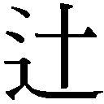

| 菊と刀 | |
| ベネディクト | |
| (2008) | |
菊と刀
ベネディクト
角田安正訳
Title: THE CHRYSANTHEMUM AND THE SWORD
1946
Author: Ruth Benedict
凡例
⑴本書の底本は、アメリカのマリナー・ブックス（Mariner Books）が二〇〇五年に出版したRuth Benedict,The Chrysanthemum and the Sword -- Patterns of Japanese Cultureである。このマリナー・ブックス版は、一九四六年に出版されたホートン・ミフリン（Houghton Mifflin）版のリプリント版である。
⑵括弧
（ ）......（イ）原文の丸括弧は、訳文においてもおおむね生かすようにした。しかし、訳者の判断で括弧を外した箇所もある。一例を挙げると、丸括弧内にローマ字で示された日本語（たとえば、haji）は、括弧を使わずに恥のように表記した。（ロ）原文において丸括弧が使われていないにもかかわらず訳出の都合上、丸括弧を使った箇所が若干ある。（ハ）生没年は訳者による補足であるが、それも丸括弧でくくった。
〔 〕......短い訳注は上記の括弧の中に収めた。
「 」......（イ）原文の引用符は鉤括弧で表した。ただし、原著者が引用符を用いていても、あえて鉤括弧を使わなかった箇所もある。（ロ）間接話法や中間的話法（描出話法）を直接話法に置き換えた場合も鉤括弧を用いた。
『 』......（イ）書名や新聞・雑誌のタイトルを示すのに用いた。（ロ）鉤括弧の中の鉤括弧は二重鉤括弧にした。
⑶傍点......（イ）原文がイタリックで強調されている場合、訳文で傍点を使った。（ロ）連続するひらがなの切れ目を明らかにするなどの目的で訳者が用いた傍点もある。
⑷ルビ......カタカナのルビは大部分、原著者が丸括弧の中で示した日本語（ローマ字表記）である。ただし、訳者が原語（英語）を示すために補ったルビも若干ある。
⑸註......原註は巻末に一括して掲げた。本文中における原註番号は、（１）、（２）......のように示した。訳註は本文の奇数ページの左側に掲げ、１、２......のように示した。
⑹引用文の訳し方......夏目漱石『坊つちやん』、外交文書や詔書など各種引用文はいずれもベネディクトの英文から訳出した。ただし、「恩を忘れるな」（忠犬ハチ公の物語）については、ベネディクトの英語が原文にきわめて忠実な訳文になっていることを踏まえ、尋常小學修身書から直接抜粋した。
⑺段落......訳者の判断によりやや多めに設定した。
◎ご注意
本作品の全部または一部を無断で複製、転載、改竄、公衆送信すること、および有償無償にかかわらず、本データを第三者に譲渡することを禁じます。
個人利用の目的以外での複製等の違法行為、もしくは第三者へ譲渡をしますと著作権法、その他関連法によって処罰されます。
菊と刀 日本の文化に見られる行動パターン
日本生まれの日系一世や、二世のうち日本で教育を受けた人々は、戦時中アメリカ合衆国での生活に際し、はなはだしく辛い立場に置かれていた。日系人に不信感を抱くアメリカ人は、少なくなかったからである。
それだけに、本書の材料を集めるにあたって日系人に大変お世話になったことをここに明らかにできるのは、殊のほかうれしい。感謝の念は一言では言い表せない。戦時中に同僚であったロバート・ハシマ氏には、特に感謝している。ハシマ氏はアメリカ生まれで、日本育ち。一九四一年にあえてアメリカに帰国してきた人物である。ハシマ氏は敵性外国人収容所に抑留されたが、その後、アメリカの軍機関に勤務するためにワシントンに赴任してきた。ハシマ氏に出会ったのはそのときのことである。
研究課題を与えてくださった戦時情報局にも御礼を申し上げなければならない。本書は、その課題に対する報告を基にしている。戦時情報局の中でも特に、極東部次長のジョージ・Ｅ・テイラー教授と、外国戦意調査課長を務めたアレグザンダー・Ｈ・レイトン海軍予備役中佐（医官）にお世話になった。
本書を通読するか、あるいは部分的に読んでくださった次の方々にも感謝したい。レイトン中佐、クライド・クラックホーン教授、ネイサン・リーツ博士、コンラッド・エアーレンズバーグ教授、マーガレット・ミード博士、そしてグレゴリー・ベイトソンとＥ・Ｈ・ノーマンの両氏。最初のお三方（レイトン、クラックホーン、リーツ）は、わたしが日本研究を進めていた間、戦時情報局に勤務しておられ、さまざまな点で支えになってくださった。お三方を含め、右にお名前を挙げた皆様方のご助言とご支援に厚く御礼申し上げる。
ルース・ベネディクト
アメリカ合衆国が全面的な戦争においてこれまで戦った敵の中で、日本人ほど不可解な国民はなかった。手ごわい敵と戦争になったことは以前にもあったが、見越しておかねばならない行動と思考の習慣がこれほどいちじるしく異なっていた例はない。今回敵となった国民は、抜かりなく武装し訓練を積んでいながら、欧米の文化的伝統に与していなかった。ちなみに、アメリカに先立って帝政ロシアも、〔一九〇四年から〕一九〇五年に、同じ相手と戦争をしている。捕虜の扱いをはじめ欧米諸国が人間的行為として受け入れている戦時の慣行を、日本人は明らかに意に介さなかった。それゆえに太平洋戦争は、単なる一連の島嶼上陸作戦や、兵站の能力を問う最良の試金石の域を超え、敵の本質という重大な問題に突き当たったのである。わたしたちアメリカ人にしてみれば、日本人の行動の意味を理解しないことには対処の仕様がなかった。
立ちはだかる困難は、並大抵のものではなかった。日本が鎖国を解いて門戸を開放してから七五年。その間、日本人を描写するために、「その反面......」という言い回しが数え切れないほど繰り返されてきた。世界中でこれほど頻繁にこのフレーズを適用された国民はない。真摯な専門家であれば、日本人以外の国民に関して論評する際、以下のような矛盾した説明はしない。
「礼儀をわきまえているという点で他の追随を許さない」と述べながら、「その反面、思い上がった、態度の大きい国民である」という一節を付け加える。また、「頑固さにかけては比類がない」と述べておいて、「その反面、最先端の思想や制度に進んで順応する」と付け足す。「従順な国民である」と評しながら、「上からの統制に素直に応じない」との説明を併記する。「節操があって心が広い」と述べながら、「だがその反面、二心があって執念深い」と断定する。「まぎれもなく勇敢である」との記述と並べて、その小心翼々ぶりを取りざたする。「人目を気にして行動する」という評のあとに、「正真正銘、恐るべき良心の持ち主である」という言葉を続ける。軍隊におけるロボットもどきの規律を描写しつつ、それに引き続いて、同じ軍隊において反逆の一歩手前まで兵卒が反抗する有様を描写する。欧米の研究にいそしむ様子を描きながら、頑迷固陋な保守性を説明する。また、「役者や絵師を敬う美意識、あるいは菊の栽培にあらん限りの工夫を凝らす美的感覚を一般大衆が大事にしている」と本に書きながら、わざわざ別の研究書を著して、刀をあがめ武士をうやうやしく扱う風習について補足する。
これらの矛盾はいずれも日本に関する書物の縦糸と横糸であって、すべて真実である。菊も刀も、同じ日本像の一部なのである。日本人は攻撃的でもあり、温和でもある。軍事を優先しつつ、同時に美も追求する。思い上がっていると同時に礼儀正しい。頑固でもあり、柔軟でもある。従順であると同時に、ぞんざいな扱いを受けると憤る。節操があると同時に二心もある。勇敢でもあり、小心でもある。保守的であると同時に、新しいやり方を歓迎する。他人の目をおそろしく気にする一方、他人に自分の過ちを知られていない場合でもやはり、やましい気持ちに駆られる。兵卒は徹底的に規律をたたき込まれているが、同時に反抗的でもある。
アメリカにとって日本を理解することがかくも重要になったとき、右に挙げた矛盾や、同じように目立つそのほかの矛盾を、たいしたことはないと一蹴するわけにはいかなくなった。重大な局面が続けざまにやって来た。日本人は、一体何をしてくるだろうか。本土上陸をせずに日本を降伏させることは可能だろうか。皇居は、爆撃の対象とすべきだろうか。日本人捕虜については、どのような行動が予想されるだろうか。日本軍と日本本土に向けた宣伝において、わたしたちはどのようなことを言えばアメリカ人の命を救い、日本人の徹底抗戦の決意をくじくことができるだろうか。知日派相互の意見の隔たりははなはだしく大きかった。戦争が終わった後、日本の秩序を保つために、半永久的な戒厳令が必要になるのだろうか。米軍は山中の隠れ処を見つけるたびに、決死の抵抗を試みる日本兵と戦うことを覚悟しなければならないのだろうか。日本においてフランス革命やロシア革命のたぐいの革命が起こらない限り、国際平和はあり得ないのだろうか。だとすれば、そのような革命はだれが指導することになるのだろうか。革命が起こらない場合、日本人を根絶する以外に国際平和に至る道はないのだろうか。わたしたちの判断が及ぼす影響は大であった。
一九四四年六月、わたしは日本研究を委託された。日本人とはどのようなものか、文化人類学者として駆使することのできる手法を総動員して説明せよ、とのことであった。同年初夏、日本に対するアメリカの大攻勢は、ようやく本格化し始めたところであり、当時、まだアメリカ人は、対日戦争は三年、あるいは十年、いや、もっと長く続くだろうと言っていた。日本国民は、「戦争は百年続く」と断言していた。彼らの言い分はこうである。アメリカ人は局地的には勝利を重ねてきたが、ニューギニアとソロモン諸島はアメリカ本国から何千キロメートルも離れているではないか。日本の公式発表は、海戦での敗北を認めたことはほとんどなかった。だから日本人は、まだ勝っていると思っていたのである。
しかし六月、事態は変化し始めた。ヨーロッパにおいて〔英米連合軍がフランスに上陸した結果、東部戦線に加えて〕第二戦線が出現した。最高司令部は、過去二年半にわたって、ヨーロッパ戦域で取り組んできた軍事上の最優先事項を実現したわけである。対ドイツ戦の終わりは、もう目前に迫っていた。太平洋では、米軍がサイパン島に上陸した。それは、日本の来たるべき敗北の前触れとなる重大な作戦であった。米兵はそのとき以来、日本人と絶えず至近距離で対峙することになる。ちなみにわたしたちは、ニューギニア、ガダルカナル、ビルマ〔現在のミャンマー〕、アッツ島、タラワ環礁、ビアク島などの戦闘を通じて、相手が恐るべき敵であるということをよく知っていた。
このようなわけで一九四四年六月、わたしたちの敵である日本について、少なからぬ問いに答えることが重要になった。議論の的は軍事だったり外交だったりした。また、それが提起されるきっかけは重大な政治的問題であったり、日本の銃後にばらまく宣伝用ビラの問題であったりした。いずれにしても、それぞれの疑問を解明することは重要であり、日本が総力戦を遂行する中、わたしたちが心得ておくべき事柄は少なくなかった。単に、日本政府の権力者たちの目的と動機や、日本の長い歴史、経済と軍事の統計が分かっていれば良いというものではなかった。わたしたちは、日本政府がどの程度国民の頑張りに期待できるのかを知っておく必要があった。また、日本人の持っている思考と感情の習性はどのようなものか、そして、そのような習性はどのようなパターンに当てはまるのか。できるだけそれを把握しなければならなかった。日本人の行動や意見を支える通念も、やはり知っておく必要があった。わたしたちがアメリカ人として行動する際に前提とする発想は、一時的に棚上げを迫られた。そして、最大限の自戒が必要だった。さもないと、「アメリカ人が一定の状況ですることを日本人もするだろう」という安直な結論に飛びつくことになりかねないからである。
アメリカと日本は交戦中であり、わたしの課題は一筋縄ではいかなかった。戦時に敵を一から十まで非難することは簡単である。だが、敵が現実をどのように見ているのかを理解しようと努力する段になると、事は格段に難しくなる。わたしの課題はまさにそれだったのである。論ずべきことは、日本人がこれからどのように行動するのかということであった。わたしたちアメリカ人が日本人の立場に置かれたらどのように行動するか、ではなかった。努めて心がけるべきことがあった。それは、戦時の日本人の行動を、日本人に対する理解を阻むマイナスの材料ではなく、理解を促す手がかりとして利用するということである。
さしあたり、日本人の戦争のやり方そのものを、軍事問題ではなく文化的な問題として取り上げる必要があった。平時と同様に戦時においても、日本人の行動は独特である。日本人は日本人なりのやり方で戦争に取り組んだ。そこに示された生活様式や思考様式の特徴は、どのようなものであったろうか。日本の指導者たちは、持ち前のやり方で戦意の高揚を図り、怯んだ人々を元気づけ、戦場で兵士を動かした。これらの営為を逐一観察した結果、あることが分かった。それは、指導者自身が利用可能な強みと見なしていたものは何か、ということである。わたしは必要に迫られて、太平洋戦争の細部を跡づけた。そうすることによって、戦争中の日本人がどのように素顔を露わにしたかが次第に見えてきた。
しかし、アメリカと日本が交戦中だったという事実は、必然的に、ある深刻な不都合を意味する。すなわち、文化人類学の最重要の手法である現地調査を断念しなければならなかったのである。本来なら、日本を訪れ、日本の家庭に住み、日常生活の苦労を観察し、そのような苦労のうち、どれが重大でどれが重大でないかを自分の目で見極めることが望ましい。だが、そのようなことはできない。また、日本人が何か決定を迫られて迷う様を観察することも、育児の様子を見ることも、できなかった。文化人類学者が日本の村を現地調査して著した研究書としては、ジョン・Ｆ・エンブリー著『須恵村』〔植村元覚訳『日本の村──須恵村』日本経済評論社〕しかない。この本はきわめて貴重である。しかし、一九四四年に生じた日本に関する疑問のうち多くのものは、同書が執筆された時点ではまだ提起されていなかった。
こうした大きな障害にもかかわらず、わたしは文化人類学者として、一定の手法と基本的理論については自信があった。それを利用することは可能だった。少なくとも、人類学者が多大な信頼を寄せている手法をあきらめるには及ばなかった。その手法とは、研究対象となっている国民に面接することである。アメリカには、日本で育った日系人が数多く住んでいる。日系人が具体的にどのような事実を体験したのかを問うことは可能であった。また、体験した事実を日系人がどのように判断していたか探ることも可能であった。さらには日系人の説明によって、わたしたちの知識の、少なからぬ欠落部分を補うこともできた。ここで言う知識とは、いかなる文化を理解する上でも必要不可欠だとわたしが人類学者として確信する知識のことである。日本研究にたずさわる他の社会科学系の学者たちは図書館を利用し、過去の事件や統計の分析をおこなっていた。また、日本が宣伝に使う書き言葉や話し言葉の変遷を追跡していた。彼らが求めていた答えのうち多くのものは、日本文化の不文律と価値観の中に埋もれているはずである。また、実生活においてそのような文化を体験した人々の協力を得てその文化を探究したほうが、満足のいく答えが得られるはずである。
とはいえ、わたしは文献を読み、日本で生活したことのある欧米人から絶えず恩恵を受けた。それを否定するつもりはない。日本人をテーマとするたくさんの文献や、日本で暮らしたことのある欧米の優れた観察者のおかげで、わたしは有利な条件に恵まれた。同じ人類学者でも、アマゾン川の上流やニューギニアの高地に行って、文字を持たない部族の研究をする場合、そのようなメリットを享受することはできない。こうした部族は、書き言葉を持っていないため、考えや思いを書き残すということがない。欧米人による解説は貧弱かつ皮相的である。そのような部族の歴史を知っている者はだれもいない。そこでは、経済生活はどのように営まれているのだろうか。社会はどのような階層に分かれているのだろうか。宗教生活においては、何が至高のものとされているのだろうか。フィールドワークに従事する研究者は、それらの事柄を明らかにしなければならない。だがその際、先達の助けを借りることはできない。
ところが日本研究となると、大勢の学徒の遺産が受け継がれている。古い文献をひもといてみると、そこには、生活を事細かく描写した文章が書き残されている。欧米からやってきた男や女が生々しい経験を書きとめている場合もあれば、日本人自身が、あっけらかんと胸の内をさらけ出している場合もある。多くの東洋人と異なって日本人は、文を綴ることによって自分自身をさらけ出そうとする強い衝動をそなえている。日本人は世界進出計画についても、日常生活のこまごまとしたことについても、文字を書きつらねた。日本人は驚くほど率直である。もちろん、日本人が全体像を呈示することはなかった。そのようなことをする国民は存在しない。日本について語る日本人は、本当に重大な事柄を見逃してしまう。その重大事が空気と同じように身近すぎて、目に見えないからである。アメリカ人がアメリカについて語るときも同様である。だが、それでもやはり、日本人が好んで自己をさらけ出すのは事実であった。
わたしはそれらの文献を読んだ。その際、予備知識が欠けているがゆえに理解できない事柄に注意を払った。ダーウィン（一八〇九～八二年）も、本人の語るところによれば、種の起源に関する理論を構築しようとしていたとき、それと同じように作業をしたという。国会の演説に見られるような意見の対立にどのような意味があるのかを理解するためには、それに先立って、何を知っておく必要があるだろうか。瑣末なように見える事柄が猛烈な非難を招き、法外とも思える事柄があっさりと受け入れられるが、その背後には一体何があるのか。わたしは文献を読むとき、絶えず次のように自問したものだ。「この絵の間違い」はどこにあるのか。また、それを理解するためには何を知る必要があるのか。
日本で脚色、製作された映画も見に行った。その中には宣伝映画や時代劇もあれば、東京や農村の現代生活を描いた映画もあった。あとでわたしはおさらいをした。つき合ってくれたのは日系人である。彼らは、その映画を日本で見たことがあるかないかにかかわらず、主人公や悪役に対してわたしとは違った見方をした。それは日本人独特の見方であった。わたしが解釈に困って立ち往生しているときでも、彼らはそのようなことはない。それは明らかであった。作品の趣向ないし創作意図は、わたしには正しく見抜くことができず、映画がどのように構成されているかを教えられて、ようやく、ああ、そうだったのかと納得した。小説と同様に映画に関しても、日本育ちの人々とわたしとでは受け止め方が違った。その差異は、見た目以上に大きかった。日系人の中には、日本の慣習を急いで擁護しにかかる者もあれば、日本のものをことごとく嫌う者もあった。どちらの側から多くのことを学んだかは、一概には言えない。いずれにしても、両者から詳しく説明してもらった日本の生活像に、食い違いは見られなかった。人によって、日本の生活ぶりを喜んで容認するか、それとも苦々しそうに一蹴するかの違いはあったが。
人類学者が資料と知見を求めて、研究対象とする文化圏に住む人々のところに直接おもむくとしよう。それだけであれば、日本に住んだことのある観察力の鋭い欧米人が残した業績をなぞるだけである。人類学者は、焼き直しを提供するだけですむのであろうか。そうであるなら、滞日経験のある外国人が成し遂げてきた貴重な日本人研究をさらに豊かにすることは望めない。だが文化人類学者は、訓練の結果として一定の技能を身に付けている。まさにそれゆえに、文化人類学者が既存の業績のさらなる発展に貢献しようと努力することは、相当の価値があるのではないだろうか。たとえ、研究や観察に取り組む者が大勢いる分野ではあっても。
人類学者は、アジア・太平洋のさまざまな文化を知っている。日本には日本の、生活を律する社会的な仕組みや習慣がある。そのうちの少なからぬものについては、よく似たものが太平洋の島々の原始的部族においても見られる。このような類似のうち一部の例はマレーシアで、別の例はニューギニアで、さらに別の例はポリネシアで見受けられる。これらの例は、かつて古代に、人間が移住したり交流があったりしたことを示しているのだろうか。もちろん、そのようなことに思いを馳せるのは興味深い。だが、文化の類似例に関する知識が貴重なのは、歴史上の交流という問題の解明に役立つから、というわけではない。むしろ、理由は別のところにある。すなわち、右に挙げた素朴な文化において社会的な慣習がどのように機能しているのかを知っていたおかげで、自分が発見した類似と差異に照らして、日本の生活を読み解く手がかりが得られたということなのである。
わたしはまた、アジア大陸のタイ、ビルマ、中国についてもいくらか知識があった。だから日本を、偉大な文化遺産を構成するほかの国々と比較することができた。そのような文化比較は非常に重要なものになり得る。人類学者は早くからそのような重要性を、原始的な部族を対象とする研究において再三にわたって示した。ある部族はその慣習の九割を近隣の部族と共有しているかもしれない。それでいてそのような慣習を、自分たちの独自の生活様式や価値体系に溶け込ませるために修正した可能性もある。修正過程において、本来あった基本的な部分が排除されているかもしれない。基本的な部分とは、量的には慣習全体のごく一部にすぎないかもしれないが、部族の将来の発達を特定のコースに向けて方向づける基幹部分を指す。全体的には多数の共通の特徴をそなえた民族相互の間にも、やはり異同が観察される。文化人類学者にとって、それを研究することほど有益なことはない。
自分の文化とそれ以外の文化の間には差異がある。人類学者は、差異のうち極大のものに慣れることも求められてきた。そして、まさにこの問題に取り組むために、自分の手法を磨くよう迫られている。人類学者なら自分の経験に照らして知っていることだが、文化が違えば、それぞれの文化を持つ人々が直面する状況もおおいに違う。また、部族や民族によって、状況のとらえ方もはなはだしく異なる。北極の集落や熱帯の砂漠において人類学者が遭遇したのは、その部族に独特の決まりである。それは、親族相互の責務や金銭的なやり取りを規定している。そのような決まりは、想像力を最大限に働かせたときですら予想を超えていることがある。決まりは、部族の行動にどのように影響するのだろうか。また、それぞれの世代は子どものころからどのようにしつけられて、先行する世代の態度を見習うようになるのだろうか。人類学者は、それを調査することも課題としてきた。調査対象は、親族関係や金銭的なやり取りばかりではなかったのである。
異なる慣習、その継承、そしてその影響に関する専門的な関心は、日本研究にうまく応用することが可能であった。アメリカと日本との間には、根深い文化的差異がある。だれしもその事実に気づいている。アメリカには素人じみた日本人論すら存在する。それによると、アメリカ人と日本人は正反対のことをするのだという。このような思い込みは危険になることがある。それは、他でもない、研究者が「これらの差異はとてつもなく大きいので、そのような国民を理解するのは不可能だ」と述べるにとどまり、自己満足に陥る場合である。奇異な行動だからといって、それを理解することが不可能ということにはならない。人類学者は経験上、その証拠をふんだんに握っている。そして職業柄、差異をマイナスの材料ではなくプラスの材料として活用してきた。その点では、他のいかなる社会科学系の研究者もかなわない。人類学者が慣習や民族に対する注意を最大限に研ぎ澄ますのは、それらのものが驚くほど奇妙だという事実が分かったときである。自分の研究対象としている部族の生活様式においては、何であれ、当たり前と思い込むことは許されなかった。それゆえに人類学者は、精選された若干の事実ばかりか、あらゆることに目を向けなければならなかった。欧米の国民を研究する際、比較文化研究の訓練を積んでいない学徒は、一部の行動領域を丸ごと見過ごすことがある。それは、非常に多くのことを当たり前と思い込み、日常生活における一連の瑣末な習慣を検討しないからである。また、日常茶飯の出来事に対する既成の判断を逐一検証しないからでもある。ところがそのような判断は、国民単位でまとまって世論という形をとると、外交官が締結する条約以上に国民の将来を左右するのである。
ありふれた事柄を研究するための手法を開発することも、人類学者の課題であった。研究対象となっている部族において「ありふれている」と見なされるものと、研究者の母国においてそう見なされるものとは、おおきく食い違っているからである。Ａという部族がきわめて酷薄である原因や、Ｂという部族がきわめて小心である原因を突き止めなければならないとしよう。また、一定の状況でそれらの部族がどのように行動し、どのように感じるのかを説明しなければならないとしよう。人類学者には分かっていることだが、頼りになるのは詳細な観察記録である。たしかに文明国を対象とする観察記録は、あまり実例がない。だが、詳細な観察をしないですますわけにはいかない。人類学者は、そう信じるに足る十分な根拠を持っている。また、そのような観察を引き出す調査方法を心得ている。
こうした調査方法は、日本を対象として試みるに値するものであった。なぜか。いかなる集団についても言えることだが、生活上のすこぶる人間的な日常茶飯事を記録して初めて、人類学者の前提がどれほど重要か、余すところなく認識することが可能になるからである。人類学者の前提はこうである。いかなる原始的部族においても、また、いかなる文明国においても、人間は日常生活の中で行動を学習する──。ある人の行動や意見がどれほど異様に見えようと、当人の感じ方や考え方は、経験してきたことと一定の関係を持っているのである。わたしは、ある行動を見て不可解な気持ちに襲われると、なおさら確信を強めた。このような奇妙さを生み出す何らかの日常的な条件が、日本人の生活のどこかに存在しているはずだ、と。それを探ろうとすれば、日々の人間関係の細かいところにまで立ち入ることになる。それは、ますます結構なことであった。人間関係はまさに人々の学習の場だからである。
文化人類学者として、もう一つ前提としたことがある。それは、「この上なく隔たった個々の行動ですら、ある程度相互に有機的な関係にある」ということに他ならない。わたしが重視したのは、無数のささいな行動がどのような具合に全体的なパターンに収まるのかという点である。それぞれの人間社会は、社会生活を立ち行かせるために、独自の仕組みを作らなければならない。また、ある状況に対する特定の対処法や特定の判断にお墨付きを与える。その社会に生きる人々は、これらの解決策を社会の基盤と見なす。そのような解決策があれば、あらゆる障害を乗り越えて一体性を保つことができるからである。ひとたび生活の指針として特定の価値体系を受け入れると、もはや対立する価値体系に沿って思考し行動する余地はなくなる。長期にわたってそのようなことをすると、必ず非効率と混乱を招くことになるからである。したがって人々は、社会生活をできるだけ特定の価値体系によって統一しようと努める。また、共通の原理や共通の動機をおのれに課する。要するに、ある程度の一貫性が必要だということである。さもないと、全体の仕組みがばらばらに崩壊してしまうからだ。
こうして経済上の行動、家庭内の決まり、冠婚葬祭、政治的目標などは、互いに歯車となって一体化する。ある分野における変化は他の分野の変化よりも急速かもしれない。その結果、ほかの分野は大きな圧力にさらされるかもしれない。しかしその圧力自体、一貫性を保つ必要性から生じるのである。文字を持たない未開社会が他人に対する支配権の追求に明け暮れている場合、権力を目指そうとする意志は、経済的な取引や他の部族との関係ばかりか祭祀の形でも表現される。古くからの経典を持つ文明国では、文字を持たない部族とは異なって、教会が何百年も前の語句を維持する。それは必然的である。しかし教会は、新たな既成事実に抵触する領域では権威を放棄する。新たな既成事実とは、世俗の経済的、政治的権力が広く社会的に承認されるようになるということである。しかも教会の使う言葉は、文言がそのままでも、意味が変わる。宗教上の教義や経済上の慣行、そして政治は、くっきりと区画された小さな池の中にせき止められたままとどまるということはない。それどころか、池と池を仕切っていると考えられる境界からあふれ、その水は互いに混ざり合って見分けがつかなくなる。これは時代を超えた真理である。
したがって研究者は、経済・性行動・宗教・育児など、検討項目が分散しているように見えるぐらいに手広く調査したほうがよい。そうであればあるほど、研究対象とする社会で起こっていることを首尾よく跡づけることができる。また、生活のいかなる領域においても、仮説の構築やデータの入手が可能になる。その効用は大きい。そしてさらには、いかなる国民に関しても彼らの要求に対し、社会的経験を通じて学習した習慣と思考様式の発露として見ることができるようになる。表現形式は、政治・経済・道徳などまちまちであるとしても。右のような次第で本書では、たとえば宗教、経済生活、政治、家族など、日本の特定の面に焦点を絞ることはしていない。本書では生活を営むということを、日本人がどのように受け止めているのかを検証した。そして、いかなる営為を考察の対象とした場合でも、日本人の態度をありのままに描いた。要するに、日本が日本人の国である所以を論じたわけである。
二〇世紀のハンディキャップの一つは、わたしたちがいまだに各国の本質に関して、この上なく不鮮明で、しかも偏見に満ちた理解しかしていないということである。日本に限ったことではない。アメリカについても、フランスについても、ロシアについても同じことが言える。このような知識不足に阻まれて、各国は互いに誤解をする。わたしたちは、似た者同士の間で紛争が起こったときに、「埋めがたい溝がある」などと心配する。一方、ある国が自己の経験全体と価値体系に引きずられて、わたしたちの意図するものとはまったく異なる行動をもくろむ場合はどうか。そのようなときでも、わたしたちは「目的は彼らと共通だ」などと語り合うことがある。わたしたちは進んで機会をとらえ、その国の人々の習慣と価値観を見きわめるべきである。それを怠っているから、実態が見えなくなるのである。実際には、その国がわたしたちにとってなじみのない行動をとっているからといって、それが悪い方向を向いているとは限らない。
それぞれの国は、自己の思考および行動の癖について語る。だが、全面的にそれに依拠することは不可能である。どこの国でも文筆家は、自分の国のことを描き出そうと努力してきた。だがそれは、容易な作業ではない。ある国の人々が現実を見つめる際に使うレンズは、ほかの国民が使うレンズと同じではない。モノを見るときに、自分の目を自覚することはむずかしい。いかなる国も自分の目を意識しない。だから国民は、焦点を絞った構図や近くのものを大きく見せる画法が使ってあるのに、そこに描かれた風景を天の配剤そのものと錯覚するのである。いかなる国民も、そのような画法を通じて国民共通の現状認識に達している。メガネの場合、わたしたちは、決して無用な期待をしない。つまり、それをかけている本人がレンズの度数を知っているとは思わない。それと同様に、国民がみずからの世界観を自己分析するだろうなどと無用の期待はしないことだ。メガネのことを知りたくなったら、わたしたちは眼科の検査技師を養成する。そして、その検査技師に期待を寄せる。レンズを持参すれば、度数をはじめレンズの作りについてたっぷり説明してもらえるだろう、と。現代世界の国々を研究して、それぞれの国民のレンズの作りを明らかにすることは、社会科学者の仕事である。いつの日か、わたしたちはきっとそのことを認識するであろう。
この仕事をするために必要なのは、一定の冷徹さと寛容さである。前者は、善意の人々からときに非難を浴びるようなたぐいの冷徹さである。「世界はひとつ」を唱道する善意の人々は、世界中の人々を自分たちの見方で染めることに期待をかけてきた。それによると、東西間の違い、黒人と白人の違い、キリスト教徒とムスリムの違いなどはすべて皮相的なものであり、全人類は実のところ、同じ考え方をしているのだという。このような見解は、四海兄弟論と呼ばれることもある。四海兄弟論を受け入れたとたんに、口外できなくなる主張がある。それは、「日本人には日本人の生活の営み方があり、アメリカ人にはアメリカ人の生活の営み方がある」というものである。どうしてそれが禁句になるのだろうか。わたしには理由が分からない。しばしば感じられることであるが、「世界はひとつ」を唱道する人々は、画一的な世界を前提にしないことには善隣の方針を立てられないらしい。そのような世界では、どの国民も、同じネガから焼き付けられた写真さながらに互いによく似ていることだろう。しかし、ほかの国民を尊重する条件としてそのような画一性を要求することは、妻や子どもに同じものを求めるのと同様に、やはり非現実的である。冷徹な考え方をする人々は、差異が存在するということを甘んじて受け入れる。そして、差異を尊重する。そのような人々の目標は、差異があるにもかかわらず安全が確保されている世界である。そこでは、アメリカは世界の平和をおびやかすことなく徹底的にアメリカ的であることを許される。同じ条件のもとで、フランスはフランスであることを許され、日本は日本であることを許される。このような世界観が成熟するのを外部からの干渉によって禁ずるなら、研究者はそれを理不尽と思うだろう。もっとも、差異というものを世界全体に対する脅威として受け止めるべきだと確信しているのであれば、話は別であるが。
また、差異を尊重すれば世界の現状固定化を助長することになりはしないかという議論がある。だが、研究者はそのようなことを心配するには及ばない。文化の違いを擁護したからといって、静止した世界が確保されるというものではない。イングランドは、エリザベス一世の時代に続いてアン女王の時代、次いでヴィクトリア朝がやって来たからといって、イングランドらしさを失いはしなかった。それは、イングランド人があくまでもイングランド人のままであったがゆえに、世代交代が進むにつれて他国と異なる標準が成立し、他国と異なる国民的な雰囲気が勢いを得たからである。
国民相互の違いを体系的に研究するためには、冷徹さと同様に寛容さも必要である。これまでにも比較宗教の研究が盛んになった時期がある。それはもっぱら人々が確固たる信念に貫かれており、まさにそれゆえにたぐい稀な寛大さを発揮していたときである。彼らの中には、イエズス会の修道士やアラビア人学者もいたことであろう。また、神を信じない者もいたことであろう。しかし、彼らが狂信的であるということはあり得なかった。
比較文化の研究も、人々が不寛容である場合には、やはりふるわない。不寛容とは、自分たちの生活様式を擁護するのに熱心なあまり、それ以外の方法では事を解決することはできないと決めつける態度を指す。本来、他の生活様式を知ることによって自分自身の文化に対する愛着はますます深まるものだが、彼らにはそれが分からない。だから、自分自身の殻に閉じこもり、面白くて精神の糧になる経験を遮断する。そして、身を守るのに汲々とするあまり、せいぜいのところ、「ほかならぬ我々のやり方を見習え」と他国民に対して要求するにとどまる。アメリカ人の場合、思い入れのある主義主張をあらゆる国民に対して押し付ける。だがほかの国民は、要求されたからといってアメリカ式の生活様式を受け入れるわけにはいかない。それはちょうど、わたしたちが十進法の代わりに十二進法の計算を身に付けろとか、あるいは、どこかの東アフリカの先住民のように片足立ちで休息を取る術を身に付けろとか言われても、おいそれとできないのと同じことである。
本書で述べたのは以下の点である。日本において当然のこと、あるいは当たり前のことと見なされている習慣はどのようなものか。日本人ならだれもが丁重な扱いを期待するのはどのような場合か。逆に、遠慮するのはどのような場合か。日本人が恥だと感じたり、あるいはきまり悪い思いをしたりするのはどのような状況か。日本人が義務と考えるのは何か。
本書の叙述を裏付ける申し分のない権威者がいるとすれば、それは、いわゆる市井の人である。つまり、普通の人である。だからといって、「普通の人であれば、特定の状況を一つひとつ実際に体験したことがあるだろう」と言いたいわけではない。そうではなくて、「普通の人が特定の状況を見れば、事の次第はかくかくしかじかだと認めるだろう」ということなのである。本書のような研究は、思考や言動の、根の深い習慣を描き出すことを目標とする。かりにそこまで至らないとしても、やはりそれが理想である。
このような研究の場合、必要な情報はすぐに飽和状態に達する。そのような点に達すると、情報提供者の数を大幅に増やして追加の証言を得ても、証言全体の信憑性は高まらない。たとえば、だれがいつ、だれに向かってお辞儀をするのかという問題は、日本全体を対象とする統計研究を必要としない。お辞儀をすることが公式、非公式に必要とされる場面は、だれからでも聞き出せる。そして幾つかの裏付けが取れれば、そのあとわざわざ百万人の日本人から同じ情報を得る必要はない。
日本の生活様式の前提となっている慣行や判断は、いかなるものか。それを研究する者は、統計を使った検証作業よりもはるかに厄介な仕事を負わされている。日本人の慣行や判断は、日本人がモノを見るときのレンズになる。研究者に課された要求は重大である。つまり、そのようなレンズが出来上がる仕組みを報告しなければならない。研究者は、日本人が現実を眺める際の焦点や構図が、生活様式の前提によってどのように影響されているのか説明しなければならない。またそれを、モノの見え方がはなはだしく異なっているアメリカ人に分からせるよう努めなければならない。このような分析作業において、権威をもって裁定を下す立場にあるのは、必ずしも田中さん〔つまり、ごく普通の日本人〕ではない。というのも、田中さんは自分の依拠する前提をはっきりさせることがないし、アメリカ人用の説明は田中さんから見ると、どうしても必要以上のこじつけとしか思えないからである。
アメリカ人による社会研究は、高度な文化の前提となるものを研究課題とすることがあまり多くない。大部分の研究は、そのような前提を自明のことと仮定している。社会学者や心理学者は、意見と行動を統計処理して得られた「分布図」に気を取られており、手持ちの手法はと言えば、もっぱら統計学的である。彼らが統計学的に分析するのは、莫大な量の国勢調査資料、アンケートや面接調査官の質問に対する多数の回答、心理学の測定値などである。そしてそれに基づいて、さまざまな要因が相互に独立しているのか、それとも相互依存の関係にあるのかを明らかにしようとする。世論調査の分野では、母集団〔調査対象〕から科学的に選んだ標本を利用することによって国全体の世論を明らかにするという重要な手法がある。それは、これまでアメリカにおいて大幅に精度が向上してきた。この手法を使えば、首長や議員になろうとする候補者または政策について、支持者の数と反対者の数を割り出すことができる。支持者と反対者を分類することも可能である。分類の指標は、居住地（都市か地方か）、所得の高低、支持政党（共和党か民主党か）など、さまざまである。普通選挙がおこなわれている国では、国民の代表が実際に法律を起草し施行する。したがって、そのような世論調査の結果は、実践上の重要性を帯びる。
アメリカ人はアメリカ人を対象として世論調査をおこない、その調査結果を理解することができる。しかしそれが可能なのは、いわずもがなの準備段階を経ているからである。すなわち、アメリカにおける生活の営み方をわきまえ、それにすっかりなじんでいるということである。要するに、世論調査はすでに分かっていることをよりよく教えてくれる、ということである。ほかの国を理解しようとするときは、その国民の習慣や物の見方を、統計学ではなく質の面から体系的に研究することが必要不可欠である。それをせずに世論調査をしたのでは、得るものは多くない。注意深く標本を抽出することによって世論調査は、施政に賛成する者と反対する者の数を明らかにすることができる。しかし、その国民が国家というものをどのように考えているのかが分かっていないとすれば、世論調査から一体何を読み取ることができようか。国家観が分からなければ、各党派が街頭や議会で何について論争しているのかは分からない。ある国民が政治の前提と見なしている事柄は、政党の議席数以上に、普遍的で永続的な重要性を持っている。アメリカでは、共和党員も民主党員も、政府というものをほとんど必要悪と見なしている。また、個人の自由を束縛するものと見なしている。国家公務員は、おそらく戦時を別とすれば、民間企業で同格の仕事に就いている者と同等の社会的評価は得られない。このような国家観は、日本のそれとは大きく隔たっている。いや、ヨーロッパの多くの国々と比較しても大きな違いがある。わたしたちが第一に知らなければならないのは、それぞれの国における国家観である。各国民の国家観を如実に物語るのは、社会的な風習や功なり名を遂げた人についての世評、自国の歴史に関する神話、国民の祝祭日におこなわれる訓話などである。国家観は、これらの間接的な表現を通じて考察することができる。しかし、そのためには、体系的な研究が必要である。
いかなる国民にも、生活に際して前提とする基本的な事柄がある。また、困ったときに、良しとされている切り抜け方がある。それらのものを考察するには、注意深さと緻密さが欠かせない。それは、選挙において賛成票を投じる者と反対票を投じる者がそれぞれ何パーセントになるかを予測するときと同様である。日本が根本的な前提としている事柄は、じっくり探究するに値する。日本はそういう国である。わたしは以下のことを、身をもって体験した。まず、自分の依拠する西洋的な前提がどういう場合に日本人の人生観と食い違うのかが分かってくる。また、日本人の物事の区分の仕方や、日本人が使う象徴の意味が多少なりとも分かってくる。すると、西洋人が日本人の行動において見慣れている多数の矛盾が、にわかに矛盾ではなくなるのである。行動パターンの急転換は、一貫性のある体系を保つためにはどうしても避けられない。わたしには、日本人自身がそのような見方をする理由が次第に分かってきた。理由づけを試みることは可能である。日系人に協力を仰いだとき、最初は不可解な語句や観念を聞かされたが、それは、豊かな含蓄と古くからの情緒にあふれたものだったのである。日本における善悪は実のところ、欧米が理解しているようなものとは、天と地ほども異なっていた。価値体系は特異なものであった。仏教でもなければ、儒教でもなかった。それは日本的なものであった。そこに日本の強みも、弱みもあった。
文化の伝統があるところには、戦時の慣行がある。国ごとに多少の異同はあるにせよ、欧米諸国はそのような慣行をなにがしか共有している。たとえば総力戦に取りかかるときには、ある種の檄を飛ばす。局地的な敗北を喫した場合には、決まった形で人心を慰撫する。死傷者と投降者の比率には、一定の規則性がある。捕虜の行動には、特定のパターンがある。そのようなパターンは、戦争が欧米諸国の間に限定されている場合、予測可能である。それは、欧米諸国が軍事にまで及ぶ広汎な文化的伝統を共有しているからに他ならない。
日本人の行動は、欧米の戦時の慣行とは違っていた。個々の違いはいずれも恰好のデータとなった。それを利用すれば、日本人の抱く人生観や人間の義務全般に関する観念を調べることができる。目的は、あくまでも日本人の文化と行動パターンを体系的に研究することにあった。したがって、日本人の行動がわたしたちの慣行からずれているからといって、それが軍事的な意味において重大か否かは問題ではなかった。そのようなずれが重要になり得たのは、それに触発されて、日本人の性格に関する疑問が生じるからである。当時、わたしたちは、そのような疑問に対する回答を迫られた。
日本が戦争を正当化するために依拠した前提ですら、アメリカの考え方とは正反対であった。国際情勢の解釈の仕方が異なっていたのである。アメリカの考え方によれば、戦争の原因は枢軸国の侵略行為にあった。日本やイタリア、ドイツは、他国を征服することによって国際平和を侵害したではないか。それは不当だ。枢軸国は満州国、エチオピア、ポーランドで権力を握った。いずれの場合においても明らかになったことは、枢軸国が弱小国を抑圧する悪の道に足を踏み入れたということである。枢軸国は、他国に対する不可侵という国際的規範を侵犯した。少なくとも、他国において第三国の自由な事業のために門戸を開放するという規範に背いた。
日本は戦争の大義をほかの観点から見ていた。つまり、各国が絶対的な主権を持っている限り、世界の無秩序は一掃されない。日本は国際的な上下関係を確立するために戦う必要がある。そのような階層の頂点に立つのは、もちろん日本である。なぜなら日本だけが、国内において頂上から底辺へと正真正銘の階層を形成し、したがって、「おのおのがその所を得る」必要を理解していたからである。日本は明治維新後、国内において統一と平和を達成した。叛徒を鎮圧し、道路・発電所・製鉄所を建設した。また、公式統計によれば、青少年の九九・五パーセントに公立学校での教育をほどこすに至った。上下関係にこだわる日本的思考に従うなら、次の課題は、中国という遅れた弟を立ち上がらせることである。日本は大東亜諸国と同じ人種に属する者として、まずアメリカを、次いでイギリスとロシアを大東亜から排除すべきである。そして、おのれの「所を得る」べきである。あらゆる国は国際的な階層の中に組み込まれ、ひとつの世界を構成することになろう。
日本では、階層というものにこのような高い価値を置いていた。次の章で検証することになるが、その結果、日本文化の中に持ち込まれたものは何か。それは他でもない、日本を作者とするのにふさわしいファンタジーであった。日本にとって残念なことに、占領下の国々は、そのファンタジーに対して同様の見方をしてくれなかった。にもかかわらず、敗戦を経てもなお日本は、大東亜共栄圏の理想を心情的に捨てられなかった。また、捕虜のうち無分別な愛国主義の傾向をまぬかれている人々ですら、大陸および西南太平洋における日本の目的をあえて断罪するには至らなかった。断罪したとしても稀である。日本人の生得の信念で、半永久的に変わらないものがある。そのうち最重要のものは、階層的な上下関係に対する信仰である。平等を愛するアメリカ人にとって、それは疎ましいものである。しかし、にもかかわらず、わたしたちは以下の点を理解する必要がある。日本で言う階層制は、どのようなものを指しているのか。また日本は、階層制にどのような利点があると見ているのか。
日本は、太平洋戦争において勝利する見込みがあると考えていた。だが、その根拠もやはりアメリカで一般的に考えられていた根拠とは異なっていた。日本では、次のようなことが声高に論じられた。日本は、精神が物質を制する戦いに勝利する。アメリカは巨大であり、その軍備は優れている。だが、それが何だと言うのか。そのようなことはことごとく予想されていたし、はなから問題にならなかったではないか。「算術的な数字を心配していたら、戦端を開くことはなかったであろう」。日本の有力紙、毎日新聞は当時そのように述べ、次のように言葉を継いだ。「敵はその莫大な資源を、今次の戦争によって生み出したわけではない」。
緒戦で勝利を重ねていたころですら、日本の政治家、大本営、軍人は次のように繰り返し述べた。「これは軍備の力比べではない。日本人の精神力信仰がアメリカ人の物質崇拝とぶつかり合っているのだ」。アメリカが優勢になると日本人は、「このような戦いにおいては、物質的な力は必ず負ける」と繰り返した。この教条的見解が、サイパンや硫黄島での敗北の際に都合の良い口実になったことは疑いない。しかしそれは、敗北をごまかすために捏造されたわけではない。このスローガンは、日本が勝利を重ねていた数カ月の間、常時、一種の檄として使われたのであり、しかも、真珠湾攻撃のはるか以前に公認のものとなっていた。一九三〇年代のことになるが、狂信的な軍国主義者で陸軍大臣を務めたこともある荒木貞夫大将（一八七七～一九六六年）は、『全日本國民に吿ぐ』という小冊子の中で次のように述べている。日本の「真の使命は皇道を四海に広め、かつ輝かせること」である。「力の不足はわれわれの意に介するところではない。なにゆえに物質的な事柄に気を使う必要があろうか」。
もちろん、日本にも悩みの種はあった。戦争の準備をする国は、それをまぬかれない。つまり、日本の国民所得に占める軍事費の割合は一九三〇年代を通じて、天文学的に増大したということである。真珠湾攻撃のころには、国民所得のほぼ半分が陸海軍の費用に充てられていた。政府の歳出のうち、一般行政関連の支出に充てることができたのは、わずか一七パーセントである。日本と欧米諸国には、軍備の認識に違いがあった。といってもそれは、日本が軍備に無頓着だったということではない。艦艇や銃砲を、不滅の大和魂の現れと捉えていたということなのである。艦艇や銃砲は象徴であった。ちょうど、武士の刀が雄々しさの象徴であったのと同じように。
日本は、精神的な資源の重要性を力説するという点で完全に首尾一貫していた。それは、アメリカが物的資源の規模にこだわるのと同じことである。日本はアメリカと同じように、総動員体制による生産を国民に訴えかけなければならなかった。しかし日本の場合、国民に対する働きかけは日本独自の思考にもとづいていた。それは次のようなものである。精神はすべての源泉であり、不滅である。モノはもちろん必要であるが、精神に次ぐものでしかない。しかもいずれ消滅する。日本のラジオは次のように声高に繰り返したものだ。「物的資源には限りがある。モノの寿命は千年もない。それは理の当然である」。しかもこのような精神主義は、軍人の心得において文字どおりに解釈されていた。たとえば、操典などには次のような趣旨のスローガンが見える。「敵の兵力には訓練で、敵の鋼鉄には肉弾で対抗せよ」（１）。ちなみに、このスローガンは伝統的なものであって、今度の戦争のために急造されたわけではない。作戦要務令などの冒頭には、「必読必勝」というフレーズが太字で書かれていた。米軍の艦艇に体当たりする特攻機の飛行士たちは、精神が物質に勝っていることを示す不滅の鑑となった。日本人は決死の飛行士たちを神風特攻隊と命名した。神風とは、一三世紀、日本を元寇から救った神の風のことである。神風が吹いたおかげで元軍の船は四散し、転覆したのであった。
民生の場合ですら日本当局は、精神は物質的環境を制すると、文字どおりに解釈していた。工場で十二時間労働し、一晩中空襲にさらされ、人々はさぞかし疲れ果てていただろうと思いきや、「肉体がくたくたになればなるほど、我々の意志すなわち精神は高まり、肉体を超越する」「疲れれば疲れるほど、我々の訓練は申し分のないものとなる」。冬になると、人々は防空壕の中で凍えていたであろうに、大日本體育會がラジオで勧めたのは防寒体操であった。大日本體育會に言わせると、防寒体操は暖房器具や寝具の代わりになるだけではない。さらに良いことに、手に入らなくなった食糧に代わる活力源にもなり、そのおかげで人々は正常な体力を保つことが可能になる。「もちろん、中には次のように言う者もあろう。『現在のような食糧難の時代に体操をするなんて、考えることもできない』。断じてそうではない！ 食糧難がひどくなればなるほど、われわれはその分、ほかの手立てを講じて体力の向上に努めなければならないのだ」。要するに、体力の向上を図るために、今以上に体力を消費せよ、というわけである。一方、アメリカ人は肉体的エネルギーに対して別の見方をし、使うことのできる体力がどれだけ残っているのか絶えず計算している。その際、判断基準となっているのは次のような点である。前の晩の睡眠時間は五時間だったか、それとも八時間だったか。食事をきちんと摂ったか。寒さにさらされた直後か否か。アメリカ人の見方は、エネルギーの温存を軽視する日本式の考え方と真っ向から対立する。日本人に言わせれば、エネルギーの温存は物質主義的だということになる。
戦時中の日本のラジオ放送は、この程度の精神論にとどまらなかった。「戦闘中、精神は死という物理的な事実をも乗り越える」と説くに至った。ある番組は英雄的な飛行士とその奇跡を報道した。その飛行士は、以下のとおり、死を克服したのだという。
空中戦が終わったあと、日本の航空機は三機か四機ずつ小編隊を組んで順次、基地に戻った。最初に帰還した編隊の機上に、ある大尉がいた。大尉は大地に降り立つと、双眼鏡で空を見上げた。大尉は、部下が帰ってくるのを一機、二機と数えた。大尉は顔色こそ蒼白だったが、身じろぎひとつしなかった。最後の一機が帰還すると、大尉は報告書を作成し、司令部に向かった。そして、司令官に報告をおこなった。だが、報告を終えると同時に、くずれるように床に倒れた。その場に居合わせた士官たちは助け起こそうと駆け寄ったが、何と、大尉は事切れていたのである。調べてみると、遺体はすでに冷たい。胸には銃創があり、それが致命傷になったということが判明した。息を引き取ったばかりなのに遺体が冷たいということはあり得ない。にもかかわらず、大尉の遺体は氷のように冷たかった。大尉はかなり前に亡くなっていたはずである。報告をおこなったのは、大尉の魂だったのである。大尉が厳格な責任感の持ち主だったからこそ、このような奇跡が起こったに違いない。
もちろんアメリカ人にとって、これは荒唐無稽な話である。だが教養のある日本人は、この報道を鼻先であしらおうとはしなかった。日本のラジオ聴取者がそれを作り話と受け止めることはないと、確信していた。そのような教養人は最初、次のように指摘した。なるほど、アナウンサーはその大尉の超人的行動をいみじくも「奇跡的な事実」と伝えた。だが、それが事実であったとしても、驚くには当たらない。魂の修練は可能である。大尉が自己修練の達人だったことは明らかである。日本ではだれもが信じていることだが、「達観せる魂は千年不滅」である。そうであるなら、航空隊の大尉の肉体に魂が数時間とどまったとしても、何ら不思議ではない。なにしろその大尉は、「責任をまっとうする」ということを全人生における至上命令と心得ていたのだから。日本人の確信するところによると、高度な修練を積むことによって、人間はおのれの魂を最高段階に導くことができる。くだんの大尉は生前すでに悟りを開いていたのである。
わたしたちアメリカ人としては、このような日本人の行き過ぎた精神主義を、貧しい国民の言い訳か、さもなければ欺かれた国民の幼稚さとして片づけることもできよう。だがそのような姿勢で臨むなら、その結果として、戦時と平時のいずれにおいても、日本人に対する接し方はますます拙劣になるだろう。日本人の行動原理が生まれ、国民の間で定着するに至ったのは、ある種の自己規制が積み重なり、また特定の方式に従って鍛練としつけがおこなわれた結果である。日本人の行動原理は、単なる奇妙な風習の寄せ集めというわけではない。日本人のそのような行動原理を認識しさえすれば、次のような日本人の発言は、アメリカ人にも容易に実感することができる。「アメリカ人にくらべて精神力が不足していた」「竹槍で陣地を守るのは幻想だった」。これは、敗北を喫した日本人が自認していることである。だがもっと重要なのは、日本人の発言の真意を正しく理解することである。日本人が認めているのはこういうことである。「不足していたのは、われわれの精神力である。戦場においても工場においても、アメリカ人の精神力にたじたじとなった」。敗戦後の日本人に言わせれば、日本人が戦時中にとらわれていたのは、精神力でアメリカに負けるはずがないという思い込みだったというわけである。
戦時中、日本人はあらゆる事柄について日本的な言い方をした。それは、「階層的な上下関係は不可欠である」とか、「精神が優位に立っている」とかの発言に限らない。比較文化を研究する学徒は、日本人の発言を聞いてはっとさせられたものだ。日本人は常々、「安心感や士気は、気構えができているか否かの問題にすぎない」と語っていた。民間人に対する空襲、サイパン島における敗北、フィリピン防衛の失敗など、惨禍はさまざまだった。だが、国民に対する当局の決まり文句はいつでもこうだった。「それは前から分かっていたことだ。だから、何ら心配するには及ばない」。ラジオ放送は明らかに民心を落ち着かせたい一心で、「国民は今までどおり十分に勝手の分かった場で生活を営んでいる」と、苦しい言辞も辞さなかった。「アメリカがキスカ島を占領したことにより、日本は米軍の爆撃機の行動半径に入る。しかし、このような事態になることはよく分かっていた。必要な手立ては講じてある」。「敵は間違いなく、わが方に対して陸海空の合同作戦によって攻勢に出るであろう。だがそのことは、わが方の計画に織り込み済みである」。絶望的な戦争が続く中、捕虜の中には日本が早く降伏することを願っている人々もいた。だがその人たちですら、次のように確信していた。空襲にさらされたからといって日本人の力が衰えることはない、「なぜなら日本人は、心構えができているから」。アメリカが日本の都市を空襲し始めたとき、航空工業會の副会長は、ラジオ放送を通じて述べた。
「敵機がついに、文字どおりわたしどもの頭上に飛来しました。しかしながら、わたしども航空機の製造にたずさわる者としましては、このような事態に立ち至ることは前々から予期しており、これに対処すべく万全の準備を進めてまいりました。したがって、何ら心配には及ばないわけであります」
あらゆることに関して見通しが立っており、計画が周到に練られている。そのような建前になっているからこそ、日本人はそれにもとづいて、自分たちにとって必要不可欠な主張を展開することができたのである。日本人の主張するところによれば、何もかもみずから積極的に意図したことであり、だれからも無理やりに押しつけられたわけではないのだという。「守勢に立たされているのではなく、積極的に敵をわが方に引っ張り込んでいると考えるべきである」「敵よ、来るなら来い。『いよいよ来るべきものが来たか』では、言い足りない。ずばり言ってやろう、『念願がかない、本望だ』と」。海軍大臣は議会で、西郷隆盛（一八二七～七七年）の遺訓を次のように引用した。「機会は二種類ある。一つは我々が偶然に遭遇する機会である。もう一つは、我々が設ける機会である。大きな苦難に襲われたとき、人は進んで機会を設けなければならない」。また、ラジオは次のように伝えた。米軍がマニラ市内に入城したとき山下奉文将軍（一八八五～一九四六年）は、「今や敵はわが懐に飛び込んできた」と、「莞爾として述べた」。「敵がリンガエン湾に上陸した直後、マニラはあっさり陥落した。なぜそのようなことが起こり得たのか。ほかでもない、山下将軍の戦術が功を奏したからである。また、同将軍の計画に沿っていたからである。山下将軍の作戦は現在、引き続き進行中である」。言い換えるなら、最も首尾よく事が運ぶのは敗北したときだ、というわけである。
アメリカ人は日本人に劣らず極端に走った。ただし、方向は逆であった。アメリカ人が戦争に身を投じたのは、この戦いが売られた喧嘩だったからに他ならない。「よくも攻撃してきたな、覚悟していろよ」という思いだった。アメリカ政府のスポークスマンは、どうすれば一般のアメリカ人を安心させられるか案を練った。だが、真珠湾やバターン半島での敗北について次のようなことを述べたスポークスマンはいない。「そのような事態は、我々の計画の中で十分に計算してあった」。アメリカの当局者はその代わりに、「飛んで火に入る夏の虫だ。目に物見せてやろう」と気勢を上げた。アメリカ人は、絶えず挑戦してくる世界に対応するために、生活全体の調子を加減する。また、そのような挑戦を受けて立つ構えができている。ところが日本人は、手順どおりの図式的な生活様式に支えられて初めて安心するのである。そこでは、見えないところからやって来る脅威が最大の脅威と見なされている。
日本人が戦争遂行中に頻繁に繰り返していたもう一つのテーマも、日本の生活を知るための手がかりとなる。日本人は絶えず口にしていた。「世界の目が我々に注がれている」。だから、大和魂を遺憾なく発揮しなければならない。米軍がガダルカナル島に上陸すると、日本の将兵に対して命令が下された。いまや、「我々は全世界によって」直接観察されるところとなった。よって、本領を発揮しなければならない。日本海軍の将兵は、次のような注意を受けた。魚雷の攻撃を受けて退避命令が出た場合、救命ボートに乗り移る際にできるだけ礼儀正しくせよ。さもないと、「世界中の笑い物になる。なにしろアメリカ人は記録映画を撮影し、ニューヨークで上映するのだから」。日本人が重視したのは、世界にさらされる自画像であった。この点に関する日本人の関心も、これまた日本文化に深く根差していた。
日本人の物の見方については、さまざまな疑問が生じる。最も広く知られていた疑問は、天皇に関するものである。日本国民に対する天皇の影響力はどのようなものか。アメリカの権威ある研究者の中には、次のように指摘する者もあった。
「七世紀にわたる日本の封建時代を通じて、天皇は常に影の薄い名目的な君主であった。各人が直接に忠誠を尽くすべき相手は、領主である大名であり、大名を別とすれば将軍であった。天皇に対する忠誠はほとんど問題にならなかった。天皇は浮世から離れた御所に逼塞し、天皇の儀式や行事は、将軍の定めたご法度によって厳格に制限されていた。雄藩の大名ですら、天皇に心服すれば将軍に対する謀反と見なされた。日本の臣民にとって、天皇は存在しないに等しかった」
このように日本を分析したアメリカ人の主張は、次のとおりである。
「日本を理解するためには、その歴史を知ることが欠かせない。天皇はどのようにして、日本のような保守的な国民を束ねる正真正銘の要になったのだろうか。天皇は日の当たらない場所から担ぎ出されたのであり、しかもそれは、さほど昔のことではない。当時のことを記憶している人もいるほどである。国民に対する天皇の支配力は不滅だと繰り返し述べる日本の評論家は大げさであり、そのような主張自体、説得力の弱さを証明しているにすぎない。したがって、戦時のアメリカの政策において、天皇をうやうやしく扱う必要はない。それどころか、天皇制という、最近になって捏造された悪の概念に対して、強力な攻撃を浴びせるべきである。それにはもっともな理由がある。天皇制は、現代の国家神道の中枢部に相当するからだ。天皇の神聖さを弱め、打ち消すなら、敵国日本の構造全体が崩壊するであろう」
一方、それとは逆のことを確信する有能なアメリカ人も大勢いた。彼らは日本を知っており、前線からの報道や日系人の話を見聞きしていた。天皇をけなすような言葉や天皇に対するあからさまな攻撃ほど、日本国民の敵意を煽り、士気を高揚させるものはない。かつて日本に住んでいた日系人は、それをよく知っていた。天皇が攻撃された場合、日本人はアメリカの攻撃目標が軍国主義にあるとは解釈しないだろう。日系人はそう予想した。天皇に対する尊敬の念が第一次世界大戦後の数年間においてすら変わることなく強固だったのを、自分の目で見て知っていたからである。当時は、和製デモクラシーが熱烈なスローガンとなり、軍国主義は不評を買っていた。だから軍人は、東京の町中に外出するとき用心深く背広に着替えたものだ。年配の日系人が主張していることであるが、天皇に対する日本人の尊敬の念は、ヒトラーに対する崇拝と同列に置くことはできない。後者〔ヒトラー崇拝〕は、ナチス党の盛衰を示す指標であった。また、全体主義的な計画のありとあらゆる罪悪に支えられていた。
たしかに、日本人捕虜の証言は日系人の話を裏書きしていた。欧米諸国の軍人と異なり、日本人は捕虜になったときに何を言うべきか、また何を言わずにおくかについて、教育を受けていなかった。あらゆるテーマに関して、日本人捕虜の反応は驚くほど無統制だった。事前の教育をほどこされていなかったのは、日本が降伏無用の方針を貫いていたからである。終戦直前の数カ月前になるまで、この方針は修正されなかった。しかも、修正に応じたのは特定の方面軍だけである。捕虜の証言は耳を傾ける価値があった。なぜなら、日本軍の意見の縮図だったからである。捕虜は、士気が低かったために降伏したわけではない。したがって、特異な将兵である可能性は低かった。一部の者を別とすれば、彼らは全員負傷して意識を失い、抵抗できないまま捕虜になったのである。
死ぬまで戦うつもりでいた日本人捕虜は、そのような極端な軍国主義は天皇に由来すると申し立てた。捕虜になる前、彼らが果たそうとしていたのは、「陛下の御意志を実行に移す」こと、「陛下の御心を安んずる」こと、「陛下の命令を受けて命を捨てる」ことであった。「国民を戦争に導いたのは天皇陛下であり、それに従うことは私の義務だった」。
しかし、このたびの戦争と将来の日本の征服計画を願い下げにしたいと言う人々も、これまた判で押したように、自分たちの非戦論の源を天皇に求めた。だれもが天皇を敬愛していた。戦争に疲れた人々は、天皇のことを「平和を愛する陛下」と評した。彼らの主張するところによれば、天皇は「以前から穏健であり、戦争には反対してきた」のだという。天皇は、「東条英機（一八八四～一九四八年）に欺かれたのだ」「天皇陛下は満州事変の際、軍部に反対する姿勢をお見せになった」「天皇陛下にお知らせしないまま、あるいはご裁可を得ないまま戦端が開かれた。陛下は戦争を好まれないお方だから、国民が戦争に引きずり込まれるような事態は許可なさらなかったはずだ。また、兵卒がひどい扱いを受けていることも、ご存じないのだ」。ドイツ人捕虜であれば、このような発言はしない。なるほど、「ヒトラーは麾下の将軍あるいは最高司令部の裏切りに遭った」と、おおいに訴えることはあったかもしれない。にもかかわらず、ドイツ人捕虜は「戦争とその準備を推進したのは、戦争を煽った最高責任者としてのヒトラーだ」と考えていた。日本人捕虜は、皇室に対する尊敬の念は軍国主義や侵略的戦争政策と抱き合わせになっていないということを、いたって率直に述べた。
しかし彼らにとって、天皇と日本は不可分の関係にあった。「天皇なき日本は日本ではない」「天皇のいない日本など、想像もできない」「天皇は日本国民の象徴である。また、国民の敬虔な生活の中心である。天皇は、宗教を超越した存在である」。天皇はまた、敗戦の責めを負う立場にないと考えられていた。「国民は、天皇に戦争責任があるとは思っていない」「負けた場合に責任を負うのは、天皇ではなくて、内閣と軍部の指導者である」「日本が負けるようなことがあっても、日本人はだれ一人天皇に対する尊敬の念を失わない」。
このように、日本国民は一様に天皇を、批判を超越した存在と見なしていた。そのようなことはアメリカ人にとって、胡散臭いものに感じられた。なにしろアメリカ人は、あらゆる人間を──つまり例外を認めることなく──疑いを抱いて調査、批判することを習いとしているからである。だが、日本においては敗戦の場合ですら、右に紹介したような声が世論となることは疑いのないことであった。捕虜の取り調べに従事する係官のうち経験豊かな人々は、調書に「（この捕虜は）天皇批判を拒否している」という文言を記入する必要はないという見方で一致していた。なぜなら、捕虜は全員、天皇批判を拒否したからである。連合国に協力し、われわれのために日本軍向けの放送をおこなっていた捕虜ですら、例外ではなかった。
捕虜の調書をすべて集めたところ、天皇を批判していたのは三人だけで、しかも、それは穏健と言っても過言ではないような批判であった。踏み込んだ発言をしたのは一人だけで、「天皇を退位させないとすれば、それは間違いである」と主張していた。もう一人は、「天皇は暗愚で、単なる傀儡にすぎない」との見方をしていた。三人目は次のように推測するにとどまっていた。「天皇は位を皇太子に譲るかもしれない。また、君主制が廃止されれば、日本のうら若き乙女たちはアメリカの女性を見てうらやましく思っていた自由を手に入れたくなるであろう」。
右のような次第なので、日本の指揮官たちはさまざまな場面において、日本人の間にほぼ等しく定着している天皇への畏敬の念を煽っていたことになる。たとえば、「天皇陛下から下賜された」たばこを兵卒に配るとき。天長節〔天皇誕生日〕を迎え、部下の先頭に立って東に向かって三拝し、「万歳」と叫ぶとき。朝晩、指揮下の将兵全員とともに、軍人勅諭において賜った「畏れ多いお言葉」を唱えるとき。ちなみに、そのようなときには、「その部隊が昼夜を問わず爆撃にさらされていても」お構いなしだった。そして、「軍人勅諭を唱える声は、森の中を伝わった」。軍部はあらゆる手立てを駆使して、天皇への忠誠が醸し出す魅力を利用した。軍部は軍人に呼びかけた。「陛下のご意向をかなえ、ご心配を一点の曇りなく晴らせ」「陛下のご仁愛をありがたく思う気持ちを示せ」「陛下のために命をささげよ」。
だが、天皇の意向に対するこのような服従は、諸刃の剣であった。少なからぬ捕虜が申し立てているように、日本人は、「天皇の命令があれば、竹槍しかなくとも躊躇なく戦うであろう。しかし、天皇が戦闘をやめよと命令すれば、間髪を入れずそれに従うであろう」「天皇が万が一、そのような命令を下すことがあれば、日本はあしたにでも降伏するであろう」「きわめて好戦的な満州の関東軍ですら、武器を置くであろう」「天皇のお言葉があって初めて、日本国民は敗戦を受け入れる気になり、甘んじて再建のために生きる気になるであろう」。
天皇に対する忠誠はこのように無条件かつ無制限のものであったが、それは、ほかのすべての人々や集団に対して加えられる批判とは、際立った違いを示していた。日本の政府や軍部の指導者は、新聞・雑誌や捕虜の証言など、あらゆる場において批判にさらされた。現地司令官も、捕虜から容赦のない非難の声を浴びた。とりわけ、兵卒の危険や苦難を分かち合わなかった連中が矢面に立たされた。特に強く批判されたのは、自分は飛行機で現地を脱出しておきながら、置き去りにした兵卒に最後まで戦うことを強いた連中である。つまり、捕虜から賞賛される将校もあれば、厳しい批判にさらされる将校もあったのである。それが普通であった。捕虜が日本における物事の善悪を区別する意思を欠いているという兆候はなかった。新聞と雑誌は本土においてすら、「政府」を批判した。そして、政府がもっと指導力を発揮することや、戦争遂行の努力を調整することを求めた。また、必要とするものを政府から受け取っていないとの指摘もおこなった。
さらには、言論の自由に対する制限を批判することすらあった。一九四四年七月、新聞社のデスクや元国会議員、そして大政翼賛会の幹部らによる座談会が東京の新聞紙上で報じられたのは、その好例である。座談会の出席者のひとりは次のように述べた。「日本国民を奮起させる方法はさまざまあると思うが、最も重要なのは言論の自由である。この数年、国民は思ったことを率直に語ることができず、ある種の事柄について発言すればとがめられるかもしれないと心配してきた。国民は二の足を踏み、表面を取り繕おうと躍起になった。かくして民心は萎縮した。このような具合では、国民の総力を発揮させることはできない」。別の出席者は同じテーマを敷衍して次のように述べた。「私は毎晩のように選挙区の人々と討論会を開き、たくさんの事柄について意見を求めてきた。ところが、人々は皆、口を開くのを恐れる。これまで言論の自由は否定されてきたが、それは間違いなく、戦意を高揚させるのに不適切な方法であった。国民はいわゆる戦時刑事特別法と治安維持法によってひどく縛られており、そのため封建時代の民百姓と同じように臆病になっている。その結果、現在発揮されるはずだった戦力が宝の持ち腐れになっている」。
要するに、日本国民は戦時中、政府や大本営、さらには直属の上司を批判することもあったのである。階層全体の優秀性を無批判に認めていたわけではない。だが、天皇は批判をまぬかれていた。天皇が日本の最高の地位に就いたのはごく最近のことである。にもかかわらず、どうしてこうしたことが起こったのであろうか。天皇がこのような神聖不可侵の地位を得ることができたのは、日本人の性格のいかなる特異性によるのであろうか。日本人捕虜はこう主張していた。日本国民は、天皇の命令がある限り、「竹槍で」死ぬまで戦うだろう。だがそれと同じように、敗戦と占領をおとなしく受け入れるだろう、天皇がそうせよと命じるならば──。果たして、日本人捕虜の言っていることは正しいのだろうか。そのような戯言でわたしたちを欺こうとしているのであろうか。あるいは、もしかするとそれは真実なのだろうか。
精神力偏重や天皇崇拝など日本人の姿勢については、右の重大な疑問が生ずる。それらの疑問は、前線に限ったことではない。本土にも当てはまる。しかしそのほかに、特に日本軍に色濃く見られる傾向がある。そのうちの一つは、戦力の消耗をどこまで許容するかという問題にかかわっている。日本のラジオは、この問題に関する日米の態度の対照ぶりを見事に浮き彫りにしたことがある。それは、ジョン・Ｓ・マケイン提督（一八八四～一九四五年）が海軍の叙勲の対象となったと報道したときのことである。マケイン提督は、台湾沖で機動部隊を指揮した人物である。日本のラジオは、ショックを抑えきれず、信じられないといわんばかりの口ぶりで次のように述べた。
叙勲の公式の理由は、マケイン司令官が日本軍を敗走させたからというのではなかった。なぜそれを叙勲の理由にしないのか分からない。なにしろ、ニミッツ声明では日本軍を撃退したことになっているのだから。（中略）マケイン提督の叙勲の理由は、大破したアメリカ艦艇二隻を救い出し、つつがなく母港に送り届けたというものであった。この情報が重要なのは、それが作り事ではなく、事実だからである。（中略）マケイン提督が二隻の艦艇を救出したという話の信憑性を問題にしているのではない。理解していただきたい点は、アメリカ合衆国では大破した艦艇を救出すると、叙勲に値するという珍妙な事実である。
窮地に追い詰められた人々の救出と援護がおこなわれると、それがどのようなものであれ、アメリカ人は感動を覚える。勇敢な行動は、「手負いの人々」を救うのであれば、なおさらのこと英雄的な行為となる。ところが日本人の勇敢さは、そのような救出活動を認めない。アメリカのＢ29爆撃機や戦闘機の〔たとえば防弾鋼板のような〕安全装置ですら、「臆病風に吹かれている」と、日本人の罵声を浴びた。新聞・雑誌とラジオは、繰り返しこのテーマに立ち戻った。生死にかかわる危険に身をゆだねてこそ潔い。事前に対策を講ずるのは卑劣である。日本人は、負傷者やマラリア患者を扱う際にもこのような態度を示した。傷病兵は壊れたモノのように扱われた。医療はまったく不十分であり、ほどほどの実効的戦力を保つことすら無理であった。時が経つにつれてあらゆる補給が困難になり、医療体制の貧弱ぶりが深刻化した。だが、話はそれにとどまらない。傷病兵の扱いには、物質主義に対する日本人の蔑視も影響していたのである。日本の兵卒は次のように教え込まれていた。「死はそれ自体、精神の勝利である。アメリカ式の病人の手当ては、爆撃機の安全装置と同じように、捨て身の精神を妨げるものである」。日本人はまた、民間の生活においてもアメリカ人ほど医者を頼る習慣がない。アメリカでは病人やけが人に対する思いやりが、それ以外の恵まれない人々に対する救済措置よりも特に優先されている。一部ヨーロッパ諸国の人々ですら、平時にアメリカを訪れる際、それを指摘することが多い。そのような思いやりは、日本人にとって疑いなく不可解なことである。
いずれにせよ、戦時下の日本軍は、訓練を積んだ救護班をそなえていなかった。だから、砲火にさらされている負傷兵を救出し、応急処置をほどこすことなど、できようはずもない。日本軍には、前線の野戦病院、後方の入院施設、遠隔地の療養所などから成る医療システムが整っていなかった。医療品に対する日本軍の配慮不足も、ひどいものであった。緊急事態が発生すると、入院している傷病兵はあっさりと殺された。特にニューギニアとフィリピンでは、日本軍が野戦病院の置かれた地点からやむなく後退した事例が多い。時機をのがさず傷病兵を退避させる手順は決められておらず、大隊が「計画的な撤退」を実施するか、あるいは敵の占領が迫って初めて、あらゆることがおこなわれた。その場合、撤退前に担当の軍医が入院中の傷病兵を射殺したことも少なくない。あるいは、傷病兵自身が手榴弾で自決することもあった。
このように、日本人は傷病兵を壊れたモノのように扱う。それは、同胞を扱う際の基本なのであろうか。もしそうであるなら、そのような態度は、アメリカ人捕虜の取り扱いにも大きく影響したはずである。わたしたちの尺度に従うなら、日本人は捕虜ばかりか同胞に対しても残虐行為の罪を犯している。前フィリピン軍医監のハロルド・Ｗ・グラットリー大佐は、台湾で三年に及ぶ捕虜生活を送ったあと、次のように述べた。「日本軍の兵卒よりもアメリカ人捕虜の受けている医療のほうがましだった。連合軍の軍医将校は連合国側の軍人の治療に当たることを許されていたが、日本軍には軍医がいなかった。日本軍の医療の面倒を見る者が、伍長（のちに軍曹）以外にだれもいないという時期もあった」。グラットリー大佐が日本人の軍医を見かけたのは年に一度か二度であった（１）。
日本人は戦力の損耗について右のような対処をしていた。それを究極まで突き詰めた結果として出てきたのが、降伏無用の方針である。欧米の軍隊はいかなる軍隊であれ、最善を尽くして勝ち目がなくなった場合には降伏する。そして、降伏してもやはり自分たちを名誉ある軍人だと見なす。そして彼らの氏名は、国際条約にしたがって本国に伝えられる。家族に安否を知らせるためである。彼らは軍人としても市民としても、あるいは家庭においても面目を失いはしない。ところが日本人は、軍人の立場を別様に定義していた。すなわち、名誉は死ぬまで戦うことにかかっている、と。したがって絶望的な状況に置かれた場合、日本の軍人は、手元に残った最後の手榴弾で自決しなければならない。あるいは、集団自決も辞さず素手のまま敵に向かっていっせいに突撃しなければならない。つまり、降伏は許されない。負傷していたか、あるいは気絶していたために捕虜になったとしても、その軍人は、ふたたび「日本で面を上げて歩くことはできない」のであった。彼は面目を失い、元の生活に戻る権利はなかった。
もちろん、降伏してはならないという軍令は出ていた。しかし、前線ではわざわざ正式にそのような方針を教え込む必要はなかったようである。軍隊は方針を厳格に遵守していたので、たとえば北ビルマ戦線では、捕虜になった者と戦死した者はそれぞれ一四二人と一万七一六六人だった。これは、一対一二〇の比率である。そして、その一四二人はみな、ごく一部の例外を別とすれば、負傷していたか、あるいは気を失っていたときに捕虜になったのである。ほんのわずかな者だけが単独で、あるいは二人か三人で「投降」した。欧米諸国の軍隊では、戦死者が兵員の四分の一ないし三分の一に達すると必ず投降する。それは半ば自明の理とされている。したがって投降者と戦死者の比率は、およそ四対一のあたりで推移している。日本軍が初めてまとまった数の投降者を出したのはホランディア〔今のインドネシアの都市・ジャヤプラ〕であったが、そのときの投降者と戦死者との比率は一対五であった。それは、北ビルマにおける一対一二〇と比べれば驚異的な進歩である。
このようなわけで、日本人から見れば、捕虜になったアメリカ人は投降したという事実だけで面目を失っていたわけである。だからアメリカ人捕虜は、「壊れたモノ」として扱われた。負傷もしておらず、マラリアや赤痢にかかっておらず、したがって「健常者」の範疇にある場合ですら、そうであった。捕虜収容所でアメリカ人が笑うことは非常に危険であった。なにしろ、そのようなことは看守の神経にさわるからである。そのような経験を語るアメリカ人は少なくない。日本人は、アメリカ人捕虜は生き恥をさらした者たちと見なしていた。したがって、アメリカ人捕虜がそれを弁えていないということは、日本人にとって腹立たしいことだったのである。
アメリカ人捕虜に対する命令も、そのうち多くのものは、日本人の看守自身が上官から要求されたことをそのまま捕虜にも当てはめたにすぎなかった。強行軍を強いられたり、すし詰めの輸送船に乗せられたりすることは、日本兵にとっては日常茶飯事であった。これもまたアメリカ人が語っていることであるが、アメリカ人捕虜は規則違反が露見しないようにしろと歩哨から厳しく戒められていた。大っぴらに規則違反をすることは大罪であった。収容所によっては、捕虜が昼間、敷地外の路上や軍事施設で働くケースもあった。そのような収容所では、地元住民から食べ物を手に入れて持ち帰ることは禁じられていたが、規則は往々にして空文化した。果物や野菜の持ち込みが隠れておこなわれたからである。だが、それらの食べ物が目に触れると、それははなはだしい規則違反ということになった。というのもその場合、歩哨の権威が愚弄されたことになるからである。権威に公然と挑むと、とたんに厳しく罰せられた。たとえそれが単なる「口答え」であっても。日本では、一般の生活においてすら、口答えは厳に慎むべきこととされていた。また、軍隊内部の慣行では重罰の対象になっていた。とはいえ、わたしは、捕虜収容所においておこなわれた暴力行為や度を越した虐待行為を免責するつもりはない。そのような行為と、文化の習慣の帰結である行為とを区別しているだけである。
特に戦争の初期、捕虜になることを恥辱と思う気持ちが一層強まった。それは日本人の間で、捕虜になったら拷問にかけられて殺されるという説がまことしやかに流れたためである。ガダルカナルで捕虜になった日本兵が戦車でひき殺されたという噂が、各方面に広まった。一方、投降しようとした一部の日本人も、米軍から強い疑いの目で見られ、不測の事態を防ぐために殺された。このような米軍側の猜疑心が妥当であるケースもたびたびあった。死以外に何も残されていない日本兵は、往々にして自分が死ぬときに敵を道連れにすることを誇りと考えたからである。身柄を拘束されたあとでも、そのようなことをやりかねなかった。ある日本人捕虜は次のように述べている。ひとたび決心を固め、「勝利の祭壇に身をささげる以上、甲斐ある武勲を立てずに死ぬのは不名誉なことだ」。日本兵が何をしでかすか分からなかったため、米軍は警戒を強め、投降者の数はますます少なくなった。
投降の屈辱は、日本国民の脳裏に深く刻み込まれていた。日本人は自分たちの行動を当然視していたが、それは、わたしたちの戦時の慣行とは異質であった。また同様に、わたしたちの行動も日本人にとっては不可解であった。日本人を呆れさせ、物笑いの種になったアメリカ人捕虜もいる。彼らは、自分が生きていることを家族に知らせようとして、氏名を本国政府に伝えてくれと頼んだだけなのだが。米軍がバターン島で投降したとき、日本側では、少なくとも一般の兵卒は、すっかり肩透かしを食ったような気持ちに襲われた。というのも、「アメリカ兵は日本式に最後まで戦うだろう」と想定していたからである。そして、アメリカ人が捕虜になることを恥とも何とも思っていないという事実は、合点のいかないことであった。
欧米と日本の間に見られた最大の違いは、疑いなく、日本の兵卒が捕虜になったあと連合軍に協力したということである。日本人捕虜は、新しい状況に適用される生活の取り決めをまったく知らなかった。捕虜になった日本人は、もう人に合わせる顔がない、日本人としての人生は終わりだとあきらめた。戦争がどのような決着を見るにせよ、とにかく帰国しようと心に思い描く者は一握りにすぎなかった。帰国を思う者がそれなりの数になったのは、終戦間際の数カ月のことである。殺してくれと頼む日本兵もいた。「しかし、アメリカの習慣でそれが許されないということであれば、模範的な捕虜になりましょう」と申し出る有様であった。彼らの優等生ぶりは、模範的捕虜の域を超えていた。筋金入りの軍事専門家であり、しかも長年にわたって極端な国家主義を信奉していたにもかかわらず、彼らは協力的な姿勢を示した。弾薬庫の所在地を明らかにし、日本軍の配置を事細かく説明し、アメリカ人に代わって宣伝文を書き、爆撃機に同乗してパイロットを攻撃目標へと誘導した。それはあたかも新しいページを繰ったかのようであった。新しいページに書いてあることは、前のページに書いてあったことの逆であった。だが、彼らはそこに書いてあることを、以前と同様の忠実ぶりを発揮して読み上げた。
もちろん、捕虜が全員そのような態度を示したというわけではない。ごく一部、節を枉げなかった捕虜もいる。また、いずれにせよ、日本人捕虜の協力的態度を確保するためには、それに先立ってそれ相応の条件を整えておく必要があった。米軍の司令官たちは、日本人の申し出を額面どおりに受け取ってよいものか躊躇した。それは至ってもっともなことである。日本人の力を借りようとしなかった収容所もある。しかし、力を借りた収容所では当初の疑念を忘れ、日本人捕虜の誠意に対する依存度を深めたのだった。
アメリカ人は、日本人捕虜がこのように姿勢を一八〇度転換するとは予想していなかった。それは、わたしたちの行動規範とは合致していなかった。しかし、日本人はあたかも一つの行動方針に向けて全力を注ぎながら、失敗し、反射的に別の方針を採用したかのように行動した。これは、私たちが戦後も前提にして構わない行動様式なのだろうか。それとも、たまたま捕虜になった兵卒に特有の行動なのだろうか。戦時中に目についた日本人の行動の癖は、ほかにもある。それと同様に日本人の態度の豹変は、以下のような疑問を投げかけた。日本人がなじんでいる生活様式はいかなるものか。日本人の組織はどのように運営されているのか。日本人が身に付けている思考と行動の習慣はどのようなものか。
１ 各種操典の綱領には、次の文言が見える。「訓練精到ニシテ必勝ノ信念堅ク軍紀至嚴ニシテ攻擊精神充溢セル軍隊ハ能ク物質的威力ヲ凌駕シテ戰捷ヲ完ウシ得ルモノトス」 （本文に戻る）
いやしくも日本人を理解しようとするなら、それに先立って確かめておくべきことがある。それは、日本人が「応分の場を占める」という言葉の意味をどのように解釈しているのか、ということである。日本人は秩序と階層的な上下関係に信を置き、一方、わたしたちアメリカ人は自由と平等に信を置く。両者の間には天と地ほどの隔たりがある。受け入れるべき社会の仕組みとして階層的な上下関係を高く評価することはできない。ところが、日本人は階層的な上下関係に信頼を寄せており、それは人間関係や、人と国家の関係における基本となっている。日本人の物の見方を理解するためには、家族・国家・信仰・経済活動のような国民の慣習を説明することが不可欠である。
日本人は、自己の解釈する上下関係に適っているか否かの観点から国内問題を見てきた。国際関係の問題全体に対しても同じような見方をしてきた。日本はピラミッド型の国際秩序の頂上に近づきつつある──日本人は過去十年、そのような自画像を描いてきた。ところが、さしあたりこの地位を占めているのは欧米諸国である。日本人は現状を受け入れているが、その背後には、上下関係に対する特有の見方が相変わらず潜んでいる。日本人は外交文書において、そのような階層的秩序に重きを置いている旨を述べることを常としている。日本が一九四〇年に調印した日独伊三国同盟の前文には、次のような一節がある。「日独伊三国の政府は、世界各国に応分の場が与えられることこそ恒久平和の前提条件であると考える」。
この条約の調印にあたって発せられた詔書も、趣旨は同じである。
四海のすみずみにまでわが国の大義を発揚し、世界を一家のごとくまとめ上げることは、皇祖から伝わる至上命令である。それについては絶えず腐心しているところである。世界は今、未曾有の危機に直面している。戦争と混乱は、際限なく深刻化しようとしている。人類がこうむる惨禍は、計り知れないものとなろう。速やかに紛糾が収まり平和が回復することを強く願う。（中略）ここに、三大国によって条約が結ばれたことは、大いに慶賀すべきことである。
世界各国が応分の場を見出し、各人が平和と安全のうちに生活する──それを可能ならしめることは、古来、比類なき重要事である。前途はまだ遠い（２）。
真珠湾攻撃の当日も、日本の大使はこの点に関して非常にはっきりした声明をコーデル・ハル国務長官（一八七一～一九五五年）に手渡した。
各国が世界の中で応分の場を得られるよう取り計らうことは、日本政府の不変の方針である。（中略）日本政府は、現状の永続化を甘受するわけにはいかない。なぜならそれは、わが国の基本的方針と背馳するからである。その基本的方針とは、各国が世界の中で応分の場を得られるよう取り計らうことである（３）。
この日本の覚書は、その数日前に突きつけられたハル・ノートに対する回答であった。ハル・ノートが唱えていたのは、アメリカ人の原則である。それは、アメリカにおいて物事の基本として扱われ、尊重されている。ちょうど日本における階層制と同じように。ハル国務長官が挙げたのは、以下の四項目である。主権の不可侵および領土の保全、他国の内政に対する不干渉、国際間の協力と調停、平等の原則。これらの項目はいずれも、平等かつ不可侵の権利を是とするアメリカ人の信念の主要部分である。それはまた、わたしたちの確信するところでは、国際関係ばかりか日常生活を支える原則でもある。平等というものは、最高の、道義にかなった拠り所である。その支えがなくては、世界の向上を期待することはできない。わたしたちにとって平等が意味するものは、以下の事柄である。圧制から解放されること、干渉を受けないこと、不本意な要求の受け入れをまぬかれること。また、誰も法の前では平等であり、生活条件の改善を求める権利を持っているということでもある。平等は人権の基盤である。それに支えられて、人権は世上、今のような仕組みになっているのである。わたしたちは平等という美徳を、体現できない場合ですら支持する。そして、義憤を以て階層的な上下関係と闘う。
アメリカが曲がりなりにも建国を果たして以来、平等というものは終始変わらず右のようなものであった。トマス・ジェファーソン（一七四三～一八二六年）は独立宣言にそれを書き込んだ。そして、アメリカ憲法に盛り込まれた人権宣言も、それに立脚している。新興国家の公文書に盛り込まれたこれらの格調高い章句は重要である。日常生活という形で具体化しようとしていたアメリカ人の生活様式が、反映されているからである。アメリカ人の生活様式は、ヨーロッパ人にとっては見慣れぬものであった。国際的な報告書の役割を果たした偉大な文献の一つに、『アメリカの民主政治』がある。同書は、若きフランス人、アレクシス・ド・トクヴィル（一八〇五～五九年）が、一八三〇年代の初めにアメリカを訪れたあと執筆した。主題は、「アメリカにおける平等」である。ド・トクヴィルは知性にあふれていた。そして、好意的な姿勢でアメリカを観察し、アメリカという異郷に多くの優れたものを見て取った。なぜそのようなことができたかと言えば、アメリカがド・トクヴィルにとって異郷だったからである。若きド・トクヴィルはフランスの貴族社会に育った。それは、フランス社会がまずフランス革命によって、次いでナポレオン（一七六九～一八二一年）の斬新かつ大胆な法律によって、動揺と衝撃を受けたあとのことである。そのころのことを記憶しているような人々が、まだ有力者として現役でいたような時代である。ド・トクヴィルは、アメリカにおける目新しい生活の秩序を評価するにあたって寛容だったが、それを見る目は、フランス貴族の目であった。そして、『アメリカの民主政治』は、将来起こることを旧世界に伝える報告書であった。アメリカは、ヨーロッパでも起こるに違いない事態を、多少の異同こそあれ先取りしている。ド・トクヴィルは、そう確信していたのである。
そこでド・トクヴィルは、この新世界について詳細な報告をおこなった。アメリカでは人々は互いに平等だと心の底から信じている。アメリカ人の社会的交際は、新たな、こだわりのない相互関係を足場にして成り立っている。アメリカ人は、腹蔵なく会話の口火を切る。上下関係の儀礼にはみじんも注意を払わない。そのような儀礼を、当然のこととして要求することはしないし、他人に対してへりくだることもない。アメリカ人が好んで言うのは、「だれの世話にもなっていない」というセリフである。ここには、旧来の貴族制的な、あるいはローマ的な意味での一族というものは存在しない。旧世界を支配している社会の上下関係は、跡形もない。アメリカ人が頼るのは、ほかの何よりも平等である。自由ですら、実際には往々にしておろそかになっているが、平等は確かに実践されている。
ド・トクヴィルがわたしたちの生活様式について書いたのは、一世紀以上も前のことである。その目を通して父祖の姿を見るとき、アメリカ人は心強く感じる。アメリカではこれまで少なからぬ変化があった。しかし、大枠は変わらなかった。『アメリカの民主政治』を読むと分かるのは、一八三〇年のアメリカはその時点ですでに、現在わたしたちが知っているアメリカと大差がなかったということである。たしかにアメリカには、もっと高貴な生まれに重きを置いて社会秩序を形成すべきだと主張する人々がいた。そして、今もいる。ジェファーソン時代のアレグザンダー・ハミルトン（一七五五？～一八〇四年）はその一例である。しかし、ハミルトンばりの人々ですら認めていることだが、アメリカの生活様式においては、生まれが高貴か否かなどは問題にならない。
したがって、真珠湾攻撃を受ける直前のこと、合衆国の太平洋政策の拠り所となっている高邁な道義について日本向けの声明を出したとき、わたしたちは実のところ、最大の信頼を置いている原則を表明していたわけである。わたしたちが指摘した方向へ向かって一歩一歩前進すれば、いまだ不完全な世界を改善することができる。わたしたちはそう確信していた。日本人は日本人で、「応分の場」に信を置いた。おのれの社会的経験を通じて身に付けた生活の習わしを適用していたのである。不平等は、過去何世紀にもわたって日本の秩序ある生活を支配しており、社会のごく当然の常識とか通念になっていたほどである。上下関係を是認することは、日本人にとって呼吸と同じほど自然なことなのである。しかしそれは、単なる欧米流の権威主義とは別物である。支配する側の人々と支配される側の人々はともに、アメリカの伝統とは異なるある伝統に従って行動しているのである。いまや日本人は、日本国内においてアメリカの権威を既存の階層的秩序の上層部に位置づけている。そうなってしまった以上、以前にもまして必要になってくるのは、日本人の因習をできるだけ克明に描き出すことである。それをして初めてわたしたちは、現在の状況に置かれた日本人がどのような行動様式を示すのか、予想することが可能になる。
日本は近年、西洋化を推し進めてきたが、それにもかかわらず依然として上下関係を重視する社会である。挨拶や連絡の仕方一つ取っても、相手との社会的距離の種類や遠近を示さなければならない。「食べろ」とか「すわれ」とか告げるとき、相手と親しい関係にあるのか、あるいは相手が目下か目上かに応じて言葉遣いが変わる。二人称の代名詞も、「あなた」「君」「おまえ」など、その場にふさわしいものを使わなければならない。動詞も、「すわりなさい」と「おかけなさい」のように、語幹からして使い分けをする。要するに日本語は、ほかの太平洋の民族と同じように敬語を持っているのである。日本人はしかも、敬語に合わせて会釈をしたり、両手をついて挨拶したりする。このような所作は、几帳面な決まりごとや習わしに則っておこなわれる。心得ておく必要があるのは、だれに向かってお辞儀をするのか、だけではない。どの程度深くお辞儀をしなければいけないのかもわきまえておく必要がある。招いてくれた人との関係が微妙に違えば、同じようにお辞儀をしても、あるときには礼儀にかなったお辞儀と見なされ、あるときには侮辱的であるとして怒りを買うこともある。また、一口にお辞儀と言っても、両手を畳について平伏するタイプのものから会釈に至るまで、さまざまである。それぞれの特定の場に見合ったお辞儀の仕方を学ばなければならない。しかも、できるだけ早い時期に。
礼儀にかなった振る舞いをするために絶えず識別しなければならないのは、階級の違いだけではない。もちろん、そのような差異は重要である。しかし性別や年齢、両者の、親族としてのきずなや過去の交際ぶりなども、必ず考慮に入れる必要がある。同じふたりであっても、状況が違えば、相手に払うべき敬意も違ってくる。たとえば、民間人同士が気の置けない付き合いをしていて、わざわざ相手にお辞儀などしないということはあり得る。だが、相手が軍服を着ると、背広を着ている友人のほうは軍人に向かって頭を下げることになる。上下関係を守るということは、一種の芸当である。なにしろ、無数の要因の間でバランスを保つ必要があるのだから。それらの要因の中には、特定の状況に置かれると互いの影響力が中和されるものもあるし、相乗効果を発揮するものもある。
もちろん、相手によっては、あまり形式ばらずにすむこともある。アメリカでは、そのような相手というのは身内の人々である。わたしたちは家族の懐に戻ってくると、堅苦しい礼儀作法は一切かなぐり捨てる。ところが日本の場合、目上の者を敬うということを学び几帳面に守るのは、まさに家庭においてである。母親は赤ん坊をおんぶしている時期から、手で赤ん坊の頭を押さえてお辞儀をさせる。赤ん坊は歩けるようになると真っ先に、父親や兄に対する礼儀作法を守るようしつけられる。妻は夫にお辞儀をする。子どもは父親にお辞儀をする。弟は兄にお辞儀をする。女の子は兄にも弟にもお辞儀をする。それは決して虚礼ではない。それが意味するのは以下のことである。お辞儀をする者は、みずから取り仕切りたいと願ってもおかしくない事柄を、相手の意向に任せたということなのである。一方、お辞儀をされた側はその代わりに、自分の立場に見合った一定の責任を認めたことになる。性別や世代、長子相続制にもとづく階層的な上下関係は、家族生活の本質である。
孝行は、言うまでもなく、日本が中国と共有する崇高な道徳律である。孝行の教えは、中国の仏教、儒教の倫理、世俗文化とともに早い時期に日本に取り入れられた。それは、六世紀から七世紀にかけてのことである。しかし孝行の性格は、日本における家族構造に合わせて修正された。それは避けられないことである。中国では今日でさえも、途方もなく広がりのある氏族に対して忠誠を尽くさなければならない。氏族は数万人規模に及ぶこともある。人々は氏族の支配下に置かれ、その一方で氏族に支持を与える。国土が広いだけに、地域によって状況はまちまちであるが、中国の大部分の地域では、村民は全員同じ氏族に属している。中国の人口は四億五千万人を数えるが、姓はわずか四七〇しかない。同姓の者はお互いを、関係の濃淡はあるにしても同じ氏族の同胞と見なしている。ある地域一帯において全住民がもっぱら一つの氏族に属していることもある。しかも、遠い都市に住んでいて、その氏族に属する家族もある。広東のように人口の多い地域では、氏族のメンバーが結束して大きな会館を維持する。そして、指定された日には、同じ氏族出身の故人を慰めるために千柱もの位牌を拝む。氏族は自前の資産・土地・寺院を持っており、さらには基金もそなえている。有望な子弟に奨学金を支給するためである。氏族は、四散したメンバーの消息を把握しており、精密な家系図を発行する。そして、十年ごとに改訂する。こうして、氏族の恩恵に与る権利を持つ者の氏名が明らかにされる。氏族には、犯罪者の取り扱いに関する先祖伝来の掟もある。それによれば、当局との取り決めがない限り、罪を犯したメンバーを国家に引き渡すことは禁じられている。
歴代王朝の時代、半独立的な氏族が形成するこれらの巨大な共同体は、それを覆う統一国家の名のもとに支配されていた。統治をおこなったのは、鷹揚に構えた官僚である。統治のやり方はいたって杜撰であった。官僚の上に立つ長官は、国家から任命されて現地に着任し、数年経つと新任者と交代した。長官は、現地では外国人扱いされていた。
日本では、事情はまったく異なる。一九世紀半ばまで、苗字を名乗ることを許されていたのは、公家と武士だけである。姓は中国の氏族制の根幹である。姓あるいはそれに相当するものがなくては、氏族の組織は発達を遂げることができない。一部の氏族の場合、家系図が姓の代わりになっていた。しかし日本においては、家系図を持っているのは上流階級だけである。しかもその家系図は、アメリカの米国愛国婦人会（ＤＡＲ）と同様に、今生きている人を起点として過去にさかのぼっていく形になっている。中国式であれば、過去から現在に向かって時代を下り、同じ先祖から分かれた同時代の人々を網羅する形になっている。両者はまったくの別物である。しかも、日本は封建国家であった。忠誠心は、血縁で結ばれた一大集団に向けるのではなく、封建領主に向けるべきものとされていた。封建領主は、地元に根をおろした支配者である。中国の官僚との対照ぶりはこの上なくいちじるしい。中国の官僚は、一時的に派遣されてくるにすぎず、地方に赴任すると必ずよそ者扱いされた。日本で重視されたのは、薩摩藩に属するのか、それとも肥前藩に属するのかということである。人のきずなは、藩との間に結ばれていた。
氏族を制度化する方法はほかにもある。それは、遠い先祖や氏族の守り神を寺院などの祭祀の場に祭ることである。苗字や家系図を持たない日本の「庶民」といえども、それは可能だったはずである。ところが日本には遠い先祖を崇める宗派はない。そして、「庶民」が詣でる神社には、村民が一人残らず集う。その際、先祖を同じくすることを証明する必要はない。村民は氏神の子ども、すなわち氏子と呼ばれるが、同じ村に住んでいるからそう呼ばれるのである。もちろん、神社に詣でる村人はお互いに縁戚関係にある。世界のどこでも、村人は互いにそのような関係にある。何世代にもわたって同じ場所に住まうからである。だが日本の村人は、先祖を同じくする緊密な氏族集団を形成しているわけではない。
先祖を拝む場所は、居間の一角にしつらえられた仏壇である。そこには、亡くなってからそれほど歳月の経っていない故人が、六人なり七人なり祭られている。故人を象徴するのは位牌である。日本では、階級を問わず、だれもが毎日仏壇に向かって手を合わせ、在りし日の姿を直接覚えている両親や祖父母など、身近な肉親に食べ物を供える。墓地ですら、曾祖父の代の墓になると、その表面に彫られた文字は風化するにまかされ、たかだか三代前の先祖であっても、それがだれだったのかは、急速に忘却のかなたに追いやられる。日本における一族のきずなは、欧米とほぼ同じ程度に広がりを削がれている。日本に最もよく似ているのはフランスの家族であろう。
したがって日本における孝行の対象は、限定的な一族、つまり直接顔を合わせる肉親に限られる。日本における孝行は、各人が一族の中で世代・性別・年齢に応じて応分の場を占めることを意味する。一族とは、父親、父方の祖父、そして父と祖父の兄弟およびその子や孫である。その範囲を越えることはほとんどない。もっと大きな集団を含むこともある有力な一門の場合ですら、家族は別々の系統に分かれ、次男以下は分家を興す。構成員がお互いに顔を見知っているこの狭い集団の内部では、「応分の場」を統制する不文律が事細かく決められている。家長が正式に隠居を決めるまで、家族はその意向に律儀に従う。今日ですら、成人した子どもを持つ立場でありながら、思いどおりに事を運ぶことができないケースがある。自分自身の年老いた父親が隠居していない場合、一々お伺いを立てなければならないからである。両親は子どもが三〇歳とか四〇歳という年齢になっていても、その縁談をまとめたり、断わったりする。父親は家長として、食卓に着けばまっさきに給仕をしてもらい、風呂は一番に入り、家族が深々とお辞儀するのを軽くうなずくようにしてあしらう。日本には、以下のような謎かけがある。「両親に向かって助言しようと思う息子とかけて、髪を生やしたがる僧侶（２）と解く。その心は──できるわけがない」。
応分の場というのは、世代の違いばかりか年齢の違いをも意味している。日本人は極度の混乱を表現しようと思うとき、「兄でもなければ弟でもない」という言い方をする（４）。それは、私たちがでたらめという意味で「魚でもなければ鳥でもない」と言うのと似ている。というのも日本人の考えでは、兄たる者は、魚があくまでも川の中にいるべきであるのと同じように、あくまでも兄としての性格を保つべきだとされているからである。長男は家督を継ぐ立場にある。外国人旅行者の間では、「日本で長男が早くから身に付ける責任感ある態度」が話題になる。父親が特別扱いされるのに準じて、長男も特別扱いされる。昔なら、次男以下はやがて長男の厄介になることを避けられなかった。現在でも、特に都市部以外では、因習に縛られた家に残るのは長男である。一方、弟たちは外に出て、長兄以上の教育と高収入を得ることもあろう。だが、上下関係の古いしきたりは強固である。
今日の政治的解説ですら例外ではない。兄というものが伝統的に特別扱いされる存在であるということは、大東亜政策の議論において鮮やかに述べられている。一九四二年の春、ある中佐が陸軍省を代弁して、共栄圏について次のように語った。「日本は兄である。彼らは日本の弟である。この事実を占領地域の住民に周知徹底しなければならない。住民に対して過度の配慮をすると、住民の心に、日本の善意につけこむ傾向が生じかねない。その場合、日本の支配に有害な影響が及ぶであろう」。要するに兄は、弟にとって何が良いことかを決めてやり、それを強制するに際して「過度の配慮」を示すべきではない、というわけである。
階層的な上下関係における立場は、年齢云々より先に性別によって左右される。日本の女性は夫に付き従って歩く。その地位は夫よりも低い。たまに洋服を着ているときには夫と並んで歩き、夫の先に立って玄関に入る女性もいる。そのような女性ですら、ひとたび和服を着ると、あらためて夫の後ろに回る。日本の家庭に育つ女の子は、男の兄弟が贈り物をもらい、世話をされ、教育費をあてがってもらうのを横目に、できるだけ奥ゆかしくしていなければならない。高等女学校が設立されたときですら、規定の履修コースは礼儀作法に関する教育にひどく偏っていた。本格的な知的教育という点で、女学校は男子中学に及ぶべくもなかった。ある女学校の校長は、上層中流階級の子女である生徒たちにヨーロッパの言語を多少教えておくべきだと主張した。その論拠はこうである。卒業生は結婚後、夫の洋書のちりを払ったあと天地を間違えずに本棚に戻せることが望ましい。
にもかかわらず、日本の女性はほかの大部分のアジア諸国と比べれば、多大な自由を享受している。これは、欧米化の単なる一局面というわけではない。中国の上流階級と異なって、日本にはもともと纏足の習慣はなかった。今日のインド人女性は、日本人女性の行動に驚嘆の声を上げる。日本人女性は自由に店に出入りし、街頭を行きかう。そして、身を隠すようなことはしないからだ。日本の主婦は家族の買い物をするし、一家の財布を預かっている。家計が苦しくなると、家の中から何か質草になりそうなものを選んで質屋に持っていくのは、主婦の仕事である。主婦は使用人に対して采配を振るうし、子供の縁談においては大きな発言権を持っている。そして、嫁を迎えて姑になると、家庭内の諸事万端を揺るぎない態度で取り仕切る。後半生を迎えるまで、うつむいた菫のように奥ゆかしかったのが、まるで噓のように。
日本では、世代・性別・年齢にもとづく特権は大きい。しかし、特権を享受する人々は、恣意的な専制君主というよりはむしろ管財人のように振る舞う。父親または兄は、家族の責任を負う。家族には、いま生きている人々ばかりか、故人や、これから生まれてくる赤ん坊も含まれる。家長は、重大な決定を下し、それらの決定が実行に移されるよう取り計らわなければならない。しかし、だからといって無条件の権威を持っているわけではない。期待されているのは、一家の名誉のために責任ある態度で行動することである。家長は息子や弟に、一家の物心両面の遺産を思い出させる。そして、立派な人間になるよう促す。たとえ百姓であっても家長は、先祖に対する義務を呼びかける。家格が高ければ高いほど、家長の責任は重みを増す。一家の要請は、個人の要請に優先する。
重大な問題が生じると、いかなる家格であれ、一族の長は親族会議を招集し、話し合いをおこなう。たとえば、縁談に関する会議では親族が遠方からやって来ることもある。決定に至るプロセスには、格の低い者も全員関与する。家長の弟や妻も、評決を左右することがある。家長は、親族会議の意見を無視して行動すると、厄介なことを抱え込むことになる。もちろん、運命の決定を親族にゆだねている本人にとって、話し合いの結果がひどく疎ましいものになることもある。しかし、生まれてこのかた親族会議の決定に身をゆだねてきた先輩格の人々は、お家の意向に従えと強要する。それは、自分たちがかつてしてきたことなのである。
彼らの要求を支える強制力は独特であり、プロイセンの父親の、妻や子どもに対する専制的権利を支える法的、慣習的な根拠とはおおいに異なっている。だからといって日本において要求が手ぬるいというわけではない。拘束の仕方が違うのである。家庭生活において、日本人は専制的権威を良しとする姿勢を学習することはない。権威に唯々諾々と従う習慣を身に付けることもない。お家の意向に従えという要求は、一家の最高の価値として掲げられるのであるが、その価値が突きつけてくる注文がどれほど煩わしいものであろうとも、とにかく家族は全員、その価値に関与している。お家の意向に従えという要求は、一家全体が忠誠を尽くすという美名のもとに発せられているのである。
個々の日本人は最初、家庭のふところにおいて上下関係のしきたりを学ぶ。そして、家庭で学んだことを、経済活動や政治活動のようなもっと広い範囲に応用する。日本人が学ぶのは次のことである。自分より上の「応分の場」を与えられている人々は、集団の中で本当に支配的な人物であるか否かは別として、満腔の敬意を払う対象となる。妻の尻に敷かれている夫ですら、あるいは弟の言いなりになっている兄ですら、同様の儀礼上の敬意を以て遇される。だれかほかの人物が舞台裏で活動しているという理由だけでは、特権を表す儀礼上の境界線を侵すことはできない。ほかの実力者による実効支配という事実に直面していても、それに合わせて体裁が修正されることはない。体裁に手をつけることはご法度である。麗々しい正式の地位をもたずに活動したほうが、駆け引きの都合上、ある程度便利な面もある。そのほうが、失うものがないという意味で弱みが少なくなるからである。
日本人は家庭での経験を通じて次のことも学ぶ。すなわち、ある決定が最大限の重みを持つのは、家名を保つことができるという家族全体の確信に支えられているときである。その決定は、たまたま家長の座にある暴君が一時の気まぐれを起こし、鉄拳で強要するような命令ではない。家長はむしろ、物心両面の資産を管理する管財人に近い。その資産は、家族全員にとって重要である。家族はみな、その資産から生じる要請を優先し、個人の意志を二の次と考えるよう求められる。日本人は腕ずくで何かさせられることを拒む。しかしそれにもかかわらず、やはり一家の要請には従い、しかるべき地位にある人々の意向を最大限に尊重する。家庭内の目上の人々が腕力の強い独裁者になる機会にほとんど恵まれていないとしても、やはり家庭内の上下関係は保たれている。
以上、日本の家族の実態について述べたが、対人行動の基準を異にしているアメリカ人には十分にのみ込めない部分もある。それは、日本の家庭にゆるぎない情緒的きずながあり、それが受け入れられているという事実である。日本の家庭には非常に強い連帯意識がある。日本人は、そのような連帯感をどのようにはぐくむのであろうか。本書の主題の一つはここにある。その一方で、政治や経済などもっと広い場で日本人が階層的な上下関係を求める理由を理解しようとするなら、そのような習性が家庭内でどれほど徹底的に刷り込まれるのかを認識することが重要である。
日本人の生活に独特の上下関係は、家庭もさることながら、階級と階級の関係をも容赦なく縛っている。日本は開闢以来、階級的、身分的な性格の強い社会である。何世紀もの間、身分にもとづく決まりを習慣としてきた国は、きわめて重大な一定の長所と短所を持っている。日本では有史以来、身分制度が生活を支配してきた。早くも七世紀の時点で、日本は身分制度のない中国から借りてきた生活様式に手を加えつつあった。日本独自の階層的な文化に適合させるためである。七世紀から八世紀にかけて、天皇と朝廷は、日本の使節を瞠目させた中国の高度な文明に範をとり、その慣行を取り入れることによって日本を向上させるという事業に取り組んだ。その際に投入されたエネルギーは、比類のないものであった。それよりも前の時代、日本には書き言葉はなかった。日本は七世紀になってから漢字を取り入れ、それを使って、中国語とはまったく別系統の語族に属する日本語を書き表した。日本には、四万の神〔八百万の神〕に名前を奉っている宗教がある。その神々は山や村の鎮守として人々に幸運をもたらすとされていた。これは民間信仰であり、その後さまざまな変遷を経て現代の神道として生き残った。日本は七世紀、「国家を守るのにすぐれた」（３）宗教として、仏教をまとまった形で中国から取り入れた。それまで日本には、朝廷と豪族のいずれにおいても、歳月に耐える大がかりな建造物はなかった。天皇は中国の都に範をとり、新たな都として平城京を建設した。中国に倣って、各地に壮麗な仏教の寺院や構えの大きな僧院が建立された。天皇は、その使節が中国から伝えた官職や位階、そして律令を導入した。歴史のどこを探しても、れっきとした国が文明を計画的に輸入するのに成功した例は、ほかには見あたらない。
しかし、日本は当初から、身分制度のない中国型の社会組織を根付かせることができなかった。日本が借用した官職は、本家本元の中国では科挙に合格した行政官に与えられている。しかし日本の場合、官職は世襲貴族や封建領主のものとなり、日本の身分制度の一部となった。日本は、多数の封建領主の所領に分かれていた（ちなみに、領主はほかの領主の実力に気を取られ、片時も心穏やかではいられなかった）。最重要の社会的な取り決めは、主君と家臣の特権に関係するものであった。どれほど根気強く中国から文明を輸入しようとも、日本では中国式の生活様式は定着せず、日本型の階層制に代わって中国の行政官僚制や大規模な氏族が成立することはなかった。中国風の氏族であれば、ありとあらゆる社会階層の人々がひとつにまとまり、大きな一族を形作るのだが。
日本はまた、「宗教的権威を持たない皇帝」という中国の観念を採用しなかった。皇族を表す日本語の名称は、「雲上人」である。そして、皇族でない限り、天皇にはなれない。中国では、王朝の交代をたびたび繰り返してきたが、日本はそのようなことを一度も経験していない。天皇は不可侵の存在であり、その生き身は神聖であるとされていた。中国の文化を導入した日本の天皇と朝廷は、これらの点に関して中国の制度がどのようになっているのか想像もつかなかったに違いない。また、そのような制度に対して自分たちがいかなる修正を加えつつあるのかについて、心を向けることもなかった。
したがって、日本が中国からさまざまな文化を輸入したにもかかわらず、この新しい文明は結局、数世紀にわたる動乱への道を開いたにすぎない。争いの種は、世襲領主のうちだれが国を支配するのかであった。八世紀の終わりまでに藤原家が権勢をふるうようになり、天皇は後景に追いやられた。やがて時代の流れとともに、藤原氏の権勢に対して封建領主たちが刃向かい、日本全土を内乱に陥れた。そしてそのうちの一人、名高い源頼朝（一一四七～九九年）が宿敵をことごとく討ち果たし、事実上、日本を支配するようになった。その際に名乗ったのは、将軍という由緒ある武士の称号である。将軍は、正式には征夷大将軍という。日本では珍しくないことだが、頼朝はこの称号を世襲化する。子孫がほかの封建領主を抑えつけていられる限りは、後を継がせようという算段であった。天皇は無力な存在と化した。天皇の重要性は低下し、将軍を任命する儀式に欠かせないという程度のものになった。天皇には何ら政治的な権力はない。実質的な権力を握っていたのは幕府である。幕府は、反抗的な分国を武力で支配しようとした。それぞれの分国を支配する封建領主、すなわち大名は、武士から成る家臣団を召し抱え、家臣団の武力を意のままに用いた。動乱の時代を迎えると家臣団は、対抗関係にある分国や将軍が占めている「応分の場」に対して、いつでも挑む構えでいた。
一六世紀には、すでに内乱が各地に蔓延していた。戦乱が数十年続いたあと、かの徳川家康（一五四二～一六一六年）が、覇を争った大名をことごとく平らげ、一六〇三年、徳川家の初代将軍となった。将軍職は約二五〇年間、家康の血筋に連なる者によって引き継がれ、ようやく一八六八年になって終わりを告げた。この年、天皇と将軍との「二重支配」が廃止され、近代の幕開けとなる。この長期にわたる徳川時代はさまざまな点で、きわめて目覚ましい時代であった。文字どおり最後の代を迎えるまで、武力にもとづいて平和が保たれた。また、徳川家の目的にかなった幕府中心の国家経営がおこなわれた。
当初、家康ははなはだ厄介な問題に直面したが、安易な解決策は選ばなかった。実は、一部の有力大名は天下統一の過程で家康に刃向かい、最後の決戦で完敗を喫してようやく服従したのである。彼らを外様大名という。外様大名の、藩および家臣に対する支配は、そのままにされた。たしかに外様大名は、従来どおり、つまり日本の往時のいかなる封建領主と比べても自由に領国を支配した。だが、家康は外様大名を、徳川家の臣下となる名誉に与らせず、あらゆる重要な役割からはずした。これらの重要な地位をあてがわれたのは、譜代大名である。このような、一筋縄ではいかない体制を維持するために、徳川家はある戦略に頼った。それは、大名が実力をたくわえるのを未然に防ぎ、また、大名の結託をことごとく妨げるというものである。大名が相互に手を結べば、将軍の支配は脅かされかねなかった。徳川家は封建的体制を廃止しなかったばかりではない。むしろそれを強化、固定化しようとした。日本の平和と徳川家の支配を維持するためであった。
日本の封建社会は、精緻な階層を成している。各人の身分は親子代々受け継がれ、同じ階層に固定されていた。徳川家はこの体制を揺るぎないものにし、身分ごとに日常の行動を事細かく縛った。戸主は、身分およびその他の所定の事項を玄関に貼り出していた。身にまとっても構わない着物、買っても構わない食べ物、住んでもご法度に触れない家屋などは、各人が親から受け継いだ身分に合わせて定められていた。皇族と公家の下には、上から順に士農工商という四つの世襲の身分がある。具体的に言うと、武士・百姓・職人・商人である。さらにその下位に置かれていたのが賤民で、その中で最も数が多くてよく知られていたのは穢多である。彼らは、人のいやがる手仕事に従事した。屑を拾う者もあれば、刑死者を埋葬する者もある。死んだ牛馬の皮をはぐ者もあれば、皮をなめす者もあった。彼らは日本の不可触賤民である。いや、もっと正確に言うなら、人間以下の扱いを受けていた。なにしろ里程標ですら、穢多の村落を通過する部分は計算外としていたのである。あたかもその地域の土地や住民がまったく存在しないかのように。彼らは、どうしようもなく貧乏であった。また、それぞれの手仕事を営む権利こそ保証されていたものの、正式な社会組織の枠外に置かれていた。
商人の地位は、賤民のすぐ上であった。アメリカ人にとってどれほど奇異に感じられようとも、封建的社会においては、それはいかにも現実的なことであった。商人階級というものは、例外なく封建主義を破壊する。商業にたずさわる者が重みを持ち栄えると、封建制は衰える。徳川家は一七世紀、いかなる国にも例のないきわめて厳しい渡航禁止令や来航禁止令を発し、鎖国を宣言した。このとき、商人の足場は掘りくずされた。それまで日本では、中国や朝鮮の沿岸のあちこちで貿易をおこなうなど、必然的な趨勢として商人階級が発達を遂げようとしていたのだが、徳川家はそれを食い止めた。ある大きさを超える船については、造船も回航も禁止し、禁を犯せば極刑に処することにしたのである。許容範囲内の廻船では、海を越えて大陸に渡ることも、たくさんの積荷を運ぶこともできなかった。国内の交易も厳しく制限された。すなわち、藩と藩の間に関所が設けられ、商品の出入りに対し厳しい取り締まりの目が向けられた。
そのほか、商人の社会的身分の低さを強調することを狙いとするご法度もあった。たとえば、倹約令によって衣服や傘が華美にならないよう戒められ、冠婚葬祭にかける費用も上限が定められた。商人は、武士の住まう界隈に住むことは許されず、また、武士の「切り捨て御免」から身を守るための法的保護は受けられなかった。商人を低い地位に押しとどめておこうとする徳川家の方針は、言うまでもなく、貨幣経済の条件下では破綻必至であった。当時の日本は、貨幣経済にもとづいて運営されていたからである。徳川家は、それにさからって商人の抑え込みをくわだてたのである。
安定した封建制にふさわしい二つの階級、すなわち武士と百姓を、徳川幕府はがっちりとした型に押し込んだ。家康が最終的に達成する天下統一の過程で、かの偉大な戦国大名、豊臣秀吉（一五三七～九八年）が、名高い「刀狩り」によって武士と百姓の分離をすでに成し遂げていた。秀吉は、農民から武器を取り上げた。帯刀する権利は武士にしか与えなかった。もはや武士は、百姓・職人・商人のいずれも兼ねるわけにはいかない。最下層の武士ですら、生産にたずさわることは禁じられ、百姓の納める年貢の中から扶持米を吸い上げる寄生階級の一員になった。大名はこの米をさばいて、それぞれの家臣に禄を与えた。武士がだれに頼って生計を立てているのかと言えば、疑問の余地はない。武士は、全面的にその主君に依存していたのである。徳川時代以前、封建領主と家臣の間の固いきずなは、領国相互間の絶え間ない戦乱の中で鍛えられた。
天下泰平の徳川時代になると、主君と家臣のきずなは経済的な関係となった。日本の封建領主に仕える家臣は、ヨーロッパの騎士とは異なって、自分自身の土地と農奴を所有する小領主というわけではない。かといって、傭兵でもない。むしろ、主君から年金を支給されて生活を営んでいるという体である。一家に対して与えられる年金の額すなわち扶持高は、代々引き継がれるものであって、徳川時代の初めに定められたまま一定であった。それは高額のものではない。日本人研究者の見積もりでは、武士全体を平均するとその扶持高は百姓の稼ぎとほぼ同じ程度、すなわち、かろうじて生計を立てられるほどであったという（４）。一家にとって、扶持を兄弟で分割相続することほど損なことはない。そこで武家では、家族の人数を増やさないようにしていた。また武家にとって、富と虚飾にもとづくこけ威しは唾棄すべきものであった。そのため家訓において、倹約という最高の美徳が大いに強調されていたほどである。
武士と百姓・職人・商人との間には大きな溝がある。百姓・職人・商人は庶民だったが、武士はそうではない。武士がその特権として、また身分の象徴として帯びている刀は、単なる装飾品ではなかった。武士は、庶民に対して刀をふるう権利を持っていたのである。それは、徳川時代以前からの伝統であった。家康が「武士に対して無礼を働いた者、あるいはうやうやしい態度をとらなかった者は、その場で切り捨てても差し支えない」と定めたとき、それは、旧来の慣習にお墨付きを与えたにすぎない。庶民と武士が互いにもたれ合うような関係を確立するということは、家康の構想にはまったく入っていなかった。家康の政策を支えていたのは、厳格な上下関係のしきたりである。武士も庶民も藩主の方を向いており、藩主とのかかわりはそれぞれ直接的であった。武士と庶民はいわば、別々の階梯に立っていたのである。それぞれの階梯を経路として、法度や禁制が敷かれ、取り締まりがおこなわれた。また、御恩と奉公のやりとりがおこなわれた。二つの階梯に分かれた日本人を隔てていたのは、わずかな距離でしかない。必然的に、事の成り行きで両者の間につながりができることも少なくなかった。だが、そのような事態は、制度の中に組み込まれていたわけではない。
徳川時代になると、家臣は単なる剣の遣い手ではなくなった。彼らは次第に、大名の資産を管理する執事のような存在になっていった。あるいは、能や茶道など、戦と縁のない芸事の専門家になる場合もあった。儀礼上のしきたりはすべて、彼らが取り仕切った。大名の策略は、家臣の巧みなお膳立てによって実行に移された。二百年の泰平はいかにも長い。単に個々の武士が剣を遣うだけでは、できることに限りがあった。商人はこの時代、身分制度の制約があったにもかかわらず、洗練された芸術的な娯楽に高い価値を見出す生活様式を発達させた。まさにそれと同様に、武士は、即座に刀を抜けるようにしているにもかかわらず、泰平の世にふさわしい能などの技芸を発達させたのである。
百姓は武士から身を守るための法的保護を受けていなかった。また、重い年貢を課せられ、ありとあらゆる制限を加えられていた。とはいえ、一定の保証は与えられており、たとえば土地の保有は保証されていた。しかも、日本では土地を持っていると箔がつく。徳川幕府の治世においては、田畑の〔買戻しを前提としない〕永代売は禁じられていた。このご法度によって保護されていたのは、田畑を耕作している個々の百姓であった。ヨーロッパの封建制の場合と違って、封建領主すなわち大名が守られているわけではない。百姓は、何よりも大事にしているもの、つまり田畑に対して永代所有権を持っていた。そして、一生懸命に、丹精込めて田畑を耕していたようである。その子孫が今日そうしているのと同じように。
とはいえ百姓は、約二百万人から成る寄生階級を支える立場にあった。支えられる側には、幕政を司る機構、藩政を担う権力組織、さらには大名の家臣が受け取る俸禄も含まれていた。百姓は、年貢を課されていた。すなわち、収穫した米のうち何割かを大名に納めていた。日本と同じく水田で稲作をしているシャムでは、伝統的な年貢は一割である。それに対して徳川時代の日本では、年貢は四割。ところが、実際の年貢はそれよりもっと高率だったのである。藩によっては、年貢が八割に達しているところもあった。しかも、百姓の労力と時間を食う賦役が絶え間なく課された。武士と同様に、百姓も家族の人数を制限した。そして日本全体の人口は、徳川時代を通じてほぼ一定であった。アジアの国でありながら、しかも泰平の時代が長きにわたったにもかかわらず人口が横ばいだったという事実は、その体制の実態を如実に物語っている。年貢に頼る武士に対しても、生産者階級に対しても、体制側は厳格な制約を課していた。しかし、そのような体制は上の者とそれに従う者との間を取り持っており、比較的信頼されていた。人は、おのれの責務・特権・居場所をわきまえていた。もしそれらのものが踏みにじられると、この上なく貧しい者ですら異議を申し立てることがあった。
百姓は、極度に貧窮すると、領主ばかりか幕府に対しても越訴を起こした。二世紀半に及ぶ徳川時代に、このような越訴型一揆が少なくとも一千件起こっている。それらの一揆は、四公六民を強いる伝統的な圧政が引き金となったのではない。抗議はいずれも四公六民に加えて、さらに年貢が取り立てられる場合におこなわれた。暮らし向きが耐えがたいものになると、百姓は大挙して押しかけ、領主に対する不服を申し立てることもあった。だが、越訴とそれに対する沙汰は、整然とした手続きに則っておこなわれた。百姓は負担の軽減を求める正式な嘆願書を草し、それを家老に手渡す。嘆願書が握りつぶされたり、あるいは領主が申し立てに耳を貸さなかったりすると、代表者を江戸に送り、嘆願書を幕府に差し出す。名高い一揆の場合、江戸の往来を行く幕府要人の駕籠に投げ文を入れる形でようやく嘆願書を届けることができたという例もある。しかし嘆願書は、それを手渡す際にどれほどの危険を冒したかということとは無関係に、あとで幕府の詮議の対象となる。そして、沙汰のうちおよそ半分は百姓に有利な結果を残した（５）。
しかしながら、百姓の申し立てに対して幕府が沙汰を下しただけでは、日本の法と秩序の前提条件を満たしたことにならない。たしかに、不満が正当であることも珍しくなかった。国家が百姓を称えたほうが得策であることも、ないではなかった。だが、一揆の指導者は厳しい上下関係のおきてを破ったのである。百姓側に対してどれほど有利な沙汰が下されようとも、主君に服従するというこの上なく大事なおきてに背いたことに変わりはない。これを見過ごすわけにはいかない。そこで彼らは死罪を申し渡される。百姓の大義が正当であるということと、この問題とは関係がなかった。当の百姓たちですら、これを避けられないことと考えていた。死罪を言い渡された男たちは義民として扱われ、人々は刑場に大挙して集まった。一揆の指導者はそこで釜ゆでにされたり、首を刎ねられたり、はりつけにされたりするのである。だが、刑が執行されるとき、見ている人々が暴れることはない。これこそ、法と秩序である。人々はあとで、故人を祠に祀り義民として崇めた。それでいて、指導者の処刑は受け入れるのである。自分たちの生活を取り仕切る階層的なおきての一部として。
手短に言えば、徳川幕府の歴代の将軍は各藩内部の身分制度の固定化を図り、各階層が領主に依存する状態を保とうとした。大名は各藩における階層の頂点に立っており、下位の者に対して特権を行使することを許されていた。したがって、将軍が国を治めるにあたって大きな問題となったのは、いかにして大名を統制するかである。将軍はあらゆる手立てを講じて、大名が互いに手を結んだり兵を起こしたりするのを阻んだ。国境には、関所手形や荷物を改める役人が置かれ、「入り鉄砲と出女」を厳しく見張った。それは、大名が妻女を国元に逃がしたり、武器を密かに江戸に運び込んだりするのを防ぐためである。いかなる大名も将軍の許しを得ずに縁組をすることはできなかった。大名が縁組を通じて危険な政治同盟を結ぶ恐れがあったからである。藩と藩の間の交易も妨げられた。通行禁止になった橋もあったほどである。幕府の隠密も、大名の台所事情を逐一報告してきた。金蔵が一杯になってきた大名は、将軍から、費用のかさむ土木事業を押し付けられた。その結果、その大名家の財政状態はふたたびほかの大名並みになった。大名を縛る決まりの中で特に有名だったのは、参勤交代である。大名は一年のうち半分を江戸で過ごし、国元に帰るときも、妻女は江戸に残しておかなければならなかった。残された妻女は、将軍に預けられた人質といった体であった。このようにして幕府は支配を維持した。そして、ピラミッド型の上下関係における優位を貫き通した。
将軍は、このような上下関係の、文字どおりの要石だったわけではない。それは言うまでもない。というのも、将軍は権勢をふるっていたけれども、その地位は天皇の任命によるものだったからである。天皇は、廷臣である公家とともに京都に封じ込められており、実質的な権力は持っていなかった。天皇の財源であった禁裏御料は、小大名の石高と比べても見劣りする。朝廷の儀式そのものも、禁中並公家諸法度によって厳しい制約を受けていた。しかし、比類のない権力を握った徳川家歴代の将軍といえども、天皇と将軍の二重権力を解消しようとはしなかった。日本では、これは目新しいことではない。日本は一二世紀以来、実権のない天皇の名によって、将軍が治めてきた。時代によっては、機能の分離が極端なところにまで達したこともある。すなわち、影の薄い天皇から将軍に実権が委譲されたばかりか、委譲された実権がさらに委譲され、それを執権が行使した時代もあった。これまで日本では、元々の権威が二重に委譲されることは常態であった。徳川時代の末期的な時期においてすら、ペリー提督（一七九四～一八五八年）は、天皇が舞台裏に控えていることに気づかなかった。一八五八年に日本と最初の通商条約の交渉をおこなったタウンゼンド・ハリス初代駐日総領事（一八〇四～七八年）は、天皇の存在を自力で発見することを余儀なくされた。
実は、日本の天皇観は、太平洋の島々で散見される「神聖首長」と同じである。神聖首長は、政治に関与するものと関与しないものがあり、同じ太平洋でも、ある島では政治を司り、別の島では権力を委譲している。しかし、いずれの場合も首長の身体は神聖視されている。ニュージーランドのある種族の間では、そのような神聖視が究極に達し、首長は食事の際、自分では食べ物を口に運ばないことになっていた。そして、給仕人が使うスプーンですら、首長の神聖な歯に触れてはならないとされていた。戸外に出るとき、首長は身体を運んでもらわなければならなかった。というのも、いかなる土地であろうと、首長がその神聖な足で踏むと自動的に聖なる土地となり、首長の所有に帰することになるからである。首長の頭部は特に神聖であり、何人も触れることは許されなかった。首長の言葉は、部族の神に届く。
サモアやトンガなど一部の太平洋の島々では、神聖首長は高みにとどまったままであり、俗世の舞台に下りてくることはない。あらゆる国務は、神事と無関係の別の首長が執り行う。一八世紀末に〔イギリスの宣教師の一団を連れて〕東太平洋のトンガ島を訪れたジェームズ・ウィルソン（一七五九／六〇～一八一四年）は、次のように記している。トンガの政体は、「日本と似通っている。というのも、日本では天皇が将軍に囚われた国事犯のような立場に置かれているからである」（６）。トンガの神聖首長は、政務から切り離されており、もっぱら祭祀の義務を果たす。たとえば、初物となる果物を受け取ると、祭りを執り行わなければならない。そのあとで初めて人々は、その果物を食べることを許される。神聖首長が亡くなると、その事実は、「天が空ろになった」という表現で公にされる。亡骸は、厳かに埋葬される。墳墓は立派で、いかにも君主にふさわしい。だが、神聖首長は政務に関与していなかったのである。
天皇は、日本人の定義によれば、階層的な上下関係において「応分の場」を占めていた。それは、天皇が政治的に無力で、「将軍に囚われた一種の国事犯」であったときですら変わらない。日本人から見ると、天皇が政治向きのことに積極的に関与するか否かは、天皇の威信を判断するための基準にはならなかった。京都の朝廷は日本人にとってありがたいものであった。征夷大将軍が何世紀にもわたる支配を続けてきた間、日本人は朝廷を大切にしてきた。天皇の機能が無用のものに思えるのは、欧米人の視点から見たときだけである。日本人は、上下関係の中での役割を厳格に定めることに慣れており、したがって事を別様に見ていた。
下は賤民から上は天皇に至る日本の階層的体制は、封建時代においてきわめて歴然としており、その痕跡は現代の日本に深く残っている。法制的に封建時代が終わったのは、たかだか七五年前のことにすぎない。人間の一生と同じ程度の期間では、国民の頑固な癖は直るものではない。次の第４章で見るように、近代の日本の政治家も国家目標こそ徹底的に変更したにもかかわらず、注意深く計画を立て、既存の体制のうち多くの部分を保とうとした。日本では、ごく些細な振る舞いですら型にはめられており、また各自にそれぞれの地位が割り当てられている。そのような世界に慣れ親しんできたという点で、日本人はいかなる国民にもひけを取らない。彼らは二世紀にわたり、そのような世界において鉄拳で法と秩序を維持し、几帳面に組み立てられた階層的な上下関係を、安全および安心と同一視するようになった。既知の領域内にとどまっている間、また、遂行中の義務が既知のものである限り、日本人はおのれの世界を信じることができた。強盗行為は制圧され、大名相互の戦は阻止された。町人は、おのれの権利が侵されていることを証明できる場合、訴え出ることが可能であった。ちょうど、百姓が搾取されたときと同様に。それは本人にとっては危険なことであったが、公認の行為でもある。徳川家歴代の将軍の中で最も英明だった将軍は、目安箱というものまで設けた。そこには、だれもが直訴状を投げ込むことを許されていた。目安箱の鍵を持っているのは将軍だけである。既存の行動規範に照らして許されない行為があった場合、それを確実に正す純然たる仕組みがあったのである。
人々は行動規範を信頼していた。そして、それを守っているときこそ安心できる。勇気を発揮し、凜然とした態度を示すのは、そのような規範に従うときであって、それに修正を加えたり抵抗したりするときではなかった。規範は、その定まった枠内では既知の、したがって日本人の目からすれば信頼に足る世界を作り上げている。そこでの決まりごとは、モーセの十戒のような抽象的な倫理的原則ではなく、ある特定の状況に置かれた場合に何をすべきかを事細かく定めるものである。状況は同じでも、本人が武士であるか、あるいは庶民であるかによって、その場にふさわしいおこないはまちまちであった。それはまた、相手が兄か弟かによっても左右された。
このような体制のもとにありながら日本人は、温和で従順な国民にはならなかった。中には、強圧的な体制下に置かれてそうなった国民もあるが。日本ではそれぞれの身分に対して一定の見返りが約束されていた。その事実を認めることが重要である。賤民ですら、その特殊な仕事を一手に握る権利を与えられていた。また、彼らの自治組織は、お上のお墨付きを得ていた。各階級に対する制約は大きかったが、その代わり秩序と安全も保たれていたのである。
身分上の制約はまた、たとえばインドでは見られない一定の弾力性もそなえていた。日本の慣習には既存の決まりに反することなく、身分制度を便宜的に運用するための公然たる手立てがそなわっていた。さまざまな方法を使えば、身分を変えることも可能であった。日本の貨幣経済のもとでは必然的なことであるが、金貸しや商いを生業とする者は、裕福になっていく。そして金持ちになると、伝統的な手立てをあれこれ駆使して、上層の身分へともぐり込む。彼らはまず、質に取った田畑とそこから上がる小作料のおかげで「地主」になった。日本ではそもそも田畑の譲渡が禁止されていた。だから本物の地主にはなれなかったが、小作料が法外に高かったので、小百姓をそのまま田畑にとどまらせて実質上の地主になったほうが得策だったのである。金を貸した側はその地に腰を落ち着け、小作料を取り立てた。日本では、このようにして田畑を「所有」することは、金銭的な利益ばかりか威信をもたらすものでもあった。彼らは子弟を武家の子弟と娶せた。そして、武家に準ずる立場に立った。
身分制度を巧妙にあやつる伝統的な方法は、ほかにもある。養子縁組という慣習もその一法である。それは、武士の身分を「買う」便法である。徳川幕府がさまざまな制限を加えていたにもかかわらず、商人は次第に金をたくわえた。そして、息子を養子として武家に婿入りさせるよう段取りをつけた。日本では、単に男子を養子にすることは稀である。その代わり、娘の結婚相手として男子を養子にとることはおこなわれる。その男子が、いわゆる婿養子である。婿養子は義父の相続人となる。しかし、婿養子になるための代償は大きい。というのは、実家の籍から除かれた上で妻の側の籍に入り、苗字も妻の苗字を名乗ることになるからである。しかも、生活の場も婚家の側に移る。しかし代償が大きいとしても、利点もこれまた大であった。というのも養子縁組を取り結べば、豪商の子孫は武士になれるし、一方、台所事情の苦しい武家は富裕層と姻戚関係を結ぶことができるからである。このようにして、身分制度はどこもそこなわれず、昔から連綿と続いてきたままの形で現在に至る。にもかかわらず、それは操作され、上層階級の地位が富裕層に対して提供されてきたのである。
このように日本では、ほかの身分に属する人との結婚が許されていないわけではなかった。身分を越えて結婚することを許す公認のしきたりがあったのである。結果として、豪商が下級武士層に浸透してきた。そのことも大きく影響し、西ヨーロッパと日本の際立った対照は一層いちじるしいものとなった。ヨーロッパで封建制が崩壊したのは、中産階級の圧力のせいであった。当時、中産階級は成長過程にあり、次第に実力をつけようとしていた。近代の工業化の時代を支配したのは、この階級であった。ところが日本では、そのような強力な中産階級は興らなかった。商いや金貸しを営む人々は、公認の手立てを講じて上流階級の身分を「購った」。商人と下級武士は同盟を結んだ。これは奇妙かつ意外な特記事項ということになるのだが、両方の文明において封建制が断末魔の苦しみにさいなまれていたとき、日本が認めていた階級間の移動の自由は、ヨーロッパ大陸のそれを大幅に上回っていたのである。論より証拠、貴族とブルジョアジーの間で起こる階級闘争のきざしは、日本では少しも見られなかった。
この二つの階級の間で成立した協力関係は、互いに都合がよかった。そう指摘することは簡単だ。だがそのような関係は、フランスでもやはり相互の利益をもたらしたはずである。西ヨーロッパの場合、協力関係が成立した個々のケースにおいて、二つの階級がともに得をすることは、なくはなかった。しかし、西ヨーロッパでは階級は硬直化しており、階級闘争はフランスの場合、貴族から資産を没収する事態に至った。日本では、二つの階級は癒着した。衰退する徳川幕府を倒したこの同盟は、商いや金貸しを生業とする人々が武士と手を結んで形成したのであった。明治維新を経たあとも、身分の貴賤は〔形を変えて〕維持された。そのようなことは、階級間の移動を認める公認の便法がなかったら不可能であったろう。
日本人は、微に入り細をうがつ行動規範に愛着と信頼を寄せていた。それは、ある程度もっともなことである。なにしろこうした行動規範の下では、決まりどおりにしている限りにおいて安全が保障されていた。つまり、いわれのない無理強いを不服として抗議することも許されていた（場合によっては、行動規範を手前勝手に利用することも可能であった）。また、相互の義務を果たすことも求められていた。一九世紀の前半に幕藩体制が崩れていったとき、国内のいかなる集団も、そのような行動規範を反故にすることを支持しなかった。フランス革命は起こらなかった。二月革命（一八四八年）に相当するものすら起こっていない。それでいて、時代は暗澹としていた。庶民から幕府にいたるあらゆる階級が、商人や金貸しからの借金で首が回らなくなっていた。非生産的階級の人口の絶対数とお上の恒常的な出費は、もはや手に負えないものとなっていた。貧窮状態に追い込まれた大名は、家臣に対して決められた禄を給することもままならず、網の目のように張りめぐらされていた封建制のきずなは、全体的に形骸化した。大名は経済的破綻をまぬかれたい一心で、それでなくても重い年貢をさらに重くした。追加された年貢は、数年分まとめて前倒しで取り立てられ、百姓は極貧状態に陥った。幕府も財政的に破綻しており、現状を維持しようにも、打つべき手はほとんどなかった。ペリー提督が艦隊を引きつれて姿を現した一八五三年には、日本は国内的にすでに破局寸前の状態にあったわけである。ペリー提督が入港を強行したのに続いて、一八五八年、日米修好通商条約が締結された。日本は同条約を拒否できる立場にはなかった。
しかし、日本中から沸きあがった声は、「御一新」であった。御一新とは、過去にさかのぼること、すなわち復古することである。それは、革命とは正反対の動きであった。進歩的という言い方すら当てはまらない。「尊王」と並んで人口に膾炙したスローガンは、「攘夷」である。国民は、黄金の鎖国時代に戻るという方針を支持した。少数の指導者は、攘夷が不可能であることを見抜いたが、それが仇となり暗殺された。日本は革命とは無縁の国であり、進路を変更したり欧米諸国に範を取ったりするような気配は、いささかも見せていなかった。
それ以上に予想外だったのは、日本が五〇年後、欧米列強の得意とする領域において競争相手になるという事態である。ところが、現実に起こったのは、まさにそれだった。日本は、欧米の強みとはまったく異なる自分自身の強みを頼りに、ある目標を達成した。それは、高い地位を占める実力者集団や一般世論によって押し付けられたのではない。一八六〇年代の欧米人が水晶の玉で日本の未来図を占ったとしたら、「まさか」という気持ちに駆られたであろう。というのも、日本はその後の数十年間、激しい嵐に巻き込まれるのだが、それを予告するような雲は当時、人間の手のひらほどの大きさのものですら、水平線上には見当たらなかったのだから。にもかかわらず、実際には信じられないことが起こった。日本の後進的な、上下関係に束縛された国民が、一転して新たな進路をとり、それを保ったのである。
２ 原文は以下のとおり。「大義ヲ八紘ニ宣揚シ坤輿ヲ一宇タラシムルハ實ニ皇祖皇宗ノ大訓ニシテ朕カ夙夜眷々措カサル所ナリ而シテ今ヤ世局ハ其ノ騷亂底止スル所ヲ知ラス人類ノ蒙ルヘキ禍患亦將ニ測ルヘカラサルモノアラントス朕ハ禍亂ノ戡定平和ノ克復ノ一日モ速ナランコトニ軫念極メテ切ナリ（中略）玆ニ三國間ニ於ケル條約ノ成立ヲ見タルハ朕ノ深ク懌フ所ナリ 惟フニ萬邦ヲシテ各々其ノ所ヲ得シメ兆民ヲシテ悉ク其ノ堵ニ安ンセシムルハ曠古ノ大業ニシテ前途甚タ遼遠ナリ」（出典は外務省編纂『日本外交文書 日独伊三国同盟関係調書集』外務省刊） （本文に戻る）
３ 原文は以下のとおり。「萬邦ヲシテ各其ノ所ヲ得シメントスルハ帝國不動ノ國是ナリ（中略）右ハ萬邦ヲシテ各其ノ所ヲ得シメントスル帝國ノ根本國策ト全然背馳スルモノニシテ帝國政府ノ斷シテ容認スル能ハサル所ナリ」（出典は外務省編纂『日本外交年表竝主要文書』下、原書房刊） （本文に戻る）
４ 「兄たり難く弟たり難し」の意味を取り違えていると見られる。 （本文に戻る）
近代日本の先触れとなったかけ声は、「尊王攘夷」である。このスローガンに盛り込まれた要求は、日本を外界の汚れから遠ざけておくこと、また、将軍と天皇の二重統治がなかった一〇世紀の黄金時代を取り戻すことである。京都の朝廷は、極度に反動的であった。尊王派にとっての勝利とは、外国人を屈辱的な目に遭わせて排斥すること、日本の伝統的な生活様式を回復すること、「改革派」が政治に口出しするのを封じることなどであった。倒幕の急先鋒に立った有力な外様大名は王政復古を、徳川家に代わって自分たちが日本を支配するための手立てと見なしていた。雄藩の外様大名が望んだのは、単なる支配者の入れ替えである。百姓は、自分たちの作る米のうち手元に残る割合を多くしたいと考えていたが、「改革」はおぞましいものと思っていた。武士が望んだのは禄高が保たれることと、刀を遣う許しを得て武勲を立てることであった。尊王派に資金を提供した商人たちは重商主義の拡大を望んだが、封建制を糾弾することはなかった。
討幕派が勝利し、一八六八年、王政復古によって「二重統治」が終わりを迎える。そのとき勝った側が信奉していたのは、欧米の基準に照らすならひどく保守的な孤立主義的政策である。ところが、新政府は当初からそれとは反対の進路を歩んだ。まず権力を握ってから丸一年も経たないうちに、各藩の徴税権を廃止する。そして検地帳を回収し、それまで大名が受け取っていた年貢、すなわち四公六民のうちの四公を国庫に入れるようにした。このような措置にともなう補償もないではなかった。政府は各大名に、平年の収穫高の半分に当たる額を家禄として支給することにすると同時に、大名を、家臣を養う義務や土木工事の費用負担から解放した。武士は大名と同じように、政府から家禄を与えられた。それ以後の五年間で、法にもとづく階級間の不平等は一気に撤廃される。身分や階級を示す印や差別的な服装は禁止された。丁髷を落としてざんぎり頭にしなければならなかった。賤民は解放され、田畑永代売買の禁令が解かれ、藩と藩を隔てていた関所も撤去された。仏教は、国教の地位を取り上げられた。一八七六年までに大名と武士の家禄は、五年ないし一五年の年賦で支払われる金禄公債に切り換えられた。公債の額は、徳川時代に給されていた禄高に応じてまちまちであったが、その金を元手にすれば、封建制を脱した新たな経済において事業を始めることが可能であった。「それは、封建領主すなわち地主貴族と豪商との間で成立していた特殊な連合が地歩を固める最終段階だったのである。そのような連合は、すでに徳川時代に姿を現していた」（７）。
揺籃期の明治政府が断行した右の目覚ましい改革は不評を買う。一八七一年から一八七三年にかけて唱えられた征韓論のほうが、明治政府の施策よりもはるかに熱狂的な支持を得た。しかし、明治政府は徹底的な改革路線をかたくなに守ったばかりか、征韓論を粉砕してのけた。明治政府の基本構想は、政府樹立のために戦ってきた大多数の人々の願いと真っ向から衝突した。その結果一八七七年には、こうした勢力にかつがれた実力者、西郷隆盛が本格的な叛乱を起こすに至った。叛乱軍は、封建制に回帰したいという尊王派の願いを余すところなく体現していた。彼らの願いは、王政復古の最初の年から一貫して政府に裏切られたままになっていたのである。政府は平民中心の志願軍を動員し、士族から成る西郷軍を打倒した。しかしこの叛乱は、明治政府が国内で招いた不満の大きさを示していた。
農民の不満も同じように目立っていた。一八六八年から七八年にかけて、すなわち明治時代最初の十年間に、少なくとも一九〇件の一揆が起こっている。新政府が農民に対する重税を引き下げる最初の動きを示したのは、ようやく一八七七年になってからである。だから、農民が政府に蔑ろにされてきたと感じたのはもっともであった。不服の原因となった事柄はほかにもある。学校の設立、徴兵制、土地の査定、断髪令、賤民に対する法的差別の撤廃、公認仏教に対する徹底的な制限、暦法の改革〔太陽暦の採用〕などである。そのほかにも、なじんでいた生活様式を一変させる多数の措置があった。
それでは、このように徹底的かつ不人気な改革をくわだてた「政府」の正体は何だったのだろうか。それは、下級武士と商人階級から成る「特殊な連合」であった。この連合は日本独特のさまざまな制度のもとで、ほかならぬ封建時代に成長を遂げていた。手を結んだのは、大名の家臣と商人であった。前者は大名の用人として政治向きのことを学び、金銀の採鉱・織物・紙漉きなど藩の専売事業の経営も経験していた。後者すなわち商人は、武士の身分を買い取った。彼らは武士階級に生産技術の知識を伝えた。武士゠商人連合は、自信に満ちた有為の人材を表舞台に押し出した。しかも、短時日のうちに。明治政府の政策を立案し、その実行を計画したのは、こうした人々である。だが、真の問題は、そのような指導者がいかなる階級の出身なのかではなく、彼らがかくも有能で現実的になれたのはどのような経緯によるのか、ということである。日本は一九世紀後半、ようやく中世的世界から抜け出ようとしているところであった。当時、今日のタイと同じ程度に脆弱だったにもかかわらず、日本は優れた指導者を輩出した。そして、指導者が取り組んだ事業は遠大で、しかも多大の成果を上げたのである。このような事業を試みた国はない。日本の指導者の強みは──弱みについても同じことが言えるが──伝統的な日本人の性質に根ざすものであった。本書の主たる目的は、そのような日本人の、過去および現在の性質を論じることにある。ここではさしあたり、明治時代の政治家がどのように事業に取り組んだのかを見きわめるにとどめても差し支えない。
明治時代の指導者は、おのれの使命をイデオロギー革命ではなく、事業と見なした。彼らの想定していた目標は、日本を存在感のある国にすることであった。彼らは伝統をやみくもに破壊しようとしたわけではない。封建階級を貶めるとか、没落させるとかいうことはしなかった。むしろ、高額の秩禄によって封建階級の気を引き、結局は明治政府を支持する気にさせた。また、最終的に、農民の待遇改善にも踏み切った。こうした措置を講じるのが十年も遅れたのは、見たところ、初期の明治政府の国庫が逼迫していたせいである。政府に対する農民の要求は、階級的見地から拒絶されたわけではなさそうである。
しかしながら、精力と機略に富む明治政府の政治家たちは、日本における階層的な上下関係に終止符を打つという案をことごとく斥けた。王政復古の結果、天皇が頂点に立ち、将軍が排除されたので階層的秩序は簡素化された。王政復古以後の政治家は廃藩置県によって、藩主に対する忠誠と国家に対する忠誠の葛藤を解消した。このような変化が起こったからといって、階層的な習慣が排除されたわけではない。むしろ新たな場を与えられた。日本の新しい指導者となった顕官は、中央集権的な支配の強化を辞さなかった。自分たちの緻密な計画を国民に強いるためである。彼らは、上から飴と鞭の両方を交互に与えることによって辛うじて窮地をしのいだが、民心に迎合しなければならないとは思いも及ばなかった。民草は当時、暦法の改革・公立小学校の設立・賤民に対する差別の廃止などを必ずしも望んでいたわけではない。
上から与えられた飴の一つに大日本帝国憲法があった。これは一八八九年、天皇から国民に与えられた欽定憲法である。憲法のおかげで、国民は国家の中に居場所を与えられた。議会が設立されたのである。憲法は、顕官が欧米のさまざまな憲法を比較検討したあと細心の注意を払って起草した。しかし憲法の起草者は、「国民が干渉したり、世論が容喙したりするのを警戒し、ありとあらゆる予防策を講じた」（８）。憲法を起草した役所は宮内省の一部局であり、それゆえ憲法は神聖不可侵であった。
明治時代の政治家はおのれの目標をよくわきまえていた。憲法を立案した伊藤博文公爵（一八四一～一九〇九年）は一八八〇年代、木戸侯爵（５）をイギリスの哲学者ハーバート・スペンサー（一八二〇～一九〇三年）のもとに派遣した。日本の前途に待ち受けている諸問題について、助言を求めようとしたのである。長時間にわたる懇談を繰り返した末にスペンサーは伊藤に宛てて意見書をしたためた。階層制の問題に関する回答はこうであった。日本の場合、伝統的なしきたりが国民の福利を実現するための比類のない基盤となっている。それを保ち、発展させるべきである。スペンサーによると、「天皇をはじめ上に立つ者に対する伝統的な義務が保たれているという点で、日本は非常に好条件に恵まれている。日本は『上に立つ者』の指導のもとで着実に前進していくことができよう。また、個人主義的な国において避けることのできない困難も回避できるだろう」。明治の偉大な政治家たちはこのようなお墨付きを得て、わが意を得たりとの思いを強くした。「応分の場」をわきまえることの利点を今の世に生かしたい。彼らはそう考えた。上下関係の習慣を断ち切るつもりはなかった。
明治時代の政治家はあらゆる活動領域において──つまり政治であろうと宗教であろうと、はたまた経済であろうと──国家と国民の間でそれぞれの「応分の場」に由来する義務を割り振った。そのような義務の全体系は、アメリカやイギリスにおける慣行とはあまりにも異質である。したがって、わたしたちは往々にして日本における義務体系の基本的な眼目を見落としがちである。日本でおこなわれていたのは、言うまでもなく、必ずしも世論にかかずらうことのない上からの強力な支配である。このような統治にたずさわっていたのは最上層に属する人々であり、ここには選挙で選ばれた人々は決して含まれていない。国民には、最上層における発言権は全然なかった。一九四〇年、政府の最上層を構成していたのは、天皇に拝謁できる人々、天皇を直接輔弼する人々、天皇の玉璽が押してある辞令によって任命された人々である。この最後の範疇に属するのは、閣僚・県知事・裁判官・各庁の長官などである。民選の政治家は、階層制の中でそのような高い地位には置かれていない。選挙で選ばれた国会議員は、たとえば閣僚（すなわち大蔵大臣や運輸大臣など）の選任や認証に関して発言することなど論外であった。たしかに、民選の衆議院は国民の声を代弁しており、政府高官に質問や批判を浴びせるという大きな特権は持っている。だが、人事・政策決定・予算編成などにおいては真の発言権を与えられていなかった。法律を発議する権限もないし、しかも、選挙の洗礼を受けない貴族院によって縛られていた。貴族院の議席の半分は華族であり、四分の一は天皇の勅撰議員である。貴族院が法案を採択する権能は衆議院とほぼ対等だったので、衆議院に対する縛りはなおさら厳しかった。
したがって、日本ではひとたび政府の要職に就くと、いつまでも重鎮の地位にとどまれる仕組みになっていた。だからといって、「応分の」自治がなかったというわけではない。アジア各国では、いかなる体制下にあろうとも、上からの権威は下に行き着くまでのどこかの中間地点で、下から吹いてくる地方自治の風に必ず行き当たる。国ごとに違ってくるのは、せいぜいのところ次のような問題である。どの地位まで上り詰めれば、民主主義にもとづく説明責任をまぬかれるのか。また、説明責任を負わされている場合、それにともなう義務は多いか少ないか。地元当局は、地域社会の意向を尊重しているか。それとも現地の有力者に牛耳られ、その結果として地元民の不利益を招いているか。
徳川時代の日本には、中国と同じように、五戸ないし十戸の世帯から成る小さな単位があった（６）。近年では隣組と呼ばれているものであるが、かつては、行政責任を負う最小の単位であった。その長は諸事を取り仕切り、各戸のおこないに責任を持っている。何か怪しい動きがあれば、それに関する報告を提出し、お尋ね者をお上に引き渡すことになっていた。明治の政治家は最初これを廃止したが、のちになって復活させ、それを隣組と称した。都市部では、政府は積極的に隣組の育成を図ることもあったが、今日の農村部では隣組が機能することは稀である。
隣組より重要な単位は、十五戸前後から成る部落〔字〕である。部落は廃止されなかったが、かといって行政機構の中に一つの単位として組み込まれることもなかった。部落は一種の「聖域」で、国家の権能は及ばない。今日でも、毎年輪番で交代する部落会長を通じ、整然と機能し続けている。「部落会長は、部落の資産を管理する。また、忌中の家や火事で焼け出された家があれば、采配を振るって部落による手助けをおこなう。農作業・家屋の普請・あぜ道の手入れなどを協力しておこなうべく、都合のよい日取りを決める。半鐘や拍子木を規則的に打ち鳴らし、その土地の節句や縁日を伝える」（９）。部落会長は、一部のアジア諸国の場合とは異なって、国税の取り立てを代行する責任までは負っていない。だから、この重荷を抱え込まずにすんでいる。彼らの地位には、何ら矛盾したところはない。その職務は、民主主義的な責任の範囲内にとどまっている。
現代日本の一般行政においては、市町村の地方自治が公式に認められている。長老をメンバーとする民選の市会なり町村会なりが良識ある人物を首長に選ぶ。選ばれた首長はそれぞれの市町村の代表として、国家を代表する県庁や中央官庁との折衝を一手に引き受ける。村長は、古くからその村に住まう土地持ちの農家の人間である。無給ではあるけれども、村長を引き受けると箔がつく。村長と、長老から成る村会は、村の財政・保健・学校の維持などの責任を負う。特に責任が重いのは、登記簿や戸籍の管理である。村役場は忙しい所である。まず全児童を対象とする初等教育については、国庫補助金の出納を管理するばかりか、補助金よりはるかに比率の大きい村の負担金の調達と支出もおこなう。そのほか、村有資産の管理および貸与、土地改良や植林、登記などの事務をおこなう。ちなみに資産の取引は、村役場で正しく登記がおこなわれて初めて法的効力を持つ。村役場はまた、本籍をその村に置いている人およびその家族について、転居・婚姻・出生・養子縁組・前科などの事実を日々書き換える。それらの点に変更があると、当人が日本のどこにいようとも、その情報は本籍地に転送され台帳に記載される。就職するときや裁判を受けるとき、あるいはそのほかの何らかの理由で身元証明が必要になることがある。その場合は必ず本籍地の役所に直接赴くか手紙を出すかして戸籍謄本を手に入れ、それを利害関係者に手渡さなければならない。村人は、本人あるいは家族の台帳に不利な事柄が記載されるようなことがあったら大変だと考えていた。
このように市町村は、地域共同体を運営する責任を少なからず負っている。日本では、全国規模の政党が誕生したのは一九二〇年代のことである。そのような政党が成立するということは、いかなる国においても、与党と野党との間で政権交代がおこなわれるということを意味する。だが当時、日本の地方行政は一般的に、そのような新たな事態の展開に影響されることはなかった。地方行政を取り仕切っていたのは、共同体全体を代表して行動する長老たちであった。
しかし、以下の点に関しては、地方当局は自治を与えられていない。まず裁判官は全員、国が任命する。また警察官と教師も全員、国家公務員である。日本では、大部分の民事事件は依然として調停によって、すなわち調停委員を通じて解決されるので、地方行政における裁判所の影はいたって薄い。裁判所とくらべれば、警察の重要性は重い。警察は、集会に立ち会う義務がある。しかし、そのような職務に四六時中縛られているわけではない。警察官の勤務時間の大部分は、住民の個人記録や資産記録の作成に充てられる。国は警察官を、ある部署からほかの部署へと頻繁に異動させることがある。勤務地において縁故関係が生じるのを防ぐためである。学校の教師も異動が多い。国家は学校を一から十まで事細かく規制している。そしてフランスと同じように、日本国内の各学校は、同じ日に同じ教科書の同じ単元を学習する。各学校では毎朝、同じ時間に同じラジオの音楽に合わせて同じ体操をする。市町村は、おのれの裁量で学校・警察・裁判所を運営することはできない。
このように、日本の統治機構はあらゆる点においてアメリカのものと大きく異なっている。アメリカでは、選挙で選ばれた人々が行政および立法の最高責任を負う。地方の取り締まりは、地元当局が警察と警察裁判所を指揮することによっておこなわれる。しかし日本の統治機構は、形式的には、オランダやベルギーなど紛れもなく西欧的な国々の統治機構と違いはない。たとえばオランダでは、日本と同様、法案はすべて女王陛下の内閣が提出する。議会が実際に法律の発議をおこなった例はない。オランダの女王は法律上、市長や町長の任命すらおこなう。したがってその形式上の管轄権は、一九四〇年以前の日本と比べてはるかに下のレベルにまで届き、地方当局の権限の範囲にまで及んでいる。これは本当のことである（もっとも、オランダの女王は実態的には、市長や町長の任命を追認するのが通例である）。警察と裁判所も直接女王に対して責任を負っており、これまた、いかにもオランダ的である。ただしオランダでは、学校はいかなる宗派でも自由に設立することができるのに対して、日本の学校制度はフランスの制度の焼き直しにすぎない。オランダではまた、運河の整備・干拓・土地活用の責任を負うことは、市町村全体の義務となっており、市長や政治的に選ばれた当局者の義務ではない。
日本の統治形態は、右に述べた西ヨーロッパの事例とは異なっている。本質的な違いは、形式ではなく機能にある。日本人には古来、尊敬と謙譲という習慣がある。それは、過去の経験の中で形作られ、倫理体系と礼儀作法の中に組み込まれている。「要路の人々は、『応分の場』において職分を果たすなら、特権を尊重してもらえるはずだ」。国家はそのような打算を働かすことができる。政策が是認されているからではなく、特権の縄張りを侵すことが不正と見なされているからである。政策決定の最高レベルでは、世論にお呼びはかからない。政府が求めるのは国民の支持だけである。国家が地方当局の責任領域に正式に割り込む場合、国の管轄権は尊重される。国家は国内でさまざまな役割を果たしているが、必要悪ではない。その点ではアメリカと対照的である。アメリカにおいては、国家を必要悪と見なす国家観がごく普通である。日本人の目から見ると、国家は最高の善に準ずるものである。
国家はしかも、民意に対して「応分の場」を認めてやろうと細かい気配りを見せる。次のように評しても過言ではない。国民の裁量が公認されている領域においては、国家は国民におもねることを余儀なくされてきた。しかも、国民の利益を図る場合ですらそうなのである──。農業の振興を担当する日本の役人は、旧式の農法を改善する際、高圧的な態度には出られない。その点ではアイダホ州の役人と同様である。政府保証に支えられた農民信用組合や農業協同組合を設立してはどうかと提案する場合、政府の役人は、地元の名士を相手にいつ果てるとも知れぬ円卓会議につきあわなければならない。そして結局、相手の決定に従うことを余儀なくされる。地方の事柄は、地方で取り仕切る必要があるというわけである。日本人の生活様式の中に身を置くと、応分の権威を割り当てられる。そしてその権威には、応分の範囲が定められている。欧米諸国の文化とくらべると、目上の人々は、はるかに重みのある敬意を寄せられている。したがって、行動の自由も格段に大きい。しかし目上の人々もまた、おのれの分を守らなければならない。日本の指針はこうだ。何事も応分の場に置くべし。
宗教のことになると、明治の政治家は政治以上に特異な仕組みを作った。しかし彼らが標榜していたのは、政治の場合と同じ指針である。国家は、日本国民の統一と優越を表すシンボルだけを国の祀りの対象としたが、そのほかの領域においては何を拝むのも個人の自由に任せた。国の取り仕切る領域こそ、国家神道にほかならない。国家神道の関心は次の点に向けられる。日本を象徴する神体は、ちょうど合衆国において国旗に向かって敬礼がおこなわれるのと同じように、しかるべき敬意を寄せられているだろうか──。したがって日本人に言わせると、「国家神道は宗教ではない」。だからこそ、日本は国民全員に国家神道を強要しながら、信教の自由という西欧の命題に抵触せずにすんだのである。それは、アメリカが星条旗に対して敬礼を求めても信教の自由に抵触しないのと同じことである。国家神道は単なる忠誠心のしるしであって、宗教ではなかった。それゆえ日本は、国家神道を学校で教えても欧米諸国の批判を浴びる恐れがなかったのである。学校で国家神道を学ぶということは、すなわち神代以来の日本史を学ぶことであり、「万世一系の統治者」である天皇に対する尊敬の念を養うことである。国家神道は、国家の支援と規制を受けていた。国家神道以外の信教の領域は、個人の発意に任されていた。仏教やキリスト教の各宗派はもちろんのこと、教派神道ですら例外ではない。信教が個人に任されているという点ではアメリカとほとんど変わりはなかった。国家神道と教派神道は、行政上の管轄および財源に関しても別々の扱いを受けていた。国家神道は、内務省の国家神道を担当する部局の管轄下にあった。そして、神官・儀式・神社は、国家の財政的支援を受けていた。一方、教派神道は文部省宗教局の監督下にあり、氏子の自発的な寄付金によって支えられていた。
この問題に関して日本がこのような公式見解を示しているので、国家神道を巨大な国教会として論ずることはできない。しかし、少なくとも巨大な機構と称することは可能である。全国には、天照大神を祀る伊勢神宮から、地方の神社にいたるまで十一万社以上の神社があった。中には、特定の祭式がおこなわれる際、神主がみずから社の掃除をするほど規模の小さい神社もある。国全体の神官の階層は政治的階層に照応しており、権威の縦軸によって貫かれている。それは最下位の神官を基点として、市町村および県のレベルの神官を経由し、最高位の神官へと至る。神官は、人々が拝むのを導くというよりは、人々に代わって祭式を執り行う。私たちアメリカ人にとって教会に通うということはなじみ深い行為であるが、国家神道の場合、そのたぐいのことはおこなわれない。国家神道は宗教ではないという建前があるため、神官はいかなる教義を伝えることも法によって禁止されている。欧米の人間が理解しているような礼拝は、おこないようがなかった。その代わり、折々の祭礼の日には、町や村を正式に代表する人々が神社を訪れ、神官の前に立ち、御幣でお祓いをしてもらう。神官は内陣の扉を開くと、高い節回しで神々を勧請し、「供え物を召し上がり給え」と呼びかける。神官は祝詞を唱え、参列者は自分の地位の順にそれぞれ神聖な玉串をうやうやしくささげる。玉串は、今も昔も日本ではいたるところで見受けられる。神官はそのあと、もう一度呼びかけの言葉を唱え、内陣の扉を閉める。国家神道の祭日がやって来ると、今度は天皇が国民のために祭式を執り行うのが常であった。したがって官庁は休みになる。しかしこれらの休日は、大衆が浮き浮きするような祝祭日ではない。その点で、地元の神社のお祭りはもちろんのこと、仏教の祭日とも異なっている。土地の神社の祭りと仏教の祭りは、国家神道の枠外の「自由な」領域に置かれていた。
このような領域では、日本国民は思い入れの深い有力な宗派と祭日に身をゆだねている。仏教は国民の大部分が帰依する宗教であり、それぞれの教えと開祖を戴くさまざまな宗派が活発に活動し、全国に広まっている。神道ですら、国家神道の外側に重要な教派を擁している。一部の教派は、生粋の国家主義の砦となった。しかも、政府が一九三〇年代に同様の立場をとる以前に。また、しばしばクリスチャン・サイエンスになぞらえられる信仰療法の教派もある。さらには、儒教の教えを信奉する教派もある。また、修験道や巫女の口寄せをもっぱらとしてきた教派もある。大衆的なお祭りの大部分も、国家神道の枠外に置かれたままになっている。そのようなお祭りの日を迎えると、人々は神社に集う。神社に参詣した人はそれぞれ口をすすぐ。次に、神を迎えるために、鈴を振り拍手を打ち、うやうやしく拝礼する。そして、神を送り出すために、もう一度鈴を鳴らし拍手を打つ。そのあと、その日の一番大事なことを果たす。それは、屋台で装飾品や菓子を買ったり、相撲・祈禱・神楽を見物したり、お祭りのにぎわいを取りとめもなく楽しんだりすることである。ちなみに神楽とは、面をかぶった踊り手が〔お囃子に合わせて〕おおいに場を盛り上げる舞楽のことである。かつて日本に住んでいたあるイギリス人は、ウィリアム・ブレイク（一七五七～一八二七年）の詩の一節を挙げ、日本のお祭りを見るたびにそれを思い出したと語っている。
教会で麦酒をふるまってくれるなら、
温かい火で魂をくつろがせてくれるなら、
俺たちも日がな一日歌い、祈る、
教会をさまよい出ようとは、ゆめ思うまい。
厳しい修行に一生をささげているごく一部の人々を例外とすれば、日本では宗教は禁欲的なものではない。日本人はまた、寺社巡りの旅を習いとし、こうした旅の日々をおおいに楽しむ。
このように明治の為政者は、政治においては国家の領域を、また、宗教の領域においては国家神道の領域を注意深く画定した。そして、それ以外の領域は国民に任せた。しかし、国家に直接関係していると判断した事柄になると話は別であり、新たな階層制を預かる最高当局者として支配権を手中に確保した。
軍隊の創設に際しても類似の問題が生じた。明治の政治家は軍事においても旧来の身分制を斥けた。それは軍事に限ったことではなかったが、その徹底ぶりということになると、民生より軍隊のほうが上である。軍隊では敬語までもが廃止された。もっとも、言うまでもないことだが、実際には古い慣習は容易になくならない。軍隊ではまた、家柄とは無関係に実力次第で将校の階級まで昇進することが認められていた。ほかの分野における実力主義は、そこまで徹底していなかった。この点に関して軍隊は国民に好評をもって迎えられた。それはもっともなことであろう。実力主義は、たしかに新生の軍隊が国民から支持を集めるための最良の手立てであった。中隊や小隊の構成も工夫されており、同じ出身地の者同士で固められていた。そして平時の兵役は、故郷に近い駐屯地で務めることになっていた。このことが意味するのは、地元のきずなが維持されるということだけではない。実のところ軍隊で訓練を受ける二年間は、将校と兵卒の関係や、二年兵と初年兵の関係のほうが重要になり、士族と農民の関係や金持ちと貧乏人の関係は、二の次になる。日本の軍隊はさまざまな点で民主的な平等化を促進する役割を担っており、正真正銘の国民軍であった。ほかの大半の国では、軍隊は現状維持を図るための強制力として頼りにされている。それとは対照的に、日本の軍隊は小農に同情的であり軍人はそのような気持ちに駆られて決起し、金融資本家や産業資本家に対する抗議を繰り返した。
日本の為政者はおそらく国民軍の創設から生じたこのような結果を全面的に支持していたわけではあるまい。むしろ、階層制における軍部の優位については、その程度の水準で妥当だとは考えていなかった。そこで、彼らは軍部の優位という目標を、階層制の最上層部における不文律を通じて達成した。つまり、それを憲法に盛り込むことはせず、その代わり、軍の最高司令部が文民の政府から独立しているという既成事実を慣例的な手続きとして保ったのである。陸軍大臣と海軍大臣は、たとえば外務大臣や内政担当省庁の大臣とは対照的に、天皇自身に直接上奏する権限を与えられていた。したがって、天皇の名を利用して自分たちの施策を強引に推進することができたし、文官の閣僚に報告または相談する必要はなかった。それに加えて軍部は、内閣の生殺与奪の権を握っていた。陸海軍の将官の入閣を拒むという簡単な便法を使えば、気に入らない内閣の成立を阻止することができたのである。こうした高い地位にある現役の武官が陸相および海相のポストを埋めない限り、組閣はできない仕組みになっていた。文官や退役軍人はこれらのポストに就くことは許されていなかったのである。同様に、軍部は内閣の何らかの行動が気に入らないと、閣内に送り込んでいる陸海軍の大臣を召還することによって内閣を総辞職に追い込むことが可能であった。このような最上層の政策レベルにおいては、軍上層部は外部からの干渉を甘受しなくてもすむよう手を回してあった。駄目押しの保証が必要な場合、それは憲法に見出すことができた。憲法には次の一文がある。「帝国議会に於て予算を議定せず又は予算成立に至らざるときは、政府は前年度の予算を施行すべし」。
軍部は満州占領という冒険に走った。そのような暴挙は許さないという外務省の対外的公約があったにもかかわらずである。当時、内閣において政策の一致が見られないとき、軍上層部が現地司令部を後押しして事をうまく運ぶという事例が頻発していた。満州占領はその一例にすぎない。ほかの領域と同じように軍事においても、以下のことが当てはまる。階層制に由来する特権のことになると、日本人は、そこから生じるあらゆる結果を受け入れる傾向がある。それは、その政策に同意しているからではなく、特権の聖域に踏み込むことを是認しないからである。
工業の振興において、日本は西側のいかなる国にも類例を見ない独自の進路を歩んだ。ゲームの段取りを整え、ルールを定めたのは、またしても国家の重鎮たちであった。彼らは必要と判断した産業を計画したばかりか、その建設と資金手当てもおこなった。費用は国家が負担した。産業の運営を担当したのは、国家の官僚機構である。外国の技術者が招聘された。日本人の中には、技術を習得するために海外留学に派遣された者もいる。これらの産業はその後、お歴々の言葉を借りるなら「組織が整備され、事業が軌道に乗った」時点で、政府から民間に払い下げられた。売却は順次、法外な安値でおこなわれた（10）。売却先となったのは、三井、三菱をはじめとする選りすぐりの財閥である。産業の振興は日本にとってあまりにも重要なので、需要と供給の法則や自由企業制に任せるわけにはいかない。日本の政治家は、そう判断したのである。しかし、このような政策が採用されたのは、決して社会主義の教義に影響されたためではない。論より証拠、得をしたのはほかならぬ財閥であった。日本は、必要と判断した産業をできるだけ滞りなく、しかも無駄のないように確立した。それが日本の上げた成果である。
「資本主義生産がたどる出発点とそれ以後の発達段階には、標準的な順序がある」（11）。日本は、右に述べた方法を利用し、そのような順序に手を加えた。日本は消費財生産すなわち軽工業を後回しにし、最初に重工業の基幹部門を興したのである。軍需産業・造船・製鉄・鉄道の敷設などが優先され、技術効率の水準は一気に引き上げられた。これらの産業は、必ずしもすべて民間に払い下げられたわけではない。巨大軍需産業は政府官僚機構のもとにとどまり、政府の特別会計から資金手当てを受け続けた。
優遇されている産業から成る領域においては、規模の小さい業者や「官」と関係のない経営者は、「応分の場」を持たなかった。この領域内で活動するのは、国家と、信任が厚く政治的に優遇されている財閥だけであった。しかし、日本の生活のほかの領域と同様に産業の場合も、自由に参入できる分野があった。それは、政府が「手をつけていない」産業、すなわち軽工業である。そこでは投資が最小限にとどめられており、一方、安価な労働力が最大限に利用されていた。軽工業は、今も昔も、近代的なテクノロジーがなくても成り立つ。低賃金の家内工場によって支えられているからである。原料を仕入れた小規模の製造業者は、加工を零細工場に請け負わせる。下請けを引き受ける側は、家族であったり、四人か五人の職工を雇っている工場であったりした。製造業者は加工された原料を一旦回収し、次の段階の加工をほどこすために、再びほかの工場に回す。このような作業を繰り返して、最後に出来上がった製品を取引業者、すなわち輸出業者に売り渡す。一九三〇年代、工業に従事している者のうち何と五三パーセントが、このように人手が五人未満の工場または家庭で働いていたのである（12）。こうした労働者の多くは、徒弟奉公に付き物の、昔から続く家族的庇護の習慣によって守られている職人である。また、大都市の場合は、自宅で赤ん坊をおんぶして出来高払いの仕事に精を出す母親たちである。
日本の産業に見られるこのような二元性は、日本人の生活様式にあっては、政治や宗教などの領域に見られる二元性と同様に重要である。日本の政治家は、ほかの分野の支配層と釣り合った経済エリートが必要だと判断したようである。その際、経済エリートのために戦略的産業を建設し、政治的に優遇すべき財閥を選び出した。そして、それら財閥を「応分の場」にすえて、ほかの分野の支配層と提携させることにした、ということらしい。政治家としては、財閥を政治から切り離すつもりはいっさいなかった。得をしたのは財閥である。というのも、国家の継続的な保護政策の対象となったことにより、金銭的な儲けばかりか社会的地位まで与えられたからである。儲けとか金銭に対する日本人の昔からの感覚を念頭に置くと、経済エリートが国民の攻撃にさらされることは必至であった。しかし、政府は階層制という公認の観念に従ってそのようなエリート層を確立しようと全力を挙げた。こうした努力は、全面的に成功を収めたわけではない。というのも財閥は、陸軍のいわゆる青年将校グループや農民から攻撃されたからである。しかし、世論の強烈な怨嗟の的になったのは財閥ではなく成金であった。そして今でもそうである。成金はヌーヴォ・リッシュ（nouveau riche）と訳されることが多い。しかしこの訳語では、日本語の語感はうまく表せない。アメリカにおいては、ヌーヴォ・リッシュの厳密な意味は新参者ということである。彼らが笑い物にされるのは、粗野で、礼儀作法を身に付けていないからである。しかしヌーヴォ・リッシュは、このように低い評価を受ける反面、好意的に評価されてもいる。丸太小屋の生活から身を起こし、騾馬追いから石油王へ出世したことが高く買われているのである。ところが日本ではどうか。成金という言葉は将棋から借用した単語で、歩から金へ成り上がったものという意味である。成金は歩のくせに、盤面をわがもの顔に暴れ回る。階層上の地位からすると、そのようなことをする資格を持っていないにもかかわらず。成金は、詐欺や搾取によって他人の金を巻き上げたと信じられている。成金に向けられる日本人の敵意は、成功を収めた仲間に対するアメリカ人の態度とは、まったく対照的である。日本は、国内の階層制の中に富裕階級の居場所を用意し、彼らと手を結んだ。ところが、富がその外部で獲得されると、日本の世論はそれに対して敵意をつのらせるのである。
このように日本人は、つねに上下関係を基準にして自分たちの世界を秩序立てる。家庭や個人的な人間関係においては、年齢・世代・性別・階級ごとの作法に従わなければならない。政治・宗教・軍隊・産業においては、身の置きどころが階層に沿って区切られており、上の者も下の者も、おのおのの分を越えると必ず罰せられる。「応分の場」が保たれている限りにおいて、日本人は不満も言わずに頑張り続ける。安心感があるからである。もちろん、多くの場合、最大限の幸福が守られているという意味で安心しているのではない。階層的な上下関係を正当なものとして受け入れているからこそ安心しているのである。それは、日本人が実生活に対して判断を下す際の特徴である。ちょうど、アメリカの生活様式が、平等と自由な企業活動に対する信頼を特徴としているのと同じように。
日本は、安心感を確保するための方式を輸出しようとして墓穴を掘った。日本国内では、階層制は国民の世界観にぴたりと当てはまっていた。なぜなら階層制は、国民の想像力の産物だったからである。日本が何か野心をいだくとすれば、それは、日本人の想像の世界において形成される野心に他ならない。しかしそのような野心は、輸出すれば命取りになる商品であった。諸外国は憤然となった。日本が声高に唱える要求は身のほど知らずだ、いや、それよりもっと悪質だ、というわけである。いずれにしても日本の将兵は、よその国を占領するたびに、住民から歓迎されないことを知って驚いた。そして、そのような経験を繰り返した。日本はそれら諸国に対し、階層制の中の低い位置とはいえ、身の置きどころを与えてやろうとしているのではないか。階層制は、低い位置にいる者にとっても望ましいものではないのか。
日本の軍部は戦争映画を次々に製作し続け、中国が日本を「愛する」様子を描いた。それは、絶望のあまり心身を病んだ中国の娘が、日本の兵士か技師と恋に落ちることによって幸福を見出すといったイメージである。ナチス製作の、敵国を征服する映画とは雲泥の差がある。だが、長い目で見れば効果は薄く、その点ではナチスの映画と同列であった。日本の軍部は、日本国民に押し付けたものを、ほかの諸国の国民に押し付けることはできなかったのである。押し付けが可能だと考えたのは誤りであった。盲点は次の点にあった。すなわち、外国では、「応分の場を受け入れる」よう促す日本の倫理体系に頼ることはできないということである。外国にはそのような倫理体系はなかった。それは純日本製だったのである。日本の著述家はこの倫理体系をごく当たり前のことと見なしており、あえて描写することはしない。したがって、日本の倫理体系について説明しておく必要がある。日本を理解するための前提として。
５ 正しくは、金子堅太郎（一八五三～一九四二年）。 （本文に戻る）
６ 五人組のことを指している。 （本文に戻る）
かつて、わたしたちは「歴史を継承する者」を自任していた。二つの世界大戦と大規模な経済危機を経て、このフレーズが示す自信は少し揺らいだ。しかしこのような変化があったからといって、過去に対する負い目がつのることはなかった。それは確かである。東洋の諸国民は、これとは逆の見方をする。彼らは過去に対して負い目を感じている。欧米人が東洋人の先祖崇拝と称しているものは大部分、本当は崇拝ではない。また、かならずしも全面的に先祖を対象としているわけでもない。それは、過去の諸事万端に対して大変お世話になったという気持ちを声に出して認める儀式なのである。もっと正確に言うなら、そのような気持ちは過去に対してだけ向けられるわけではない。現在においても、日常ほかの人々と接触を繰り返すたびに、お世話になっているという気持ちが働くのである。このような気持ちは、日々の決断や行動を左右せずにはおかない。それは基本的な出発点となっている。人間は世間のおかげをこうむっている。一人前に育ち、教育を受け、幸福な生活を送っているのも、いや、この世に生を受けたという単純な事実すら、世間のおかげである。ところが欧米人は、それを極度に軽視する。日本人がわたしたち欧米人の行動の動機を不適切だと感じる理由は、その点にある。同じ人格者でも日本人はアメリカ人と違う。「だれの世話にもなっていない」とは言わないし、過去を軽んずることもない。まっとうな人かどうかは、世話をしたりされたりする人間関係の中で、おのれの立場をわきまえているか否かによって決まる。こうした人と人との関係は網のように広がっていて、そこには本人の父祖も、同じ時代に生きている人々も含まれる。
東西間の対照を言葉に表すのはさして面倒なことではない。だが、そのような対照ぶりは、実生活においてどのような違いとなって現れるのだろうか。それを正しく認識することは難しい。日本の場合、実情はどのようになっているのだろうか。それを理解しないと、日本人の謎に迫ることはできない。謎とは、たとえば戦時中、わたしたちが知るようになったあの極端な自己犠牲であるとか、日本人が、わたしたちには無用と思える場面ですぐに度を失って憤慨することなどである。日本人が証明していることだが、負い目があると、人間は神経をとがらせる。また、大きな責任を負うことになる。
中国語にも日本語にも、「果たすべきこと」（obligations）と意味が重なる言葉は数多いが、いずれもその同義語ではない。それぞれに独特のニュアンスがあり、それを英語に直訳することは不可能である。というのも、そこに表されている概念は、わたしたちにとって捉えどころのないものだからである。果たすべきことという意味を持っていて、大なり小なり借りがある状態を表す日本語は恩である。恩という言葉は、日本語ではさまざまな意味に使われており、それに相当する英語は、義務や忠誠から親切、愛まで少なくない。しかしこれらの訳語は原語の意味からずれている。恩が本当に愛や、さらには義務まで意味するのであれば、日本人はきっと、「子どもに対する恩」という言い方をするはずである。だが、そのような使い方はできない。恩はまた、忠誠を意味しているわけでもない。忠誠（loyalty）は、日本語では、ほかの単語を使って表現する。それは決して恩の同義語ではない。恩とは──その用法を逐一調べると分かることだが──肩の荷、すなわち返すべき借りである。要するに、全力で果たすべき責任のことなのである。恩をほどこす立場にあるのは、目上の人である。目上なのかどうかはっきりしない人、あるいは少なくとも同輩格の人から恩を受けると、落ち着かない気分、つまり劣等感にさいなまれる。「恩に着る」という言い方をするとき、それは、「私はあの人に多大な借りがある」という意味になる。恩をほどこしてくれた人のことを、日本人は恩人と称する。
「恩を忘れないということ」が相互の愛情の純粋な発露である場合もある。日本の小学二年生の教科書に掲載されている「恩を忘れるな」という短い物語は、恩という言葉をこの意味で使っている。子どもたちはこの物語を修身の授業で読むことになっている。
ハチは、かわいい犬です。生まれて間もなくよその人にひき取られ、その家の子のようにしてかわいがられました。そのために、よわかったからだも、大そうじょうぶになりました。そうして、かいぬしが毎朝つとめに出る時は、でんしゃのえきまでおくって行き、夕がたかえるころには、またえきまでむかえに出ました。
やがて、かいぬしがなくなりました。
ハチは、それを知らないのか、毎日かいぬしをさがしました。いつものえきに行っては、でんしゃのつくたびに、出て来る大ぜいの人の中に、かいぬしはいないかとさがしました。
こうして、月日がたちました。
一年たち、二年たち、三年たち、十年もたっても、しかし、まだかいぬしをさがしている年をとったハチのすがたが、毎日、そのえきの前に見られました（７）。
この短い物語の教訓は、忠誠の大切さである。忠誠は愛の別名にすぎない。母親に対して深い愛情を抱いている息子は、「母から受けた恩は忘れない」という言い方をしてもおかしくない。その意味は、ハチが飼い主に対してささげていたのと同じひたむきな愛情を、母親に対して抱いているということである。しかし恩という言葉は、ことさら息子の愛情のことだけを言っているのではない。この言葉が示しているのは、母親のありがたさである。母親は、生まれたばかりの息子の世話を焼くのはもちろんのこと、少年期を迎えた息子にも自分のことを後回しにして接する。息子が成人したあとも、息子のためを思って力を尽くす。そもそも、母親はこの世に存在してくれているだけでもありがたい。恩は、このように世話になったことに対する返礼を暗に示している。だから愛情の意味になるのである。しかし、恩は基本的に借りがあることを意味している。一方、わたしたちは愛を、義務に縛られることなく自由に与えるものと見なしている。
最高にして最大の恩、すなわち皇恩について述べるとき、恩という言葉はもっぱら、このような、無限の慈愛を受けているという意味で使う。皇恩とは、天皇のお蔭をこうむっているという意味である。人はそれを、限りない感謝の念で受け止めなければならない。自分の国のこと、暮らしのこと、身の上のさまざまなことについてわが身の幸せを実感するときには必ず、かの恩恵に与っているということに思いを致さないわけにはいかない。日本人はそう感じるのである。日本では開闢以来ずっと、感謝の念を感じさせる生身の人間のうち究極の人物を、各自の住む世界の中で、目上の人として最高位に位置づけるのが常であった。これまでそのような立場に置かれてきたのは、時代によって違うが、豪族、大名、将軍などであった。今日、それは天皇である。だれがそのような立場を占めるのかという問題以上に重要な事実がある。それは、「恩を忘れない」ということが日本の習慣において、何世紀もの間、何よりも大事にされてきたということである。このような心情がもっぱら天皇に集中することを目指して、現代の日本はあらゆる手立てを講じてきた。日本人特有の生活習慣に対する嗜好も、各人にほどこされる皇恩をさらに篤いものとするのに役立った。たとえば戦時中、前線の部隊に下賜される煙草を一本吸うたびに、各兵士の負っている恩は深まった。また、出撃に先立って配られる酒を一口飲むごとに、皇恩が増した。日本人の弁によれば、神風特攻隊の飛行士は皇恩に報いようとしていたのである。また、日本人の主張によれば、太平洋のどこかの島を守るために玉砕した部隊は、「天皇の限りない恩に報いようとしている」と伝えられていたという。
人は、階層上の立場が天皇より低い人々からも恩を受けている。言うまでもなく、親から受けた恩もある。これに支えられて、かの有名な東洋の孝行がおこなわれるのである。孝行が受け入れられているおかげで親は優位に立ち、子どもに対してにらみを利かせることができる。親の恩は、借りとして説明される。それによると、子どもは親に対して借りを負っていて、それを返すために躍起になっているということになる。したがって、従順になろうと努めるのは子どものほうなのである。その点ではドイツと事情が異なっている。ドイツも、親が子どもに対して権威をもって臨む国であるが、しかし、この国の親は子どもに対して懸命に強要、強制しない限り、このような従順ぶりを期待できない。日本人は、東洋的な孝行を日本人流に解釈する際、非常に現実的で、親から受ける恩に関して次のような言い方をする。「子を持って初めて知る親の恩」。すなわち親の恩とは、両親から日々実際に世話をしてもらったこと、また面倒を見てもらったことを指すのである。日本人は先祖崇拝の対象を、遠くまでさかのぼらせず、記憶にある父祖に限定している。そのため日本人の思考には、子どものころ実際に養育してもらったことを重視する傾向が顕著に見られる。どこの文化においても自明のことだが、いかなる大人もかつては無力な幼児だったのであり、成人するまで生きのびることができたのは、親に面倒を見てもらい、何年もの間、住まいと食べ物と衣服をあてがってもらったからである。そして、日本人がつくづく感じているのは、このように親の世話になったことをアメリカ人が軽視しているということである。また、ある作家の言葉を借りるなら、「アメリカの場合、親の恩を忘れないということは両親に対して優しくするといった程度のことにすぎない」ということである。言うまでもなく、だれも恩返しの義務を自分の子どもに転嫁することはできない。しかし、無力な幼児だった時代に親から受けた恩は、わが子を手厚く世話すれば、幾分かは返したことになる。親から受けた恩を一部返すためには、自分自身の子ども時代と同じか、あるいはそれ以上に手厚くわが子の面倒を見てやらなければならない。子どもに対する義務は、「親に負う恩」の一部にすぎないのである。
人はまた、先生や雇い主にも特別な恩を負っている。彼らは、世間を渡れるよう世話をしてくれた恩人である。そうである以上、先方がいつか将来、何らかの事情で困って頼みごとをしてきた場合はその期待に応えなければならない。また、恩人が亡くなると、以後は故人の弟妹や子どもが特段の配慮をすべき相手となる確率が高い。お世話になった以上、借りはどんなことをしてでも返さなければならない。時を経ても借りが減るということはない。それは歳月とともに減るどころかむしろ増えることになる。一種の利子が積もってゆくのである。相手がだれであるにせよ、恩を受けたということは重大事で、日本人は俗に次のような言い方をする。「恩は、万分の一も返せない」。恩は重荷である。「恩の力」は、当然のことながら、いかなる場合にも単なる個人の好き嫌いを超越する。そのように見なされている。
大きな借りがあるという自己意識が各人に働かない限り、このような恩義の倫理は円滑に作用しない。しかも、負っている借りを返すに際してあまり大きな不満を感じるようでも駄目である。すでに本書で述べてきたように、日本では階層制の仕組みが徹底している。階層制にともなう習慣が律儀に守られているからこそ、日本人は道徳的な借りを、欧米人には想像もつかないほど重視するのである。目上の人々が善意の持ち主であると見なされる場合には、その傾向はさらに強まる。目上の人々は、すがってくる者に対して愛をもって臨む。日本人は本心からそう信じている。日本語には、それを証明する興味深い証拠がある。日本では、愛は愛を意味する。前世紀〔一九世紀〕、宣教師たちはキリスト教の愛の概念を翻訳しようとした。そのとき使うことができると思えた唯一の訳語は、愛という日本語であった。聖書を日本語訳する際、宣教師たちは愛という言葉を使って、人間に対する神の慈愛と、神に対する人間の敬愛を表した。しかしこの日本語には、目上の人間が、すがってくる者に対して与えるというニュアンスがある。おそらく欧米人なら、愛という日本語は温情を意味していると感じるであろう。しかし、日本語の用法では、その意味はもっと広い。それはまさに慈しみという意味であった。現代の日本において愛は依然としてこの厳密な意味で、すなわち上から下への愛の意味で用いられている。しかし、平等な立場にある者同士の関係について用いられることもある。おそらく、部分的にはキリスト教的な用法のせいであろう。また明らかに、身分差を示す指標を取り除こうとする当局の努力の結果でもある。
しかしながら日本では、恩を受けることに対する抵抗感を和らげる文化上の仕組みがあれこれ工夫されているとはいえ、迷惑がられずに恩を受け入れてもらえるのは運の良い場合である。偶然に厚意を受けて借りを作るという状況は、恩が含意する状況ではあるが、日本人はそれを好まない。日本人はよく、「恩に着せる」という言い方をする。多くの場合、これに最も近い英語訳は、「他人に押しつける」である。しかしアメリカでは、「押しつける」とは、他人に何かを無理にやらせることである。ところが日本では、「恩に着せる」というフレーズは、だれかに何かを与えること、あるいは何か親切をほどこすことを意味するのである。あまりよく知らない人から思いがけず親切をほどこしてもらうことは、この上なく嫌われる。というのも隣人との関係において、また、確立されて久しい階層的な人間関係においては、恩のややこしさを承知した上で受け入れてきたとはいえ、単なる知り合いやほぼ同格の人から恩をほどこされると、心が落ち着かないからである。恩から派生するあらゆる結果に巻き込まれるのは願い下げにしたくなるのである。事故があったとき、日本の街頭には人だかりができる。だが、群集は手をこまねいて何もしようとしない。それは別段、率先して行動する力を欠いているからではない。一般人が無用の手出しをすると、助けられた側は恩を負うことになる。それが分かっているから手を出さないのである。明治維新の前の時代、最も有名な法度の一つに次のようなものがあった。「若し喧嘩口論の儀出来し候へども、手出しの儀堅く停止の事」。要するに、日本ではそのような状況においてはっきりとした権限もないのにだれかを助けようとすると、不当な利益を図ろうとしているに違いないと疑われるのである。助けられた側が大いに恩に着ることになるからといって、だれがこのような都合の良い事態を利用してやろうという気を起こすだろう。逆に、人々は手を貸すのを非常に渋る。日本人は、特に非公式の場で恩にからむことを極度に警戒する。それまで何のかかわりもなかった人物から煙草をどうぞと勧められることすら、気重に感じる。
このような次第だから、「お気の毒様」という言い回しが、感謝の気持ちを丁寧に伝える表現方法になる。ある日本人から聞いたところによると、「気持ちがいくぶん楽になるのは、心苦しいということを包み隠さずに認めるときだ。それまでその人のために何かしてやろうなどと考えたこともなかったのに、恩を受けて恥ずかしさがつのっているわけだから」。このように、「気の毒」という言葉は、煙草をもらったときの〔恩に対する〕感謝を意味する言葉になり得る。また、ときには、借金が返せないときの「申し訳ない」とか、大目に見てもらったときの「恐縮している」の意味にもなる。この言葉はそれらすべてのことを意味するが、しかし、そのいずれにも合致しない。
日本語には感謝の念を伝えるさまざまな言い回しがあり、それを使って、恩を受けたときに感じるこの心苦しさを表現する。最も端的な表現は、都市部の近代的な百貨店が採用している「ありがとうございます」である。「ありがとう」の文字どおりの意味は、「こんなにも難しいことをしてもらって」である。「難しいこと」というのは、顧客が買い物に際して店の側に与える貴重な恩恵のことだ。日本人は通例、そのように説明する。「ありがとう」は、お愛想として使われているわけである。この言葉はまた、プレゼントをもらったときや、そのほか無数の場面でも使われる。
日常的な感謝の言い回しで、「気の毒」と同じように心苦しさを示すものはほかにもある。たとえば、個人経営の店主の常套句、「すみません」。その意味はこうである。「あなたから恩を受けましたが、現代の経済の仕組みの中では、恩返しをすることができません。このような立場にいることを心苦しく思います」。「すみません」は通常、「ありがとう」「感謝しています」、または「申し訳ありません」「お詫びします」などの意味で用いられる。「すみません」がほかのあらゆる感謝の言い回しより好んで用いられるのは、たとえば風の吹いている街頭で、落とした帽子をだれかが追いかけてくれた場合である。帽子を返してもらう際には、受け取るのが心苦しいと、相手に向かって言わなければならない。さもないと、礼儀知らずということになってしまう。
「今まさに恩を受けようとしているが、それでいて相手は見ず知らずの人なのである。それまで、こちらから先に相手に力を貸す機会はなかった。だから心苦しくなるわけだが、詫びればいくらか気分が楽になる。『すみません』は多分、日本で感謝の気持ちを表すのに一番よく使われる言い回しであろう。『すみません』という言葉によって、こちらもちゃんと認めているということが相手に伝わる。何を認めているのかと言えば、相手から恩を受けたことや、その恩は帽子を受け取るだけでは済まないということである。だが、それをどうすることができようか。私と先方は互いに見ず知らずの間柄なのだから」
日本人の受け止め方によれば、「すみません」と同様の態度をもっと強く示している言葉としては、「かたじけない」がある。この言葉も、感謝の念を表しており、漢字では「辱」や「忝」を使って表す。いずれの漢字にも、「侮辱された」と「感謝している」の両方の意味がある。日本の典型的な国語辞典によれば、「かたじけない」という言葉は、次のように言っているのに等しいという。並々ならぬ恩恵をほどこされて恥辱を感じる、なぜなら自分はそのようなことをしてもらうに値しないから。このフレーズを使うと、恩を受ける際に感じた恥を率直に認めたことになる。ちなみに、後述するように日本では、恥は身を切られるような感覚をともなう。「かたじけない」は、今でも昔かたぎの商店主が顧客に感謝の念を伝えるときに使っている。また、顧客が「かたじけない」と言うこともある。それは、買い物の支払いをつけにしてほしいと申し出たときである。この言葉は、明治以前の戯作に始終出てくる。たとえば、大名屋敷で奥勤めしていた身分の低い美しい娘が、見初められて側室になるような場面などである。娘は、相手に向かって「かたじけのうござりまする」と言上する。それは、「こたびは、もったいなくも御恩をたまわり、恥ずかしく、またお慈悲の儀、畏れ多いことにござりまする」という意味になる。あるいは、果たし合いをしている武士が、公儀のお目こぼしに与った場合、「かたじけない」と言う。その言葉には、さまざまな意味が込められている。「このような恩をほどこしていただき、面目次第もない」「このような浅ましい立場に身を置くのは不本意である」「申し訳ない」「つつしんで御礼申し上げる」等々。
これまでに説明してきた一連のフレーズは、いかなる一般論よりも巧みに「恩の力」を物語っている。人は矛盾した気持ちをもって恩を受ける。厳然たる構造的な人間関係に縛られている場合、恩にともなって多大の借りを作ると、往々にして全力を尽くしてそれを返済しようという気持ちがつのる。しかし、借りがあると大変である。とかく気分がささくれ立つものだ。そのような気持ちは、文豪夏目漱石（一八六七～一九一六年）が書いた有名な『坊つちやん』において生き生きと描かれている。主人公である「坊っちゃん」は江戸っ子で、生まれて初めて地方都市に赴任し、学校の教師として勤めている。坊っちゃんは赴任後すぐに思う。同僚の教師たちの大部分は軽蔑すべき輩であり、とてもこの連中とはうまくやっていけない、と。だが同僚の中に、感じの良い若い教師がいた。坊っちゃんが山嵐と呼ぶこの新しい友人は、一緒に外出したおりに氷水を一杯おごってくれる。その代金は一銭五厘で、一セントの五分の一程度の価値である。
それからしばらくして、別の教師が坊っちゃんに、「山嵐は、坊っちゃんのことを小馬鹿にするようなことを言っていた」と告げ口する。坊っちゃんはその告げ口を真に受ける。するとたちまち、山嵐から受けた恩が気になり始めるのである。
氷水のようなつまらぬことが因であるにせよ、あんな奴の恩を着たのでは、俺の名誉にかかわる。一銭だろうが五厘だろうが、こんな恩を着せられたのでは心穏やかに死なれもしない。（中略）恩を押し返しもせずにそのまま受け取ったのは、まともな奴と見受けた上での厚意の表れだ。俺は、自分の分は自分で払うと押し通すことはせず、恩を着て有難いという気持ちを表した。金では買えない返礼じゃないか。俺には立派な肩書きも官職もない。だが俺は独立した人間だ。独立した人間が恩を受け入れてくれるなら、百万円よりも値打ちのある返礼だろう。山嵐に一銭五厘おごらせたということは、つまり、百万円に優るとも劣らない返礼をしたということだ（８）。
翌日、坊っちゃんは山嵐の机の上に一銭五厘を投げ出す。というのも今回の一件について、つまり耳にした侮辱的発言について山嵐との間で片を付けるためには、一杯の氷水の恩をそのままにしておくわけにはいかないからである。片を付けようとすれば、怒鳴り合いになるかもしれない。だがその恩は、もはや友人相互の恩ではなくなったのだから帳消しにしておかなければならないのである。
瑣末な事柄にこれほど神経をとがらせ、また、これほど痛々しい傷つきやすさをあからさまにする事例は、アメリカでは非行少年グループの調書や神経症患者のカルテにしか見られない。しかしこれは、日本人の美徳なのである。日本人の考えを聞くと、ここまで極端に走る日本人は少ないし、もちろん、気楽に構えている人も多いという。日本人評論家の意見はどうか。彼らは坊っちゃんについて、「気が短く、水晶のように純粋で、正義を守る人」と評している。著者の漱石も自分を坊っちゃんと同一視しているし、評論家も文字どおり例外なく坊っちゃんを漱石の自画像と認めている。『坊つちやん』は道徳の物語である。なぜならば、恩を受けた主人公は、自分の感謝の念が百万円の価値があると見なし、それに見合った行動をしない限り、借りのある立場から脱却できないのだから。主人公は、「まともな奴」以外からは、恩を受けるわけにはいかない。坊っちゃんは腹を立てながら、山嵐の恩と年老いた下女の清からずっと以前に受けた恩をくらべる。清は坊っちゃんのことをむやみに偏愛してくれた。清は、坊っちゃんの家ではだれも坊っちゃんのことが分かっていないと感じていた。清は菓子だとか色鉛筆だとかこまごましたものを、人のいないところでこっそりくれた。あるときなど三円をくれたこともあった。「あんまりしょっちゅう構いつけるので、気味が悪かった」ほどである。しかし、坊っちゃんは三円あげましょうと言われて「気を悪くした」が、それを借りておいた。そして何年も経つのに返さないままであった。しかしそれは、「清をおれの片破れと思うから」であった。坊っちゃんはそのことを、山嵐から受けた恩の後味とくらべて独白している。
これを手がかりにすれば、恩に対する日本人の反応を理解することができる。恩というものは、複雑な気持ちをともなうが甘受することはできる。ただし、恩をほどこしてくれる人がこちら側との間で文字どおり相身互の関係になっていなければならない。たとえば、その人が階層上こちらと同じ位置に立っている場合。あるいは、風の強い日に拾った帽子を返すというような、同じ立場であればこちらもそうするだろうと想像できることをしてもらう場合。もしくは、その人がこちらをあがめている場合などである。ひとたび相手をこのように位置づけることができなくなると、恩は、じくじく痛む古傷と化す。つくった借りがどれほど些細なものであっても、それを不本意と思わないようでは、立派な人間とは言えない。
日本人ならだれでも心得ていることであるが、いかなる場合にも恩を重くしすぎると厄介なことになる。ある雑誌の近刊号の「身の上相談」に、恰好の実例が掲載されている。この「身の上相談」は、東京で出版されている『精神分析』誌の人気欄である。回答はフロイト的ではない。あくまでも日本的である。以下に引用するのは、ある年配の男性の相談である。
私は三男一女の父親です。家内は一六年前に亡くなりました。子どもたちが不憫だったので、再婚はしませんでした。子どもたちはこのことを多としてくれました。子どもはみな結婚しました。八年前に息子が結婚したおり、私は町内の別の家に隠居しました。このようなことを申し上げるのはきまり悪いのですが、実はこの三年、日陰の女（13）と交際してきました。女から身の上を聞いて気の毒になり、少しばかり金を出して身請けしたのです。礼儀作法を仕込んで、身の回りの世話をしてもらっています。女は責任感が強く、驚くほど倹約上手です。ところが、息子たちとその嫁、そして娘とその婿は、このことで私をさげすみ、赤の他人のふりをします。子どもたちを責めているわけではありません。私の咎ですから。
女の両親は事情がのみ込めていない様子でした。嫁入りする年頃なので、娘を返してほしいと手紙を寄越しました。そこでじかに両親に会って、事の次第を説明しました。先方はひどく貧乏をしていますが、たかりをするような人たちではありません。娘のことは死んだものとあきらめ、今のままにしておくことを承知してくれました。娘自身も最後まで私のそばにいたいと言っています。しかし、私たちの年齢差は親子ほども開いていますので親元に帰してやろうかと、ときどき考えることもあります。子どもたちは女のことを財産目当てだと考えています。
私は持病があり、寿命はあと一年か二年しかないと思います。どのような方針で臨めばよいのかご教示いただければ幸いです。最後に一言申し添えますと、女はかつてこそ日陰者でしたが、それは、よんどころない事情でそうなったのです。女は気立てがよく、その両親も金銭目当ての人たちではありません。
回答者である医師は右の相談を、誤解の余地のないケースだと見なしている。すなわち、この年配の男性が子どもに与えた恩が重すぎたというのである。
お書きになっていることは、世間ではよくある出来事です。（中略）
最初に一言述べておきますが、文面を拝見しますと、ご期待に沿った回答を求めておられるという気が致します。そのために何か抵抗を感じるのです。もちろん、長い間再婚せずにこられたことは立派なことだと思います。しかし、あなたはそれに乗じて、子どもさんたちに恩を着せようとしておられます。また、今の行動を正当化しようとしておられます。これはどうも気に入りません。あなたが狡猾だと言っているのではありません。あなたは非常に気が弱い。女気なしでは耐えられないというのであれば、どうしても女抜きの生活はできないと、子どもさんたちに説明しておいたほうがよかったと思います。そして、（再婚しなかったからといって）恩に着せるようなことはすべきではありませんでした。お子さん方が反発なさるのは当然です。これまでことさら恩着せがましい態度を取ってきたのですから。結局のところ、人間は性欲につきまとわれます。あなたも、そのような欲望に駆られることは避けられません。しかし、人はそれを抑えようと努めるものです。お子さん方もそれを期待しておられたのでしょう。理想の父親像に見合った生き方をしてもらいたいとの期待があったからです。ところがその期待は裏切られた。私にはお子さん方の気持ちが分かります。そのような感情もまた利己的ではありますが。お子さん方も結婚していて性的には満足している。なのに、父親に辛抱を強いるなら、それは自分勝手というものだ。あなたのお考えはこうでしょう。一方、お子さん方の考えは（上述のとおり）それとは反対です。この二つの考え方は折り合いがつけられません。
女性とその両親は善良だと、あなたはおっしゃる。あなたはそのように考えたいわけです。人間というものは環境や状況次第で良くもなれば悪くもなる。人はそのことを知っています。いま利益を求めていないからといって、「善人」だとは断言できますまい。娘を余命いくばくもない男の囲い者にしておくとしたら、その両親は愚か者です。娘を囲い者にしておくつもりでいるのなら、何らかの見返りか旨みを求めるはずです。事態がそれとは異なって見えるとすると、それはあなたの幻想にすぎません。
お子さん方の心配するところ、女の両親は財産を狙っているという。心配はもっともなことです。実際、そうとしか思えません。女はまだ若いので、そのようなことは念頭に置いていないかもしれない。だが、親の側にはきっとそういう打算があるはずです。
あなたの進むことのできる道は、二つに一つです。
（一）「完璧な人間」（高度に完成されていて、できないことがない人間）として、女と手を切り、関係を清算すること。しかし、人情がある以上、それはお出来にならないでしょう。
（二）「凡人の状態に戻る」（体裁をつくろうのをやめる）こと。そして、あなたのことを理想的な男と思っているお子さん方の幻想を断ち切ること。
財産に関してはすぐに遺言を作成なさい。そして、女の取り分とお子さん方の取り分を明記しておくことです。
最後に一言。もうご自分が年だということ、また幼児返りが始まっているということをお忘れなく。そのことは筆跡からも窺えます。あなたの考え方は情緒的であって理性的ではありません。あなたは女をご自分の母親代わりにしたいのでしょう。ご自身は、彼女をどん底の生活から救い出そうとしているのだとおっしゃっていますが。母親がいなくなると幼児は生きていけない。ですから、上記の第二の道を進まれるのがよろしいでしょう。
この手紙から、恩に関する事柄がいくつか分かる。自分の子どもを対象とする場合ですら、ひとたび重い恩を着せると、危険を覚悟しない限りみずからの方針を変更することはできない。迂闊に恩をほどこしたりすると、後々それに苦しめられるということを心得ておくべきである。しかも、子どもに恩をほどこすに際してどれほど大きな代価を払うにせよ、恩を積み立てておいて、あたかも持ち点のように引き出して使うといったことは許されない。「現在の行動を正当化する」という理由でそれを利用するのは妥当ではない。子どもたちが気分を害するのは「もっともなこと」である。子どもたちにしてみれば、父親が初志貫徹できなかったという事実は、「裏切り」行為に等しい。父親が次のように予想したとしよう。子どもの世話をするためにみずからを犠牲にして頑張ってきたのだから、子どもたちは成人後、特別に気を遣ってくれるだろう──。そのように期待するなら愚かである。それどころか、子どもたちが意識するのは、こうむった恩のことだけである。「子どもたちが父親に反発するのはもっともなことである」。
アメリカ人は、事態をこのような観点から見ることはない。母親をなくした子どものために尽くした父親は、後年、子どもたちから温かくいたわられるのが当然である。わたしたちアメリカ人はそう考える。「子どもたちが父親に反感を抱くのは当然だ」とは思わない。しかしながら、日本人の見方に沿って事を理解しようとするなら、それを金銭的な取引に見立てればよい。というのもそのような事柄になると、わたしたちも似たような態度で臨むからである。父親が正式な契約のもとで子どもたちに金を貸すとしよう。そして、利子を付けてその借金を返済するよう迫るとしよう。そのような場合にわたしたちが、「子どもたちが反感を持つのも当然だ」とその父親に向かって指摘することは十分にあり得よう。
このような見立てを利用すれば、以下の謎も解ける。煙草を一本もらった人が素直に「ありがとう」とは言わずに恥を云々するのはなぜか。また日本人が、だれそれは人に恩を着せていると言うとき、腹立たしそうにするのはなぜか。少なくとも、坊っちゃんが氷水一杯の借りを大げさに考える理由の手がかりは得られる。しかしアメリカには、このような金銭的な基準を金銭以外の事柄に応用する習慣はない。成り行きで氷水をおごってもらうこと、父親が母親のいない子どもたちのために長年にわたって尽くすこと、ハチのように忠実な犬が主人のために尽くすこと──アメリカ人は日本人と異なって、これらの事柄に貸し借りの観念を当てはめることはない。愛や親切、寛大さなどは、無償であればあるほどありがたいものだ。わたしたちはそう感じる。ところが日本では、それらのものはヒモ付きにならないわけにはいかない。一挙手一投足に貸し借りの勘定が付いて回るのである。日本語には、次のような言い回しがある。「恩を受けるには生まれつき（途方もなく）のん気であることが必要だ」。
７ 平仮名部分は、原文では片仮名（歴史的仮名遣い）。出典は、第四期『尋常小學修身書巻二』（昭和九年～）。 （本文に戻る）
８ 原文は以下のとおり。「そんな裏表のある奴から、氷水でも奢つてもらつちや、おれの顏に關はる。おれはたつた一杯しか飮まなかつたから一錢五厘しか拂はしちやない。然し一錢だらうが五厘だらうが、詐欺師の恩になつては、死ぬ迄心持ちがよくない。（中略）他人から惠を受けて、だまつて居るのは向ふを一と角の人間と見立てゝ、其人間に対する厚意の所作だ。割前を出せば夫丈の事で濟む所を、心のうちで難有いと恩に着るのは錢金で買へる返禮ぢやない。無位無官でも一人前の獨立した人間だ。獨立した人間が頭を下げるのは百萬兩より尊とい御禮と思はなければならない。おれは是でも山嵐に一錢五厘奮發させて、百萬兩より尊とい返禮をした氣で居る」 （本文に戻る）
恩は借りである。したがって、借りた分だけ返さなければならない。しかし日本では、借りた分と返す分は、それぞれまったく別の範疇に属すものと見なされている。わたしたちの行動規範においては、この二つの範疇がまぜこぜになっている。それは倫理観にも見て取れる。また、たとえば義務を意味する単語にも表れている。それらの英単語は貸し借りのニュアンスを帯びておらず、中立的である。日本人は、このようなわたしたちの規範を奇異なものに感じる。わたしたちアメリカ人も、金銭の貸し手と借り手を同じ単語で表現する部族が商取引するのを見たら、同様の違和感をいだくであろう。日本人にとって何よりも重要な、いつでもどこでも生じる借り（恩）とのっぴきならない返済〔恩返し〕は、天と地ほども違う。借りを返す行為は、さまざまな言葉で呼ばれている。借りがある状態〔恩を受けたままになっていること〕は褒められたことではない。しかし、借りを返すのは立派なおこないである。恩に報いようと一生懸命になったときが、立派なおこないの始まりである。
アメリカ人にとって、日本における恩返しの概念を理解することは難しい。とはいえ、次のことを試みるなら、理解は容易になろう。それは、金銭的取引との相似性を念頭に置くことである。そして、アメリカにおける資産取引と同じように、恩返しの背後にも債務不履行を防ぐ強制力が働いていると想定することである。アメリカでは、契約は必ず履行させられる。人が他人のものを奪った場合、情状酌量はしてもらえない。そのときの気分次第で銀行に債務を返済したりしなかったりすることは許されない。しかも金を借りた側は、元本のみならず利子に対しても支払いの責任を負う。
一方、愛国心や家族愛は、これらのこととはまったく別物と見なされている。わたしたちの場合、愛は心の問題である。したがって愛は、惜しみなく与えるときにこそ最上のものとなる。国の利益をほかの何よりも優先するという意味での愛国心は、身を捨てるのと同じことであり、利己主義に走ることもある人間の本性と両立しないのは明らかだ。アメリカではそのような見方がされている。だが、ひとたびアメリカが敵軍によって攻撃されれば、愛国心に対する見方は違ってくる。日本人の基本的な公理によると、生まれてきた人はそれだけでもう多大の借りをこしらえるのだという。わたしたちはそのような前提にこそ立たないが、やはりこう考える。両親が困っていれば、いたわり助けるべきだ。妻を殴ってはいけない。子どもは世話をしてやるべき存在だ──。しかし、これらのことを借金のように計量することはしない。事業で成功を収めたのとは異なって、報酬を得るわけでもない。
日本では、こうした義務に対してどのような姿勢で臨んでいるのであろうか。それは、金銭の支払いに対するアメリカ人の姿勢と実によく似ている。日本人の義務の背後に働く強制力は、手形の決済やローンの利払いの背後に働く強制力と同じように強力である。それは、宣戦布告がおこなわれたとき、あるいは親が危篤に陥ったときなど、危急のときにだけ注意すれば済むような問題ではない。そうではなくて、絶えずつきまとう黒い影のようなものであり、ニューヨーク州の零細な農場経営者やウォール街の投資家につきまとう気苦労と似ている。前者は、手形が不渡りになりはしないかと気を揉み、後者は、空売りしたとたんに株価が上がるのを目の当たりにして不安に駆られる。
日本人は、報恩を二つに分け、別々の範疇に入れている。適用するルールも別々である。一方は、返す量にも期限にも際限がない恩返し。もう一方は、収支が均衡していて、特定の時点で返済の期限がやって来る恩返し。前者、すなわち借りから生じる際限のない返済は、義務と呼ばれている。日本人はそれについては、「（この）ご恩は万分の一もお返しできない」という言い方をする。義務には二種類ある。両親に対する恩返し（孝）と、天皇に対する恩返し（忠）である。だれもこれらの義務から逃れることはできない。それは万人に課せられているのである。ちなみに、日本の初等教育は「義務教育」と呼ばれている。「必修」という意味をこれほど適切に表現する言葉はないからである。生活上、不測の事態に見舞われると、義務の縛りは細部においてゆるくなる。しかし、義務はひとりでにあらゆる人を拘束する。そして、すべての偶発的な出来事より優位に立つ。
Ⅰ．恩......たくまずして生じる恩義。人は「恩を受ける」。また、「恩に着る」。このような言い方をすることから分かるように、恩は、それを受動的な立場で受ける側から見た言い方である（14）。
皇恩......天皇から受ける恩。
親の恩......両親から受ける恩。
主の恩......主君から受ける恩。
師の恩......教師から受ける恩。
生涯を通じてあらゆる接触の際に受ける恩。
Ⅱ．恩返し......人は、恩人に対して右に挙げた借りを「返す」。また、「恩に報いる」。つまり、これは、進んで恩を返すという観点から見た務めである。
Ａ．義務......これは、精一杯返しても依然として一部しか返したことにならない。しかも、期限はない。
忠......天皇、法、国家に対する責務。
孝......両親および父祖に対する責務（暗に、子や孫に対する責務を含む）。
任務......仕事に対する責務。
Ｂ．義理......義理は、与えられた厚意と同じ量だけ返すべきものと見なされている。返済には期限が付いている。
１．世間に対する義理
①主君に対する責務。
②家族に対する責務。
③他人に対する責務......たとえば、金銭をもらったり、厚意を受けたり、（結などで）労働力を提供してもらったりするなど、受けた恩に由来する責務。
④親戚（おじ、おば、甥、姪）に対する責務......直接恩を受けたからというわけではなく、共通の先祖から恩を受けたことから生ずる責務。
２．名に対する義理......ドイツ語のdie Ehre（名誉）に相当する。
①侮辱されたり、失敗を責められたりしたときに汚名をすすぐ責務。すなわち、恨みを晴らす責務（15）。
②自分の（職業上の）失敗や無知を認めない責務。
③日本の礼儀作法を守る責務。つまり、十分に節度を保って行動し、おのれの分をわきまえて生活し、不適切な場で感情を露わにするのをしっかり自制すること。
孝も忠も無条件のものである。日本は、これらの徳目をこのように絶対化し、国家に対する忠誠や孝行に関する中国の概念を置き去りにした。日本は七世紀以来、中国の倫理体系を繰り返し取り込んできた。忠も孝も元来、中国語である。しかし、中国人はこれらの徳目を絶対化しなかった。中国では、忠誠と孝行の前提となる最上位の徳目を設定している。それは仁である。通常は思いやりと英訳されるが、西洋人の言う「人間相互の円満な関係」に込められた意味とほぼ同じ意味である。親は仁を持たなければならない。支配者が仁をそなえていない場合、人民は決起し支配者を打倒しても正義に反しない。仁のこもった態度で扱ってもらうことが、忠誠を尽くすための前提条件である。皇帝も官僚も仁を成すからこそ、おのれの地位を保っていられる。中国の倫理は、この試金石をあらゆる人間相互の関係に適用している。
このような中国の倫理上の大枠は、日本では決して受け入れられなかった。歴史学の泰斗、朝河貫一（一八七三～一九四八年）は、中世に見られる日本と中国の違いについて、次のように論じている。「こうした観念は、天皇を至高の存在として仰ぐ日本の伝統と明らかに対立する。したがってそれは、実践の場どころか理論の面においてすら、そのままの形で日本に受け入れられることはなかった」（16）。実際のところ日本では、仁（日本語としての発音はジン）は倫理体系の外に追いやられ、中国の倫理体系において占めていた高い地位をすっかり失った。「仁を成すこと」、あるいはその別の言い方である「仁義を立てること」は、徳目と言うにはほど遠い。まして、最高の地位にある人々をも縛るような徳目などではない。仁は、倫理体系から徹底的に排除され、法の枠外でおこなわれたものを意味するに至った。なるほど、仁が賞賛に値する行為を指すこともある。たとえば、慈善事業のために寄付金を出したり、犯罪者に情けをかけたりするなどの行為である。だがそれは、あくまでも篤志活動である。つまり、義務的な行為ではなかったということである。
「仁義を立てる」という言い方は、「法の枠外」のもう一つの意味でも使われている。それは、やくざ同士の掟を指す場合である。徳川時代、押し込みや人斬りを働くならず者がいた。この連中は、二本差しでのし歩く武士と違って、長脇差を一本差していた。彼らには彼らの掟があった。「仁義を立てる」ことが、それである。見ず知らずのやくざから、かくまってくれと頼まれたとしよう。断わろうものなら、あとで復讐される。それを避けるために、頼まれた側のやくざは申し入れを承知し、そうすることによって「仁義を立てる」のである。
現代の用法では、「仁義を立てる」という言葉の意味はさらに変質している。そのような変質の実例は、違法行為が話題となる場合にしばしば見受けられる。ある新聞の論説記事は次のように主張している。「依然として仁義立てに励む肉体労働者がいる。この連中は処罰すべきである。警察は、仁義が蔓延している日本の暗黒街から仁義を追放するために、手を尽くすべきである」。もちろん、ここで言う仁義は、恐喝や暴力の世界で盛んにおこなわれている「盗人の仁義」のことである。現代の日本において特に「仁義立てに励んでいる」と言われているのは、日雇い仕事を斡旋する手配師である。彼らは専門的な技術をそなえていない未熟練労働者との間で違法な関係を結び、彼らに仕事を斡旋する見返りとして手数料を稼ぎ、金持ちになっている。同様の例はアメリカにもある。一九世紀末から二〇世紀初めにかけてアメリカの港湾で日雇い仕事の手配をしていたイタリア系移民である。中国語の仁という観念の堕落は、もうここまで来ると、極みに達した観がある（17）。
日本人は、中国の倫理体系における最重要の徳目をすっかり解釈し直し、低みに引きずりおろした。そして、仁が抜けたあとの空白には、義務を条件的なものとするような観念を何ら据えなかった。その結果、日本における孝行は無条件のものとなった。孝行は、それが親の悪事や不正を大目に見るということを意味するような場合ですら、守らなければいけない義務と化したのである。孝行をやめることが許されるのは、孝行が天皇に対する義務と矛盾する場合だけであった。親が卑しむべき人間であるとか、親のせいで幸福がそこなわれているからといって、孝行をやめることはできない。それは明らかである。
日本の現代映画の一つに、次のような筋書きの作品がある。母親が、既婚の息子の手元にまとまった金があるのを見つける。それは、ある女子生徒を救おうとして、村の学校の教師をしている息子が村人から集めた金であった。女子生徒は、地方を襲った飢饉の中、生活に窮した両親の手で娼家に売られる寸前だったのである。そうこうしているうちに、教師の母親がその金を息子から盗む。彼女は、自前の立派な食堂を経営しており、決して貧しいわけではないにもかかわらずである。息子は母親が金を盗んだことを知るが、責めは自分で負わなければならない。事の真相は、息子の嫁に知れる。嫁は、金が盗まれた責任はすべて自分にあるという趣旨の遺書を残し、赤ん坊を道連れにして入水自殺する。やがて事実が知れ渡るが、この悲劇における母親の役割は問題にすらならない。こうして息子は孝の掟を果たした。そして、ひとり北海道に旅立つ。将来、同様の試練に遭ったときにそなえて自分を鍛えるために、修養を積もうと考えたのである。この教師は有徳の士である──。わたしは、「この悲劇全体の責任を負うべきは金を盗んだ母親だ」と断じた。映画を一緒に見た日系の友人は、私が下したアメリカ式の判断に強く反対した。友人に言わせると、孝はそれ以外の徳目と衝突することがよくある。もし主人公が十分に賢明であったら、卑屈になることなく、その両立を図ることができたかもしれない。だが、仮に口に出さないとしても胸中で母親を責めるならば、胸を張る資格は到底ない。
小説においても実生活においても、青年が結婚したあと孝行の重い義務に縛られる例は、枚挙にいとまがない。流行を追う人々を別とすれば、良家では、両親が──通常は仲人の労により──息子の嫁を選ぶことは当然と考えられている。息子本人ではなくて家族が主になって良縁を得ようと心がけるのはなぜか。それにまつわる金銭的なやり取りもさることながら、嫁の立場が重要だからである。嫁は、嫁ぎ先の家系図の中に組み込まれ、生まれてくる息子たちを通じて家系を永らえさせる立場にある。日本の習わしでは、主役の男女は仲人の段取りによって、さりげない風を装って引き合わされる。その際、両親も同席する。主役は互いに口をきくことはない。場合によっては、両親が一家の都合を優先して息子の縁談をまとめる気になることもある。そのようなケースでは、娘の父親は金銭的な利益を得る。一方、息子の両親は名家の縁戚となることによって、これまた利益を得る。息子の両親は、人柄本位で嫁を選ぶこともある。まともな息子であれば、両親に恩返しする立場にある以上、両親の決定に疑いを差しはさむようなことはしない。
結婚後も息子の恩返しは続く。特にその息子が家督を相続する立場にあると、両親とともに一つ屋根の下に暮らす。姑にとって嫁が気に入らない存在であることは周知の事実である。姑は嫁のすることなすことに一々文句をつける。そして場合によっては、嫁を里に帰らせ、結婚を解消させることもある。息子が嫁と仲睦まじくしていて、嫁と一緒に暮らせるだけで十分だと思っている場合ですら、そのようなことがおこなわれる。日本の小説や自伝は、妻の辛さを強調するのと同様に、夫の辛さを強調する傾向がある。言うまでもなく、夫は結婚の解消を受け入れることによって孝を果たす。
以下は、いまアメリカに住んでいる「モダンな」日本人女性から聞いた話である。彼女は東京に住んでいたとき、年若い人妻を自分のアパートに預かったことがある。人妻は妊娠していたが、姑に追い出され、嘆き悲しむ若い夫と別れてきたのであった。人妻は情けない思いでいたが、夫を責めようとはしなかった。そして次第に、生まれてくる赤ん坊のことに関心を寄せるようになった。しかし、いざ赤ん坊が生まれると、姑が赤ん坊を引き取りに来た。おとなしく言いなりになっている息子をともなって。言うまでもなく、赤ん坊は夫の一家のものである。姑は赤ん坊を連れていくと、すぐに里子に出した。
ケースにもよるが、これらの事柄はいずれも孝行に当てはまり、親に対する立派な恩返しとなる。アメリカでは、右に紹介したエピソードは、いずれも個人の正当な幸福が外部から干渉を受けている例と見なされる。日本ではこのような干渉を余計な口出しとは見ない。なぜならば、恩を受けているということが大前提となっているからである。日本の右のエピソードは、アメリカ人好みの、信じがたい辛酸をなめながら、ついに借金を返済した正直者の物語と似ている。そこに描き出されているのは、真に気高い人々や堂々と胸を張るに足る人々である。また、自分の強さを証明した人々である。つまり、自分の個人的な欲求不満を自制するだけの強さをそなえた人々だ。しかし、このように欲求不満を抑えると、それがいかに立派なことであっても、恨みがましい気持ちがあとに残るのは当然であろう。これは特筆するに値することなのだが、怖いものに関するアジアの言い習わしでは、たとえばビルマ〔ミャンマー〕の場合、「火事、洪水、泥棒、知事、悪党」を挙げるのに対し、日本では「地震、雷、おやじ（家長または父親）」を挙げる。
日本における孝行の対象は、中国の場合と異なって、遠い先祖にはさかのぼらない。また、遠い先祖を共有する、同時代の巨大な一族全体を包み込んでいるわけではない。日本では先祖を大事にするが、その対象は、代の離れていない父祖までである。墓石の文字は毎年書き直すことになっている。だれの墓か分かるようにしておくためである。だが、先祖のことを覚えている人がいなくなると、その墓は顧みられなくなる。位牌も、遠い先祖のものが仏壇に安置されることはない。日本人が孝行を重んじるのは、生前に直接会ったことのある故人を対象とするときだけである。日本人の注意は、その時その場のことに集中する。少なからぬ論者が指摘していることだが、日本人は具体性のない思索をめぐらすことや、目の前にない対象物のイメージを思い浮かべることに関心を持たない。日本式孝行は中国式の孝行と照らし合わせると、右のことを証明する実例となる。いずれにしても、日本式の孝行を実践する際に何よりも重要なのは、孝の義務の及ぶ範囲が生きている人々に限定されているという点である。
なぜそう言えるのか。中国でも日本でも、孝行というものは、両親や父祖に対してうやうやしくかしこまることだけでは到底すまないからである。欧米人に言わせれば、子どもをあれこれ手厚く世話するのは、母親の本能と父親の責任感のゆえだからだ。ところが日本人はそれを、先祖を敬う気持ちがあればこそだと言うのである。その点に関して日本人の態度は明確である。すなわち、人は自分の受けた世話を子どもにほどこすことによって、父祖から受けた恩を返すのだという。「子どもに対する父親の務め」を表す言葉はない。そのような務めはすべて両親と祖父母に対する孝の一環なのである。孝行をまっとうするためには、家長の肩にのしかかってくるさまざまな責務を怠りなく果たさなければならない。それらの責務に含まれるのは、子どもを扶養すること、子弟に教育をさずけること、資産管理に目を光らせること、保護を必要とする親類縁者を引き取ることである。そのほかにも、同様の日常的な責務が山ほどある。日本では、社会通念上の家族の範囲が徹底的に制限されているので、だれもが負っているこのような義務は、ごく限られた数の人々しか対象としない。息子が亡くなった場合、その未亡人と遺児の扶養を引き受けることは義務である。それは、孝から派生する。夫に先立たれた娘とその家族を引き取らなければならない場合もあるが、これもやはり孝から派生する義務である。しかし、未亡人となった姪を引き取ることは義務ではない。もし引き取るとすれば、それは義務とはまったく異なる責務である。自分自身の子どもを養育し、教育することは義務である。しかし甥に教育をほどこす場合は、甥を法的に養子にする手続きを取るのが通例である。甥が甥のままである場合、教育をほどこす義務は生じない。
孝を果たすからといって、援助を与える際、相手を思いやる気持ちや慈しむ気持ちを発揮する必要はない。その相手が生活に困った直系の子や孫であったとしても、である。夫と死別して実家の同居人となった年若い未亡人は、「冷や飯食い」と呼ばれ、元々その家に暮らしている家族の言いなりになる。身の回りのことは、家族の決定にゆだねなければならない。そして、その決定がいかなるものであれ、ひたすらおとなしく従わなければならない。このような人たちは連れ子ともども、哀れな親戚というわけである。特定の場合、これよりましな暮らしができることもあるが、家長がそのように取り計らうのは、義務だからではない。兄弟同士の場合についても、お互いの務めを果たす際に温かい気持ちを発揮することは、義務ではない。兄弟が互いに蛇蝎のごとく嫌い合っているということが大っぴらに認められている場合、「よくぞ弟に対する務めをまっとうした」と、賞賛されることが往々にしてある。
そして、嫁と姑の間に生じる反目ほど深刻な確執はない。嫁はよそ者としてその家庭に入る。嫁の責務は、どのように家事をさばけば姑に気に入られるのかを会得し、それを実践することである。姑が、「うちの息子の嫁としてまったく物足りない」という姿勢をひどく露骨に示す例も多い。また、姑が少なからぬ嫉妬をいだいていると推察されるケースもある。しかし、日本の川柳は言う。「憎い嫁／かわいい孫を／やたら産み」。したがって、姑に対する孝は絶えずおこなわれているわけである。年若い嫁は表面上、あくまでも従順である。しかし代が代わると、この穏やかで可愛い女性たちは、かつて自分の姑がそうだったように、厳しくて口やかましい姑と化す。年若い嫁は、人を責めるような言動を露わにすることは許されないが、だからといって、正真正銘の温和な人間になるわけではない。後半生を迎えると、いわば、それまで溜まった憤懣を同じ分量だけ自分自身の嫁にぶつけるのである。当節の日本の娘たちは、あけすけに次のように言う。跡取り息子ではない男性と結婚したほうがはるかに得だわ。偉そうにしている姑と同居しなくて済むんだもの──。
「孝を実現するために力を尽くす」としても、その一家に慈愛が満ち溢れているとは限らない。慈愛を大家族における道徳律の要にすえている文化もある。しかし、日本ではそうではない。ある日本人作家は次のように述べている。「日本人は、家を非常に大事にしている。しかしだからといって、家族一人ひとりを──あるいは、家族一人ひとりを相互に結びつけるきずなを──大いに尊重しているとはとても言えない」（18）。言うまでもなく、このことは常に真というわけではない。しかし、おおよそはこのとおりである。務めを果たすことと借りを返すことに力点が置かれており、目上の者は大きな責任を負う。ところがそのような責任には、目下の者に働きかけて必要な犠牲を払うよう仕向けることも含まれているのである。目下の者がそれを嫌がったところでどうにもならない。目上の者の決定に従うのは当然であり、従わないとすれば、それは孝を怠ったことになるのである。
家族の中にはっきりとしたわだかまりが見られるというところに、日本の孝行の大きな特徴がある。だが、孝行と並ぶもう一つの義務、すなわち天皇に対する忠誠には、そのようなわだかまりは見られない。日本の政治家は巧みに一計を案じ、天皇を神聖首長として隔離し、世俗の喧騒から遠ざけた。日本では、そのようにして初めて天皇の力を生かすことができた。天皇を支えにして国民がまとまり、一心に国家に奉仕する気になったのである。しかしそのためには、天皇を国民の父にするだけでは不十分であった。というのも、一家における父親は、ありとあらゆる責務を負っているにもかかわらず、「仰ぎ見るにほど遠い」こともあり得る存在だったからである。天皇は、あらゆる世俗的な関心事から離れた「聖なる父」でなければならなかった。天皇に対する忠誠、すなわち忠は、至高の徳目である。それは、空想上の慈父に心酔するところにまで到達しなければならない。その慈父は、世間との接触がないがゆえに汚れをまぬかれているわけである。
明治初期の政治家たちは西欧諸国を視察したあと、次のように綴っている。「行く先々で分かったことだが、いずれの国でも、歴史を動かしているのは支配者と人民の闘争である。これは日本の精神にはふさわしくない」。彼らが帰朝後、憲法に盛り込んだのは、「天皇は神聖にして侵すべからざる」存在であり、国務大臣のいかなる行為に対しても責任を問われないという文言であった。天皇は、責任を問われる国家元首ではなく、日本人を統合する至高の象徴としての役割を果たすことになった。そのころにはもう、天皇が実権のある支配者でなくなってからすでに数世紀が経っていた。したがって、天皇の役割を表舞台の背後に固定することはた易いことであった。明治の為政者に必要だったのは、日本人全員の胸中において、あの無条件の最高の徳目、すなわち忠を天皇に結び付けることだけであった。
封建時代の日本においては、忠は世俗首長である将軍にささげられていた。日本の長い歴史を顧みて、明治の為政者は悟った。日本の精神的統一という目的を達成するために、新体制のもとで何をしなければならないかを。封建時代、将軍は軍人としても行政官としても最高の地位を占めていた。将軍には忠を尽くさなければならないとされていたが、にもかかわらず、将軍の位や命を狙う陰謀がしばしば繰り返された。将軍に対する忠誠は、往々にして藩主に対する忠誠と衝突した。高次の忠誠のほうが低次の忠誠よりも強制力に欠けるという事態は稀ではなかった。突き詰めて考えてみれば、藩主に対する忠誠は、目に見えるきずなによって支えられているのである。それにくらべると、将軍に対する忠誠はよそよそしい感じがする。それは無理からぬことであろう。動乱の世を迎えると、大名の家臣も将軍を倒そうと奮戦した。おのれの仕える大名をその後釜にすえたい一心からである。明治維新を構想し指導した人々は、一世紀の間、徳川幕府を相手に闘ってきた。その際、スローガンになったのは、「忠を天皇にささげよ」という言葉である。天皇は奥の院に隠遁していたので、各人は自分に都合の良いように天皇の姿を想像することが可能であった。明治維新はこの尊王派の勝利に他ならない。そして、一八六八年を「王政復古」の年と称することが正当化されるのは、ほかでもない、忠の対象が将軍から象徴的な天皇に切り替わったからである。天皇は従来どおり、俗世とのかかわりを持たないままであった。天皇は高官たちに権威を授けたが、みずから政府や軍隊を統率したり、政策をじきじきに命じたりすることはなかった。政府の運営を続けたのは、以前とくらべれば精選されたとはいえ、従来と同じく側近たちであった。正真正銘の大変動が起こったのは、精神の領域であった。というのも忠は、各人が天皇に対しておこなう報恩となったからである。天皇という神聖首長は至高の司祭であり、また日本の統一と繁栄の象徴である。
忠の対象はこのようにあっさりと天皇に切り替わった。天皇家が天照大神を先祖とするという昔からの民間伝承が、そのような切り替えの一助となったことは言うまでもない。しかし、天皇家に神性があるという、民間伝承にもとづく主張は、欧米人が考えるほど決定的な要因ではなかった。たしかに、日本の知識人はこのような主張をいっさい斥けるが、だからといって、天皇に対する忠に疑問を差しはさむことはなかった。また、天皇家が神の末裔であるという伝説を受け入れている一般大衆にしても、「神の末裔」の意味を、欧米人と同様に解釈していたわけではない。日本人の言う神は、文字どおりに解釈するなら、頭である。すなわち、階層制の頂点を指しているのである。日本人は欧米人と異なって、人間と神の間に越えがたい溝があるとは考えていない。日本人は皆、死ねば神になるのである。封建時代、階層的秩序の頂点に立つ者は忠をささげられた。だが、神の資格など何らそなえていなかった。
忠の対象を天皇に切り換えるにあたって格段に重要だったのは、日本開闢以来、皇統が万世一系だということである。皇位継承に関する決まりは、イングランドやドイツの王位継承のルールと一致していない。欧米人がそれを理由にして、「日本における万世一系はまがいものだ」と難癖をつけるのは無益なことである。決まりはあくまでも日本の決まりであって、日本の決まりにもとづくなら、皇位の継承は確かに万世一系である。日本は、有史に三六の王朝を数えるシナとはまったく異なっていた。日本はさまざまな変化を受け入れたけれども、受け入れる過程で社会の仕組みを解体したことのない国である。社会の型は不変であった。尊王派が明治維新前の百年間に利用したのは、右の立論であって、天皇家が神の末裔だという説ではなかった。尊王派に言わせれば、忠を尽くすべき相手は、階層制の頂点に立っている人物である。すなわち天皇だけである。尊王派は天皇を、国民全体が仰ぎ見る司祭に祭り上げた。そのような役割はかならずしも神性を意味しない。天皇が高みにあるということのほうが、神の末裔であることよりも重要であった。
現代の日本では、忠の対象を個人に還元し、それを天皇という一個人にだけ向けるべくあらゆる手立てを講じている。明治維新後の最初の天皇は、重々しさと厳しさをそなえた人物であった。その長年にわたる治世の間に、身をもって日本国民の象徴となった。しかも、やすやすと。天皇が公衆の面前に姿を現すことは稀であった。天皇の来臨がある場合には、うやうやしく迎えるために、ありとあらゆる道具立てが整えられた。天皇に向かって黙礼するとき、群集の中からささやき声が漏れることすらなかった。人々は、視線を上げて天皇をじっと見詰めるなどということはしなかった。周辺ではどこでも二階以上の窓はよろい戸で閉ざされた。高い位置から天皇を見下ろすようなことがあってはならないからである。高官が上奏する際も、同様に上下関係が適用された。天皇が担当者を呼び出すという言い方はしなかった。一握りの特権的な要人だけが「拝謁を許されていた」のである。論争の種になるような政治的問題に関しては、詔勅が発せられることはなかった。詔勅の対象となるのは、道徳や倹約の問題であった。あるいは、問題が片づいたことを明らかにし、それゆえ安心しても構わないと国民に伝えるために詔勅が発せられることもあった。天皇が臨終の床にあったとき、日本全体が、あたかも一つの寺になったかのようであった。そこは、「どうぞ陛下を癒し給え」と信者が祈りをささげる場となったのである。
このようなさまざまな方法を通じて、天皇は国内の論争のはるかかなたに位置する象徴となった。アメリカの星条旗に対する忠誠がいかなる政党政治をも超越しているのとまさに同じように、天皇は「侵すべからざる」存在であった。わたしたちは星条旗を取り扱うとき、丁重な儀礼を尽くす。それは、生身の人間を対象としているのであればまったく過分と思えるほどのものである。一方、日本国民は、国民の至高の象徴にそなわっている人間らしさを徹底的に利用した。国民が天皇を敬愛し天皇がそれに応えることは、可能なことである。国民は、天皇が「慈悲の心をもって国民に接する」のを知って感激した。そして、「天皇の御心を安んじる」ために命をささげた。日本のように全面的に個人のきずなに支えられた文化において、天皇は、国旗をはるかにしのぐ忠誠の象徴であった。教育実習中の教員の卵が、人間の至高の義務は祖国愛だなどと言おうものなら、たちまち不合格処分である。正しくは、天皇に対する直接の報恩だと答えるべきなのである。
臣民と天皇の関係は、忠のおかげで二重構造になっている。臣民は仲介者をはさむことなく、直接天皇を仰ぎ見る。そして、みずからの行動によって直接天皇の「御心を安んじ奉る」。しかし、天皇の命令についてはどうか。臣民が聞かされる命令は、自分と天皇との間に居並ぶ仲介者を一人ひとり経て伝達されてくる。「陛下に代わって言っているのである」という言い回しは、忠を喚起する表現である。おそらく、ほかのいかなる近代国家も、このフレーズが持つほどの強い強制力を発揮することは不可能であろう。国務省日本課のヒリス・ローリィ（一九〇〇年生まれ）は、日本陸軍の演習中に起こった事件を描いている。その顚末はこうである。ある将校が一個連隊を行軍に駆り出した。許可なくして水筒の水を飲んではならないと命令した上で。日本軍の演習では、困難な状況下で休憩も取らずに八〇キロメートルとか九〇キロメートルの距離を踏破することが大いに重視されている。この日、行軍の途中で二〇名が渇きと疲れのために倒れ、そのうち五名が死亡した。水筒を調べてみると、水を飲んだ形跡はなかった。「指揮官がそのような命令を発したからである。指揮官の声は天皇の声であった」（19）。
民生においても、死から納税に至るあらゆる事柄が忠という概念によって正当化される。税務署員や警察官、それに地元の徴兵担当官は、臣民がささげる忠を取り次いでいるのである。日本人の見方によれば、法に従うということは最重要の恩義、すなわち皇恩を返すことに他ならない。このような物の見方ほど、アメリカ人の思考様式との対照性を浮き彫りにするものはないだろう。アメリカ人にとって新規の法律は、赤信号の設置に関する道路交通法から所得税法に至るまで、全国民から忌み嫌われる。なぜならそれによって、自分のことを自分で決める自由を奪われるからである。連邦の法律は、二重に猜疑心を招く。というのも、それは個々の州の立法権にも干渉しているからである。アメリカ人にとって連邦の法律は、ワシントンの官僚によって国民に押し付けられたものという感じがする。少なからぬ市民は次のように考えている。これらの法律に対して声を最大限に張り上げて抗議することすら、自尊心を守るのにまったく不十分である──。このようなわけで、日本人はアメリカ人を、遵法の精神を欠いた国民と判断する。一方アメリカ人は、日本人はお上の言いなりになるばかりで、民主主義の思想がまるで分かっていないと判断する。両国における市民の自負は、別々の姿勢と結びついている。そう言ったほうが真実に近い。アメリカの場合、自分で自分の事柄を管理しないと、胸を張ることができない。ところが日本では、恩人と考えられている人に対して恩返しをしないと、やましい気持ちになる。どちらの仕組みにも厄介な点がある。アメリカの場合、国全体にとって有益な法規ですら受け入れてもらうのが難しい。日本の場合、どのように言い繕っても、一生涯にわたって重圧となる重い借りのある状態にとどまるのは辛い。だからこそ、日本人はだれでも、おそらく何らかの点で、法の枠内で生活しつつ自分に対する要求をかわす便法を身に付けてしまうのであろう。日本人はまた、アメリカ人であれば「褒められた話ではない」と感じるある種の暴力や直接の行動、さらには私的な復讐に感心する。しかしこのような、あるいはそのほかに挙げることのできる難点にもかかわらず、忠が日本人に対して及ぼす支配力は、依然として揺らいでいない。
一九四五年八月一四日〔アメリカ時間〕に日本が降伏したとき、世界は、忠がにわかには信じられないほど力を発揮するのを目の当たりにした。知日派の欧米人のうち、日本が降伏することはあり得ないと考えていた人は多い。アジアおよび太平洋の島嶼に散らばっている日本軍がおとなしく武器を引き渡すなどと想像するなら、考えが甘い──彼らはそう主張していた。日本の武装兵で、局地的な敗北を喫した経験がなく、そのため自分たちの大義の正しさを確信していた者も少なくはなかった。本土も徹底抗戦派であふれていた。一方占領軍は、その前衛部隊がどうしても小規模にならざるを得ないだけに、味方の艦砲射撃の射程外で移動するとき、殲滅される危険を覚悟しなければならない。戦時中、日本人は何があろうと立ち止まることはなかった。日本人は好戦的な国民だ。このように考えるアメリカ人分析家は、忠という概念を念頭に置いていなかった。天皇が言葉を発すると、戦争は終わった。
玉音放送がおこなわれる前、徹底抗戦派が皇居を非常線で封じ、終戦の布告を阻もうとする事件もあった。しかし終戦詔書は、ひとたびラジオで読み上げられると、即座に受け入れられた。満州にせよジャワにせよ、どこの野戦司令官も、また内地の東条英機（一八八四～一九四八年）も、あえて抵抗することはなかった。米軍は各地の飛行場に着陸すると、礼儀正しく迎えられた。外国の特派員は、そのうちの一人が書いているように、朝、日本に降り立つときにはピストルをまさぐっていたのに、昼にはそれをしまい込み、夕方にはもう小間物を買いに出かけたものだ。いまや日本国民にとって、平和の道を進むことが「天皇の御心を安んじる」方法となった。もう一週間早ければ、竹槍を握ってでも外国人の撃退に身をささげることが、「天皇の御心を安んじる」方法であったろう。
右に述べた日本人の変化は、不可解なものではない。それを不可解と感じる欧米人がいたのはなぜか。人間の行動に影響を及ぼす感情がいたって多様であることを認めることができなかったからである。中には、戦時中、事実上日本を滅ぼす以外に道はないと断言していた者もいる。また、日本国内でリベラル派が権力を握り政府を倒さない限り、この国は救われないと断言した者もいる。どちらの分析も、国民の支持を受けて総力戦をおこなっている欧米のどこかの国を対象としているのであれば、妥当であった。しかしながら、彼らは間違っていた。なぜか。「日本も本質的に西洋的な行動方針を採用している」と思い込んでいたからである。日本占領が平穏におこなわれて数カ月経ってもなお、日本の将来を予測する欧米人の中には、「すべてが無に帰した」と考えていた者もいた。彼らはその理由として、欧米型の革命が起こらなかったことや、「日本人は敗北したことが分かっていない」ことを指摘した。これは、れっきとした西洋流の社会哲学である。ただしそれを支えているのは、何が正しくて何が適切かを決める欧米の基準である。ところが、日本は西洋の国ではない。日本は欧米諸国の最後の切り札である革命を利用することはなかった。日本はまた、占領軍に対して陰険な妨害活動に打って出るということもなかった。日本は日本自身の切り札を使った。すなわち、戦闘力が潰滅する前に無条件降伏するという大きな代償を、忠としてみずからに要求してのけたのである。日本人自身の目で見れば、この法外な代償のおかげで、日本が何よりも大事にしているものを購うことができた。それは、次のように発言する権利である。「降伏の命令であったにせよ、命令を下したのは天皇である」。敗北を喫するときですら、至高の掟は依然として忠だったのである。
日本人の決まり文句に、「義理ほどつらいものはない」というのがある。義理は、負ったままにしてはいけない。それは相手に返さなければいけない。その点では義務と同様である。だがそれは、義務とは色合いの異なる一連の務めである。英語には、義理に当たる単語がない。これまで文化人類学者は、世界の文化の中で風変わりな道徳的責務の体系をいくつも発見してきた。その中でも、義理ほど異色のものは稀である。義理はいかにも日本的である。一方、忠と孝は、日本と中国に共通して見られる概念である。日本版の忠と孝は本来の忠と孝に修正を加えたものであるが、にもかかわらずこの二つの概念は、ほかの東洋諸国において知られている道徳上の要請との間で同族的な類似性を帯びている。しかし、義理は中国の儒教や東洋の仏教に由来するわけではない。それは日本独特の範疇である。だから、義理というものを頭に入れておかないことには、日本人の行動方針を理解することはできない。日本人は、行動の動機や名声、あるいは日本において人々が陥る板ばさみの状況について語るとき、かならず義理に触れる。
西洋人の目で見ると、義理は旧恩に対する感謝から復讐の義務にいたるまで、はなはだ種々雑多な務めを含んでいる（第６章 恩と恩返しに関する一覧表を参照）。日本人が義理の意味を西洋人に対して説明しようとしないのは無理もない。日本の国語辞典ですら、義理の定義はほとんどできていない。ある国語辞典では次のように説明している。「正しい道筋。踏み外してはならない道。世間に対する申し開きをしないですむようにするため不本意ながらおこなう何らかの事柄」。このような説明では、西洋人は、義理がどのようなものなのか合点がいかない。しかし、「不本意ながら」という言葉によって、義務との差異が浮き彫りになる。なるほど義務は、厄介な要求を少なからず突きつけてくる。しかし義務は、身内の人々の間で、また、国・生活様式・愛国心の象徴である支配者に対して果たすべき一連の務めである。義務を課されるのは、生まれてくると同時に強いきずながしっかりと結ばれるからである。義務を果たすための個々の行為がどれほど不本意であろうと、義務そのものが「不本意な」ものと定義されることは決してない。ところが、「義理を返す」という行為は終始、気を滅入らせる。借りを作ったままにしておくことから生じる気苦労は、「義理の世界」において極限に達する。
義理は、まったく異なる二つの範疇から成る。以下、筆者が「世間に対する義理」と称するもの──文字どおりに英訳するなら「義理を返すこと」──は自分の仲間に恩を返さなけばならないということを指す。一方、「自分の名に対する義理」と称するものは、自分の名と評判をいかなる非難からも守り、無傷のまま保たなければならないということを指す。これはドイツ語の「名誉」に多少似たところがある。世間に対する義理は、大雑把に言えば、契約の履行のようなものと評することができよう。
それと対照的なのは義務である。義務を遂行するとき、生まれたと同時に課された身近な務めを果たしているように感じられる。たとえば、姻戚に対する一切の責務は義理に含まれるのに対し、血のつながった身内に対する責務は、義務のほうに含まれる。
配偶者の父親は義理の父と呼ばれ、配偶者の母親は義理の母と呼ばれる。配偶者の兄弟姉妹は、義理の兄弟姉妹となる。兄弟姉妹の配偶者も、義理の兄弟姉妹となる。日本における結婚は、言うまでもなく家と家との契約である。配偶者側の家に対して一生の間これらの契約上の責務を果たしていくことが、「義理を果たす」ことになる。義理は、そのような契約の段取りを整えた世代、すなわち両親に対して重くのしかかる。だが何よりも重いのは、姑に対する嫁の義理である。というのも嫁は、日本人が言うように、よその家に嫁ぐのだから。夫の側の、義理の両親に対する責務はさほどではないが、それでもやはり心配の種になる。というのも、義理の両親が生活に困れば、金銭の融通を余儀なくされることもあるからだ。また、そのほかの契約上の責任をまっとうしなければならないからである。ある日本人が述べているように、「一人前の息子が自分の母親のためにあれこれ尽くすのは、母親を愛しているからである。だから、それを義理と呼ぶことはできない。親身になって行動している場合、それを、義理を果たしているとは言わない」。しかしながら日本人は、義理の関係にある人々に対して几帳面に務めを果たす。なぜなら、何としてでも「義理を知らない奴」というあの恐ろしい非難から逃れなければならないからである。
日本人は、義理の家族に対する務めについてどのように感じているのだろうか。婿養子の例を見れば、その実態が鮮明に浮かび上がってくる。婿養子とは、嫁入りと同じ要領で結婚する男のことである。娘がいながら息子に恵まれなかった家庭では、両親が娘のために婿を養子に迎える。家名を絶やさないようにするためである。婿の名は親元の戸籍から抹消される。婿は義理の父の姓を名乗り、妻の家に入る。そして、「義理をまっとうするために」義父母に服従する。亡くなると、婿は義父母と同じ墓に葬られる。これらすべての点で婿は、通常の結婚をする女性とまったく同じパターンをたどる。娘のために婿を取る家では、必ずしも単に息子がいないからといってそうするわけではない。縁組が、両家の打算から成り立っている場合もある。そのような縁組は、「政略結婚」と呼ばれる。娘の一家は貧しいけれども名門の出であり、男のほうは結納金を持参する見返りに社会階級の上昇を得るというケースがある。あるいは、女性の家庭が裕福で婿の教育費を負担する代わりに、婿の側では実家と縁を切ると約束するケースもある。あるいは、女性の父親がこのような形で、自分の会社を将来共同で経営する人物と合意が成立したことを明らかにすることもある。いずれのケースにおいても、婿養子の義理は格段に重い。それは当然のことである。なぜなら、男が姓を変えて戸籍を移すということは、日本では大事だからである。封建時代の日本では、戦が起こると、婿は義父の側に味方することによって、自分が新しい家の一員であることを証明しなければならなかった。たとえそれが、実父を殺すということを意味していたとしても。現代の日本では「政略結婚」で婿養子になると、義父の事業に縛られ、婚家と命運を共にすることになる。義理が強い強制力を発揮するからである。その際に婿を縛るきずなは、日本では他に類例を見ないほど強力である。特に明治時代になると、婿養子と婚家の両方の側にとって有利に働くことがあった。
しかし、婿養子でいることに対するわだかまりは通常、はなはだしい。日本のことわざでは、「小糠三合あるならば入婿すな」と言うほどである。日本人に言わせると、このようなわだかまりが生じるのは、「義理のためだ」という。もしアメリカに同じような習慣があれば、アメリカ人はわだかまりが生じる原因をおそらく「一人前の男としての役割を果たせなくなるから」と説明するであろう。だが、日本人はそのようには言わない。とにかく、義理は辛いものである。そして、「不本意な」ものである。したがって日本人は、「義理のために」と言えば、厄介な係累に縛られているということが相手に十分伝わると感じるのである。
義理は、姻族に対する務めだけを指しているわけではない。実の両親の兄弟姉妹、さらには甥や姪に対する責務ですら、同じく義理の範疇に入るのである。日本では、このような比較的近い親族に対する務めですら、孝と同列に置かれない。その事実は、日本と中国の家族関係の大きな相違点のひとつである。中国では、このような多数の親族や、それよりはるかに多くの遠縁の人々が、共同でたくわえている資源の分け前に与る。しかし日本では、そのような親族は義理の親族、すなわち「契約上の」親族なのである。日本人が指摘するところでは、このような義理の親族がかつて一度も個人的に恩をほどこしたことのない相手に助けを求めることが多々あるという。助けを乞われてそれに応じると、共通の先祖に恩を返していることになる。自分の子どもの面倒を見るという行為の背後にも、同様の強制力が働いている。それはもちろん、義務である。しかし、強制力が同じであっても、遠縁の親族に対する援助は義理と見なされるのである。配偶者の家族を助けるのと同じように、遠縁の人々を助けることを余儀なくされる場合、「義理がらみで」という言い方をする。
義理による伝統的な結びつきのうち、大部分の日本人が姻族との関係以上に重視するのは、家臣と主君のきずなであり、また家臣とその盟友との結束である。それは、名誉を重んじる人が、目上の人々や同じ身分の仲間に対して尽くさなければならない忠節である。義理にもとづく務めは、さまざまな伝統的な文芸作品の中で賛美されている。それは、武士の美徳と同一視されている。いにしえの日本では──すなわち、徳川家による天下統一が成立する以前は──義理は往々にして、忠にも引けを取らない重くて大事な徳目と見なされていた。当時、忠を尽くすべき相手は将軍であった。一二世紀、源氏の将軍が御家人の一人に、「かくまっている敵方の武将を引き渡せ」と求めたところ、御家人は返書をしたためた。それは今でも保存されている。御家人は、義理立てしていることを咎められてひどく憤り、たとえ忠のためであろうとも義理にそむくわけにはいかないと返事した。いわく、「公事は余の力の及ばぬ（事柄である）。しかし、名を重んじる武士の義理は、永久に変わらぬ理」であり、将軍の権威とくらべても遜色がない。御家人は、「畏友を裏切ること」を拒んだ（20）。今日日本であまねく知られていて、能・歌舞伎・神楽などの原作となっている軍記物をひもとくと、いにしえの日本に見られたこの観念的な武士の美徳が至るところで目につく。
この種の物語の中で特によく知られているものに、一二世紀の豪傑、弁慶（？～一一八九年）の話がある。弁慶は浪人である（主持ちの身ではない）。巨漢で、負け知らずのこの男は、恐るべき腕力だけを頼みとして、僧院に厄介になっては、そこの僧たちを震え上がらせる。また、通りがかりの武士を次々に切り伏せては、相手の刀を取り上げる。集めた刀を売って、立派な身なりを整えようという魂胆であった。ついに弁慶の前に、ただの若造としか見えない、華奢な洒落者が現れる。弁慶はその前に立ちふさがるが、勝負してみると、手ごわい敵である。相手は、将軍家の地位を取り戻そうとする源氏の御曹司だということが分かる。この若者こそ、だれあろう、日本人がこよなく愛するあの源義経（一一五九～八九年）だったのである。弁慶は義経に厚く義理を尽くし、義経のために数え切れぬほどの手柄を立てる。しかし最後には、彼らはわずかな供をつれて圧倒的な敵方の軍勢から逃れて落ちのびることを余儀なくされる。一行は、寺を建立するために寄進を募るという触れ込みで、日本中を旅して回る山伏に身をやつし、追っ手の目を欺く。弁慶は義経に一介の山伏の身なりをさせ、自分は先達となる。一行は、敵方が道筋に沿って設けた関所にさしかかる。弁慶は勧進帳をこしらえ、その長大な巻物を繰り出しながら、寄進者の名を読み上げる演技をする。敵方は一行を通そうとするが、最後の瞬間に疑念をいだく。いくら身分を低く偽っても隠しようのない、義経の公達のような品の良さが目にとまったのである。関守たちは一行を呼び止める。弁慶はとっさに、義経にかかった疑惑を一点のくもりなく晴らそうと、機転を利かせる。取るに足らぬことで義経を叱りつけ、面を打擲したのである。敵方は納得する。この山伏が義経なら、家来が手を上げるはずがない、と。そのようなことをすれば、途方もなく義理に背くことになる。弁慶の不埒な振る舞いのおかげで、一同の命は救われる。関所を離れ、危険の及ばないところまで来ると、弁慶は義経の足元にひれ伏し、自分を殺してくれと頼む。義経は温情をもって赦しを与える。
義理はかつて、真心に発するものであった。そこにわだかまりが混じることはなかった。右に紹介したのはその時代の話である。それは現代の日本にとって、黄金時代を描いた夢物語である。かつては、義理というものに不本意な気持ちが働くことはなかった。もし、忠との間で矛盾が生じた場合、胸を張って義理を優先することができた。その時代における義理は、封建時代に独特のありとあらゆる作法によって彩られてはいたが、思いやりのこもった差し向かいの関係であった。「義理を知る」という言い回しは、一生、主君に忠誠を尽くすという意味であり、主君はその代わりに家臣の面倒を見た。「義理を返す」という表現は、何かと面倒を見てくれる主君に命をささげるということを意味する場合もあった。
言うまでもなく、これは幻想である。日本における封建制の歴史をひもとけば、家臣が敵方の大名に忠誠を売るという実例は、枚挙にいとまがない。もっと重要なのは、次の章で見るように、家臣が主君に体面を傷つけられた場合である。そのような場合には、家臣が仕官をやめ、さらには敵方と談合することすらもっともであり、しきたりにも適っていた。日本人は、復讐という主題を嬉々として賛美する。ちょうど、死をも辞さない忠誠を賛美するのと同じように。復讐も忠誠も、義理である。忠誠は主君に対する義理であり、屈辱を晴らすことは自分の名に対する義理である。日本では、この二つの義理は同じ楯の表と裏である。
いずれにせよ、今日の日本人にとって右に紹介した忠誠を主題とする説話は、心の和む夢物語である。というのも今では、「義理を返すこと」はもはや、由緒正しい主君に対する忠誠ではなく、凡百の人々を相手に凡百の義務を果たすことだからである。今日よく使われる義理がらみの口上を聞くと、恨めしさばかりが目立つ。そして、しきりに世評の圧力を嘆いている。そのような圧力にさらされて、人は不本意ながら義理を立てるというわけである。日本人は言う。「私がこの縁談のお膳立てをしているのは、単なる義理からだ」「義理がなければ仕事を斡旋することもなかったのだが」「義理があるばかりに人に会わなければならない」。日本人は絶えず、「義理がらみで」という言い方をする。和英辞典でこの語句を引くと、「私はそれをせざるを得ない」と訳されている。日本人は言う。「義理を理由にやらされた」「義理を持ち出されて詰め寄られた」。この種の表現は、受けた恩は返すものだという理屈を持ち出されて、仕方なく不本意なことをさせられたということを意味している。農村でも、小さな商店での取引においても、財閥という財界の高みにあっても、内閣においても、人々は「義理を理由にやらされる」。また、「義理を持ち出されて詰め寄られる」。求婚者がこのように義理を楯に取って我意を通そうとし、「両家の間に以前あった誼みや商取引を忘れたのか」と、将来の義父をなじることもある。同じ武器を使って百姓の土地を取り上げる者もある。義理を理由に「詰め寄られる」と、相手の主張に従わなければならないという気になる。詰め寄られた側ではこう言う。「恩人にすげない態度を取るなら、義理を知らない人間として後ろ指を指される」。これらの語法はいずれも不本意だという含みがある。また、日本の国語辞典の言う「単に体裁を取り繕うこと」を目的として相手の言い分に従うというニュアンスを含んでいる。
義理のしきたりは、厳密に言えば逃れようのない返済のしきたりである。それは、モーセの十戒のような道徳律ではない。義理で何かをさせられるとき、自分の正義感を犠牲にせざるを得ないこともあると想定される。日本人はしばしば、「義理のせいで正義を貫くことができなかった」と言う。義理のしきたりは、「隣人を自分自身のごとく愛する」こととは何の関係もない。人情の自然な発露として寛容に振る舞うことは、要求されない。人は義理を果たさなければならない。なぜならば、と日本人は言う。「それを怠れば、『義理を知らない人』と呼ばれ、世間に対して恥ずかしい思いをさせられるからである」。義理を守らなければならないのは、そうしないと、悪い評判が立つからである。実際、「世間に対する義理」という語句は、英語訳では、「世の声に従うこと」となることが多い。「世間に対する義理があるからそれは避けられない」という文は、辞書の訳ではこうなっている。「世間の人々は、それ以外のいかなる行動方針も受け入れないだろう」。
借金の返済を促すアメリカ式の強制力を思い浮かべてもらえば、大抵の場合、日本人の態度が理解しやすくなる。特に、この「義理の世界」においてはそうである。わたしたちアメリカ人は、手紙や贈り物を受け取ったり、時宜にかなった言葉をかけてもらったりした場合どうするであろう。その好意に対してお返しをするとしても、利息の支払いや銀行ローンの返済をするときのような几帳面さが必要だとは考えないであろう。このような金銭上の取引においては、支払いを怠ると罰として破産が待っている。これは重い罰である。ひるがえって日本では、義理を返さないと、破綻した人と見なされる。実生活において人と接触するたびに、何らかの義理が生じがちである。これは次のことを意味している。アメリカ人は恩義が生じるなどとはつゆ知らず気軽に発言したり行動したりしているが、日本人はそれらの取るに足らぬ事柄の出納を計り、複雑な世の中を用心深く渡っているということである。
世間に対する義理という日本人の観念と、アメリカ人の抱く借金返済の観念との間には、もう一つ類似性がある。すなわち、義理は過不足なく同じ量だけ返すものと見なされている、ということである。この点で、義理は義務と著しく異なる。義務は際限がない。どれだけ返そうとも、返した量が十分なものになることはない。たとえ大雑把に勘定するとしても。しかし義理は、無限ではない。アメリカ人の目には、最初に受けた恩恵とそれに対するお返しが驚くほど不釣合いであるように映る。だが日本人はそのようには見ていない。わたしたちには、日本人の贈り物の仕方も風変わりなものに思える。なにしろ、各家庭では一年に二度、半年前に受け取った贈答品にお返しをする際、何かの品物を礼式どおりに包む。また、女中の里からは、娘を奉公させてもらっているお礼として毎年、贈り物が届く。しかし日本人は、もらった贈り物以上の贈り物をすることをタブー視している。相手に丸儲けさせるようなお返しをすることは、決して褒められたことではない。贈り物に関する辛辣な陰口の一つに、雑魚をもらったお礼に鯛を贈る、というのがある（９）。義理を返す際も同じことである。
労力であろうとモノであろうと、何かが網の目状にやり取りされる様は、可能な限り文書に記録される。農村部ではこのような記録は、村長や結の仲間が書き留める。また、私家あるいは個人の日記が、その役割を果たすこともある。葬式があると、香典を持参するのがしきたりである。親戚が香典のほかに、染めた布を持参することもある。葬式の鯨幕に使うためである。隣近所の人々も手伝いにやって来る。女は台所仕事を手伝い、男は墓穴を掘ったり棺を作ったりするのを手伝う。須恵村では、村長が帳簿を作り、そこにこれらの事柄が記録された。そのような記録簿は、葬式を出した一家では重宝がられた。というのも、それを見れば隣近所の人々から──有形無形を問わず──何をもらったかが分かるからである。また、よその家でだれかが亡くなった場合、お返しをしなければいけない相手を確かめることもできる。これらは、長期的な相互扶助である。一方、どこの村でも、慶弔の行事には短期的なやり取りもおこなわれる。棺を作るのを手伝った人は、もてなしを受ける。だからその人は、ふるまってもらう食事の一部なりとも負担しようと、遺族のところにいくばくかの米を持参する。この米も村長の帳簿に記録される。大部分の慶事の場合も、招待客は日本酒を持参する。祝宴で出される飲み物の費用を一部肩代わりするためである。赤ん坊の誕生、人の死、田植え、家屋の普請、寄り合いでの宴会など、義理の交換がおこなわれる場はさまざまである。いずれにせよ、義理のやり取りは注意深く記帳される。将来、その義理を返すときに備えて。
義理に関する日本の慣行には、金銭の返済に関する西洋の慣行と似た点がもう一つある。それは、期限が切れたまま放置しておくと、膨らんでいくということである。ちょうど、借金が利子によって膨らむのと同じように。ガスタフ・エクスタイン博士（一八九〇年生まれ）は、日本のある工場経営者とのやり取りの中で起こった実例を語っている。エクスタイン博士は、野口英世（一八七六～一九二八年）の伝記を執筆するのに必要な資料を集めようと日本に行ったとき、ある工場経営者に旅費を負担してもらった。伝記の執筆にとりかかるために帰国したあと、ついに原稿を仕上げて日本に送った。だが受け取りの通知も、お礼の手紙も、来なかった。当然のことながらエクスタイン博士は、伝記の中のどこかの部分が先方の気に障ったのではないかと気を揉んだ。だが、何度手紙を出してもなしのつぶてであった。数年後、電話がかかってきた。電話の主はくだんの工場経営者であった。アメリカからかけてきたのである。彼は間もなくエクスタイン家に到着した。何十本もの桜の苗木を携えて。それは豪勢なおみやげであった。あまりにも長い間ご無沙汰していたので、埋め合わせは豪華にしなければならなかったのである。工場経営者はエクスタイン博士に言った。「私がすぐにお返しをしなかったのは、あなたにとって勿怪の幸いだったでしょう」。
「義理を理由に詰め寄られた」場合、時の経過とともに膨らんだ借りを返さなければならないことが多い。商店を経営している人に、恩師の甥にあたるという理由で支援を求めてくる者があるかもしれない。今は経営者になっている教え子は青年時代、恩師に義理を返せなかった。そのため、借りが歳月とともに積もりに積もり、経営者は、「世間に対して申し開きをせずにすませるために、不本意ながら」求めに応じなければならないのである。
９ 「エビで鯛を釣る」の言い回しと意味をともに間違えていると見られる。 （本文に戻る）
自分の名に対する義理とは、自分の評判をきれいにしておく務めのことである。それは、一連の徳目から成り立っている。そのうち一部のものは欧米人にとって、相互に矛盾しているように見える。しかしそれらの徳目は、日本人から見れば十分に首尾一貫している。なぜなら、ほどこされた恩恵を返すという務めに含まれていないという点で、つまり「恩の圏外」にあるという点で共通性があるからである。求められているのは、以前、他人に対して負った特定の借りとは無関係に、自分の評判を輝かしいものにしておくということである。したがって、それらの徳目の中には以下のものが含まれる。「応分の場」に見合ったさまざまな礼儀を一から十まで守ること。苦痛にさいなまれたとき自制心を発揮すること。職業や技能に関する自分の評判を守ること──。自分の名に対する義理を果たすためには、中傷や侮辱をくつがえす行為も必要となる。中傷をそのままにしておくと評判に傷がつくので、それは返上しなければならない。中傷した人に対して復讐しなければならない場合もある。あるいは、自殺せざるを得ない場合もある。このような二つの極端なケースの間には、さまざまな行動があり得る。しかしだれしも、名誉を傷つけられるようなことを言われて、それを気軽に受け流すわけにはいかない。
日本人は、わたしがここで「名に対する義理」と称しているものに対して特別な言葉を充てているわけではない。日本人はそれを、ただ単に恩の圏外にある義理として説明する。分類の基準はまさにそこにある。たしかに、世間に対する義理は人から受けた親切を返す務めであり、一方、名に対する義理は目に見えて復讐の傾向をはらむ。だがその事実は、分類の基準にはならない。欧米の言語はこの二つを、感謝と復讐という相互に対立する範疇に分けるが、日本人はそれでは納得しない。人は他人の善意に反応する場合もあれば、侮辱や悪意に反応する場合もある。なぜそれを一つの徳目で一括してはいけないのであろうか。
日本では、まさにそうしているのである。立派な人は、自分の受けた侮辱を痛切な思いで受け止める。ちょうど、恩恵を切実に感じるのと同じように。どちらに関しても、それを返すことは立派なおこないである。日本人はわたしたちと違って、それを二つに分けることはしない。一方を攻撃的と呼び、もう一方を非攻撃的と呼ぶことはない。日本人にとって攻撃が攻撃として成立するのは、「義理の圏外」に出たときだけである。義理を守り汚名をすすごうとしている限りにおいて、攻撃をしかけたという理由で罪に問われることはない。その人は、いわば得失点差をなくそうとしているにすぎないからである。日本人に言わせるなら、侮辱や中傷、敗北はやり返すか、あるいは消し去るかしなければならない。さもないと、「自分の住む世界が均衡を失う」。まっとうな男なら、傾いた世界は元の均衡状態に戻すよう努めなければならない。それは人間らしい立派なおこないであって、神ならぬ身ゆえに犯す悪というわけではない。
ヨーロッパ史の一時期、名に対する義理が西洋の美徳の一部になったことがある。しかも、日本において義理が言語的に感謝および忠誠と結びついているという特徴までも再現する形で。名に対する義理はルネサンス期、特にイタリアにおいて目立って盛んになった。それは、昔日のスペインに見られる勇気（el valor Español）やドイツにおける名誉（die Ehre）と大いに共通性がある。それに酷似したものに支えられていたのが、百年前までヨーロッパでおこなわれていた決闘である。自分の名誉に対する汚れを拭い取るという徳目を広く受け入れている国においては、そのような徳目が物質的な意味での利益をより優先されている。まさにこの点に、現在に至るまで変わることなく、この徳目のまぎれもない眼目がある。日本でも西欧諸国でもそうである。「名誉」のために自分の財産、家族、さらには自分自身の生命をささげる。するとそれに比例してますます立派ということになる。これは、この徳目の定義の一部に当たるし、これらの国々が常々持ち出す主張の論拠ともなっている。それによると、この徳目は「精神的な」価値であるという。たしかにそれは多大の物質的な損失をもたらす。したがって損得勘定にもとづくなら、とても正当化することはできない。
ほかならぬこの点においてこのような名誉観といちじるしく対照的なのは、アメリカにおいてしばしば起こる激烈な競争や公然たる敵意である。アメリカでは、何らかの政治的あるいは経済的な取引の場合、いかなる手を使っても差し支えないとされている。それどころか、何らかの物質的な優位を獲得するか維持するために戦争が起こることもある。逆に、名に対する義理と同類の作法が支配的となるのは、たとえば、ケンタッキー山中の〔レッチャー郡をめぐるレイノルズ家とライト家の〕確執のような例外的な場合だけである。
さて、いかなる文化においても名に対する義理は、敵意を抱いたり油断なく機会を窺ったり、といった行為をともなうが、それはアジア大陸に特徴的な徳目ではない。いわゆる東洋的なものではないのである。中国人、タイ人、インド人のいずれも、そのような徳目を欠いている。中国人は、侮辱や中傷に対して神経質になることを小人の特徴と見なしている。そのような特徴は、日本の場合と異なって、中国人が理想とする高潔な人格の一部ではない。人が出し抜けに暴力行為に訴えるなら、それは不当である。中国の倫理においては、侮辱を晴らすことを目的としているからといって、そうした行為が一転して正当化されることはない。中国人の考えでは、そのように神経質になることはいささか滑稽なことである。中国人は、中傷を浴びたからといって、その中傷に根拠がないことを、万難を排して証明するぞと決心することはない。またタイ人は、侮辱に対するこの種の敏感さをまったく欠いている。中国人と同じようにタイ人は、中傷を浴びせてきた相手を馬鹿にすることに重きを置いている。自分の名誉が危うくなったとは考えもしない。彼らは言う。「相手が人でなしであることを暴露するには、負けておくに限る」。
名に対する義理は、いかなる意義を持っているのだろうか。それを余すところなく理解するためには、日本でその言葉に含めている非攻撃的な徳目を一つひとつ状況に照らして考える必要がある。あだ討ちは、名に対する義理が特定の場合に要求する徳目の一つにすぎない。名に対する義理には、静かで穏やかな振る舞いも多々含まれている。自らを恃む日本人に求められる自制心は、名に対する義理の一部である。女性は、出産に際して大声を上げることは許されない。男性は、痛みや危険に対して超然としていなければならない。村が洪水に襲われると、村人はそれぞれ、動転することなく非常用の必需品を取りまとめ、小高い場所を目指す。叫んだり、右往左往したり、恐慌をきたしたりするようなことはない。秋に台風に見舞われたときも同様の自制が働く。このような行動は、日本人が持っている自尊心の一部である。仮に、そのような態度を貫けない場合があるにしても。日本人は、アメリカ人の自尊心は自制心を必要としていない、と考えている。日本人の自制には、欧米社会の基本的な倫理であるノーブレス・オブリージュと似たところがある。だから封建時代には、武士は庶民以上に自制心を強く働かせることを求められた。もっとも自制という徳目は、武士を対象とするときほど厳格ではないにしても、あらゆる階級に共通する生活の通則であった。武士は、肉体の苦痛をどこまでも克服することを要求される。一方、庶民は武士に切りかかられた場合、あくまでもそれを甘受しなければならなかった。
武士の克己心に関する逸話は有名である。武士は餓えているからといって弱音を吐くことは許されなかった。だがそれは、わざわざ口に出して言う必要がないほどありふれたことであった。武士は餓えているときでも、今しがた食事を済ませたような様子をするように命じられていた。つまり、楊枝で歯をせせるふりをしなければならなかった。俗にこういう言い方があった。「えさが欲しけりゃ雛は鳴く。武士は食わねど高楊枝」。先の大戦において日本軍は、この諺を召集兵に対する格言とした。兵卒は苦痛に屈服することは許されなかった。日本人の態度は、ナポレオンの問いかけに対する少年兵の応答に似ている。少年兵はこう答えた。「負傷したのかとおっしゃるのですか。いいえ、陛下。私はもう殺されているのです」。武士たる者は倒れて死ぬまで、苦しんでいることを気取られてはならない。苦痛は、身じろぎひとつせずに耐えなければならない。勝海舟（一八二三～九九年）について伝えられているエピソードがある。それによると、勝は少年時代、睾丸を犬に食いちぎられたという。勝は武家の子であったが、一家は極貧だった。医師に手術をほどこされている間、勝は父親から、刀を目の前に突きつけられて申し渡された。「ちょっとでも声を上げてみろ。せいぜい恥ずかしくない死に方をさせてやる」。
名に対する義理をまっとうするためには、分に応じた生活をすることも求められる。この義理を欠くと、肩身の狭い思いをすることになる。要するに徳川時代においては、着物、持ち物、使う物など、実質的に一切がっさいのものを束縛するこまごました奢侈禁止令を受け入れることも義理の一部だったということである。このような事柄を世襲の身分に応じて定めている法があると知って、アメリカ人は心底衝撃を受ける。アメリカでは、自尊心は自己の地位の上昇と固く結びついており、融通のきかない奢侈禁止令は、社会の基盤そのものを否定しているに等しい。徳川時代の法は、百姓が子どものために買っても差し支えない人形を、その百姓がいかなる階級に属するかによって定めていた。わたしたちアメリカ人はそのような法に嫌悪感をいだく。しかしアメリカでは、ほかの強制力に訴えることによって同じ結果が生じている。わたしたちは、工場主の子弟が電車の模型のセットを持っていて、小作人の子どもがトウモロコシの芯で作った人形で満足しているという事実を無批判に受け入れている。わたしたちは所得の格差を受け入れ、それを正当化している。そして、給料をうんと稼ぐことを自尊心の体系の一環としている。人形が所得によって左右されるとしても、それはわたしたちの倫理観に抵触しない。金持ちになれば、自分の子どものために上等な人形を買ってやるのが普通だ。日本では、金持ちになることは胡散臭いことと思われているが、応分の場を保つことは立派なことである。今日ですら、金持ちも貧乏人も、自尊心を保つために上下関係の慣行を守っている。それはアメリカ人にとってなじみのない徳目である。
前に引用した本の中で、フランスのド・トクヴィルはこのことを指摘している。それは一八三〇年代のことである。一八世紀〔一九世紀〕生まれのド・トクヴィルは、貴族的な生活様式というものを心得ていたし、こよなく愛してもいた（もっとも、平等主義を是とするアメリカについて寛大な論評もしているのであるが）。「アメリカはさまざまな長所があるにもかかわらず、真の風格を欠いている」。ド・トクヴィルはそう言う。「真の風格というものは、応分の場、つまり高すぎることもなく低すぎることもない場に常に身を置くことによってそなわる。そしてこれは、王侯と同じく農民も身に付けることができる」。階級の違いはそれ自体としては屈辱的なものではない。そう考える日本人の姿勢は、ド・トクヴィルには納得のいくものであったろう。
文化を客観的に研究するようになった今日、「真の風格」は、それぞれの民族がそれぞれに定義できる概念として認識されている。それと同じように、何をもって屈辱的とするかは、常に人それぞれである。今日、「アメリカ流の平等主義を押しつけない限り、日本人は自尊心を持てない」と声高に主張するアメリカ人がいる。こうした人々は自国民中心主義の過ちを犯しているのである。彼らが望んでいるものが、本人たちの言うように自尊心をそなえた日本だとするなら、日本人の自尊心が何に支えられているのかを心得ておくべきである。生まれつきの身分にもとづくこのような「真の風格」は、現代の世界から姿を消そうとしている。そして、別の、もっと優れた──とわたしたちが確信している──尊厳がそれに取って代わろうとしている。それはなるほど、そのとおりであろう。そのことは、ド・トクヴィルも認めていたことである。日本もいずれはそれをまぬかれまい。それは疑いようもない。だが今日の日本は、アメリカ人の拠り所ではなく、自前の拠り所を支えにして自尊心を取り戻さなければならないだろう。そして、独自のやり方で自尊心に磨きをかけなければいけない。
名に対する義理をまっとうするためには、応分の場という概念から生ずる責務以外にも、さまざまな責務を果たさなければならない。日本人は借金を申し入れるとき、名に対する義理を抵当に入れることがある。つまり、一世代前であれば、「借金を返済できない場合には、人前で笑い物にしていただいても構わない」といった言い方をすることがよくあった。もっとも、実際に借金の返済を滞らせても文字どおり笑い物になることはなかった。日本では、人を公の場でさらしものにすることはなかったのである。しかし、借金返済の期限である正月が迫ってきても返済の目処が立たないと、自殺する者がいる。「汚名を返上する」ためである。今もなお、大晦日には評判を挽回しようと、自殺する者が続出する。
あらゆる種類の職業上の責務にも、名に対する義理がともなう。日本では、突きつけられる要求が途方もなく厳しいものになることが往々にしてある。それは、ある特定の状況に陥ったために世間の目にさらされ、あらゆる方面から批判を浴びる可能性が生じた場合である。たとえば、学校に掲げてある天皇陛下の御真影が火災によって危険にさらされたために、校長が失火の原因とはまったく無関係であるにもかかわらず、自殺を遂げた例は枚挙にいとまがない。御真影を救い出そうとして、炎上する校舎の中に飛び込んで焼け死んだ教師もいる。彼らはみずからの死を以て、名に対する義理と天皇に対する忠〔忠節〕をどれほど大事にしているかを示したわけである。この種の話で、よく知られているものはほかにもある。そこに登場するのは、天皇の勅語、すなわち教育勅語か軍人勅諭のいずれかを公式行事の場で奉読する際に読み損ないを犯し、自殺することによっておのれの汚名をすすいだ人たちである。また、今上〔昭和〕天皇の時代になってからのことであるが、うっかり自分の息子に裕仁という名前を付けた男がいた。なにしろ日本では、天皇の名を口にすることは決してない。その男は息子を道連れに自殺を遂げた。
日本では、職業人としての名に対する義理は、非常に厳格である。しかし、アメリカ人が考えるような高度な専門家の水準に達していない者にとっても、そのような義理は免除されない。教師は言う。「知らないと認めるわけにはいかない。というのも、教師としての名に対する義理に縛られているから」。これはすなわち、たとえば、あるカエルがどの種に属するのかを知らなくても、知っている振りをしなければならないということである。また、学校でわずか数年英語を習っただけの経歴で英語を教える場合でも、だれかに間違いを訂正される事態があり得るということを認めるわけにはいかない。教師としての「名に対する義理」は、まさにこのような保身を指す。実業家も、実業家としての名に対する義理があるので、たとえば、資産の減り方が深刻であるとか、自分の会社のために立てた計画が破綻したとかの状況は、だれに対しても伏せておかなければならない。外交官もまた、名に対する義理に縛られているので、自分の方針が失敗に終わったことを認めるわけにはいかない。以上のような言葉の用法においては、いずれの場合においても、当人と職業は極端なまでに同一視される。そして、ある人の行動や能力が批判されると、自動的にその人自身が批判されたことになるのである。
アメリカにおいても、失敗や無能力などの汚名に対して日本人とそっくりの反応が現れることがある。しかも、それは稀なことではない。わたしたちはみな、他人から悪く言われると、烈火のごとく怒る人がいるのを知っている。しかしわたしたちは、日本人のように保身のために腐心することは稀である。あるカエルがいかなる種に属するのかを知らなかった場合、その教師は、知っている振りをするよりも正直に知らないと答えるほうがましだと考える。たとえ自分の無知を隠したいという誘惑に屈することがあるにしても。実業家は、推進してきた方針が期待はずれに終わった場合、新たに別の指令を出しても構わないと考える。実業家にとって思いもよらないのは、自分が一貫して正しかったと断言して初めて自尊心を保てるとか、自分の過ちを認めたら辞任か辞職のいずれかを選ばなければならないといった考え方である。しかし日本では、このような保身の姿勢は深く浸透している。だから、相手に向かって職業上の過失を犯しているなどと四の五の言わないことが、一般的な礼儀でもあり、世間知でもある。
このような神経の過敏さが特に顕著に見られるのは、競争において敗北した場合である。敗北と言っても、ある就職口がほかの人に決まったとか、当の本人が競争試験に落ちたとか、その程度のこともある。負けた側は、負けたことが原因となって「汚名を着せられる」。この屈辱に刺激されて、もっと努力しようと発奮する気になることもあるが、多くの場合、敗北は危険な抑鬱因子となる。負けると自信がなくなる。そして憂鬱になったり、いらいらしたりする。あるいはその両方の状態に陥ることもある。努力は行き詰まる。アメリカの生活の仕組みにおいては、競争は望ましい社会的効果をあげるが、日本ではそれと同じ水準の効果は期待できない。わたしたちは競争を健全なものとして大いに頼りにしている。心理テストが示すところによると、わたしたちの仕事の出来が最高になるのは、競争に刺激されたときである。刺激にさらされたほうが、能率が良くなるのである。わたしたちは、競争相手のいない状況で課題を与えられると、競争相手がいる場合ほどの好結果を出すことができない。
ところが日本では、心理テストはまさに逆のことを示している。それは、子ども時代が終わると特に顕著になる。というのも、日本の子どもは大人にくらべて競争を面白がるし、さほど気後れしないからである。しかし、子どもが若者になり、さらに一人前の大人になると、事情が変わってくる。競争相手がいる状況でテストを受けると、成績が落ちるのである。被験者をひとりにして問題に取り組ませたところ、順調に進歩を遂げた。ミスも減り、スピードも上がった。その上で競争相手を連れてきたところ、被験者は間違いを犯し始め、スピードも格段に鈍ったのである。被験者が最高の成績を収めたのは、自分の記録の更新を目指したときであって、他人との優劣を比較したときではない。この実験を実施した日本人研究者は、競争相手がいると成績が低下する理由を正しく分析している。彼らはこう説明している。被験者はテストが競争形式になったとたん、「競争相手に負けるのではないか」という危惧で頭が一杯になり、それが作業成績に影響した。競争にさらされたとき、被験者はあたかも侵略をこうむるときのような切迫感をひしひしと感じた。いきおい注意が侵略者との関係に向いてしまい、自分の取り組んでいる作業に集中することができなかったというわけである（21）。
このテストに参加した学生たちは、何よりも不首尾に終わった場合に恥をかくことになりはしないかと、気を取られる傾向にあった。教師や実業家が職業人としての名に対する義理をまぬかれないのと同様、学生も学生としての名に対する義理によって煽られるわけである。学生チームも試合に負けると、敗北を恥ずかしく思うあまり極端な行動に走る。たとえばボートの選手が、ボートから降りもせずにオールを放り出して突っ伏して涙を流し、悲嘆にくれることもある。負けた野球チームの面々が、身を寄せ合って泣き声を上げることもある。アメリカでそのような風景を見かけたら、わたしたちは潔くない連中だと評するであろう。わたしたちの礼儀作法では、「力に優るチームが勝った」というセリフが敗者の弁にふさわしいとされている。負けた側は勝った側と握手をするのが礼儀である。わたしたちも負けることに対して嫌悪を感じる。しかし、負けたからといって取り乱すような人は軽蔑される。
日本人は、直接の競争を避ける方法を絶えず工夫してきた。日本の小学校では競争を最小限にとどめている。しかも、アメリカ人ならとても無理だと思うほど徹底している。小学校の教師は次のような指示を与えられている。生徒が本人自身の過去に照らして成績を伸ばすよう指導せよ。生徒が自分の出来をほかの生徒と比較するような機会は与えてはならない。日本の小学校では、いかなる生徒をも落第させることはない。一緒に入学した生徒は、全員一緒に全課程を修了する。小学生の通知表に記載される席次は、操行〔生活態度〕の点数によって決まるのであって、学業の成績で決まるわけではない。旧制中学の入学試験のように正真正銘の競争的な状況が避けられないとなると、緊張は当然のことながらはなはだしいものとなる。教師ならだれでも、試験に落ちたことを知って自殺を遂げた少年の実話を知っている。
直接の競争をできるだけ避けようとする傾向は、日本人の生活のすみずみにまで浸透している。アメリカ人の至上命令は仲間との競争において好結果を出すことであるが、恩にもとづく日本の倫理においては、競争を受け入れる余地は限られている。階級ごとの細かい決まりを含む全体としての階層制は、直接の競争をできるだけ排除している。家庭においても、競争は最小限にとどめられている。というのも父親と息子は、アメリカの場合と異なって、慣習としては競争関係に置かれていないからである。父親と息子が互いに相手を拒絶することはあっても、競争するということはあり得ない。日本人はアメリカ人の家庭を見ると驚きの声を上げる。そこでは、父親と息子が競争しているからである。競争は、たとえば一家の自動車をどちらが使うかをめぐって起こる。また、父親が妻に、息子が母親に世話を焼いてもらおうとして競争が起こることもある。
日本では、仲介者を立てるという社会慣行が、津々浦々に根づいている。これは、互いに競争し合う二人の人物が直接対決するのを防ぐ方法の一例であり、競争を回避する傾向よりも、もっと容易に目につく。結果が不首尾に終わった場合に恥を感じる可能性があるような状況においては、決まって仲介者が必要とされる。したがって、仲介者の出番は非常に多い。それは、縁組、求職、退職、そのほか無数の日常的な事柄の調整など多岐にわたる。一人の仲介者が両方の側に報告をすることもあれば、縁談のような重要な案件の場合には、両方の側がそれぞれに仲人を立てることもある。仲人は仲人同士で細かい点について交渉し、その結果をそれぞれ依頼主のところに報告する。このような形でやり取りすることによって、本人は先方の要求や苦情を知らずに済む。それらの要求や苦情は当事者同士が直接に接触した場合、どうしても癪の種になる。名に対する義理が気になるからだ。仲介者は、このようなお墨付きのある資格で行動することによって名望を博す。そして、首尾よく話をまとめることによって世間の尊敬を勝ち取る。仲介者が交渉を円滑に進めることによって個人的な利益を得る以上、取り決めが無事に成立する確率はなおさら高くなる。仲介者は同じようなやり方で、求職中の依頼人に代わって雇用主の意向を探ったり、依頼人が退職を決心していることを雇用主に伝えたりする。
恥の原因となるような状況が生じるのを未然に防ぐために、あらゆる種類の作法が整えられている。さもないと、名に対する義理が脅かされる可能性があるからだ。日本人がなるべく生じさせたくないと思っている事態は、直接の競争に限らない。日本人の考えでは、お客を迎えるときには、一定の歓迎の作法を守り、また晴れ着を着ていなければならない。したがって、訪問先の農家で相手が野良着を着ていたら、客はしばらく待っていなければならないこともある。農家の主人はその場にふさわしい服に着替えて、しかるべき礼儀を整えてから初めて訪問客に気づいたような様子をする。客を待たせている部屋で着替えをしなければならない場合でも、まったく同様である。その場で服装を整えるまで、主人はまさに不在なのである。
田舎ではまた、若者が夜、娘を訪うことがある。若者は、娘の一家が寝静まり、娘も床に就いたころを見計らってやって来る。娘は若者の誘いを受け容れることもあれば、断わることもある。若者は、手ぬぐいで頰かむりをしている。そうしておけば、断わられた場合でも、翌日恥を感じる必要がないからである。頰かむりするのは、自分がだれなのかを娘に悟られないようにするためではない。頰かむりは単なる便法であって、こうしておけば、恥をかいたことを自分から認める必要がなくなるというだけなのである。
日本人の作法において守らなければならないことは他にもある。それは、成功が確実になるまで、いかなる計画もできるだけ人に知られないようにするということである。縁組を整える前に将来の花嫁と花婿を引き合わせることは、仲人の仕事の一つである。ふたりをさり気なく引き合わせるためにあらゆる手立てが講じられる。この段階で紹介の目的が知れると、破談になった場合、どちらかの家、あるいは両家の名誉がそこなわれかねないからである。若いふたりには必ず親が付き添い、見合いの場は仲人が取り仕切らなければならない。したがって、全員がどこかで偶然「出会う」形にするのが、何よりも適切な段取りのつけ方ということになる。落ち合う場所は、年に一度開かれる菊の展覧会の会場であったり、花見の席であったりする。あるいは、名の知れた公園であったり、そのほかの憩いの場であったりする。
以上のような方法をおさおさ怠りなく利用して、いや、それ以外のさまざまな方法も駆使して、日本人は、失敗が恥となるような場を設けないように努める。日本人は汚名をすすぐという義務にかくも力点を置いているが、それゆえに実際の生活では、できるだけ侮辱を感じなくてもすむように事を運ぶ。これは、太平洋の島嶼の部族とは際立って対照的である。それらの島々でも、日本とまったく同じように、汚名をすすぐことを最優先にしてはいるのだが。
ニューギニアとメラネシアの原始的な農耕民族の間では、部族または個人にとって腹にすえかねる侮辱が行動の原動力となっている。彼らの祝宴は、ある村が別の村に対して次のような悪口を言うことによって始まるのが習いである。おまえたちの村は貧乏だから、たかだか一〇人のお客をもてなすこともできまい。それにけちだから、タロイモやココナッツを物惜しみして出そうとしない。酋長どもは頭が悪いから、その気になっても宴会を催すこともできない云々。挑発された村の側では、惜しみないもてなしぶりを発揮して来客全員の度肝を抜き、それによって汚名をすすぐ。結婚の取り決めや経済上の取引も、同様の要領で事を運ぶ。戦いが始まるときも、両者は矢を弓につがえる前にすさまじい侮辱の言葉を投げつけあう。彼らは瑣末な事柄ですら、あたかも生死をかけた戦いを必要とする重大事であるかのように取り扱う。それを強い動機として彼らは行動を起こす。そのような部族は、あふれんばかりの活力をそなえていることが多い。しかし、彼らを礼儀正しいと評する人は、いまだかつていない。
日本人は、これらの原始的な農耕民族とは対照的に、礼儀正しさの手本となっている。このような顕著な礼儀正しさに照らせば分かることだが、日本人は、汚名をすすぐことが必要になるような状況を徹底的に制限している。日本人は侮辱によって引き起こされる憤懣を、何かを達成するための比類なき発奮材料とする一方で、それが呼び起こされる状況を制限している。侮辱によって憤懣が生じてもやむを得ないとされるのは、特定の状況に置かれたときか、さもなければ、憤懣のはけ口となるはずの伝統的な仕組みが圧力に耐えかねてうまく作動しない場合だけである。極東における支配的地位を獲得するに際して、また過去一〇年間、英米との戦争という政策を推進するにあたって、日本はこの発奮材料を役立てた。それは疑いない。欧米では、日本人が侮辱に対して敏感であり、復讐心に富んでいるという議論がさかんにおこなわれている。しかし、それは日本よりもむしろ、事あるごとに侮辱を利用するニューギニアの部族に当てはまる。先の大戦において敗北を喫したあと日本がどのように行動するかについて、欧米人はさまざまに予想を立てたが、まったくの的外れであった。欧米人は、日本人が名に対する義理に対してことさらに制限を加えているという事実を認識していなかったのである。
日本人が礼儀正しいからといって、アメリカ人は中傷に対する日本人の敏感さをゆめゆめ過小評価すべきではない。アメリカ人は一種のゲーム感覚で、個人的な感想を気軽に口にする。ところが、日本では気軽な発言をおそろしく真剣に受け止める。わたしたちにはそれがなかなか理解できない。日本人画家である牧野義雄（一八七〇～一九五六年）は英語で執筆し、アメリカで出版した自叙伝の中で、いかにも日本人的な反応を生き生きと描き出している。それは、牧野が嘲笑と解釈したものに対する反応である。牧野は、成人してからの大部分の歳月をアメリカとヨーロッパで過ごし、晩年近くなってから自叙伝を書いているのだが、その中で、自分の生まれ故郷である愛知県の田舎に、あたかも今住んでいるかのように感情を高ぶらせている。牧野は、裕福な地主一家の末っ子で、温かい家庭で愛情をたっぷり注がれて育った。子ども時代が終わろうとするころ、母親が亡くなり、それからほどなくして父親が破産した。父親は借金の返済のために家財をことごとく売り払った。一家は離散した。志を遂げようにも、牧野には身の助けとなる金は一銭もなかった。牧野は英語を学ぶことも志していた。英語を学びたい一心で、近くのミッション・スクールに身を寄せ、雑役をこなした。まだ地元のいくつかの田舎町以外には行ったことがなかったが、一八歳のとき、牧野は渡米する決心を固めていた。
私は、だれよりも信頼していた宣教師のもとを訪れた。そして、アメリカに行くつもりでいることを打ち明けた。何か役に立つ情報を教えてもらえるのではないかと思ったからだ。ところがひどくがっかりしたことに、その宣教師は大仰な声を上げた。「何だって？ よりによって君がアメリカに行くっていうのか」。宣教師の奥さんも同じ部屋にいた。ふたりはそろって私のことを嘲笑したのである！ その瞬間、頭の血が一気に足元に下がっていくような気がした！ 私は数秒間、棒立ちになった。「さようなら」も言わずに自分の部屋に戻った。そして、「何もかも完全に終わりだ」と心の中で考えた。
翌朝、私は出奔した。その理由を明らかにしておきたい。常々思っていることであるが、不誠実ということはこの世で最大の犯罪である。そして、他人を嘲笑することほど不誠実なことはない！
私はいつでも他人の怒りを許す。機嫌が悪くなるのは人間の常だからだ。また、だれかに噓をつかれたときも大抵は許す。なぜか。人間の本性はいたって弱い。したがって、揺るぎない覚悟で困難にあたり、真実だけを語るということができないことも非常に多いからである。根も葉もないうわさやゴシップによってこちらが悪者にされても、やはり私は許す。だれかからそのように吹き込まれれば、とかくそれを信じたくなるのが人の常だからである。
殺人を犯した者であっても、事情次第によっては許さないではない。しかし、嘲笑だけは言い訳の余地はない。なぜなら、意図的に不誠実になろうとしない限り、罪のない人々を嘲笑することはできないからである。
二つの単語を私なりに定義させていただこう。殺人者とは、人間の肉体を抹殺する者のことである。嘲笑者とは、他人の魂と心を抹殺する者のことである。
魂と心は肉体よりもはるかに大事なものである。したがって、嘲笑は最も罪が重い。実際、あの宣教師夫妻は、私の魂と心を抹殺しようとしたのである。私は心にひどい痛みを感じた。そして、心の叫びがほとばしり出た。「よりによってあなたが！」（22）
翌朝、彼は全財産を風呂敷に包み、ミッション・スクールを去った。
宣教師は、無一文の田舎の少年がアメリカに渡って画家になるということを信じてくれなかった。そのために牧野は、「抹殺された」と感じたのである。彼の名は泥を塗られた。目的を達し、名をすすがない限り、どうすることもできない。宣教師に嘲笑された以上、そこを立ち去って渡米する能力を実証するほかに残された道はなかったのである。牧野はその宣教師を不誠実という言葉を使って非難している。それは、英語としては奇妙な感じがする。そのアメリカ人が驚きの声を上げたのは、わたしたちにとってすこぶる「誠実な」ことのように思われる。ただし、その言葉をわたしたちの理解している意味で使うとすれば、の話であるが。ところが牧野は、この単語を日本語の意味で使っているのである。日本人は通常、けんかを売ろうとしているのならともかく、格別の事情もないのに相手を見下すような人のことは誠実とは見なさない。そのような嘲笑は理不尽であるとされ、「不誠実」の証拠とされる。
「殺人を犯した者であっても、事情次第によっては許さないではない。しかし、嘲笑だけは言い訳の余地はない」。「許すこと」が妥当でない以上、人からそしられた場合、報復以外の反応はあり得ない。牧野は渡米することによって汚名をすすいだ。だが日本では、侮辱されたとか敗北を喫したとかいった事情がある場合、「立派なおこない」として高く評価されるのは報復である。西洋人を対象として書物を著している日本人は、精彩のある比喩を用いて報復に対する日本人の態度を描くことがある。日本で慈悲心に富んだ人物として知られている新渡戸稲造（一八六二～一九三三年）は一九〇〇年に、次のように述べている。「報復には、人の正義感を満足させる何かがある。私たちの報復の観念は、数学の能力と同じように正確である。方程式の両辺が満たされないと、何かをやり残しているような感覚を禁じ得ない」。岡倉天心の弟で英語学者の岡倉由三郎（一八六八～一九三六年）は『日本の生活と思想』の中で、報復の喩えとしていかにも日本的な習慣を持ち出している。
日本人は清潔さを好み、またその裏返しとして汚れを嫌う。日本人のいわゆる心的特性の多くは、そこから発生する。しかし、そのような日本人の性向は、それ以外のものになりようがない。なにしろ日本人は、家の名誉あるいは国家の威信を侮られると、それを汚点か生傷と見なすようしつけられているからである。相手が見下したような態度で臨んできた場合、そのようないわれがないことを証明し、完全に濡れ衣を晴らさなければならない。さもないと、汚点を洗い清めることはできないし、傷を癒すこともできない。日本の生活においては、公私のいずれにおいても、しばしば復讐の実例にお目にかかる。それは、きれい好きな国民が入る朝湯の一種にすぎないと考えても差し支えない。ただしその国民は、単なるきれい好きが高じて、清潔さを保つことに情熱を傾けるほどになっているのである（23）。
岡倉はさらに言葉を継いで、次のように述べている。このように日本人は、「清廉潔白な人生を送っている。日本人の人生は、満開の桜と同じように麗らかで美しく見える」。換言するなら、この「朝湯」によって、他人が投げつけてきた泥を洗い流すのである。つまり、そのような泥が付着したままでは立派な人間になれない、というわけである。本来、人は自分が侮辱されたと考えない限りは侮辱されようがない。また、人を汚すのは、「本人の内部からにじみ出てくるもの」であって、その人に対する悪口や嫌がらせではない。だが、日本人の価値体系は、そのようなことは教えていないのである。
日本の伝統が伝統であるだけに、一般大衆は常に「朝湯」を使うのと同じ要領で復讐を果たすという理想像を突きつけられている。抜群の人気を誇る『忠臣蔵』をはじめとして、だれもが知っている挿話や英雄譚は無数にある。それらの物語は、学校で教科書の一部として読まれ、劇場で上演される。また、翻案されて現代の映画に仕立てられたり、大衆的な出版物として刊行されたりする。今日の日本の生きた文化の一部となっているわけである。
物語のうち多くのものは、思いがけない失敗に対する過敏な反応を主題にしている。たとえば、さる大名が家臣を三人呼んで名刀を見せ、これをこしらえた刀匠の名を当ててみよと命じた。三人の答えはまちまちであった。そこで、玄人が呼ばれた。名刀を村正と正しく鑑定していたのは名古屋山三（一五七二／七六～一六〇三年）だけであることが分かった。答えを誤ったふたりは、それを侮辱と受け止め、名古屋山三を亡き者にしようとくわだてた。ひとりが山三の寝込みを襲い、山三自身の刀で刺した。だが山三は命を取りとめた。山三を襲った男はこのあと、復讐を遂げることに一身をささげた。男はついに山三の命を奪い、義理を果たしたのだった。
自分の主君に対して恨みを晴らす必要に迫られることがある。それを題材にした物語もある。日本の倫理において義理は、家臣が主君に対して死ぬまで忠誠を尽くすことを意味していた。それと同様に、家臣が主君から侮辱されたと感じた場合には、並々ならぬ敵意のこもった豹変ぶりを示すことを意味していた。その好例は、徳川幕府の初代将軍である徳川家康をめぐる逸話の中に見出される。家康の家臣の一人が、「あやつは魚の骨をのどに立てて死ぬような輩ぞ」と家康に評されていることを伝え聞いた。みっともない死に方をするだろうなどとそしられるのは、とても耐えがたいことであった。家臣は、このことを一生、いや死んでも忘れるものかと心に誓った。家康は当時、新たな都である江戸を中心として、天下の統一を進めているところであった。まだ敵が残っており、安泰とは言えなかった。くだんの家臣は敵方の大名たちの意向を探った。そして、市中から火を放ち、江戸を灰燼に帰せしめようと申し入れた。そうすれば、義理を果たし、家康に対して復讐を遂げたことになるはずであった。日本人の忠誠心に関する欧米の議論は多くの場合、まったく非現実的である。なぜなら、義理は単なる忠誠心ではないということ、そして、特定の状況においては背信を命ずる徳目だということが分かっていないからである。世に言うように、「人はなぐられると、謀反を起こす」。侮辱を受けた人間も同じことである。
歴史にもとづく右の逸話から、二つのテーマが抽出される。一つは、間違いをしでかした者が、正しい答えを出した者に復讐すること。もう一つは、悪し様に言われた者は、たとえ相手が主君であっても遺恨を晴らすということである。これらのテーマは、日本の有名な文学作品の定番であり、さまざまな形に翻案されている。しかし、現代の自伝や小説、実際の出来事を調べてみると、日本人が伝統的に復讐を重視しているにもかかわらず、復讐を遂げたという実話は欧米諸国と同じように、あるいはおそらくそれ以上に稀である。それが意味するのは、名誉に対するこだわりが少なくなったということではない。むしろ、失敗や汚名に対する反応が攻撃的ではなくて防御的になることが多くなる一方だ、ということである。人々は恥辱を従来どおり深刻に受け止めている。しかしそれは、闘いのきっかけになるどころか、むしろ闘う力を麻痺させている。復讐にからむ直接の攻撃は、法律が整備されていなかった明治以前の時代のほうが、起こりやすかった。現代においては、法と秩序が整っている。また、相互依存性の高い経済を運営しなければならない。これは難事業である。そのような事情があるだけに、復讐は陰にこもるか、あるいは自分自身の胸に向けられる。復讐を遂げるために、敵に対して密かに策略を仕掛けることもある。策略は、以下の故事のような具合でおこなわれる。昔、ある男が客として招いた仇敵に、おいしい料理の中に排泄物をこっそりと混ぜて出した。男が求めたのは、首尾よく事が運んだことを確認するという一事だけであった。客は、事実を知ることはなかった──。しかし今日では、この種の隠微な攻撃ですら稀になっている。もっと多いのは、攻撃を自分自身に向けるケースである。その場合、選択肢は二つある。一つは、「不可能なこと」に立ち向かう刺激剤として利用すること。もう一つは、攻撃のことを気にかけ悶々とすることである。
日本人は、失敗すること、また、人から悪く言われたり拒絶されたりすることに対して傷つきやすい。そのため、えてして他人を責めるより自分自身を責めがちである。教養のある日本人は過去数十年、鬱屈した気持ちを募らせた挙句、怒りを爆発させて憂さを晴らすことがよくあった。日本の小説はこのような感情のパターンを幾度となく描いている。主人公は、「ふさぎの虫」にさいなまれている。原因は、日々繰り返される単調な生活であったり、家族であったりする。また、主人公の住む都市であったり、田舎であったりする。しかしそのような鬱屈は、高望みをするあまり気が重くなっているのとは違う。つまり、主人公が想像力に任せて描く目標があまりにも高邁であるために、それと比べていかなる努力もつまらぬものに感じられるというのとは違う。また、現実と理想の差から生じる鬱屈とも異なる。日本人は夢のような偉大な使命を帯びるとき、そのような鬱屈を払拭する。目標がどれほど遠大であっても、鬱屈は完全に雲散霧消する。日本人に特有の倦怠感は、あまりに傷つきやすい国民がかかる病気である。日本人は、拒絶されるのではないかという不安を外側にではなく、自分自身に向ける。そして、身動きがとれなくなる。日本の小説における鬱屈の光景は、ロシアの小説でおなじみの心理状態とはまったく異なっている。ロシアの小説の場合、主人公の経験するあらゆる倦怠の根本にあるのは、現実世界と理想世界の食い違いである。
イギリスの外交官で日本史の研究者でもあるジョージ・サンソム（一八八三～一九六五年）は次のように述べたことがある。「日本人は、この種の現実と理想が食い違っているという実感を欠いている」。サンソムが論じているのは、そのような感覚が日本人の倦怠感の背後にあるということではない。そうではなくて、日本人が自己の哲学と一般的な人生観をどのように形成しているか、である。もちろん、基本的な西洋の概念との間に見られるこのような差異は、いま問題にしている特定の論点の域をはるかに超える。しかしそれは、絶えず日本人につきまとう「ふさぎの虫」と特別な関係にある。日本人は、ロシア人もそうだが、小説において退屈さを描写することにこだわる国民である。
その点でアメリカとの違いは顕著である。アメリカの小説においては、このような主題が取り上げられることはあまり多くない。アメリカの小説家は登場人物の苦悩の原因を、その人物の性格上の欠点や世知辛い世の中の荒波にまでさかのぼって説明する。純然たる倦怠感を描写することはごく稀である。個人的な不適応には、原因や来歴がなければならない。そして読者を刺激し、主人公の欠点や、あるいは社会体制の中に見られる何らかの悪弊に対して道徳的な非難を浴びせたいと思わせなければならない。日本にもプロレタリア小説があり、都市部における劣悪な経済状態や漁船の船上で起こる恐ろしい出来事に対して抗議の声を上げる。しかし、そのような特異な小説において描かれる世界では、人間の感情は往々にして──ある作家に言わせるなら、塩素ガスが漂うかのように──どこからともなくやって来ることが多い。作中の状況や主人公の経歴を分析すれば、心の暗雲が発生する原因を説明することはできる。だが作中の人物も、著者も、説明の必要を認めない。それはどこからともなくやって来て、どこかへ去るものだ、というわけだ。人々は傷つきやすい。昔の英雄たちなら敵に向けた攻撃の矛先を、現代人は内側に向けるからである。人々の閉塞感は、はっきりとした原因がないように見える。特定の出来事がそのような感情の発生源として取り上げられることもあるが、その出来事は象徴にすぎないのではないかという違和感を感じさせる。
現代の日本人が自分自身に対しておこなう攻撃的な行動はさまざまであるが、その最たるものは自殺である。日本人の物の考え方によれば、しかるべく自殺すれば、汚名はすすがれ、故人は立派な人だったという評判を取り戻せる。アメリカ人は自殺を非難する。それは、自暴自棄になって絶望に身を任せることにほかならない。だが、日本人は自殺に対して敬意を払う。したがって、自殺は立派な、甲斐ある行為となる。状況によっては、自殺が、名に対する義理を守るための最善の道となることもある。たとえば、新年を迎えるのに借金を返せなかった人。何らかの不祥事に対して責任があることを認めるために自殺する役人。心中によって望みのない恋に決着をつける男女。政府が中国との開戦を延期したことに対して抗議する愛国者──。彼らはみな、試験に落ちた少年や、捕虜になるまいとする兵士と同じように人生の締めくくりの暴力を自分自身に向ける。権威ある日本人の中には、このような自殺の傾向が日本において生じたのは最近のことだと、指摘する向きもある。判断はむずかしい。とはいえ、統計に目を通せば分かることだが、日本を観察している人々はこの何年か、自殺の頻度を過大評価することがしばしばあった。前世紀〔一九世紀〕には、人口十万人あたりの自殺者の数で比較すると、デンマークや、ナチス政権成立前のドイツのほうが、日本の過去のいずれの時期をも上回っている。しかし、次のことだけは確かである。それは、日本人は自殺という主題を好むということである。日本人は、アメリカ人が犯罪を大きく取り上げるのと同じように自殺を取り上げ、また同様に、当事者になった気持ちでそれを追体験する。日本人は殺人事件より自殺行為を好んで話題にする。それは、日本人にとってお気に入りの、哲学者フランシスコ・ベーコン（一五六一～一六二六年）の言う「修羅場」となっている。ほかの行為を話題にしたときには満たされない欲求が、いくらか満たされるのである。
自殺はまた、現代の日本においては昔以上に自虐的になっている。封建時代の歴史物語においても、多少はそのような傾向はあったけれども。歴史物語の中では、武士はお上の沙汰があればみずから命を絶った。不面目な死罪から身を守るためである。それはちょうど、西洋において敵の軍人が捕らわれの身になったとき、絞首刑をまぬかれるために、あるいは予期される拷問を避けるために、ピストル自殺を遂げるのを常としていたのとよく似ている。武士は切腹を許されていた。それは、不始末を犯したプロイセンの将校が、人目に触れずにピストル自殺を遂げるのを許されることがあったのと同じである。自殺する以外におのれの名誉を守る望みがないということを悟ると、将校の居室のテーブルの上に、官憲の手でウィスキーのボトルとピストルが置かれるのであった。日本の武士にとって、そのような状況のもとに置かれて命を絶つということは、すなわち死に方を選んだということにすぎない。つまり、死は避けられなかったのである。現代においては、自殺は、好きこのんで死ぬということにほかならない。人が暴力を自分自身に向けるとき、それは、だれかほかの人を殺す代わりであることが多い。自殺という行為は、封建時代には、男が最期に臨んで度胸と覚悟を表白することであった。今日それは、好んでする自己破壊となっている。過去半世紀あまりの間に、感情に駆られて自殺する日本人が増えた。彼らは次のように感じる。「世界が均衡を失っている」、「方程式の両辺」が等しくない、汚名をすすぐために「朝湯」を使う必要がある──。
自分の側に勝利を呼び寄せる究極の説得法としての自殺は、封建時代においても現代においてもおこなわれているが、そのような自殺ですら、上述の方向に向けて変化してきた。徳川時代のある有名な話に、切腹をすると脅して我意を通した傅育役のことが伝えられている。将軍の評定衆の中でも高い地位にあったその老人は、評定衆と老中が居並ぶ中、ただちに切腹をするぞと言わんばかりに、肌脱ぎの身に白刃を当てた。脅しは功を奏し、意中の人物が将軍の世継ぎになることが確実になった。傅育役は、事が思いどおりに運んだので、切腹しなかった。西洋流の言い方をするなら、傅育役は反対派を恫喝したのである。しかし現代では、そのような抗議の自殺は、我意を通すための手練手管ではなく、主義に殉ずる者にふさわしい行為となっている。自殺は、事が首尾よくいかなかったことに起因することもある。あるいは、たとえば海軍軍縮条約〔一九二二年〕など、調印済みの何らかの条約に反対したという証を残すことが目的となることもある。自殺は、自殺をするぞと恫喝するためではない。あくまでも自殺をやり遂げることによって、世論に影響を与えようとしているのである。
日本人は、名に対する義理が脅かされたとき、攻撃の矛先を自分自身に向ける。その傾向は強まっているが、だからといってかならずしもそれが自殺のような極端な手段をともなうとは限らない。内側に向けられた攻撃によって生じるものが、単に閉塞感や脱力感、そして知識人に瀰漫している、いかにも日本的な倦怠感にとどまる場合もある。なぜこのような倦怠感が、ほかならぬこの階級に蔓延したのだろうか。社会学的理由は十分にある。というのも知識人階級は、階層的な上下関係の中で過密化しており、立場がはなはだしく不安定だったからである。自分の野心をかなえることのできる知識人は、ほんの一部に限られていた。しかも一九三〇年代になると、彼らの脆弱性は二重になった。なぜなら当局が、知識人は「危険な思想」を抱いているのではないかと危ぶみ、疑いの眼差しを向けるようになったからである。日本の知識人は、自分たちの気持ちがふさぐのは西欧化にともなう混乱に悩まされているからだと説明する。だが、そのような説明は十分に説得力のあるものとはならない。典型的な日本人の気分の揺れ方は、ひたむきに打ち込んでいたと思ったら、一転してふさぎ込むという経過をたどる。少なからぬ知識人が経験した心理的な挫折は、そのような伝統的な型に沿っていた。彼らのうち多くの者は一九三〇年代半ば、これまた型どおりにそのような挫折感から脱却した。国家主義的な目標を奉じ、胸中の悩みを打ち捨て、攻撃の矛先をふたたび外に向けたのである。諸外国に対して全体主義的な攻撃を仕掛ける中、彼らは「自分を取り戻す」ことができた。そして、沈んだ気持ちを払拭し、身内に大いなる新鮮な力を実感した。それは、個人的な人間関係においてはできなかったことだが、戦勝国になれば可能だ──彼らはそう確信していた。
先の大戦の帰結によって、この確信が誤りであったことが証明された。その結果、またしても無気力状態が脅威となって日本にのしかかっている。それを解消することは、意志の如何を問わず、た易いことではない。無気力状態の根は深い。「もう空襲はない」と、ある日本人が東京で言った。「不安が去ったあとの安堵感は快い。しかし、戦いが終わって目的がなくなった。だれもが茫然としており、心ここにあらずといった体で物事をおこなっている。わたしも家人もそんな具合で、国民はまるで入院患者のようだ。だれもが何をするにものろのろと体を動かし、ボーッとしている。人々が不平を言っているとおり、政府の戦後の復旧作業や救援物資の配給は緩慢だ。だがその理由は、政府の役人もわたしたちと同じような感覚に襲われたということなのだと思う」。
このような虚脱感こそが、日本における危険の本質であった。その点では、解放されたあとのフランスと同じであった。ドイツでは降伏後の六カ月ないし八カ月の間は、そのようなことは問題にならなかった。だが日本では問題になったのである。アメリカ人は、このような反応を十分によく理解している。だが、日本人は虚脱状態にありながら、戦勝国に対してあのような友好的態度を示しているのである。わたしたちにとってはほとんど信じられないことのように思える。終戦から間もなくして明らかになったことだが、日本国民は敗戦とそれにともなう結果を、極度の善意を発揮して受け入れている。彼らはアメリカ人をお辞儀と微笑みで歓迎した。また、手を振り、歓呼の声を上げて迎えた。人々は表情をこわばらせてはいなかった。また、内心に怒りを秘めているわけでもなかった。天皇が終戦の詔書で用いた言い方を借りるなら、彼らは「堪えがたきを堪え、忍びがたきを忍んだ」後だったのである。それでは、彼らはなぜ、国家という安息の場の整備に着手しなかったのだろうか。占領下という条件のもとで、彼らはそのような機会を与えられていた。なにしろ、村ごとに外国の占領がおこなわれたわけではなく、行政は自分たちの手に任されていたのだから。しかし、日本国民はみな、出迎えのために微笑んだり手を振ったりするのに一生懸命で、自分たちの事柄の処理は二の次になっているように見受けられた。だが、同じこの国が明治時代の初期には国家再興の奇跡を成し遂げ、一九三〇年代になると、あのような莫大なエネルギーを投入して軍事的征服の準備を進め、その将兵は太平洋を縦横に、島から島へと思う存分戦ったのであった。
ところが、彼らは同じ国民であり、いかにも日本人的な反応を示しているのである。日本人が何気なく繰り返している気分の反転がある。それは、ひたむきな努力を一方の極とし、どうしようもない停滞状態をもう一方の極として起こる。目下、日本人が主として気にかけているのは、敗戦に際して名誉を守るということである。そして少なからぬ日本人は、次のように感じている。友好的な態度を示すことによって名誉を守ることが可能になり、したがって、相手に依存しておけばこの上なく安全にそうすることができる、と。ここまで来れば、「努力は胡散臭いものであり、前進せずに足踏みをしているほうが得だ」と感じるようになるのは、時間の問題である。こうして、無気力状態が蔓延する。
しかし、日本人は倦怠を満喫しているわけではない。日本では、「発奮して無気力状態から立ち上がれ」とか、「人々を奮起させ無気力状態から脱却させよ」などと、生活の向上を呼びかける声が絶えず聞かれる。戦時中ですら、それはラジオのアナウンサーの常套句であった。日本人は日本人のやり方で、消極性を克服しようと運動しているのである。日本の各新聞は一九四六年の春、次のような主旨のことを繰り返し論じている。「世界中の注視の的となっているというのに」、空襲のあとの瓦礫の始末もできず、電気・ガス・水道などの公共サービスの中にはまだ復旧していないものもある。これは日本の名にとって何という汚点であろうか──。各紙は、夜、鉄道の駅で眠るために集まってくる子連れの浮浪者の無気力ぶりを嘆く。そこでの浮浪者のみじめな有様が、アメリカ人の目にとまるからである。日本人は、名誉心に訴える右のような論調に同調する。また、国際連合の加盟国として一目置かれる地位を得るために、正面切って最大限の努力を傾注できる日がふたたび来ることを願っている。それはまたしても、名誉を求めるための事業となるだろう。ただし、目指す方向は違う。将来、列強の間で講和が成立すれば、日本はこのような、自尊心の確立に至る道を進むことができよう。
日本人が右のような態度を取るのは、名誉こそが常に変わらぬ目標となっているからである。必要なのは、尊敬を勝ち取ることである。日本人はその目的のために使う手段を、状況の要請に従って、手に取ることもあれば放棄することもある。状況が変わると、進路を変更し新たな方向を目指すことができる。日本人は、変わるということを道徳の問題とは思っていない。その点で欧米人とは異なっている。わたしたちが追求するのは「原則」であり、イデオロギー的な問題に関する信念である。敗北を喫しても、わたしたちは物の考え方を改めることはしない。ヨーロッパではどこの国でも敗北を喫すると、徒党を組み地下活動に参加する者が出てくる。日本人は、一握りの筋金入りの人々を別とするなら、アメリカの占領軍を相手にレジスタンスや地下抵抗運動をおこなう必要はなかった。旧来の主義を守らなければならない道徳的理由をいささかも感じないからである。占領から何カ月も経たない時期から、アメリカ人だけですし詰めの汽車に乗って辺鄙な土地に旅行しても安全だった。そして、行った先では、かつて国家主義に凝り固まっていた役人がうやうやしく出迎えてくれたものだ。これまでのところ、仕返しがおこなわれた例はない。アメリカのジープが村々を通り抜けると、道の両側には子どもたちが立ち並び、「ハロー」や「グッバイ」などと叫ぶ。あまりにも幼くて自分で手を振ることのできない赤ん坊の場合、母親が米兵に向かって赤ん坊の手を揺り動かしてやる。
日本国民は敗戦の際、このように正反対の方向に舵を切った。アメリカ人にしてみれば、額面どおりに受け止めることは難しい。そのような豹変は、わたしたちにはとても真似できないことだからである。それにくらべれば、収容所における日本人捕虜の態度の変化のほうがまだしも分かりやすかった。というのも、捕虜は自分自身のことを、日本の国民にとって死んだも同然だと見なしており、わたしたちは、「死んだ」人がどのようなことをしでかすのか、本当のところ何も分かっていないと判断していたからである。日本人捕虜に特徴的に見られる同じ方向転換が、よもや敗戦後の日本においても見られるとは、知日派の欧米人のほとんどだれも予想していなかった。大部分の者が確信していたのは次のことである。日本は、「勝利と敗北のいずれかしか知らない」。また、日本人の目から見れば敗北は侮辱であって、死に物狂いの暴力をふるい続けない限り返報することのできないものだ──。日本の国柄からして、日本国民はいかなる講和条件も受け入れるわけにはいくまい。そう確信していた者もある。そのような日本研究者は、義理というものが分かっていなかったのである。彼らは、名声を確保するあらゆる手法のうち、もっぱら復讐と攻撃という伝統的な手法が使われるだろうと見当をつけていた。そして、日本人の方針を一気に切り換えるという習性を念頭に置いていなかった。彼らは、日本人の攻撃の倫理観とヨーロッパの慣例を混同していた。後者に従うなら、戦う以上はいかなる個人もいかなる国家も、それに先立ってまずおのれの大義が永遠に正しいという信念を持たなければならない。そして、鬱積した憎悪ないし義憤から力を取り出さなければならない。
日本人の攻撃の原動力は、別のところから出てくる。日本人は、世界の中で尊敬を集めたいという焦慮に駆られている。彼らは、列強は軍事力があればこそ尊敬を集めたのであろうと判断し、列強と対等の立場を目指すという方針を取った。ただし、人的資源に乏しく、工業技術も稚拙だったので、暴虐の限りを尽くさなければならなかった。多大の努力もむなしく、目標は達成できなかった。日本人にとってその意味は、「侵略は結局のところ名誉に至る道ではない」ということに他ならなかった。〔名に対する〕義理は以前からずっと、侵略行為に訴えることか、そうでなければ敬意を込めた関係を保つことを半々の割合で意味していた。そして、日本は敗戦を迎えると、一方からもう一方へと方向転換した。その際、見たところ、自分自身に対して心理的な暴力を加えたという自覚はなかった。日本人の目標は依然として名声を得ることにある。
日本は歴史上、ほかの事例においても同様の流儀で行動してきた。それは、これまでずっと西洋人にとって困惑の種であった。日本が長きにわたる封建的鎖国体制を解いた直後の一八六二年、Ｃ・レノックス・リチャードソン（一八三三年生まれ）というイギリス人が薩摩で殺された（10）。当時の薩摩藩は攘夷派の温床であった。しかも薩摩藩士は、日本のどこを探してもこれほど尊大で獰猛な武士はいないという評判を取っていた。イギリスは懲罰のために軍艦を派遣し、薩摩藩の重要な港である鹿児島に艦砲射撃を加えた。日本では徳川時代の初めから終わりまで、銃の製造を中断したことはない。だが、それらの銃はポルトガルの旧式の火縄銃の模造品であり、言うまでもなく鹿児島は、イギリス軍艦にまったく敵わなかった。しかし、イギリスの艦砲射撃の帰結は驚くべきものであった。薩摩藩はイギリスに対して永遠の復讐を誓う代わりに、イギリスとの友好を求めた。敵の偉大さを目の当たりにして、敵から学ぼうとしたのである。薩摩側はイギリスとの間で通商関係を結び、翌一八六四年、薩摩に学校〔開成所〕を設立した。当時、ある日本人が述べているところによれば、その学校では「西洋の学術の極意を教えた。（中略）生麦事件をきっかけとして芽生えた友好は、深まり続けた」（24）。生麦事件とは、イギリス軍が懲罰のために艦隊を派遣し、薩摩藩の港を砲撃したことを指す（11）。
これは単発的な事例ではない。過激で凶悪な攘夷に傾斜しているという点で薩摩に引けを取らなかった藩と言えば、それは長州である。薩摩と長州はともに、王政復古を促すにあたって主導的な役割を果たした藩である。公式には政治権力を持たない朝廷が、一八六三年五月一一日を期日とする勅命を発した。勅命によれば、将軍はその日をもって、日本全土から外国人を打ち払うことになっていた。幕府は勅命を無視したが、長州はそうではなかった。長州藩は、下関海峡を通過する外国の商船に向けて、沿岸の砦から砲火を浴びせた。日本の銃砲と弾薬はあまりにも旧式であり、外国船に損害を与えるには至らなかった。だが、長州を懲らしめようと、ただちに欧米諸国の国際艦隊がやって来て、長州藩の砲台を粉砕した。すると、薩摩の場合と同じ奇妙な結果が起こった。しかも、欧米列強が三百万ドルの賠償金の支払いを要求したにもかかわらずである。カナダの外交官で日本史の研究家であるＥ・Ｈ・ノーマン（一九〇九～五七年）が薩摩と長州の事件について述べた言葉を借りるなら、「これらの攘夷派の雄藩が態度を豹変させた背後に、どれほど複雑な動機が働いていようとも、この方向転換が証明している現実主義と冷静沈着ぶりに敬意を払わないわけにはいかない」（25）。
このような臨機応変の現実主義は、名に対する義理の明るい一面である。月と同じように義理は、明るい面と暗い面を持っている。ほかならぬ義理の暗い面に支配されて、日本はアメリカの移民制限規定〔排日法〕や海軍軍縮条約を、法外な国民的侮辱と受け止め、破滅を招く戦争計画に乗り出した。一方、一九四五年の降伏という結果を受け入れるに際して、日本人は義理の明るい面に支えられていたからこそ、前向きの姿勢を示すことができたのである。いずれにしても日本は、依然としていかにも日本らしく行動しているのである。
現代日本の著述家や評論家は、義理にからむ務めの中から一部のものを選び出し、それを、武士道に対する傾倒として紹介している。いくつかの理由があって言うのだが、このような説は人に誤解を与えてきた。武士道という言葉は、上からお墨付きを与えられた近代的な用語であって、しっかり根を下ろした国民感情に支えられているわけではない。その点で対照的なのは、義理にまつわる言葉である。「義理に迫られて」とか、「単なる義理で」とか、あるいは「義理を立てるために精一杯尽力する」などの言い回しは、日本において一般大衆の心情に深く根ざしている。武士道という言葉はまた、義理のはらむ複雑さや相互に食い違うさまざまな側面を網羅していない。武士道は、ある評論家の造語である。しかもそれは、国家主義者や軍国主義者のスローガンとなった。指導的立場にあった彼らの信用が失墜するのにともなって、武士道という概念も信用を失う。だからといって、もはや「日本人は義理を知らない」というわけでは決してないだろう。日本では、義理は何を意味しているのか。欧米人にとって、それを理解することは今まで以上に重要なことになっている。
武士道と武士を同一視することも、誤解のもとであった。義理は、あらゆる階級に共通する徳目である。日本では、社会的な地位が高くなるにつれて、義理は重みを増す。ほかのすべての責務や規律と同様に。ただし、義理は社会的にどの地位にあっても果たさなければならないものである。いずれにせよ、少なくとも武士に対して課される義理は、他と比べて一段と重い。それが日本人の考えである。日本を観察している外国人〔日本人以外の人々〕は、義理による制約を最大に受けているのは庶民であると考えがちである。なぜなら彼らの目から見ると、庶民は義理に従うことによって得られるものが少ないように思えるからである。しかし、日本人にとっては自分の住む世界において尊敬を集めることができれば、それで十分な報酬になる。一方、「義理を知らない人物」は依然として「見下げ果てた奴」と見なされる。そのような人物は軽蔑され、仲間はずれにされるのだ。
10 正しい場所は、横浜の生麦。島津久光の一行が江戸からの帰途、騎馬のイギリス人四人に無礼があったとして、そのうちの一人リチャードソンを殺害、ほか二人にケガを負わせた。この事件を生麦事件と言う。 （本文に戻る）
11 ベネディクトの勘違い。 （本文に戻る）
日本型の倫理規範に従うとすれば、世話になったらとことんお返しをすることが求められる。また、物事を潔く観念することも求められる。そのような倫理規範に照らすなら、個人の欲望は常に人間の心から取り除くべき煩悩の烙印を押される。それはあながち不自然ではあるまい。これは伝統的な仏教の教義である。それだけに、日本の倫理規範が五感の楽しみに対して寛容であることは、二重に驚くべきことである。日本は世界屈指の仏教国である。にもかかわらず、日本の倫理観はこの点に関して、釈迦の教えや仏教の経典とまったく対照的である。日本人は、自己の欲求を満たすことを咎めだてすることはしない。つまり、禁欲主義者ではない。それどころか、肉体の快楽は良いことであり、それは深めるに値するとさえ考えている。日本人は快楽を追い求め、しかも大事にしている。にもかかわらず、快楽は応分の場から逸脱することを許されない。人生の真面目な事柄の範囲に闖入することは禁じられている。
こうした規範に縛られているために、生活は極度の緊張を強いられる。日本人が五感の楽しみを受け入れていることから生じる緊張は、アメリカ人よりインド人のほうがはるかに容易に見て取ることができる。アメリカ人の確信するところ、快楽は、学んで身に付けるには及ばない。五感の楽しみに耽ることを拒む者もいるかもしれないが、それは既知の誘惑に抵抗しているにすぎない。ところが日本人は、義務を学習するのと同じ要領で享楽を学習するのである。それに対し、享楽そのものをわざと教えずにおいて、人々が自己犠牲的な義務に身をささげるのを大いに容易ならしめる国も少なくない。そこでは、男女を結びつける肉体的な魅力ですら、場合によっては徹底的に制限されており、したがって、そのような魅力の虜となって円滑な家庭生活が脅かされるということもほとんどない。人々は、家庭生活をまったく別の関心事項にもとづいて営んでいる。ところが日本人は、いったん肉体的な楽しみを身に付けてから、その後で倫理規範を設定するものだから、みずから人生を苦しいものにする。というのも、そのような規範において真面目な生活態度を守ろうとするならば、悦楽は、耽溺してはいけない事柄の中でも最たるものとなるからである。日本人は肉体の悦楽を、芸術さながらに追求する。そして、悦楽を十分に堪能すると、今度は義務を優先する。
日本人がこよなく愛するささやかな肉体的享楽の一つに、温浴がある。日本人は毎日風呂に入る。湯加減をできる限り熱くして。それは毎晩の日課である。その点では、水呑み百姓や下っ端の奉公人ですら、裕福な華族とまったく変わらない。普通よく使われている湯船は、樽の形をした木製のものである。湯船の下に炭で火を熾し、湯の温度は摂氏四三度以上に保つようになっている。人々は湯船に入る前に全身を隈なく洗い流す。その後で楽しみに身をゆだねる。つまり、湯に身を浸し、体を温めてくつろぐ。湯船の中では、胎児のように膝を抱えてしゃがみ、顎のところまで湯に浸かる。日本人が毎日の入浴を大事にしているのは、アメリカ人と同じように清潔好きだからである。しかし、それに加えて、芸術的とも言える受動的享楽を大事にしているからでもある。ほかの国にも沐浴の習慣はあるが、それを享楽に変えているのは日本人だけである。日本人は言う。年齢を重ねるにしたがって、人はますます風呂好きが高じる、と。
日本人は、風呂の支度にかかる費用と手間ひまを節約するために、ありとあらゆる手立てを講じてはいるが、やはり入浴せずにはいられない。都市部には、水泳用のプールを思わせる公衆浴場がある。そこに出かけていき、湯に浸かる人もいる。そして、浴槽の中でたまたま隣り合った人と歓談することもある。農村では、何軒かの主婦が交替で風呂の支度をすることになっている。風呂は庭に置かれている。ちなみに、日本人は慎み深いけれども、入浴中に恥ずかしがって人目を避けるということはしない。風呂の支度ができると、それぞれの主婦の家族ごとに交替で入浴する。どこの家族も、たとえ立派な屋敷に住んでいても、必ずこの共同の外風呂に入る。その際、家族の中で風呂に入る順番はきちんと守られる。すなわち、来客、祖父、父親、長男、そして一番下の奉公人という順番になる。彼らは茹でたロブスターのように真っ赤になって風呂から上がる。それから家族が寄り集まり、夕食前の、一日の最もくつろいだひと時を満喫する。
このように温浴は、日本人がこよなく愛する楽しみとなっている。まさにそれと同じように、「自己鍛練」のほうには、この上なく常軌を逸した冷水浴の行が伝統的に含まれていた。そのような行は、しばしば寒稽古とか水垢離と呼ばれ、いまだに廃れていない。ただし今日では、古式に則っておこなわれているわけではない。かつては、夜明け前に出かけていき、冷たい谷川を源とする滝に身を打たせなければならなかった。冬の晩に凍りつくほど冷たい水を全身に浴びるだけでも、暖房のない日本の家屋においては、決してなま易しい行ではない。アメリカの天文学者パーシヴァル・ローウェル（一八五五～一九一六年）は、一八九〇年代に水垢離がどのようにおこなわれていたかを、実態に即して描写している。それによると、病を癒すとか、神のお告げを聞くなどの特別な能力を身に付けたいと願う人は、水垢離の行をしたという。ただし、修行のあとで実際に聖職者になるわけではない。水垢離は、まず就寝前におこなう。そして、午前二時にふたたび起きてもう一度する。それは、「神々がみそぎをする」時刻である。水垢離はさらに、朝の起床後と正午、さらには日暮れどきにも繰り返される（26）。夜明け前の行は、単に願をかけるだけの人々の間で特に人気があった。彼らは、何か楽器が弾けるようになりたいとか、そのほかの浮世の成功を収めるために準備したいといった熱意を燃やしている。身体を鍛える目的で、いかなる寒気にも怯むことなく身をさらす者もある。習字の練習をする子どもたちは、指先がかじかみ、しもやけになるのに耐えて練習時間を終える。すると、それは大変立派なことだとされる。現代の小学校には暖房は入っていない。それは、おおいに誇るべきこととされている。子どもたちが鍛えられ、その後の人生の困難に耐えられるようになるからだという。欧米人にとってはむしろ、日本の子どもたちがひっきりなしに風邪をひき、鼻水を垂らしていることのほうが強く印象に残るのだが。暖房を入れないという習慣は、そのような体調不良を防ぐのに何の役にも立たない。
睡眠をむさぼることも、日本人の楽しみの一つである。それはきわめて完成度の高い技である。日本人は、いかなる姿勢であろうとも、またわたしたちなら到底眠れそうにない状況のもとでも、心ゆくまでくつろいで眠る。これに驚かされた欧米の日本研究者は少なくない。アメリカ人にとって、眠れないことと精神が緊張していることは、ほぼ同義である。しかもわたしたちの尺度に照らすなら、日本人の性格は強度の緊張をはらんでいる。にもかかわらず、日本人は難なく眠ることができる。日本人はまた、就寝も早い。このようなことは、ほかの東洋の国では見られない。田舎の人々は、日が暮れると間もなくぐっすり眠ってしまうのだが、だからといって、翌日に備えてエネルギーをたくわえるというわたしたちの行動原理に従っているわけではない。というのも、そのようなことは計算に入れていないからである。日本人のことをよく知っているある西洋人は次のように述べている。「日本に行くと、放棄せざるを得なくなる物の見方がある。それは、睡眠と休息をとって翌日の仕事にそなえることは義務だという考えである。日本にやって来た人は、体力の回復であるとか、休息や休養とは別個に睡眠のことを考えるようになる」。睡眠は、勤労を申し出るのとまったく同じように、「生死にかかわるいかなる既知の事実も考慮することなく、独立したもの」でなければならない、というわけである（27）。アメリカ人は睡眠を、力を維持するためにおこなう日課と位置づける。そうすることに慣れている。朝、起床するとき大半のアメリカ人が最初に考えるのは、「ゆうべは何時間眠っただろうか」と計算することである。眠った時間が分かれば、その日どれだけのエネルギーと能率を発揮できるか見当がつく。ところが日本人は、それとは別の理由で眠るのである。日本人は眠ることを好み、危険を感じないときには喜んで眠りに就く。
それでいて、日本人は毅然たる態度をとって睡眠を犠牲にすることもある。試験勉強にいそしむ学生は、夜を日に継いで勉強する。眠ったほうが試験に臨んで力を出せるという考えには囚われない。軍隊の訓練において睡眠は、規律を優先するためなら犠牲にすべき些事にすぎない。一九三四年から三五年にかけて日本陸軍に配属されていたハロルド・ダウド大佐は、手島大尉との会話を述懐している。平時の軍事演習の際、その部隊は「三日と二晩の間に二回行軍した。その間、睡眠をとることはなかった。もっとも、その状況において、一〇分間の休憩と短時間の中断が繰り返される度に睡眠をむさぼりはしたが。兵卒は歩きながら眠ることもあった。私たちの部隊のある若手の中尉は、笑いを誘った。中尉はぐっすり眠ったまま行進し、道端に積んであった材木の山にまともに突っ込んでしまったのだ」。ようやく撤収した後も、だれにも睡眠の機会は与えられなかった。行軍に参加した者は全員、歩哨や偵察の任務を割り当てられたからである。私（ダウド）が、「しかしどうして、全員眠らせずにおくのですか。一部の者は眠らせてやったらいかがですか」と尋ねたところ、「とんでもない！」という答えが返ってきた。「その必要はありません。彼らは眠るこつを心得ているのです。必要なのは、眠らずに起きておく方法を身に付けることです」（28）。ここに日本人の見解が、ずばり述べられている。
食事は、温浴や睡眠と同じように心ゆくまで楽しむべきくつろぎのひと時であるが、それと同時に、鍛錬のために課されるしつけでもある。娯楽の一つとして日本人は、一品ずつ際限なく運ばれてくるタイプの食事を堪能する。一品の量は少ない。茶さじ一杯分である。料理は、味もさることながら見た目の美しさも賞賛の対象となる。だが、この種の、娯楽としての食事を別とすれば、強調されるのはしつけである。「食事は短く、用便も短く。このことは日本ではとても良いこととされている」。エクスタインによれば、発言の主はある日本の村人である（29）。「食べることは重要な行為とは見なされていない。（中略）食事は生命を維持するために必要とされている。だからこそ、食事の時間はできるだけ短くすべきなのである。子どもは、特に男の子の場合、できるだけ短時間で食事を済ませるよう急かされる。ゆっくり食べるようにしつけるヨーロッパとは対照的である（30）」（傍点はベネディクト）。仏教の寺院では、修行僧たちは食前の祈禱の際、「食事は薬にすぎないことを忘れるな」と、自戒の念を唱える。その趣旨はこうである。自分を鍛えようとするなら、楽しみとしての食事を忘れよ。食事は生きるために必要なことと見なせ。
日本人の考え方によれば、食べたくても食べる物がないという事態は、人がどれだけ「鍛えられているか」を試す最良の試金石になるという。温浴と睡眠を断念することと同様、食べ物のない状況に置かれるということは、ある種の好機となる。それを利用すれば、「苦難に耐えられる」こと、つまり、武士と同じように「楊枝をくわえる」だけで済ませられることを証明できるというわけである。この、空腹に堪えるという試練を乗り越えることができれば、精神の勝利によって人の体力は増進する。体力は、カロリーやビタミンが不足しているからといって減退することはない。アメリカ人は身体の栄養状態と体力との間に相関関係を想定しているが、日本人はそれを認めない。というわけで東京放送局〔現在のＮＨＫラジオ〕は、防空壕に身を潜めている人々に対し、「体操をすれば、おなかを空かせた人々もふたたび体力と活力を取り戻せる」と伝えることができたのである。
ロマンチックな恋愛も、日本人が育む人間的感覚の一つである。それは、日本人の結婚の形態や家族に対する義務にどれほど反していようとも、日本に深く根づいている。日本の小説は、恋愛小説であふれている。フランス文学と同じように、主人公はいずれも既婚者である。恋人同士の心中は、日本人が好んで読んだり話したりするテーマである。一〇世紀に書かれた『源氏物語』は、ロマンチックな恋愛を描いた精緻な小説であり、これまで世界のどの国が生み出した大作と比べても引けをとらない。また、封建時代の大名や武士の色恋沙汰を描いた物語も、これと同じ恋愛小説の系譜に連なる。それは、日本人の現代小説の主要なテーマでもある。中国文学との対照は顕著である。中国人は、ロマンチックな恋愛と官能的な悦楽をことさら軽視する。そうすることによって、もめごとに見舞われるのを未然に防いでいるのである。かくして中国人の家庭生活は、いたって平坦な人生行路をたどることになる。
この点に関し、アメリカ人にとってよく理解できる国民は、言うまでもなく、中国人よりも日本人である。にもかかわらず、アメリカ人の日本人理解は、浅薄なものにとどまっている。日本人がタブー扱いしていない官能的な悦楽に対して、私たちは少なからぬタブーを設けている。その領域に対して私たちは厳格な態度で臨むのに対し、日本人は悟り澄ました態度を取らない。性は、ほかの人間の楽しみと同じように、生活の舞台裏にとどまるのであれば、大いに結構なことだ──日本人はそう見なしている。人間の楽しみに関しては、何らやましいところはない。したがって、性の楽しみに関して厳格な態度を取る必要はない。にもかかわらず、日本人があれこれ言い訳する事柄がある。それは英米人が、日本人の大事にしている草双紙の一部を淫猥なものと見なし、色町である吉原を、さもおぞましい場所のように見ているという事実である。日本人は欧米諸国と接触するようになってまだ間もないころですら、このような外国からの批判に対しては非常に神経質であった。そして、日本人の慣行を欧米の基準に近づけるために、さまざまな法律を採用した。しかし、法的規制を強めたところで、文化の溝を埋めることはできなかった。
英米人は、日本人にとって思いがけないところに不道徳とか猥褻を見出す。教養ある日本人は、それを重々承知している。だが、わたしたち英米人の伝統的な態度と日本人の人生哲学を隔てる亀裂には気づいていない。日本人の哲学とは、「人間の楽しみ」を生活の重大な事柄に割り込ませない、ということである。いずれにしても、そのような亀裂が大きな障害となって、恋愛および官能的な享楽に関する日本人の態度を理解するのが難しくなる。日本人は妻に属する領域と、官能的な悦楽に属する領域との間に一線を画する。どちらの領域も、人目を憚らないし、やましくないという点で同じである。しかしアメリカ人の生活においては、一方の領域は世間の公認の事柄であるのに対し、もう一方の領域は人目を忍ぶものとなっている。それゆえに、両者は分離されるのである。日本はそうではない。一方の領域は人間の表舞台の義務の圏内にあり、もう一方は、舞台裏のくつろぎの圏内に位置づけられている。両者が分離されているのは、まさにその理由による。このように、日本ではそれぞれの領域に「応分の場」をあてがうという社会的慣行がある。だからこそ、道楽者にとっても、一家の理想的な父親にとっても、二つの領域は互いに切り離されているのである。
日本人は、アメリカ人と異なって、恋愛と結婚を同一視する理想像には囚われていない。一方わたしたちアメリカ人は、恋愛を是認する。配偶者を選ぶ際の基準として恋愛が重みを持てば持つほど、恋愛を是認する度合いは高まる。わたしたちの場合、「恋愛している」ことは、至極もっともな結婚の理由となる。結婚後、夫がほかの女性の肉体的魅力に惹き付けられたとすれば、それは妻にとって屈辱である。なぜならそれは、夫が、本来なら妻に属するべきものをよそで与えてしまうことに等しいからである。だが、日本人はそのような判断は下さない。配偶者を選ぶにあたって、青年は両親の選択に従い、何も分からないまま結婚するのが当然とされている。夫は妻との関係において、きわめて堅苦しい態度を守らなければならない。家庭生活の何気ないやり取りにおいても、子どもたちは性的な愛情のしぐさが両親の間で交わされるのを目の当たりにすることはない。ある現代の日本人は、日本の雑誌において次のように述べている。「この国では、結婚の真の目的は子どもをもうけること、また、そうすることによって家系を維持することにあると見なしている。これ以外のいかなる目的も、単に、結婚の真の意義を歪める一因とならざるを得ない」。
しかし、だからといって男性は、そのような生活を汲々として守り身を慎むことに徹する、というわけではない。余裕があれば、妾を囲うこともある。中国とはいちじるしく対照的に、日本人男性は自分の気に入ったその女を家庭の一員に加えることはしない。そのようなことをすれば、区分すべき二つの生活領域にけじめがつかなくなるからである。その女は、歌や踊り、按摩、遊芸一般をみっちり仕込まれた芸者かもしれない。あるいは遊女かもしれない。いずれにしても男は、女を雇っている妓楼との間で契約を交わす。その契約のおかげで女は路頭に迷うような運命から身を守ることができるし、金銭的な見返りも確保できる。男は、女に一戸を与えて独り立ちさせる。ごく稀に、女が子持ちで、男がその子を引き取って自分自身の子どもと一緒に育てたいと望む場合だけは、女は本宅に連れていかれる。その場合、女は妾ではなく、奉公人のひとりとして扱われる。連れてこられた子どもは、男の本妻を「お母さん」と呼ぶ。実母との関係は認知されない。東洋全体に広く行き渡っている一夫多妻制は、たしかに中国ではすこぶる目立つ伝統的慣行であるが、右に述べたとおり、到底日本的なものとは言えない。日本人は、家庭の義務と「人間の楽しみ」を空間的にも切り離しておくほどなのだから。
上流階級の人士でないと、妾を囲うことはできない。しかし大抵の男は、芸者または娼妓のもとを訪れたことが一度や二度はある。そのような遊びは、決して人目を忍んでするものではない。夫は、妻の手をわずらわせて身支度を整え、一晩ゆっくりくつろぐために出かけることもある。夫が訪れた悪所から、妻のところに請求書が回されることもある。すると、妻は当然のこととして支払いをする。妻はそのようなことをさせられて機嫌を悪くするかもしれない。しかし、それは自分自身で処理しなければならない事柄なのである。娼妓と遊ぶよりも、芸者と遊ぶほうが高くつく。だが、そのような至福の晩を堪能するために大枚をはたいても、それだけでは、その芸者を色事の相手とすることはできない。男が味わう楽しさは、もてなしてもらう楽しさにとどまる。もてなす側は美しい衣裳を身に着け、礼儀作法をきちんとしつけられた女たちである。彼女たちは、自分の役割を事細かく教え込まれている。特定の芸者と情を通じたければ、男は女の旦那になり、身請けの証文を書かなければならない。あるいは、自分の魅力で女の心をとらえ、女が自分のほうから進んで身をゆだねるように仕向けなければならない。しかしながら、芸者と過ごす晩は色気抜きというわけではない。芸者の踊り、気の利いた受け答え、歌、仕草などは、伝統的に思わせぶりなところがあり、上流階級の奥方であれば憚るはずの、ありとあらゆることを表現できるよう綿密に工夫されている。それらのことは「人間の楽しみの領域」にあって、「孝の領域」での気苦労を解きほぐしてくれる。ともすれば放縦にうつつを抜かすことにならないとも限らないが、この二つの領域は別々に分かれているのである。
娼妓は、鑑札を与えられた娼家に住んでいる。芸者と一夕を過ごしたあと、男は気が向けば、さらに娼家を訪れることもあろう。そこではあまり金はかからない。金銭的余裕のない男は、この種のくつろぎだけで満足し、芸者はあきらめなければならない。娼家では、お抱えの女たちの写真を表に貼り出している。客は通常、何ら人目をはばかることなく長い時間をかけて、それらの写真をためつすがめつ眺め、敵娼を決める。女たちは身分が低い。芸者と違って高い地位に置かれているわけではない。彼女たちの大半は貧乏な家庭の出身である。生家が食い詰めて立ち行かなくなったので、娼家に売られてきたのである。彼女たちは、芸者風の、男をもてなす芸は仕込まれていない。日本はすでに、売春業が欧米の顰蹙を買っていることを悟り、〔建前上〕それに終止符を打った。それ以前は、女たちは店の表に面した場所に正座し、肉体という商品を品定めする客に無表情な顔をさらしたものだ。今日、彼女たちの写真は、生身の人間の代わりとして貼り出されているのである。
中には、男に見初められ、男が娼家との間で証文を取り交わした後、妾として囲われる娘もいる。そのような娘たちは、取り交わされた約定によって守られている。しかし、奉公先の主人の手が付いた女中や店番の娘が、証文を取り交わすことなく妾になる場合もある。このような「無償の妾」は、ひどく立場が弱い。彼女たちは大抵の場合、まさに相手の男に惚れて妾になる。だが彼女たちの居場所は、男の責任が問われる公認の場のどこにも属していない。アメリカの物語や詩で、愛する人に見捨てられ、「膝に赤ん坊を抱えて」悲嘆にくれる若い女を主人公とする作品がある。そのような作品を読むと日本人は、私生児を抱えたこれらの母親は日本の「無償の妾」と同じようなものだ、と感じる。
男色に耽ることも、昔からある「人間の楽しみ」の一部である。往時の日本では、男色は、武士や僧侶のような高い地位にある男が楽しんだ。しかも、後ろ指をさされることなく。明治時代になると、日本は西洋人に迎合し、旧習のうち多くのものを禁止した。男色も法によって罰せられるべきものと断を下されはした。とはいえ、それは今でも、しかつめらしく扱うのに馴染まない「人間の楽しみ」の中で命脈を保っている。男色は、応分の場を超えることは許されない。また、家庭の維持の妨げになってもいけない。したがって、欧米で言うところの、男または女が同性愛者に「なる」危険は、ほとんど想像できない。ただし、男が職業として陰間になることを選ぶことはあり得る。日本人に強い衝撃を与えるのは、アメリカにおいて成人男性が同性愛において女役になることがあるという事実である。日本では、成人男性が男色の相手として探し求めるのは少年である。というのも、女役を演じることは、男の沽券にかかわることと考えられているからだ。日本人は、して良いことと悪いことの間に一線を画し、自尊心を保つ。けれどもその一線は、わたしたちが設定するものとは異なる。
日本人はまた、自慰に対しても謹厳な態度は取らない。誰でもその目的のための道具をそろえた経験がある。この領域でも日本人は、そのような道具がはばかりもなく衆目を惹くような状況を多少は排除し、外国の非難をかわそうとした。だが日本人自身は、それらの道具をやましいものとは感じていない。西洋人は自慰に対する強烈な嫌悪感を抱いている。その点では、アメリカよりも大部分のヨーロッパ諸国のほうが潔癖である。わたしたちはそのような嫌悪感を、成人する前に意識の底にまで刷り込まれる。少年は、自慰をすると気がふれるとか、頭が禿げるとかいった話を吹き込まれる。あるいは幼児期に、目を光らせている母親に自慰行為を大問題にされて、体罰を食った経験があるかもしれない。また、母親に両手を縛られたり、「神様に罰せられるよ」と脅されることもあったろう。日本人の少年や幼児は、このような経験をしない。したがって、大人になってもわたしたちと同じ態度を取ることはできない。自慰は日本人にとって、何のやましさも感じない悦楽である。日本人はそれを、品のある生活の表舞台に出てこないようにすることによって十分に抑制していると考えている。
酒に酔うことも、大目に見てもらえる「人間の楽しみ」の一つである。日本人から見れば、アメリカ人の全面的禁酒の誓いは西洋流の酔狂な考えである。地元を禁酒地域に指定しようとする地方運動も同じように見える。酒を飲むことは楽しみである。まともな人間は、それを自制しはしない。ただし、酒はしょせん、気軽なくつろぎとして位置づけられている。まともな人間が飲酒におぼれることも、やはりない。日本人の思考様式に従うなら、人は大酒飲みに「なる」ことを心配しない。それは、同性愛者に「なる」ことを心配しないのと同様である。日本では、事実、アルコール中毒は社会問題になっていない。酒を飲むことは楽しいくつろぎのひと時であって、酔ったからといって、家族から、そして世間からも、鼻つまみ者として扱われることはない。酔っている男が暴力をふるうことは、例外中の例外である。その男が子どもたちを殴りつけるというような事態は、だれも予想しない。飲めや歌えやの宴会はごくありふれた光景である。その際、日本人の態度や所作を縛る厳しい作法は、ゆるめられる。それは一般的なことである。都会の酒席では、男たちは膝を交えて座るのを好む。
昔かたぎの日本人は、飲酒と食事を厳格に区分する。酒が出される村の宴会で米飯を食べたら、酒を飲むのはもうやめたという意思表示になる。つまり、別の「領域」に足を踏み入れたということになる。二つの領域は別々のままだ。家庭では、食事のあとに酒を飲むこともある。しかし、食事と飲酒を同時にすることはない。どちらか一方の楽しみが先で、もう一方の楽しみは後になる。
以上の「人間の楽しみ」に関する日本人の見方から、いくつかの結論が導かれる。それは西洋の哲学と真っ向から対立する。西洋の哲学によれば肉体と精神という二つの力は、それぞれの人間の営みにおいて優位を争おうとする。だが、日本人の哲学においては、肉体は悪ではない。肉体の楽しみを満喫することは、いささかも罪深いことではない。精神と肉体は、宇宙において対立する勢力というわけではない。日本人はこうした見解を、次のような論理的帰結へと導く。「世界は、善と悪が争う戦場ではない」。イギリスの外交官で日本史の研究者、ジョージ・サンソム（一八八三～一九六五年）は以下のように述べている。「日本人は、悪という問題を認識する能力をやや欠いている。あるいは、そのような問題に取り組むことに対して消極的である。このような、日本人の能力の欠如ないし消極性は、日本の開闢以来ずっと続いているように思われる」（31）。それどころではない。日本人は、人生観に悪の問題を含めるのを一貫して拒絶してきた。日本人が信じているのは、人間には二つの魂があるということに他ならない。だがそれは、人間の中でせめぎ合う悪の衝動と善の衝動ではない。それは、和魂と荒魂である。それぞれの人間──および各国家──の一生には、態度を「和らげる」べきときもあれば、「荒らげる」べきときもある。一方の魂が地獄に落ちて、もう一方の魂が天国に行くという定めになっているわけではない。どちらも場が異なれば、必要で好ましいものとなる。
日本ではそれと同様に、神々ですら善悪の両面を持っている。それは容易に見て取れる。日本人の間で最も人気のある神は、天照大神の弟にあたる須佐之男命（剽悍な男神）である。須佐之男命は天照大神に対してひどい振る舞いに及ぶ。それは目を覆いたくなるほどすさまじいもので、西洋の神話であれば、須佐之男命は悪魔と同列に置かれることであろう。天照大神は、須佐之男命がやって来た動機を疑い、須佐之男命を外に追い払おうとする。須佐之男命はやりたい放題の乱暴な振る舞いに出る。天照大神とお付きの者たちが新嘗の祭祀をしている食事所に汚物をまき散らす。田の畔を崩す（これは重い罪である）。さらには、西洋人にとってこの上なく不可解な話なのだが、須佐之男命は天照大神の御殿の屋根に穴をあけ、斑のある馬を、「背中の皮を剝いで投げ入れる」という大罪まで犯す。このように悪行の限りを尽くした須佐之男命は、そのとがにより神々に裁かれた。そして重い罰を科され、高天原から闇の国へ追放された。しかし、今でも須佐之男命は、日本の神々の中でも特に人気がある。そして、それなりに崇められている。須佐之男命と似た人格を持つ神は、世界の神話の中によく登場する。しかし、高等な倫理的宗教が成立するにつれてそれらの神は排除されていった。なぜなら、善と悪が宇宙の覇を争うという哲学のもとでは、超自然的な存在は、黒と白のようにはっきりと異なっている二つの集団に分けるほうが好都合だからである。
日本人はこれまで一貫して、悪との闘いの中に善があるという考えをきわめて断定的に否定してきた。そのような倫理規範は日本にとって無縁のものである。日本の、学問にたずさわる人々や神仏の道を説く人々は、何世紀にもわたって絶えずそのように指摘してきた。彼らは声を大にして、「このことから、日本人が倫理の点で優れていることが分かる」と唱える。日本人によれば、中国人は、仁（正義と慈悲に満ちた振る舞い）を絶対的な基準とする道徳律を設けなければならなかった。すべての人間および行動は、そのような基準に照らして初めて──その基準に達していなければ──欠陥を露呈するというわけである。「道徳律というものは、漢人にとって望ましいものであった。というのも漢人は、性根が劣っているのでそのような人為的な拘束の手段を必要としていたからである」。このように述べているのは、一八世紀の偉大な神道学者、本居宣長（一七三〇～一八〇一年）である。そして、現代の仏教を説く人々や、現代の国家主義的な指導者たちも同じテーマを繰り返し論じてきた。彼らに言わせると、日本では人間性はもともと善であり、信ずるに足るものである。人間性は、その半分を占める悪と闘う必要はない。する必要があるのは、心の窓をきれいにしておくことである。また、それぞれの異なる場においてしかるべく振る舞うことである。人間性がやむなく「汚れた」状態になったとしても、汚れは難なく拭い去られる。そして、人間の本質的な善がふたたび輝きを放つ。日本の仏教の教えは、どこの国の仏教よりも徹底して次のように説く。人はみな、いずれ仏になる可能性を秘めている。道徳は経典の中にあるのではない。邪念のない、達観したおのれの心の内を覗けば、おのずとそこに道徳が見つかる。心の中に見つかるものを、どうして疑わなければならないのか。人間の心にはもともと悪は存在しない──。日本人にとって無縁な神学がある。それは、「詩篇」を書いたダビデに和して「視よ、われ邪曲のなかに生まれ、罪にありてわが母われをはらみたりき」（五一篇の五）と唱える神学である。日本人は、「人間の堕落」という説は唱えない。「五感の楽しみ」は天の恵みであって、人間が非難すべきものではない。学者も百姓も、それを非難することはしない。
アメリカ人はこのような説を聞かされると、それは放埒や放縦を是とする人生観につながるのではないかと感じる。だが日本人は、今まで見てきたとおり、おのれの責務を果たすことこそ人生の至上の仕事であると思い定めている。恩を返すということは、自分の個人的な欲や楽しみを犠牲にすることである。日本人はその事実を一から十まで受け入れている。幸福の追求を人生の真剣な目標とする考え方は、日本人にとって、大それた、いかがわしい考え方である。幸福とは、すなわちくつろぐことである。日本人はそのようなくつろぎのひと時に身をゆだねることもある。それは、そうしても差し支えないときである。だが、それをあたかも国家や家庭の良し悪しを判断する際の基準であるかのように大げさに扱うことは、到底考えられないことである。人間は忠、孝、義理などの務めをまっとうするに際してしばしば大いに骨を折るものだ。日本人は、その事実に対する覚悟がほぼ十分にできている。務めに忠実であろうとすると、人生はつらいものになる。だが日本人は、心構えができており、事あるごとに楽しみをあきらめる。そのような楽しみが悪いことだとは、毛頭思っていないにもかかわらず。楽しみをあきらめるには、意志の力が必要である。しかし日本では、そのような意志の力は何よりも賞賛される美徳なのである。
日本の小説や芝居では、ハッピーエンドはかなり稀である。そのことは、右に述べた日本人の姿勢と軌を一にしている。アメリカの一般の観客は、事が円満に解決することを願ってやまない。アメリカ人は、人々の人生がその後もずっと幸せであると信じたがる。そして、美徳は報いられるものだと考えたがる。もし人々が最後の場面で涙を流さなければならないとすれば、その理由は次の二つのうちの一つでなければならない。すなわち、その主人公が性格上の欠点を持っていたか、あるいは劣悪な社会秩序の犠牲になったか。そのどちらかであるはずだ、というわけである。いずれにせよ、主人公にとって万事めでたく収まるほうが観客にとって心地よい。ひるがえって日本では、主人公が悲劇的な結末を迎え、うるわしい女主人公が運命の歯車に翻弄されて命を奪われる。それを見た一般の観客は、涙ぐむ。そのような筋立ての芝居は、一夕の娯楽としては最高である。日本人がわざわざ劇場まで足を運んで見ようとするのは、まさにこのような筋立てである。日本では現代物の映画ですら、主人公の苦悩を主題にすえて構成されている。恋人同士が愛し合っているにもかかわらず、相手のことをあきらめることもある。あるいは、幸せな結婚生活を送っていたのに、夫婦のうち、いずれかが自分の務めを立派に果たすために自殺を遂げることもある。次のようなストーリーもある。埋もれかかった夫を何とかして世に送り出し、役者としての大いなる天賦の才を発揮させよう──その一心で献身してきた妻が、夫の成功が間近に迫ってくると大都市に身を隠す。それは、夫が心置きなく新たな生活を始められるようにするためである。そして妻は、夫が赫々たる成功を収めたまさにそのとき、貧窮のうちに不平を漏らすこともなく息を引き取る。要するに、ハッピーエンドは必要とされないということである。進んで自己犠牲を受け入れる主人公に対して同情と共感が呼び覚まされるなら、それでもう十分に通用する。主人公の苦悩は、神の下した審判ではない。そこに示されているのは、主人公があらゆる犠牲を払っておのれの務めを果たしたという事実である。また、いかなる目に遭おうとも──つまり、路頭に迷おうと、病気になろうと、あるいは命を奪われようと──正しい道を守り通したという事実だ。
日本の現代の戦争映画も同様の伝統を守っている。映画を鑑賞したアメリカ人は往々にして「今まで見た反戦映画の中で最高の作品だ」と評する。これはアメリカ人の典型的な反応だ。なぜなら、それらの映画はもっぱら戦争にともなう犠牲と苦痛を主題としているからだ。日本の戦争映画は、観閲式や軍楽隊の演奏の場面、あるいは艦隊の演習や砲撃を誇らかに見せつける場面を売り物にすることはしない。主題が日露戦争であるにせよ、支那事変（当時）であるにせよ、赤裸々に描き出されるのは、来る日も来る日も続くぬかるみと行軍、くすぶる戦闘の被害、決着のつかない方面作戦などである。幕切れに映し出されるのは、勝利の光景でもなく、まして万歳を叫びながらの突撃でもない。それは、何の変哲もない、泥に埋もれた中国の町で野営する場面か、さもなければ、ある一家から三度の戦争に出征してそれぞれ傷痍軍人となった三世代の男たちである。あるいは、一家の大黒柱であった夫または父親が戦死したあと、遺族が悲しみを堪え、力を振り絞って自活していこうとする姿である。『カヴァルケード』〔一九三三年製作のアメリカ映画〕のような英米の映画では、血沸き肉躍る状況が背景に設定されている。だが日本の映画は、そのようなものをまったく欠いている。日本の映画は、傷痍軍人の名誉回復というテーマを映画化することすらしない。戦争の大義すら、言及されない。日本の観客にとっては、スクリーンに登場する人々が一生懸命に恩を返せば、それで十分なのである。だからこそ、これらの映画は軍国主義者の宣伝の道具となるのだ。映画を企画した人々は、日本の観客が反戦思想に走ることはないということを承知していたのである。
日本人の人生観は、忠、孝、義理、仁、人間の楽しみなどの領域ごとにかくかくしかじかと定められている。日本人の目には、「人間の義務全体」は細分化され、国ごとに色分けされた地図のような観を呈している。日本人の言い方によれば、人の生活は、忠、孝、義理、仁、人間の楽しみなど、さまざまな領域を構成要素としている。それぞれの領域ごとに独自の詳細な規範があり、人は自分の仲間を、ひとつの統合された人格の持ち主と見るのではなく、「孝を心得ていない」とか「義理をわきまえていない」などと評することによって判断する。人を非難するとき、日本人は「公正さを欠いている」というような理由を挙げることをしない。その点でアメリカ人と異なっている。そしてその代わりに、相手がないがしろにしている行動領域を指し示す。また、利己的とか不親切といった理由を挙げる代わりに、相手が規範を破っている特定の領域を指し示す。日本人は、〔哲学者カントの言う〕至上命令とか黄金律のたぐいに訴えることはしない。良しとされる行動は、行動の場となる領域に左右される。日本人は、孝を目的とするときには、それに見合った行動をする。また、単に義理のために、あるいは仁の領域において行動するときには、西洋人の目から見てまったく人が変わったように行動する。しかも、それぞれの領域においてすら、規範は融通が利く。したがって、その領域の内部で条件が変われば、まったく異なる行動が当然のこととして要求されるほどである。主君に対する義理を貫こうとすれば、最大限の忠誠を求められる。だが、その主君が家臣を侮辱するようなことがあれば話は別になる。それ以降は、いかなる謀反を働いても、大それたこととは見なされない。一九四五年八月まで、忠が日本国民に求めていたのは、最後の一人になるまで敵と戦うことであった。しかし、天皇が日本の敗戦をラジオ放送で伝えることによって、忠の内容が変わった。すると日本人は、外国からやって来た人々に協力するようになった。しかも、過去に例のない熱心さで。
これは西洋人にとって不可解なことである。わたしたちの経験によれば、人々は「それぞれの人格に見合った」行動をする。わたしたちはヒツジとヤギを区別する。区別の指標となるのは、忠実であるか否か、人間の言うことを聞くか聞かないか、である。わたしたちは人を分類し、レッテルを貼る。そして、その人の次の行動は直近の行動と似たものになるはずだと予想する。人は、気前が良いか、そうでなければけちである。同調的であるか、そうでなければ懐疑的である。また、保守的であるか、そうでなければ進歩的である。その人はある特定の政治的イデオロギーを信奉しており、敵対するイデオロギーと一貫して闘うはずである。戦時中のヨーロッパにおけるわたしたちの経験から明らかなことだが、ヨーロッパには進駐してきたドイツ軍に協力する人々もいたし、徹底抗戦を唱える人々もいた。わたしたちは、ドイツとの戦争で勝利を収めたとしても前者、すなわち対独協力派がその姿勢を変えるだろうとは思っていなかった。この判断は、いたって妥当であった。アメリカ国内の論争においては、たとえば、ニューディール政策に同調する人々と反対する人々の違いは截然としている。新たな状況のもとに置かれれば、このふたつの陣営の人々はそれぞれ持ち前の性格に合致した行動をとり続けるはずである。それがわたしたちの判断である。仮に無心論者がカトリック教徒に鞍替えするとか、共産主義者が保守党員になるとかいった具合に、個人が一方の側からもう一方の側へ移行するとしよう。そのような移行は、宗旨替えであり、それに見合う形で新たな人格が確立されたのだと、正しく評価を下すべきである。
西洋人は、人間の行動に統一性があると確信している。言うまでもなく、そのような確信は常に正当化できるわけではない。だが、それは幻想ではない。大抵の文化の場合、そこで暮らす人々は、特定の種類の人間として行動する自分の姿を自画像として描く。その際、文化が未開であるか、それとも開けているかは無関係である。権力に関心を寄せる者は、他人が自分の意思に従うか否かを尺度にして、自分が成功しているか失敗しているかを測定する。愛されていることに関心を寄せる者は、人とのつながりのない状況に置かれると欲求不満に陥る。人はそれぞれの自己認識を持っている。たとえば、すこぶる公正である、芸術家肌である、家庭を大事にする人間である、などのように。こうして、一般的に、自分自身の性格の中に骨組みを獲得する。そのおかげで、個々の人間存在の内部に秩序が保たれる。
日本人は、心理的な負担を感じることなくひとつの行動からほかの行動へと鞍替えすることができる。欧米人にとって、そのような日本人の能力はにわかには信じがたい。このような極端なことが起こる可能性は、わたしたちの経験には織り込まれていない。しかし、そのような矛盾は──わたしたちには矛盾としか思えないのだが──日本人の人生観に深く根を張っている。ちょうど、人格の統一性がわたしたちの人生観に深く根づいているのと同様に。欧米人にとって特に重要なのは、次のことを認識することである。すなわち、日本人は生活を切り分けているけれども、そのどこにも「悪の領域」は含まれていないということである。だからといって、日本人は悪徳を悪徳として認めないというわけではない。だが、日本人は人間の生活を、善の力が悪の力と闘う舞台だとは見ていない。日本人は生活を人生劇場と見なしている。そこでは、ある「領域」と別の「領域」のバランスを注意深く保たなければならない。言うまでもなく、ある行動と別の行動のバランスも同様である。その際いずれの領域ないし行動も、それ自体は善である。自分の真の本能に従いさえすれば、だれもが善良になる、というわけだ。すでに指摘したように、日本人の見方によれば、中国人の道徳ですら中国人がその種の道徳なしではやっていけないということの証拠にすぎない。それは中国人の劣等性を証明しているのである。日本人は、その言い分によれば、人をがんじがらめにする倫理的戒律を何ら必要としない。また、先に引用したジョージ・サンソムの言葉を借りるなら「悪の問題に取り組むことをしない」。日本人の見方によれば、悪徳はもっと卑近な論法で十分に説明がつく。それぞれの心は元来、新しい刀のように美徳に輝いている。ところが、それは磨き続けないと、やがて曇る。この「身から出た錆」は、刀に生じる錆と同じように有害である。人は自分の人格を、刀を手入れするのと同じように磨かなければならない。しかし、錆を拭い取りさえすれば、そこには依然として光り輝く心がある。したがって、それをもう一度磨き上げさえすれば、それだけで十分なのである。
日本人の人生観がこのようなものである結果、日本の民話や小説、芝居は西洋人にとってはなはだ不得要領なものとなる。ただし、そうではないこともある。それは、わたしたちが往々にしてやってのけるように、それらの作品の筋書きを都合よく読み替え、人格の一貫性や善と悪との闘争に対するわたしたちの要求をかなえる場合である。しかし、それは日本人の作品の理解の仕方とは異なる。日本人は次のように評する。主人公は義理と人情、忠と孝、義理と義務などの間で板ばさみになっている。主人公が破綻するのは、人情に身を任せて義理の務めをなおざりにしたり、忠と孝の葛藤によりどちらかの恩義を返すことができなかったりするからである。主人公は、義理に縛られて正義を貫くことができなかったり、義理に気を取られて自分の家庭を犠牲にしたりする。このように描き出される葛藤は、それでもやはり徳目と徳目の葛藤である。両方ともそれ自体、拘束力を持っており、ともに「善」である。どちらの徳目を優先するかは、あまりにもたくさんの借金を抱えた債務者が、どの借金から先に返すべきか選択を迫られるのと似ている。債務者はいずれかの借金を返済し、残りの返済はしばらくの間、後回しにしなければならない。しかし、借金の一部を返済したからといって、残りの借金の返済を免除されるわけではない。
主人公の人生に対するこのような見方は、西洋的な見方とはいちじるしく対照的である。西洋の主人公は、「善の側を選んだ」からこそ良い人間なのである。そして、悪者である敵と対決する。わたしたちは、「善は勝つ」という言い方をする。締めくくりはハッピーエンドでなければならない。善良な人々は報いられるべきである。ところが、日本人が飽くことなく所望するのは、別の筋立てである。そこに描かれるのは、主人公の「修羅場」である。主人公は世間に対する義理と、名に対する義理の板ばさみに遭い、死を選ぶことによってようやくその葛藤を清算する。異なる文化の中で語られると、このような物語は往々にして「悲運に忍従せよ」と教える物語と化すであろう。だが日本では、それは忍従を教え諭す教訓とは正反対のものなのである。それらの物語が語っているのは、行動を起こすこと、また毅然とした決断を下すことである。主人公はあらゆる努力を惜しまず、自分の借りの一部を返す。そして、残る借りの返済を二の次にする。しかし最後には、後回しにした「領域」の片をつける。
日本の正真正銘の国民的な英雄譚といえば、それは『忠臣蔵』である。世界文学における評価は高くないが、日本人に対するこの作品の影響力は比類がない。日本の少年はみな、忠臣蔵の主たる筋立てばかりか、外伝まで知っている。今日に至るまで忠臣蔵の物語は、絶えず語り継がれてきた。また、繰り返し活字になったり脚色されて現代の通俗的な映画シリーズになったりしている。四十七士の墓は何世代にもわたって参詣の定番のコースになっている。そこには、何千何万人もの人々が詣でた。名刺を置いていくこともあった。墓の周囲の地面は、しばしば名刺で白く覆われた。
忠臣蔵の主題は、主君に対する義理を中心としている。日本人の見るところ、忠臣蔵が描き出しているのは葛藤である。その葛藤は義理と忠の間で、あるいは義理と正義の間で起こる（もちろん、立派な勝利を収めるのは義理である）。葛藤はまた、単なる義理と無限の義理との間で起こる。忠臣蔵は、一七〇三年の史実にもとづく物語である。当時は封建制の全盛期であり、現代の日本人が想像するところによれば、男はあくまでも男らしかった。また、義理を果たす際に不本意な気持ちを抱くということはなかった。四十七士は義理に対してすべてのものをささげる。すなわち、名声も、父祖も、妻女も、姉妹も、正義も、二の次である。彼らはついに、忠のためにおのれの命までささげ、自害する。
浅野内匠頭は幕府から大役をおおせつかった。つまり、諸大名がうちそろって将軍に伺候する儀式を、もうひとりの大名とともに取り仕切ることになった。ふたりとも田舎大名だったので、高家の出である吉良上野介に、必要な礼儀作法の指南を仰がなければならなかった。運の悪いことに、浅野家の家臣の中でだれよりも頭の働く大石内蔵助（『忠臣蔵』の主人公）はそのとき、国許に帰っていた。江戸表にいれば、主君に抜かりなく知恵をつけたに違いないのだが、それはできなかった。浅野侯は世間知らずだったので、指南役である吉良侯に対して十分に付け届けをするだけの機転が利かなかった。吉良の指南を受けるもうひとりの大名の家臣たちは、世故に長けていた。そして、吉良にたっぷり付け届けをした。というわけで、吉良侯は浅野侯に対して投げやりな指南をした。そしてわざと、まったく場違いな衣裳を着て儀式に出るよう説明した。浅野侯は晴れの日に、指図されたとおりの衣裳を着て登城した。そして、侮辱されたことに気づくと刀を抜き、人が割って入る前に、吉良の額に一太刀浴びせた。吉良から侮辱を受けて仕返しすることは、名誉を重んずる男として見上げたおこないであった。つまり、名に対する義理を果たした、ということである。だが、将軍の居城で刀を抜くのは、忠に反していた。浅野侯は、名に対する義理は立派に果たしたが、忠を果たすためには、切腹の作法どおりに自害するしかなかった。浅野侯は藩邸に逼塞し、切腹に臨むために身支度を整えた。そして、家臣の中でだれよりも賢明で忠実な大石が帰ってくるのをひたすら待った。別れの挨拶をする代わりにしばし目を見交わした後、作法どおりに正座していた浅野侯は、刀を腹に突き立て自害した。〔実際には大石に会っていない〕。亡き藩主は忠に背き幕府の不興を買った人物である。浅野家一族の中には、家督を相続しようとする者はなかった。浅野家は所領を没収され、家臣たちは浪人となった。
義理を果たそうとするなら、浅野の家臣たちは故主にならって切腹をしなければならない。主君は名に対する義理を果たすために切腹した。仮に、浅野家の家臣が主君に対する義理を果たすために主君と同じく切腹するとしよう。その場合、吉良が主君に浴びせた侮辱を非として抗議の声を上げたということにはなる。だが大石は、自分たちの義理を表現するのに切腹はいかにも慎ましい行為だと、心ひそかに判断した。浅野家の家臣がやり遂げなければならないのは、主君が城中で取り押さえられたために果たせなかった仇討ちである。吉良侯の命を頂戴しなければならない。しかしそれは、幕府に対する忠に背かない限り、不可能である。吉良侯はあまりにも幕府に近い関係にあり、したがって浅野家の浪人たちにとって、公儀の許しを得て仇討ちを果たすことは望むべくもなかった。通常、仇討ちをくわだてる場合、期限を明らかにした上で目論見を幕府に届け出る。仇討ちをする側は、その期限までに事をしとげるか、あるいは期限以後、仇討ちをあきらめることになる。このような仕組みのおかげで、運の良い人々は忠と義理を両立させることができた。大石は、自分とその一党にはこのような道が開けていないことを知っていた。そこで、かつて浅野家に仕えていた家臣を一堂に呼び集めた。ただし、仇討ちの心づもりについては一言も漏らさなかった。浅野家の浪人は三百人以上を数えた。一九四〇年に日本の小学校で教えているところによれば、浪人たちはみな、切腹するという案に賛同した。しかし、ひとり残らず無限の義理をわきまえていたのであろうか。すなわち、日本語で言う「義理に加えて誠」を兼ね備えていたのであろうか。そうではない。そのことは大石も承知していた。したがって、仇討ちという危ない橋を渡るにあたって、浪人全員に信頼を置くわけにはいかなかった。通り一遍の義理を立てる者と、義理に加えて誠を貫こうとする者とを選り分けなければならなかった。そこで大石は、浅野家の私財をどのように配分したらよいかという問いかけを、篩の代わりに用いた。日本人の目から見るとこれは、「それぞれの家族の台所は潤うが、もはや自害に賛同する気持ちはなくなったのか」と問うているに等しい。財産の配分方法に関して、浪人たちの間で激しい意見の対立が起こった。仕置家老は、家臣の中でだれよりも高禄を食んでいただけに、以前の禄高に応じて資産分与をおこなうべきだとする側の先頭に立った。大石は、全員で均等に割るべきだとする側にかつがれた。こうして、通り一遍の義理を立てているのはだれか、一目瞭然となった。すると、大石はただちに、仕置家老の主張する配分の仕方に同意した。我を通した仕置家老の一派は、仲間を見捨てて去っていった。大石は、それを押しとどめようとはしなかった。仕置家老は、「犬侍」「義理をわきまえない男」「節操のない人物」などと、後ろ指をさされた。大石は、仇討ちの計画を打ち明けるに足る義理堅さをそなえているのは四十七人の藩士だけだと判断した。大石と盟を結んだ四十七士は、まさにそうすることによって誓いを立てた。すなわち、悲願の成就の妨げとならないよう、善意・愛情・義務のいずれをも二の次にする、と。四十七士は義理を至上の綻とすることになった。彼らは血判を押し、血盟を結んだ。
彼らは手始めに、吉良側の目をくらまさなければならなかった。浪人たちは四散し、体面などどうでもよくなったかのように振る舞った。大石は安手の娼家に足しげく通い、馬鹿騒ぎに興じた。このような放蕩三昧の生活にまぎれて、妻を離縁した。これは、法を犯そうとする日本人ならだれでも講ずることであり、普通の、至極まっとうな手立てである。なぜなら、そのようにしておけば決着をつける際に、妻子が巻き添えになって罪を問われるような事態を避けられるからである。妻女は深い悲しみをこらえて大石のもとを去ったが、息子は仲間として残った。
仇討ちのことで江戸中に臆測が飛びかった。浅野家の浪士たちは、吉良侯に対して仇討ちを仕かけるだろう。彼らを敬う人々はそう確信していた。赤穂浪士は、そのような意図は毛頭ないと、噂を否定した。そして、「義理をわきまえぬ人」を装った。浪士の舅にあたる男たちは、そのような不面目な振る舞いに激怒し、婿を家から追い出し、縁組を解いた。浪士たちは友人たちの嘲笑を買った。ある日、近しい友人が大石を訪ねたところ、大石は酩酊し、女どもと打ち興じている。大石はその友人に対してすら、主君に対する義理を否定した。大石の言い分はこうである。「仇討ちだと？ 馬鹿らしい。浮世を楽しめばそれでよいではないか。酒を飲んだり、女どもと戯れたりすることほど心地よいことはない」。友人は、大石は本心を偽っているのだろうと考え、大石の刀を鞘から抜いてみた。刀身は輝きを保っているはずだ、そして、大石の言葉が噓であることが分かるだろう。そう期待したのである。だが案に相違して、刀は錆びていた。友人は、大石の言葉を信じないわけにはいかなくなった。そして、往来に出ると、酔っ払った大石を蹴り上げ、唾を吐きかけた。
仇討ちのくわだてに加わっていたある浪士は、自分の役目を果たそうとしてその資金を工面する必要に迫られ、妻女を娼家に売った。妻女の兄にあたる男は、これまた浅野家の浪人のひとりであったが、仇討ちのことが娼家に売られた妹に知れたことを悟り、自分自身の刀で妹の口を封じようと言い出した。その言い分はこうである。このような忠誠のあかしを立てれば、大石は、仇討ちの仲間に加えてくれるだろう──。そのほか、舅を殺した浪士もいる。また、妹を、吉良侯の下女を兼ねた側女として吉良邸に送り込んだ浪士もいる。それは、仇討ちを仕掛けるのに都合のよい日取りを、屋敷内から聞き出すためであった。このような挙に出た以上、仇討ちが成就したときに妹が自害することは当然のこととなった。というのも、吉良側の味方につく形になったというとがを、死をもってすすがなければならなかったからである。
ある雪の降る晩。それは、一二月一四日のことであった。吉良は酒宴を催した。警護の侍たちは酔っていた。赤穂浪士は、守りの固い吉良邸を襲った。まず警護の侍たちを始末すると、そのまま吉良侯の寝所に直行した。吉良はそこにいなかった。しかし、寝床はまだ温かい。吉良がまだ屋敷内のどこかに身を潜めていることが知れた。浪士たちはついに、母屋とは別棟になっている炭小屋の中に、ひとりの男がうずくまっているのを見つけた。浪士のうちのひとりが、槍で炭小屋の壁を刺し貫いた。だが、槍を引き抜いてみると、槍先に血はついていなかった。実は、槍は吉良に刺さったのだが、それが引っ込められるとき、吉良が着物の袖で血を拭い取ったのである。しかし、小細工は徒労に終わり、吉良は外へ引きずり出された。だが吉良は、人違いだ、自分は筆頭家老にすぎないと言い張った。と、そのとき、四十七士のひとりが思い出した。主君の浅野侯が殿中で吉良に切りつけて残した傷のことを。そのときの傷痕を決め手として、浪士たちは男が吉良に間違いないと断定し、ただちに切腹せよと迫った。吉良は拒んだ。言うまでもなくそれは、吉良が臆病者であることの証拠である。浪士たちは、浅野侯が切腹したときに用いた刀で吉良の首をはねた。そして、作法に則って首を洗った。使命を果たした浪士たちは、隊伍を組み、浅野家の墓に向かって出発した。二度にわたり血にぬれた刀と、吉良の首級を墓前にささげるためであった。
江戸中の人々は、赤穂浪士の快挙に沸き立った。家族や舅たちは、浪士に対してつのらせていた不信感を忘れ、一行のもとに駆けつけた。そして、浪士を抱きしめ、よくぞやったと声をかけた。沿道に居を構える雄藩の大名たちも、もてなしを受けてくれと、しきりに勧めた。赤穂浪士の隊伍は墓前に進み出て、刀と首級のみならず、主君に以下の趣旨の祭文を供えた。それは今なお保存されている（12）。
ただ今、ここに謹んで尊君へ告げたてまつらんとて参上つかまつり候。（中略）御意趣を継げども晴らさざれば、参上もかなわず、時節相待ち申すこと、一日三秋の思いに御座候。（中略）吉良殿を御廟へ御案内たてまつり候。この小脇差は、尊君が昔御秘蔵、我らへ下し置かるゝものに候。ただ今、御返献たてまつり候。再び御手を下され、御鬱憤を遂げらるべく候。右の趣、四十七人一同に申し上げ候。
赤穂浪士は義理をまっとうした。しかし、忠はまだ果たしていなかった。この二つの徳目の矛盾を解消するには、死を選ぶしかなかった。公儀の許しを得ずに仇討ちをおこなうことはご法度であったが、浪士はそれを犯した。だが、忠に背くつもりはなかった。したがって、いかなることであれ、忠の名において求められることは果たさなければならなかった。幕府は四十七士に、切腹せよとの裁きを下した。日本の小学五年生の教科書には、次のように記されている。
赤穂浪士のおこないは、主君の仇を討つことを目的としていた。そうである以上、赤穂浪士の義理堅さは、時代を超えて武士の鑑と見なさなければならなかった。（中略）そこで幕府は評定の末、切腹を命じた。それは一石二鳥の案であった。
すなわち、みずからの手で命を絶つ形で、四十七士は義理と義務を、この上なく立派にまっとうしたわけである。
『忠臣蔵』は、さまざまな形で作品化されているが、作品ごとに筋書きが多少異なっている。現代の映画では、冒頭の賄賂の話が色恋沙汰に置き換えられている。すなわち、吉良侯が浅野侯の妻女に言い寄ろうとしているところを見つかる。そして吉良は、横恋慕をつのらせるあまり、浅野侯にわざと間違った指図を与え、恥をかかせる。このように、賄賂の一件は省略されている。だが、義理から生じる務めは、余すところなく語られている。しかも、恐るべき詳しさで。要するに、「四十七士は義理をまっとうするために、妻を離縁し、子どもと別れ、両親を亡くす（死なせる）」のであった。
義務と義理の葛藤という主題は、そのほかのさまざまな物語や映画においても底流となっている。史実にもとづいた傑作映画の一つに、徳川幕府の第三代将軍の時代を舞台にした作品がある。この将軍はまだ若かったころ、海のものとも山のものともつかないうちに世継ぎとして指名された。そのため、幕臣の間に、跡目をめぐって内輪もめが起こった。一部の者は、お世継ぎと血筋の近い、ほぼ同年齢の者をかついだ。争いに負けた側の大名のひとりは、三代将軍が将軍として優れた手腕を発揮したにもかかわらず、腹の底でこの「侮辱」に対するわだかまりをつのらせた。そして、時機が来るのを待った。それはついにやって来た。将軍とお付きの者たちが、いくつかの藩を見て回ることにしたと知らせてきたのである。大名は、将軍一行をもてなす役目を仰せつかった。すっかり借りを返し、名に対する義理を果たす好機が到来した。大名は、すでに居城の守りを固めていた。そして、いつでも逃げ道を一つ残らずふさぐことができるようにそなえた。また、人の出入りを封じることもできるように手はずを整えた。次に、将軍一行の頭上に壁と天井を突き落とすことができるように細工を仕掛けた。
大名の奸計は、華やかな雰囲気の中でくわだてられた。大名は将軍の歓迎に細心の注意を払った。将軍をもてなすために、大名は家臣の一人に剣舞を披露させた。家臣は前もって、「剣舞が見せ場に差しかかったら、その剣で将軍を刺せ」と言い含められていた。自分の仕える主君に対する義理に縛られている以上、どうしても下知を拒むわけにはいかなかった。だが、忠を貫こうと思えば、将軍に向かって手を下すわけにはいかない。スクリーンに映し出される剣舞の場面は、そのような葛藤を余すところなく描き出す。手を下さなければならない。だが、それは許されないことだ。家臣は切りかかろうと意を決しかけるが、踏ん切りがつかない。義理があるにもかかわらず、忠にとらわれる気持ちのほうがあまりにも強い。剣舞は尻すぼみになり、将軍一行は「これは胡散臭い宴だ」と、疑心暗鬼をつのらせる。一同が座を蹴るのと同時に、自暴自棄になった大名が、館を破壊せよと命令する。将軍は、剣で突き殺される危険からは逃れたものの、崩れ落ちてくる瓦礫の中で命を落としそうになる。そこに、剣舞を披露した男が飛び出してくる。男は先に立ち、将軍一行を地下の抜け道から無事に外に逃がす。忠が義理を制したわけである。かたじけなく思った将軍のお付きの者が、天晴れな働きに報いるべく、江戸まで同道されよと勧めた。しかし、案内に立った男は、崩れ落ちる館のほうを振り返りながら、言う。「それはならぬ。それがしは残る。さもなくば、義務と義理をまっとうできぬ」。男はきびすを返すと、瓦礫の中に身を投じた。「男は命を賭してようやく忠と義理の両方を果たすことができた。命を投げ出さない限り、忠と義理は並び立たなかったのである」。
昔の物語だと、義務と人情の葛藤は中心にすえられていない。それが主要なテーマになったのは、近年になってからである。現代の小説は、義務や義理のために犠牲にしなければならない恋愛や人情を描く。しかも、このテーマを最大限に抑制するどころか、逆に前面に押し出す。わたしたち西洋人が往々にして感じるのはこうである。これらの小説は戦争映画と同じように、自分の感情のままに生きる余地を広げてほしいと訴えているのではないか。ちなみに、西洋人は日本の戦争映画を、優れた反戦プロパガンダと勘違いしがちである。たしかに日本の現代の小説を読むと、自由を求める衝動があることが分かる。ところが、小説や映画の筋書きについて論ずる日本人は、わたしたちとは別の意味を読み取る。それは稀なことではない。わたしたちアメリカ人が主人公に共感を寄せるのは、主人公が恋に落ちたり何らかの個人的な志を抱いていたりするからである。ところが、日本人は同じ主人公を弱い人間だと非難する。感情に溺れて義務と義理をなおざりにしているからだ、という。西洋人にありがちな受け止め方によれば、それはむしろ、因習に刃向かう強さや、障害にくじけることなく幸せをつかむ力の証拠だということになる。しかし日本人の見解によれば、強い人というのは、個人の幸福にこだわることなく、おのれの義務を果たす人のことである。性格の強さは、逆らうことではなく従うときに示される──日本人はそう考える。したがって、日本人の小説や映画の筋立ては日本において、わたしたちが西洋人の目を通して読み取るのとまったく違う意味を帯びることが多い。
日本人は自分自身の生き方や、自分の知っている人の生き方について判断を下す際、右と同様の評価の仕方をする。個人の欲望が義務の規範と対立しているとしよう。そのような場合に個人の欲望に気を取られるなら、意志薄弱と見なされる。あらゆる状況はこのようにして判断される。いずれにせよ、欧米の倫理と際立って対照的なのは、妻に対する態度である。妻は、夫の「孝の領域」の縁に位置しているにすぎない。孝の領域の中心を占めるのは、夫の両親である。したがって、夫の務めは明らかである。強い倫理的人格をそなえている男は「孝」に従う。そして、嫁を離縁するという母親の決定を受け入れる。妻を愛していて、すでに子をなしているとしても、夫は倫理をますます強く守るだけのことである。日本語には次のような言い方がある。「孝をまっとうするためには、妻子を他人扱いせざるを得ないこともある」。そうなると、妻子の待遇はせいぜいのところ、「仁の領域」に属することになる。最悪の場合、妻から夫に対して（あるいは、子から父親に対して）何も要求を持ち出せないことになる。夫婦の間が円満であっても、徳目のさまざまな領域の中において、妻の位置は中心にはない。したがって男たるものは、妻に対する態度を、両親や祖国に対する感情と同列に置いているかのように見られるほど格上げしてはならない。一九三〇年代のこと、ある進歩的な人士が日本に帰国してどれほどうれしく思っているかをおおやけの席で述べ、うれしい理由として妻との再会を挙げた。それは世間で物議をかもした。この文化人は、自分の両親に再会できるとか、富士山をふたたび仰ぎ見ることができるとか、あるいは日本の国家的使命に尽力することができるとか言うべきだったのである。妻はそのようなレベルにはないのだから。
近代になって日本人がみずから示したことであるが、日本人は倫理規範を煩雑なままにしておくことに満足しなかった。従来の倫理規範では、レベルごとの区分や「領域」ごとの区別に力点が置かれていた。今では、日本の倫理規範の刷り込みは主として、忠を至高のものとすることを目指しておこなわれるようになった。政治家は階層的秩序の頂点に天皇をすえ、将軍と大名を取り除いた。そうすることによって、階層的秩序は簡略化された。それと同様に倫理の分野では、日本人は徳目の体系の簡略化に努めた。その手段として、下位の徳目をひとつ残らず忠という範疇の下に置いた。このような方法を用いることによって日本人は何を実現しようとしたのか。一つは、「天皇崇拝」のもとに国家を統一することである。それだけではない。日本の倫理の細分化状態を解消することも目的であった。忠をまっとうすればそのほかの義務もすべてまっとうしたことになる。それが、日本人の新たな教えの主旨である。日本人はいわば、忠を地図上の単なる一個の領域ではなく、道徳体系の礎石にしようとしたのである。
このような方針をこの上なく巧みに、かつ権威のある形で文章化したものが、『陸海軍軍人に賜はりたる勅諭』（以下、略して軍人勅諭）である。これは、一八八二年、明治天皇によって下賜された。軍人勅諭と教育勅語は、日本の正真正銘の聖典である。日本の二大宗教のいずれにおいても、経典が本領を発揮する余地はない。神道にはそもそも経典というものがない。また、仏教のそれぞれの宗派においては、文字で悟りを開くことはできないという教えを金科玉条としている。あるいは、そうでない場合は、南無阿弥陀仏とか南無妙法蓮華経といった言葉を繰り返し唱えることを以て経典の代わりとしている。だが、明治の軍人勅諭と教育勅語は、真の聖典である。それらの聖典は、神聖な儀式として奉読される。聴衆は静まり返り、畏れ多いと言わんばかりに威儀を正して頭を垂れる。日本人は軍人勅諭と教育勅語を、旧約聖書の「モーセ五書」のように取り扱う。奉読するときだけ奉安殿から取り出し、奉読が終わると再びうやうやしくささげ持って奉安殿に納める。聴衆が解散するのは、そのあとである。奉読を任された人の中には、読み間違いをしたからといって自殺を図った者もある。軍人勅諭は主として、召集兵を対象としていた。彼らはそれを一字一句たがえることなく暗記した。また毎朝一〇分間、軍人勅諭について黙想した。奉読がおこなわれるのは、重要な国民の祝祭日や、新兵が入隊するとき、あるいは訓練期間を終えて兵営を離れるときなどであった。旧制中学や青年学校の生徒も、軍人勅諭を教わった。
軍人勅諭は数ページにわたる文書である。いくつかの項目を立て、よく考えて編まれており、文意は明瞭である。にもかかわらず、欧米人にとっては不可解である。なぜなら、そこに並べてある教訓が相互に矛盾しているように感じられるからである。善を積み、徳を修めることが真の目標として設定されており、欧米人にも理解できるような表現方法が用いられている。それでいて軍人勅諭は、次のように警告を発しているのである。「おおやけの責務をまっとうするという正しい道を見失い、私事の信義を守った」ために不名誉な死を遂げたいにしえの英雄に倣ってはならない。これは公式の英訳である。逐語訳ではないが、原文の文言をかなり正確に表している。軍人勅諭はさらに続けて、次のように述べている。「されば」、いにしえの英雄の「これらの前例は、深く戒めとすべきものである」。
右の「戒め」は、日本人が責務をあたかも世界地図のように色分けしていることを知らないと、読み解くことができない。軍人勅諭を最初から最後まで読めば分かることだが、そこには、義理を軽視し、忠を格上げしようとする当局のくわだてが見て取れる。軍人勅諭の全文のどこを読んでも、義理という言葉は、日本の日常用語の意味では一度も出てこない。義理を名指しする代わりに、軍人勅諭は次のように強調している。忠という上位の規範と、「私事において信義を守ること」という下位の規範がある。忠さえまっとうすれば、すべての徳目を有効なものとするのに十分である。軍人勅諭はそう証明しようと骨を折っている。軍人勅諭によれば、おのれの義務を果たすことこそ、正義に他ならない。身も心も忠に満ちた軍人は、必然的に「真の勇気」を身に付ける。「真の勇気」とは、「人と接する際に温和な態度をとることを第一とし、人々に好かれ、重んじられるよう心がけること」である。このような教えを守るなら、あえて義理を持ち出す必要はない。軍人勅諭が言わんとしているのは、そういうことである。義務以外の責務は下位の規範に属している。そのような責務を受け入れるのであれば、できるだけ慎重に熟慮しなければならない。
（私事において）約束を守り、（しかも）義務をまっとうしようと思うなら、事の始めに、それを成就できるか否か慎重に熟慮しなければならない。賢明ならざる責務によってわが身を縛るなら、進退窮まりかねない立場に追い込まれよう。約束を守ることと、正義（この一節の直前で義務の履行と定義されているもの）を貫くことが両立しそうもないと思えるときは、（私事の）約束はただちに反故にすべきである。些事において信義を守ろうとするあまり、根本原理に照らして正邪を見きわめることを怠る。あるいは、おおやけの責務をまっとうするという正道を見失い、小節の信義を守ろうとする──それだけの理由で、悲運に襲われ、身を滅ぼし、子孫に汚名を残した偉大な人物や英雄は、古来、数知れない。
忠が義理に優先するというこの教えは、どの部分を取っても義理に触れないように書かれている。このことについては、すでに述べた。しかし、日本人ならだれでも、「義理に縛られて正義を通せなかった」というセリフを知っている。軍人勅諭はそのことを、「（私事の）約束を守ることと、正義を貫くことが両立しそうもないと思えるとき」と言い換えている。軍人勅諭は天皇の権威を借りて、次のように述べる。そのような状況に置かれた場合、義理を犠牲にせよ。義理はしょせん下位の規範なのだということを思い起こせ。上位の規範の教えに従うなら、有徳の士のままでいられる。
忠を賛美するこの聖典は、日本における基本的な文書の一つである。しかし、軍人勅諭が義理を遠まわしに非難しているからといって、義理に対する世間のこだわりはその分だけ弱まっているのであろうか。そうとは言えない。軍人勅諭のほかの部分に、「義務を果たすことこそ、正義なり」とか、「心さえ清廉にしておけば、何事も成就する」などといった一節がある。日本人はこれをよく引用し、自分自身の行動と他人の行動を説明したり、正当化したりする。だが、私事の信義に対するこだわりを戒める警句は、めったに人の口の端にのぼらないように見受けられる。大抵は的を射ているにもかかわらず。義理は今日でも依然として重い権威を持った徳目である。したがって、日本では「あの人は義理を知らない」という言い方をするなら、それはこの上なく痛烈な非難となる。
日本人の倫理は、上位の規範を導入したからといって簡単に単純化されるものではない。日本人は、彼ら自身しばしばうそぶくように、善行の試金石として使えそうな一般化された徳をそなえていない。たいていの文化の場合、そこに住んでいる人は、善意や節約、あるいは事業の成功など、何らかの強みをわがものにするに従って、自負心を強める。そして、幸福・他人を動かす権力・自由・出世などの成果を人生の目標にすえる。ところが、日本人が遵守している規範は、状況と相手次第で規準を変える、いわば状況対応的、場面主義的な規範である。たしかに、上位の規範である大節〔高度な節操〕が話題になることもある。それは封建時代のことであったり、軍人勅諭の中であったりする。いずれにせよ、そのような場合ですら、「階層の上位の人に尽くすべき義務のほうが、それ以下の人に対する義務より大事だ」という意味にすぎない。日本人はこのようなときも状況対応的である。欧米人と異なって、忠誠を貫徹することは上位に置かれていない。日本人は、特定の人または主義主張に対する忠誠を優先している。
現代の日本人は、何らかの単一の徳目をほかのあらゆる「領域」の上に置こうと目論んだ。そのような徳目として選ばれたのは、通常「誠実」である。大隈重信（一八三八～一九二二年）は、日本人の倫理観を論じ、次のように述べた。誠実（誠）というものは、「規矩の中の規矩である。道徳的教えの根幹は、そのひと言で示すことができる。古来の日本語は倫理的な用語を欠いている。唯一、誠という言葉だけは例外である」（32）。現代の小説家たちも、二〇世紀初めの何年かの間こそ新来の西洋の個人主義を礼賛したものの、欧米の流儀に不満を持つようになった。そして、唯一かつ本物の「教え」として誠実（通常は、真心）を努めて賛美しようとした。
日本人がこのように誠実という徳目に力点を置いているということは、軍人勅諭そのものに裏書きされている。軍人勅諭の冒頭は、歴史を顧みる序文で始まる。それは、ジョージ・ワシントン（一七三二～九九年）やトマス・ジェファーソン（一七四三～一八二六年）など建国の父を名指しするアメリカの建国譚の日本版である。日本では、この一節は恩と忠に訴えることによって最高潮に達する。
朕は頭首にして、汝らは身体なり。朕は汝らの股肱を頼みとす。汝らがおのれの職分を果たさば、朕は国家を守り、しかして皇祖の恩に報いることを得ん（13）。
この後に以下の教えが続く。（一）最高の徳目は、忠の求める責務をまっとうすることである。兵卒は、いかに技量に優れていようとも、忠が堅固でなければ単なる操り人形にすぎない。忠を欠く部隊は危機に直面すると、単なる烏合の衆と化す。よって、「世論に惑わされてはならぬ。また、政治に干渉してはならぬ。一心に忠を果たせ。正義は山よりも重く、死は鴻毛よりも軽しと覚えよ」。（二）第二の教えは、軍人の階級に応じて体裁を整え、振る舞いを慎むことである。「上官の命令は朕から発せられたものと心得よ」。また、部下に接するにあたっては思いやりを持て。（三）第三は武勇である。真の武勇は「血気にはやる粗暴の振る舞い」とは別物であり、その定義は、「劣る敵をあなどらず、勝る敵を恐れぬことなり。真の武勇の何たるかをかく心得る者は、日々、人と接するに際して温和であることを旨とせよ。また、人々の敬愛をわがものとするよう努めよ」。（四）第四の教えは、「私事に対する信義」に拘泥してはならぬという戒めである。（五）第五は、つましい生活の勧めである。「質素を心がけぬとすれば、柔弱にして軽薄となり、贅沢と浪費を好むに至り、ついには心根がさもしく、浅ましくなり、人は卑しさの極みに陥る。この期に及べば、節操も武勇も役に立たず、世の蔑みから身をかわすことを得ず。（中略）かかる悪習の起こらんことを憂い、朕はここにあえて戒めを繰り返す」。
軍人勅諭の最後の段落は、右の五カ条を「天地の公道にして普遍の人倫」と称している。五カ条こそ、「わが軍人の精神」である。それはそれとして、五カ条の「精神」とは何か。それは、「誠心なり。心に誠なければ、優れたる言行もことごとくうわべの装飾にとどまり、何ら益するところなし。心だに誠あれば、何ごとも成就すべし」。五カ条はしたがって、「遵守と実行が容易」になる。徳目と責務をことごとく並べたあとで「誠」を付け加えるのは、いかにも日本的である。日本人は、すべての徳目の基礎として慈悲心の発露があるべきだとは考えていない。その点で中国人と異なる。日本人はまず、〔広義の〕義務の体系を組み立て、そのあとで──つまり、最後になって──ひとつの要求を掲げるのである。それは、個々の義務をまっとうするにあたり、全身全霊を傾け、力の限りを尽くして精神を集中せよ、ということである。「誠」に同様の意味を与えているものに、仏教の一大宗派である禅宗の教えがある。鈴木大拙（一八七〇～一九六六年）は禅に関する卓越した概論の中で、以下の弟子と師の問答を紹介している。
弟子 敵に襲いかかる獅子は、相手が兎であるか象であるかを問わず、力の限りをふりしぼるとのことです。このような力はどこから湧くのでしょうか。
師 源は誠心にある。
誠心とはすなわち人目を欺こうとしないことであり、「生身の姿をさらけ出す」ことを意味する。生身の姿とは、禅の言葉で言えば、「ありのままの姿」である。（中略）そこには、隠し立てはない。飾り気もない。無駄になるものはいっさい省かれている。このように生きる者は、金毛の獅子の如し、と称される。また、雄壮、誠心、真心などの鑑である。しかも、神の如く慈愛を湛えている。
日本では、右の誠心という言葉に特別な意味を込めている。そのことについてはすでに触れた。誠心すなわち誠は、英語のシンセリティ（sincerity）とは意味がずれている。誠が担っている意味のほうが、はるかに狭くもあり、広くもある。欧米人は、誠の意味がシンセリティより格段に意味が狭いと早合点するのが常である。そして、次のように語ることが多い。「日本人がだれかのことを不誠実だと評することがある。それは往々にして、『先方が賛成してくれない』ということを意味しているにすぎない」。このような見方には一理ある。なにしろ日本では、誠実という評判は、行動に裏表がないか否かによって左右されるわけではない。つまり、愛や憎しみ、あるいは決意や驚きなど、心を支配するものに従って行動しているか否かは、無関係なのである。アメリカ人は次のような言い方をする。「あの人は私に会ったことを、心から（sincerely）喜んでくれた」「あの人は心から満足していた」。この種の肯定的な表現は、日本ではなじみが薄い。むしろ、このような態度をさげすむ慣用句に事欠かない。日本人はあざけりを込めて、次のように言う。「あのカエルを見てごらん。口を開くと、腹の中まで丸見えだ」「まるで石榴の実のように、口が割れて、心の底まで見通せる」。「感情を吐き出す」ことは、いかなる男にとっても恥である。それは、自分自身を「さらけ出す」ことにほかならない──。シンセリティという言葉から連想されるそれらの行動は、アメリカでは大いに重視されている。ところが、日本語の誠という言葉の意味には、そのような連想を呼び起こす余地はない。くだんの画家志望の日本人少年は、アメリカ人宣教師を不誠実だとなじった。そのとき、少年の頭にちらりとも思い浮かばなかった事柄がある。それは、貧乏な少年が元手もなく渡米するという計画を聞いて、宣教師が「本心から」驚きを禁じえなかったのではないか、という推測である。日本の政治家たちは過去一〇年間、英米両国を不誠実だとひっきりなしに非難してきた。だが彼らは、英米両国の本音と行動に矛盾があるか否かは考えてもみなかった。非難を浴びせていたとき、彼らは「両国が偽善的だから」という理由を挙げることすらなかった。仮にそのような非難であったら、日本人は、手ぬるい非難だと感じたはずである。以上述べてきたのと同じことが、軍人勅諭にも当てはまる。軍人勅諭は、「誠心は五カ条の教えの眼目である」と述べている。だからといって、それは次のようなことを意味しているのではない。「それぞれの徳目を有効に機能させる究極の徳は、精神の純粋さであり、おのれの行動と言葉を内なる声の求めに従わせることである」。また、軍人勅諭の右の一節は──これも確かなことなのだが──次のことを意味しているのではない。「自分の信念がどれほど他人の信念と異なっていようと、純粋さを貫かなければならない」。
とはいえ、日本では誠に肯定的な意味も含ませている。しかも日本人は、この概念が果たす倫理的役割を大いに強調する。そうである以上、欧米人は、日本人がこの言葉を使うときの意味を何としても把握する必要がある。『忠臣蔵』に見られる実例は、日本人が誠に込める基本的な意味を分かりやすく説明している。『忠臣蔵』における誠は、義理に対して付加されるプラスの符号である。「義理＋誠」は通り一遍の義理とは対照的に、「永久の鑑としての義理」を意味する。現代の日本語の用法では、「それは誠がそなわっていれば磐石になる」という言い方をする。このフレーズにおいては「それ」の代わりに、日本の規範に含まれるどのような教えも、また日本精神において求められるいかなる心構えも当てはめることができる。
戦時中、アメリカの日本人収容所における誠という言葉の使い方は、『忠臣蔵』の場合と酷似しており、義理をとことん立てるという意味であった。一目瞭然であるが、言葉の用法の論理は飛躍している。また、意味はアメリカにおける語法と際立って対照的なものになり得る。日本を支持する日系一世は、アメリカを支持する二世に非難を浴びせたものだ。その中でも常套句になっていたのは、「二世には誠がない」というセリフであった。一世の非難の意味はこうである。「二世は、（戦時中の日本の公式の定義による）大和魂を『貫き通す』気概を持っていない」。一世が意味していたのは、二世のアメリカ志向が偽善的だということだったのであろうか。決してそうではない。彼らが意味していたのは、まったく別のことである。証拠を挙げよう。二世は志願してアメリカ軍に入隊した。その結果、二世のアメリカ支持がうそ偽りのない熱烈な思いに起因しているということが、だれの目から見ても明々白々になった。まさにそのとき一世は、「誠意がない」という二世に対する非難に一層の確信を込めたのである。
日本人が用いる「誠意」という言葉には、次のような基本的な意味がある。日本人の倫理規範と大和魂によって照らし出された「道筋」に沿って進む熱意──。誠という言葉は、個々の文脈に応じて特別な意味を帯びる。そうであるにせよ、誠はいずれの場合にも、あることを称揚していると解釈できる。称揚されているのは、大和魂のうち文句の余地のない側面である。また、徳目の地図の上に示される、万人に受け入れられた道しるべである。日本語の誠意という言葉は、アメリカ人が想定するような意味を持たない。ひとたびその事実を呑みこむなら、それはきわめて有用な言葉となる。日本語のいかなる文章を読むときにも、この言葉に注意を払うべきである。というのも、それを手がかりにすれば、日本人が本当に大事にしている美徳をほぼ確実に特定できるからである。第一に、誠という言葉は、私利私欲に恬淡としている人を賞賛するために、繰り返し用いられている。このことは、日本人の倫理が利益の追求を強く非難していることの現れである。利益は、階層的秩序のもたらす自然な結果でない限り、搾取の結果と判断される。おのれの仕事から利益を得ようとしてがめつい態度をとる仲介人は、唾棄すべき高利貸しと同一視される。そのような人物はかならず、「誠実さを欠いている」との烙印を押される。誠は第二に、感情的にならない人に対するほめ言葉として多用される。このことは、自己修養についての日本人の考え方を反映している。誠実と呼ばれるにふさわしい日本人はまた、けんかを売る気もないのに他人を侮辱するなどという危ない橋は渡らない。ここに反映されているのは、日本人の信条である。それによると、人は行動そのものもさることながら、行動のもたらす副次的な結果についても責任を負うのだという。第三に、誠をそなえて初めて「人々を統率する」ことや、おのれの技量を存分に発揮することが可能となり、心理的な葛藤をまぬかれる。以上の三つの意味やそのほかの一連の意味は、日本の倫理の均一ぶりをいたって如実に物語っている。そこに反映されているのは、次の事実である。すなわち日本では、成功を収め、しかも衝突をまぬかれるのは、右の規範を守っているときだけである。
日本人は、「誠実」という言葉に右のような意味を含ませている。そうである以上、軍人勅諭や大隈重信が述べるのと違って、この言葉は日本人の倫理を単純化するものではない。それは、日本人の道徳性の「土台」や「精髄」ではない。それは指数なのである。いかなる数字も右肩に指数をきちんと添えられれば、その分だけ累乗される。９であろうと159であろうと、あるいはbであろうとxであろうと、その右肩に２という指数を添えれば、いずれも自乗数になる。例外はあり得ない。ちょうどそのような指数と同じように、誠を付け加えられると、日本人の規範の各項目は累乗される。誠はいわば個別の徳目ではなく、おのれの信条に心酔しているということなのである。
日本人の倫理規範は、それに対して日本人がどのような姿勢をとろうとも、細分化されたままである。また、善行の原則も不変である。すなわち、いずれも本来は善であるひとつの行動と別の行動との間でバランスをとるということである。日本人の倫理観は、あたかもコントラクト・ブリッジのような仕組みになっている。試合巧者は、既存のルールを受け入れ、そのルールの枠内で札を戦わせる。腕前の劣るプレーヤーとの違いはこうだ。試合巧者は読みの練習を積んでおり、ほかのプレーヤーが出す札に後れをとることがない。というのも、相手の札がルール上、何を意味するのか、抜かりなく理解するからである。うまいプレーヤーは、教則本どおりにプレーする。その際、一手ごとに考慮しなければならない細かい事柄が無数にある。だが、偶然に生ずるかもしれない事態は、ルールによって網羅されており、点数は前もって決まっている。アメリカ流の意味での善意は、見当はずれなものとなる。
人々はどのような文脈において、自尊心が傷つけられたとか、あるいは守られたとか言うのであろうか。どこの国の言語であろうとも、それを観察すれば、人々の人生観はおおいに鮮明になる。日本では、「おのれを重んずる」ということはすなわち、自分が注意深いプレーヤーであることを絶えず示すということに他ならない。それは、英語の語法と違って、価値のある行動基準を意識的に守るということを意味しない。価値のある行動基準とは、他人にへつらわない、噓をつかない、偽証をしない、などである。日本では、自分を重んじること（自重）は、文字どおりに解釈するなら、「重みのある自己」という意味である。その反対語は「軽佻浮薄な自己」である。だれかに、「自重せよ」と言われたとしよう。その意味はこうである。「そつのないように、自分の状況にかかわる要因を一つ残らず検討せよ。批判の種になるような、あるいは成功の可能性を引き下げるような言動はいっさいするな」。
日本語の「自重」は、アメリカで「自分を重んじる」と言うときに意味するのと正反対のことを示唆することが多い。ある従業員が「私は自重しなければならない」と言ったとしよう。それが意味するのは、「権利を主張しなければならない」ということではなく、「雇用主を困らせるようなことはいっさい言わない」ということである。政治の文脈においても、「自重していただきたい」というセリフは、これと同じ意味をはらんでいた。その意味は次のようなものであった。「実力のある人」は、「危険思想」のような無分別なことに耽るなら、自分を重んじていることにはならない──。日本では、「自分を重んじる」という言葉には、アメリカでその言葉が使われるときのような含みはない。アメリカにおいては、たとえ思想が危険であっても、「自分を重んじる」ためには、自分自身の人生観と良心に従って思考しなければならないのだが。
「自分を大事にしなければいけない」。思春期の子どもに注意を与えるとき、両親は絶えずこの言葉を口にする。それは、「礼儀を守り、人の期待に応えよ」ということである。たとえば女の子は、きちんと正座してじっとしているように諭される。一方、男の子が受ける注意はこうである。心身を鍛え、人の指図を待つようにせよ。「今は将来を決める大事な時期だから」──。親は子どもに向かって次のように言うことがある。「お前の行動は、自分を大事にする人間の行動ではなかった」。これはとりもなおさず、礼儀にはずれたことをしたことを責めているのである。自分の権利だと思ったことを要求するだけの勇気を欠いていたという理由で、責めているのではない。
金貸しに借りた金を返済できない農民は、「自重すべきだった」と、わが身を省みる。だからといって、自分の怠慢や、債権者に対して卑屈な態度をとっていることを反省しているわけではない。農民の弁は、「このようなどうにもならない状況を予想し、もっと慎重に行動すべきだった」という意味なのである。社会的に高い地位にある人で、次のような言い方をする人がいる。「自尊心を守ろうとすれば、かくかくしかじかのことをする必要がある」。その意味は、誠実や正直など一定の倫理的原則を守らなければならないということではない。その人物が言わんとしているのは次のことである。自分の家格を傷つけないよう十分に配慮してその事柄に対処しなければならない。また、自分の地位の重みを重々わきまえて事に臨まなければならない。
企業経営者が自社のことを「われわれは自重しなければならない」と述べたとしよう。その意味は、慎重の上にも慎重を期し、用心に用心を重ねなければならないということである。復讐しなければならないと主張する人は、「復讐するにあたって自重する」という言い方をする。これは決して、「徳を以て怨みを報ず」の精神や、自分の守ろうとしている倫理を言っているのではない。それは、次のように言っているに等しい。「復讐は完璧なものとなろう」。つまりその復讐は、緻密に計画してあり、取り巻く状況のさまざまな要因を逐一考慮しているというわけである。日本語のこのような言い回しの中でも極端なのは、「自重に自重を重ねる」である。それが意味しているのは次のことである。どこまでも慎重な姿勢を保つ。決して、軽率な結論に飛びつかない。手段と方法を緻密に計算し傾注する努力を、目標を達成するのにちょうど必要なだけの、過不足のないものにする。
日本人は世界を、細心の注意を払って「鉄則どおり」に行動すべき場のように見ている。右に挙げた、自重という言葉に含まれる意味はことごとく、そのような人生観に適合している。自重という言葉はそのように定義されている。そうである以上、「善意でしたことだから」という論拠を持ち出しても、自分の失敗を正当化することはできない。事を起こせば、それにともなってさまざまな結果が生じる。そのような結果を見越していないのなら、行動を起こすべきではない。気前よく金を出すことは大変結構なことであるが、恩恵を受けた側は、「恩を着せられた」と感じるだろう。それは予想しておくべきである。自分の言動には用心が必要である。他人を批判しても一向に差し支えないが、批判された側は恨みをつのらせるだろう。そのような結果を全面的に受け入れる覚悟がないのであれば、批判は差し控えなければならない。画家志望の少年、牧野義雄に対するアメリカ人宣教師の嘲笑は、牧野少年の非難を呼び起こした。そのような嘲笑は少年にとって言語道断であった。善意にもとづいていたからである。将棋の盤面で一手指したら、それはどのような意味を持つであろうか。宣教師は、それをつぶさに先読みしようとはしなかった。日本人の見方に従うなら、それは、まったく世慣れていないのと同じことである。
このように慎重と自重はいちじるしく重なっている。したがって、人は他人の行動に読み取れるあらゆる示唆を注意深く観察する。他方、周囲の人々によって裁かれているという強烈な感覚にさいなまれる。日本人は言う。「世間の目があるから、自重に努める（自重しなければならない）」「世間というものがなければ、自重する必要はないのだが」。これらの言葉には、自重を促す外部の強制力が極端な形で示されている。当を得た行動を呼び起こす内発的な強制力は、まったく念頭に置かれていない。たしかに、右の言葉も事を誇張している。ちょうど、多くの国で見られる通俗的な言い方と同じように。なにしろ日本人は、人知れず積み重ねてきたおのれの罪に、清教徒に劣らず強く反応することもあるのだから。しかし、それにもかかわらず、日本人の用いる極端な表現は、日本において何が重視されているのかを正しく示している。それは、罪よりもむしろ恥の深刻さである。
異なるさまざまな文化を対象とする人類学の研究においては、二種類の文化を区別することが重要である。一方は、恥を強力な支えとしている文化。他方は、罪を強力な支えとしている文化である。ある社会は絶対的な倫理基準の刷り込みをおこない、人々が良心を発揮することに頼って存立している。そのような社会は定義上、罪の文化ということになる。しかし、アメリカをはじめ罪の文化を基盤とする社会において、罪とは無関係な失態を気にするあまり恥ずかしさにさいなまれるということはある。たとえば、場違いな服装をして人前に出たり言葉につかえたりしたことを、あとでひどく気に病むというケースである。他方、わたしたちなら罪悪感の原因になるはずだと予想する行為が、恥を主たる拘束力とする文化においては恥辱の原因になることがある。このような恥の感覚はひどく深刻なものになり得る。しかもそれは、罪悪の場合と異なって、告白や贖罪をしたからといって和らぐものではない。罪を犯した者は、心を打ち明けることによって安らぎを得られる。わたしたちのこのような告白の仕組みは、カウンセリングにおいて用いられている。また、さまざまな教派がその違いを超えて共通して用いている。わたしたちは、告白が安らぎをもたらすということを心得ている。ところが、恥が主たる拘束力となっている場においては、おのれの過ちを打ち明けても心は休まらない。たとえ、告白の相手が懺悔聴聞司祭であったとしても。逆に、不行跡が「世間の知るところ」とならない限り、心を悩ます必要はない。告白などしようものなら、また一つ余計に厄介なことが増えるだけのような気持ちに駆られる。というわけで、たとえ相手が神であろうと、恥の文化には告白する習慣はない。あるのは、贖罪の儀式よりもむしろ、幸運を願う儀式である。
良いおこないを引き出そうとするとき、純然たる恥の文化は外部の強制力を頼る。内面化された罪の意識を頼ることはない。その点で、純然たる罪の文化とは異なっている。恥は周囲の人々の批判に対する反応である。人前で嘲笑されたり拒絶されたりするか、そうでなければ、嘲笑されたと思い込むことが恥の原因となる。いずれの場合も、恥は強力な強制力となる。しかしそれが作動するためには、見られていることが必要である。あるいは、少なくとも見られているという思い込みが必要である。罪の場合は違う。名誉という言葉が「自画像を裏切らないこと」を意味する国では、自分の悪事が露見していなくても罪の意識にさいなまれることがある。また、罪を告白することによって罪悪感が実際に軽くなることがある。
アメリカに移住してきた初期の清教徒は、罪悪感を自分たちの倫理全体の要石にしようとした。そのため、精神科医ならだれもが知っているとおり、現代のアメリカ人は良心の呵責と折り合いをつけるのに苦労している。しかしアメリカでは、恥という足かせが重さを増しているのに対し、罪悪感の鋭さは以前の世代ほど極端なものではなくなっている。アメリカではこれを倫理の衰えと解釈している。このような解釈には少なからぬ真理が含まれている。ただしそれは、わたしたちが恥というものに道徳の重責を負わせるつもりがないからである。わたしたちは、恥辱にともなう痛恨の念を道徳の基本体系に加えようとはしない。
ところが、日本人は加えている。模範的なおこないを指し示す道しるべから逸脱したり、ある義務とほかの義務の均衡を保てなかったり、あるいは不測の事態を事前に見越せなかったりすることは、恥なのである。日本人に言わせれば、恥こそ美徳の根源に他ならない。恥に対して敏感な人は、模範行動規定を一から十まで実行する。「恥を知る人」は「人格者」と訳されることもあるし、「信義を重んじる人」と訳されることもある。恥は、日本の倫理において権威ある場を占めている。ちょうど、西洋の倫理において、「心が潔白であること」や「神に対してやましさがないこと」、そして罪を避けることが権威ある場を占めているのと同じように。したがって──これは当然の論理的帰結なのだが──人間は、あの世で罰せられることはない。古代インドの経典を知っている僧侶を別とすれば、日本人は、この世の功徳によって来世が左右されるという輪廻の思想とはまったく無縁である。また、キリスト教に帰依し、その教義に通じた人々を別とすれば、死後の報いであるとか、天国と地獄といったようなものは認めていない。
日本の生活においては、恥が最高の地位を占めている。恥を深刻に受け止めるあらゆる種族や民族について当てはまるのだが、恥が最高の場を占めているということはとりもなおさず、だれもが自分のおこないに対する世評を注視するということである。世間からどのような判定を下されるのか、それを思い描くだけでも、他人の判定が自分の行動の指針となる。だれもが同じルールでゲームをおこない、相互に支えあっているとき、日本人はくつろいだ気持ちになり、気安さを覚える。特に、「これは日本の『使命』を遂行するゲームだ」と感じるとゲームに熱が入る。日本人が弱点をさらけ出すのは、自分の美徳を外国に輸出しようとくわだてるときである。外国では、日本人の格式ばった模範的行動の指針は通用しない。日本人は、大東亜に対する「善意の」使命を果たそうとして失敗した。彼らの多くは、中国人やフィリピン人が自分たちに向けてくる態度を知っていきどおった。そのいきどおりは、いたって純粋なものであった。
留学や仕事のためにアメリカにやってくる個々の日本人の場合はどうか。彼らは国家主義的な心情に衝き動かされているわけではない。にもかかわらず、処世の領域ごとの色分けがきちんとされていない世界で生活しようとすると、自分の受けてきた周到な教育が「役に立たない」と痛感することが頻繁にあった。自分たちの美徳は輸出に堪えない。彼らはそう感じた。彼らが主張しようとしているのは、文化を変容させることはだれにとっても難しいというような一般論ではない。言わんとしているのは、それ以上のことである。それは時として、次のような比較論に至ることもある。「自分たちがアメリカの生活に溶け込むのに苦労しているのに対し、知り合いになった中国人やタイ人はあまり苦労をしていない」。日本人の自己分析はこうである。日本人特有の問題は、特殊な保身の仕方に頼るよう育てられているという点にある。日本人の保身は、他人の目に依存している。すなわち、規範を守っていることを微妙なところまで読み取ってもらうことによって成り立っている。これらの礼儀作法を、外国人は意に介さない。途方に暮れた日本人は、西洋人が依拠しているはずの、同様の細々とした礼儀作法を見つけ出そうと目を凝らす。それが見つからなかったとき、怒りを感じたと言う日本人もいれば、これほど愕然としたこともないと言う日本人もいる。
三島すみ江（旧姓・瀬尾、一九〇〇～九二年）の自伝『わが狭き島国』（33）は、あまり礼儀作法にやかましくない文化における以上のような経験をこの上なく巧みに綴っている。渡米前、すみ江はなんとしてもアメリカに留学しようと躍起になった。そして、アメリカの奨学金の恩を受けることに気乗りしない昔かたぎの家族を、やっとの思いで説き伏せたのであった。すみ江の留学先はウェルズリー大学。教師も級友もとても親切であった。しかしそれだけに、かえって彼女は苦労した。「私は礼儀作法を完璧に身に付けていることを誇りとしていた。日本人ならだれでもそうであるように。ところが誇りはひどく傷つけられた。ここアメリカに来てからはどうすれば礼儀正しく振る舞えるのか分からず、自分で自分に腹が立った。また、周囲に対しても怒りを覚えた。私が過去に受けたしつけが嘲られているように思えたからである。このように漠然とした、しかし根の深いわだかまり以外には、何の感情も湧かなかった」。彼女は次のように感じた。「自分はまるで、どこか別の惑星から落下してきた生物のようだった。感覚と情緒はあるが、それはこの別世界では何の役にも立たない。私は日本で一つひとつの仕草がしとやかになるように、また一つひとつの言葉が礼儀作法にかなうようにしつけられてきた。ところが、アメリカという環境に身を置くと、日本流のしつけを身に付けていたがゆえに私はひどく神経質になり、自意識過剰になった。社会的な観点から言うと、私は新しい環境に置かれて五里霧中の状態であった」。
二年か三年経ってようやく緊張が解け、すみ江は、ほどこされた親切を受け入れるようになった。本人は次のように判断を下している。アメリカ人の生活には、すみ江の言う「洗練されたなれなれしさ」がともなう。だが、すみ江は「すでに三歳にして、なれなれしさは無礼と同じだとして心の中に封じ込めていたのである」。
すみ江は、アメリカで知り合った日本の娘たちを中国の娘たちと比較している。彼女のコメントから分かるのは、日本人であるか中国人であるかによって、アメリカから受ける影響が違っているということである。中国の娘たちは「落ち着きと社交性を身に付けていたが、大部分の日本の娘たちはそれをまったく欠いていた。上流の中国の娘たちは、私の目には、世界一洗練されているように映った。一人ひとりが王族の威厳に近い優雅さをそなえ、世界に君臨する本物の女王のような趣であった。また、物怖じすることもなく、見事な落ち着きぶりを見せていた。機械とスピードを特徴とするアメリカの偉大な文明の中にあっても、彼女たちの態度は少しも揺らぐことはなかった。それは、日本の娘たちのおどおどした態度や神経の過敏さと際立って対照的であった。このことから分かるのは、社会的な背景に何か根本的な差異があるということである」。
すみ江は、ほかの多くの日本人と同じようにホッケーのトーナメントに出場したテニスの名選手のような気持ちを味わった。彼女が培ってきた礼儀作法には、何の価値もなかった。彼女は、習得済みのものを新しい環境の中に持ち込むことはできないと感じた。受けてきたしつけは、何の役にも立たなかった。そのようなものがなくても、アメリカ人の生活は成り立っていた。
日本人といえども、アメリカにおける人間の行動を支配するゆるやかなルールに多少なりともなじんでしまうと、元の日本の生活にともなう制約にふたたび折り合いをつけるのは難しくなる。彼らはかつての生活を、失楽園をはじめ、くびき・牢獄・盆栽用の植木鉢など、さまざまに評している。松の根が植木鉢の中に閉じ込められている限りにおいて、その盆栽は芸術品となり、見事な庭に美しさを添える。しかし、ひとたび庭に移植された盆栽は、二度と鉢の中に戻すことはできない。日本人は次のように感じている。自分たち自身、もはやあの日本の庭園を飾る盆栽には戻れない。ふたたびかつての制約を甘受することはできない。なぜなら、みずからの経験を通じて、日本の美徳を守ろうとすると身動きがとれなくなることをこの上なく痛切に思い知ったからである。
12 実際は、後世の偽書。 （本文に戻る）
13 この部分の原文は以下のとおり。「朕は汝等を股肱と賴み汝等は朕を頭首と仰きてそ其親は特に深かるへき朕か國家を保護して上天の惠に應し祖宗の恩に報いまゐらする事を得るも得さるも汝等軍人か其職を盡すと盡さゞるとに由るそかし」 （本文に戻る）
ある文化における自己鍛練の形は、それを観察する外国人の目から見ると、とかく愚行のように見えがちである。鍛練の手法それ自体は十分に合点がいくが、どうしてわざわざあのような苦労を買って出るのか。何を好きこのんで鉄棒にぶらさがるのか。なぜ自分の臍を一心不乱に凝視するのか。なぜ金を使わずに我慢するのか。なぜ、これらの修行のうちの一つに専念するのか。また、外部の人間には間違いなく重大で制御する必要があると思われる衝動が一部、野放しになっているのはなぜか。誤解の余地が極大になるのは次のケースである。すなわち観察者が、自己鍛練の技術的な手法を教えていない国の出身でありながら、そのような手法を大いに信頼している国民の中に身を置いた場合である。
アメリカにおいては、自己鍛練の専門的、伝統的手法はあまり発達していない。アメリカ人の考え方はこうである。自分の人生において何を実現できるかを見定めた後、選んだ目標を達成するために、必要であれば自己鍛練をするのである。実行するかしないかを決めるのは、本人のこころざし、あるいは良心、あるいは経済学者ソースティン・ヴェブレン（一八五七～一九二九年）の言う「制作本能」〔何かを創造せずにはいられない心の欲求〕である。アメリカ人は、アメリカンフットボール・チームの一員として試合に出場するためであれば、禁欲的な管理体制を受け入れることもある。音楽家として腕を磨くために、あるいは事業において成功を収めるために、あらゆる娯楽を犠牲にすることもある。良心ゆえに、不正な行為や軽率な行為を差し控えることもある。しかし、アメリカにおいては技術的な訓練としての自己鍛練を、特定の事柄への応用を完全に度外視して〔答えをはじき出すことだけを目的とする〕算数の計算のようにおこなうことはしない。そのような手法がアメリカにおいて見られるとするなら、それを教えているのは、どこかヨーロッパからやって来た宗教団体の指導者か、インドで考案された修行法を伝道するスワーミー（ヒンズー教の導師）である。アメリカでは、アビラの聖女テレサ（一五一五～八二年）や十字架のヨハネ（一五四二～九一年）が教え、実践した瞑想や祈りのような宗教的な自己鍛練ですら、ほぼ途絶えている。
しかしながら、日本人の考え方によれば、試されるときに必要な個々の力とはまったく別に、自分自身を鍛えることが必要とされる。しかも、それは万人に当てはまる。すなわち、旧制中学の入試を受験する少年も、剣術の試合に臨む男も、単に華族としての生活を送っているだけの人士も修養を積まなければならないのだという。試験にそなえてどれほど詰め込み勉強をしていようと、また、どれほど剣のわざに秀でていようと、あるいはどれほど細かい礼儀作法に通じていようと関係ない。それとは別になすべきことがある。それは、書物や刀を脇に押しやり、公の席に出席するのを差し控え、特殊な修行を積むことである。言うまでもなく、すべての日本人が修行に身をゆだねるわけではない。だが、修行をしない人々にとってすら、自己鍛練の言葉や実体験は日常生活において確固たる一角を占めている。どの階級の日本人も、修行に関する一連の概念に照らして他人および自分に判断を下す。それらの概念の根底にあるのは、だれもが自制心および克己心を鍛えているという見方である。
鍛練という言葉から日本人が思い浮かべる概念は、おおよそ二つに分類される。すなわち、能力を身に付けるための鍛練と、能力以上のものを身に付けるための鍛練である。ここで言う「能力以上のもの」を、達人の境地と呼ぶことにしよう。日本では、この二つを区別している。両者は、どのような結果を人間の精神に生じさせようとしているのかという点でも異なっているし、支えとなる理屈も別である。また、異なる目安によって識別される。第一のタイプ、すなわち能力の鍛練の実例は、すでに多数紹介した。前出の陸軍将校の話によれば、部下の兵卒は、平時の演習として六〇時間の行軍に参加し、わずか一〇分間の小休止ごとに睡眠をむさぼった。将校は、兵卒のことを次のように述べた。「彼らは眠るこつを心得ている。必要なのは、起きておく方法を身に付けることだ」。わたしたちにとって法外な要求のように思えるが、将校は、やればできることをさせようとしていたにすぎない。将校が述べたのは、日本人の精神構造に関する通念である。それによると、意志こそが、ほぼ無限に陶冶することのできる肉体より優位に立つべきである。また、肉体そのものには、無造作に扱うと具合が悪くなるという健康の法則は働いていない。日本人の「人間の楽しみ」の理論全体は、右のような思い込みにもとづいている。人生において掛け値なしに深刻な問題が生じると、肉体の欲求は徹底的に後回しにしなければならない。健康にとってどれほど大事であるかは問われない。肉体的欲求が個々にどれほど容認されていようと、あるいはどれほど洗練されていようと同じことである。どれほど厳しい鍛練に耐えてでも、大和魂を発揮しなければならない。
とはいえ、日本人の見解をこのように表現するなら、それは日本人が当然視している事柄を歪曲することになる。というのも、「どれほど厳しい鍛練（self-discipline）に耐えてでも」という言葉は、通常のアメリカ人の言い回しとしては「どれほど自分を犠牲にしようとも」というフレーズとほぼ同じ意味になるからである。それはまた、「個人的な欲求をどれほど犠牲にしようとも」と同じ意味になることが多い。アメリカ人のしつけ（discipline）の理論は、こうである。しつけには外部から押し付けられるものと、検閲の役割を負う良心として取り入れられるものがある。いずれにせよ、人は男女を問わず、幼いころからしつけによって社会化されねばならない。その際、しつけは自由意志によって受け入れられることもあれば、権威によって押し付けられることもある。ここに欲求不満が生じる。しつけを受ける本人は、欲求を抑えつけられ、わだかまりをつのらせる。犠牲を強いられ、どうしようもない反抗的な感情が心の中で呼び覚まされる。このような見解は、アメリカの多数の心理学者が唱えるところであり、また、各世代が両親から受ける家庭教育の枠となる哲学でもある。したがって、心理学者の分析はわたしたち自身の社会において多大の真理を含んでいる。子どもは一定の時刻になると就寝を「強制される」。そして、両親の態度から、就寝することがすなわち欲求の抑圧であることを知る。子どもが夜ごと悶着を起こしてぐずる家庭は、数知れない。子どもは、年端がいかないとはいえ、すでにアメリカ式の物の考え方に染まった一人前のアメリカ人である。彼は睡眠を、「無理強いされる」ことと見なし抵抗する。子どもの母親は母親で、やはり子どもが食べなければ「いけない」食品があると断定する。それはオートミールであったり、ほうれん草であったりする。あるいは、パンであったり、オレンジジュースであったりする。しかし、アメリカの子どもは、食べなければ「いけない」食べ物に対して、欲しくないと反抗するようになる。からだの「ためになる」食べ物はおいしい食べ物ではない、と判断するからである。以上のことはアメリカにおいて伝統的に繰り返されてきた。それは、ギリシアをはじめとする一部の西ヨーロッパ諸国や日本では見られない。アメリカでは、大人になるということは、食べ物の束縛による欲求不満から解放されるということを意味する。大人になると、からだのためになる食べ物ではなく、おいしい食べ物を食べることが可能になる。
しかしながら、食べ物と睡眠に関するこのような観念は、自己犠牲に関する西洋の概念全体とくらべると瑣末なことである。標準的な西洋の考え方によれば、両親は子どものために多大の犠牲を払う。妻は夫のために人生を犠牲にする。夫は自分の自由を犠牲にして、一家の稼ぎ手となる。アメリカ人にとって信じがたいのは、自己犠牲の必要性を認識していない社会があるということである。にもかかわらず、それは存在する。そのような社会に住んでいる人々は、次のように言う。両親はごく自然に、子どもは喜びの源だ、と考える。女は結婚することを、それ以外の道より望ましいと思う。一家の生計を立てる男は、猟師なり園丁なり、自分の好きな仕事にいそしむ。なぜ自己犠牲などということを云々しなければならないのか。社会がこのような解釈を強調し、人々がそれに沿って生活することを許される場合、ほとんど自己犠牲という観念を持たないということもある。
アメリカにおいて他人のために何かした場合、多大の「犠牲」を払ったという感じがすることがある。ところが、ほかの文化において同じことをすると、それはことごとく相互交換と見なされる。なぜなら、のちに回収される投資か、あるいは以前に提供した価値に対する返礼だからである。そのような国においては、父と息子の関係ですら、このように扱われることがある。すなわち、息子は晩年あるいは死後の父親のために、少年時代に父親からしてもらったのと同じことをする。実務上の個々のやりとりも、暗黙の契約である。それは一方の側には相手を擁護する義務を、もう一方の側には相手に奉仕する義務を負わせるが、本質的に同じものを同じだけ返すことを保証していることが多い。両方の側で「利益になる」と計算を働かせるなら、いずれの側も義務を犠牲とは見なさない。
言うまでもなく日本では、他者への奉仕を強いる力の源泉は、互恵的に義務を果たすという慣行である。それは、同じ種類のものをやりとりするということでもあり、また階層的な上下関係において相互に補完的な責任を交換するということでもある。それゆえ、自己犠牲が道徳に占める位置は、アメリカの場合とはかなり異なっている。日本人はこれまでずっと、キリスト教の宣教師たちの犠牲に関する教えにはっきり異を唱えてきた。彼らの論ずるところ、人格者であれば、他者のために何かをするときに、自分の欲求を抑圧しているなどと考えるはずがない。ある日本人から次のように聞かされたことがある。「私たちがアメリカ人の言う自己犠牲を払うのは、ただ単にそうすることを望むからです。あるいは、そうすることが好都合だからです。自分を憐れに感じることはありません。他者のためにどれほど多くのものをあきらめたとしても、自分が精神的に高まるとか、『見返り』があるべきだとは思いません」。日本人は、精緻な相互的責務を中心にすえて生活を組み立てている。このような国民が自己犠牲をとんちんかんなことと見るのは当然である。彼らは、アメリカ人から見て困難きわまりない責務を果たすために、徹底的に自分自身を追い詰める。だが、相互義務の慣行が伝統的な力として働いているので、自分自身を憐れに思うことはない。また、個人主義的な競争社会によく見られる独善に走ることもない。
したがってアメリカ人は、「鍛練」に関するおのれの見方に、いわば外科手術をほどこさなければならない。さもないと、日本で普及している鍛練の慣行を理解することはできない。わたしたちの文化においては、鍛練という概念のまわりに「自己犠牲」とか「欲求の抑圧」などの派生物がまとわりついている。わたしたちはそれを切除しなければならない。日本では、雑念にとらわれることなく、競技の腕前を上げるために自分を鍛える。その際、日本人の態度は、コントラクト・ブリッジに興じる人と同じである。すなわち、犠牲を払っているという意識を持たずに訓練を受けているのだ。言うまでもなく訓練は厳しい。しかし、それは事の本質に由来することである。幼児は生まれつき幸せであるが、「人生を味わう」能力はそなえていない。精神の訓練（修養）を経て初めて、人は存分に生きる力を身に付け、人生の「味が分かる」ようになる。このフレーズは通常、「そのようにして初めて人生を楽しむことができる」と解釈されている。鍛練は丹田（自制心の在り処）を強くする。そして、人生の幅を広げる。
日本では、能力を培う鍛練はこのことを根拠としている。すなわち、それによって人生の処し方が改善されるということである。その鍛練を始めて間もないころは、いら立ちを覚えるかもしれない。だが、それはやがて解消される。というのも、人は鍛練を満喫するようになるか、あるいは、そうでなければ断念するからだという。丁稚奉公する小僧はしっかりと商売に身を入れる。少年は柔道を学ぶ。若い嫁は、姑の要求に順応する。訓練の初期段階では、新たに突きつけられる注文に不慣れであるために、修養から逃れたいという願いがつのるかもしれない。そして、父親から次のように諭されるかもしれない。「何がしたいんだ？ 多少なりとも訓練を積まないと、人生を味わうことはできないぞ。それを断念するのか？ まったく自分を鍛える気がないのであれば、当然の結果として幸福は逃げていくだろう。そして、万一、そのような結果になっても、おまえをかばって、世間からあれこれ取り沙汰されるのを守る気にはなれないぞ」。日本人の常套句で、修養は「身から出た錆」をそぎ落とすという言い方がある。修養によって、人は光り輝く切れ味するどい刀となる。言うまでもなく、本人はそれを望んでいるわけである。
このように日本人は、鍛練が自分の利益につながると力説する。しかし、日本人の規範がしばしば要求する極端な行動は、彼ら自身にとって正真正銘の深刻なフラストレーションの原因となる。また、そのようなフラストレーションは、攻撃的な衝動を引き起こすこともある。アメリカ人も競技やスポーツの場合であれば、このような機微を理解できる。ブリッジのチャンピオンは、自分の腕前を磨くためであれば自己犠牲を苦にしない。名人になるために費やした時間をフラストレーションとは称さない。にもかかわらず、莫大なお金を賭けたり、チャンピオンの座がかかったりしている場合、とてつもない集中力を要求される。医師たちの主張によると、それが原因となって胃潰瘍や過度の肉体的緊張が生じることもある。日本では、これと同じことが人々の身に起こる。しかし、相互義務の拘束力が利いている上に、鍛練は自分のためになるという日本人独特の確信が働く。だから、アメリカ人にはとても耐えられそうにないことでありながら、日本人が造作のないことと見なす事柄は少なくない。日本人は抜かりなく振る舞おうとして、アメリカ人よりはるかに周到な注意を払う。そして、アメリカ人にくらべると、失敗の言い訳をすることが少ない。また、人生に対する不満をだれかに転嫁することも少ない。さらには、自分を憐れに思うことも少ない。なぜか。日本人はアメリカ人の言う普通の幸福を一向に念頭に置かないからである。日本人は「身から出た錆」に対し、アメリカ人の通念をはるかに上回る細心の注意を払うよう訓練されている。
能力を培う鍛練を越えると、別の次元がある。そこでは、達人の境地を目指すことになる。後者の修行法は、日本人著者の説明を読んでも雲をつかむようで、西洋人にはあまりよく分からない。そして、この問題を専門とする西洋の学者たちはしばしば、そのような修行法に対してはなはだしく粗忽な態度をとり、それを「奇矯」だと評することもあるほどだ。あるフランス人学者は次のように述べている。それらの修行法はいずれも「常識はずれ」であり、鍛練を重視する宗派の中で最も偉大な禅宗は「荘重かつ意味不明の言葉の羅列」である、と。しかしながら、日本人の修行法が達成しようとしている目的は、不可解なものではない。この問題を詳しく検討すれば、日本人の心理構造はかなり鮮明に浮かび上がってくる。
日本語では、鍛練の達人が到達するとされる心境のことを、さまざまな言い方で表す。役者・信徒・剣客・説法師・絵師・茶道の師匠など、立場に応じて、充てられる言葉はまちまちである。それらはいずれも同じ意味を帯びている。ここではもっぱら、そのうちの一つである無我という言葉を使うことにする。無我は、上流階級の間で盛んな禅宗の用語である。無我の境地の定義はこうである。それは、人間の意志と行動との間に「ずれがなく、髪の毛一本差しはさむ余地がなくなる」という経験を指す。その際、宗教上の経験であるか、それとも宗教と無関係の経験であるかは問われない。放出された電流は、瞬時に陽極から陰極へと走る。ところが、無我の境地に達していない人々の場合、意志と行動との間にいわば壁が立ちはだかり、電流を絶縁する。日本人はこれを、「観察する自己」および「干渉する自己」と称する。そして、特殊な訓練を経てこの絶縁体が取り除かれると、「している」という感覚がなくなる。回路がつながり、行動は何の努力も必要としなくなる。それは、「主客合一」の状態である。行為は、当人が心に思い描いたことをそっくりそのまま再現する。
日本では、ごく普通の人ですら、この種の無我の境地を求めようとする。イギリスの仏教研究の泰斗チャールズ・エリオット（一八六四～一九三一年）は、以下の話を伝えている。
ある女学生が、東京在住の有名な宣教師のもとを訪ね、クリスチャンになりたいと告げた。理由を問われた女学生は、自分の強い願いは飛行士になることだと答えた。飛行機とキリスト教の関連を説明してごらんと促されると、彼女は答えた。飛行士になるには明鏡止水の心境にならねばならないが、そのような心構えは宗教的な訓練をしないと身に付かない。彼女は、さまざまな宗教の中ではキリスト教がおそらく最も優れていると思って、教えを請いに来たのであった（34）。
日本人はキリスト教と飛行機を結びつけるだけではない。明鏡止水の心境に至るための訓練を、教育学の試験や演説、あるいは政治家としての出世に結びつける。無我の境地に達する修行を積んでおけば、何か事を起こす際、十中八九は圧倒的に有利な立場に立てる。それが日本人の考えである。
この種の修行を発達させた文明は少なくない。しかし日本人の目標と手法は、独自の鮮明な性格を帯びている。このことは、修行法の多くがインド伝来であるだけになおのこと興味深い。インドでは、それらの修行法はヨーガとして知られている。自己催眠、精神集中、五感の制御など、日本人の修行法は今でもインドの修行法との血縁性を示している。いずれも同じように、次の点に重きを置いている。雑念を捨てること、正座してその姿勢を保つこと、同じ言葉を何万回も唱えること、特定の象徴に対して精神を集中すること。インドで用いられている専門用語ですら、今も日本で見聞きされる。しかしながら、このような修行の手法を除けば、日本版ヨーガはインド本来のものとはあまり共通性を持っていない。
インドのヨーガは、苦行を特徴とする極端な宗派である。それは、輪廻から解脱するための手だてである。人間を救うのは、解脱（涅槃）だけである。前途をさえぎっているのは人間の煩悩である。煩悩を取り除くためには、それを枯渇させるか、見下すか、あるいはみずから責め苦を負う必要がある。こうした手段を通じて、人は聖人の域に到達し、脱俗し、神性との合一を実現することができる。ヨーガは、肉体の世界を捨てる方策であり、無限に繰り返される不毛から脱却する方策である。しかも、超俗的な力を得る手だてでもある。苦行が極端であればあるほど、目標に至る行程は短縮される。
日本はそのような哲学とは無縁である。日本は屈指の仏教国だが、転生とか涅槃といった概念を仏教の一部として取り入れたことはない。それらの教えは、若干の僧侶が個人的に受け入れはしたが、民衆の行動様式や思考に対して何の影響も及ぼさなかった。日本では、獣や昆虫が人間の魂の生まれ変わりだからという理由で命を助けられるということはない。日本の葬儀や出産祝いは、輪廻の一巡という観念を一向にともなっていない。転生は日本人の思考パターンにそぐわない。涅槃という概念も、一般大衆にとっては何の意味も持たなかった。そればかりか、僧侶たち自身が手を加えた結果、そのような概念は消滅した。学問のある僧侶たちが断言するところによれば、悟りを開いた人間はすでにもう涅槃にいるのである。涅槃はいま、ここにある。人は松の木にも、野生の鳥にも、「涅槃を見る」。日本人は現在に至るまでずっと、あの世に関する空想には無関心である。日本の神話は神々のことを伝えているが、死者の生活には触れていない。日本人は、死後の因果応報という仏教の観念まで拒絶した。どのような人間であっても、たとえば、とるに足らぬ百姓であっても、死ねば仏陀になる。仏壇の中に置かれている位牌は、仏さまと呼ばれている。ほかの仏教国ではこのような言い方はしない。一般人の死をこれほど臆面もなく表現する国民のことだから、涅槃に入るというような困難な目標を掲げないのは、いたってもっともなことである。いずれにせよ仏陀になるのだ。そうだとすれば、一生涯に及ぶ肉体の苦行によって絶対的な終止符を打つという目標は、わざわざ設定するまでもない。
それと同じ程度に日本にとって無縁なのは、肉体と精神は相容れないという教義である。ヨーガは煩悩を取り除く修行法であり、欲望は肉体に巣食う。しかし日本人は、そのような教えを受け入れていない。日本人に言わせれば、「人間の五感」は悪魔がもたらしたものではない。したがって、五感の楽しみを満喫することは知恵の一部である（ただし、無条件ではない。すなわち、人生のもっと重大な義務のためであれば、五感の楽しみは犠牲にしなければならない）。ヨーガ派に接する際、日本人はこの命題を論理の極限にまで突き詰めている。すなわち、苦行はすべて排除されているばかりか、ヨーガ派は禁欲主義の宗派ですらない。悟りを開いて隠遁生活を送ると、世捨て人と呼ばれる。そのような僧ですら、一般的には自然に恵まれた美しい土地に、妻子とともに身を落ち着ける。妻帯し、子をもうけることは、聖人であることと何ら矛盾しない。仏教の中で最も世俗的な宗派の場合、僧は何らかの形で妻帯し、家族を養う。日本人は、精神と肉体は対立するという理屈を受け入れることに抵抗を覚えるのが常であった。悟りを開いた僧の徳が高いのは、修行としての瞑想にふけり、質素な生活を送るからである。決して、汚れた衣服を身にまとい、自然の美しさに目を閉じ、糸竹の音色に耳をふさぐからではない。日本の聖人は雅やかな和歌を詠んだり、茶道をたしなんだり、月や桜をめでたりして毎日を過ごしたものだ。禅宗では信徒に対して、「三つの不足、すなわち衣、食と睡眠の不足」を戒めているほどである。
ヨーガ派の究極の教えも日本ではなじみがない。それは、ヨーガ派の説く神秘主義の修行に身を任せれば、忘我の境地に達し宇宙と合一することができるという教えである。神秘主義の修行は世界各地でおこなわれている。また、修行にいそしむのはさまざまな人々である。それは未開民族であったり、イスラムの托鉢修道僧であったりする。あるいはインドのヨーガ行者であったり、中世のキリスト教徒であったりする。いずれにせよ修行に取り組む人々は、どのような教えに帰依していようとも、修行を通じて「神と一体化し」、「この世のものとは思えぬ」恍惚感を経験できると考えており、その点ではほぼ一致していた。日本では神秘主義を欠いたまま神秘主義の修行をおこなっているのである。だからといって、日本人が恍惚状態を迎えることはないと言っているのではない。そのようなことも確かにある。しかし日本人にとっては、そのような状態ですら「一心に」訓練するための方法なのである。だから日本人は、それを恍惚状態として説明することはしない。禅宗では、他国の神秘主義者と違って、「忘我の状態になると五感の働きが停止する」ということすら言わない。何か言うとすれば、このような手法によって「六つ」の感覚が途方もなく研ぎ澄まされる、ということである。第六感は心の中にある。訓練をすれば、第六感がほかの五感を支配するようになる。忘我の状態になると、味覚・触覚・視覚・嗅覚・聴覚も格段に磨きがかかる。集団での禅の行に次のような訓練がある。足音のしない足の運びを聞き取る。音なき足音があちこちへ移動するのを正確に追う力を身に付ける。食欲をそそる食べ物の（意図的に送り込まれる）匂いを、忘我の状態を保ったままかぎ分ける──。五感を働かせることは、「第六感」の助けとなる。こうして、このような状態において「あらゆる感覚を研ぎ澄ます」ことができるようになるのだ。
超感覚的経験を特徴とするいかなる宗教においても、このような訓練はきわめて稀である。忘我の状態にあるときですら、禅の修行に励む者は、わが身から遊離しようと試みることはない。むしろ、ドイツの哲学者ニーチェ（一八四四～一九〇〇年）が古代ギリシア人を評するのに用いた言葉を借りるなら、「本来の自分を変えることなく、市民の名を保つ」のである。仏教の教えを説いた日本の高僧の言葉を調べてみると、このような物の見方を生き生きと表現したものが少なくない。名言中の名言に、道元（一二〇〇～五三年）の言葉がある。道元は一三世紀、今も禅宗の中で最大かつ最有力の宗派である曹洞宗を開いた。道元は自分の悟りの経験について、次のように述べている。「鼻は縦に位置し、両目はその上に横に並んでいる。私が悟ったのはそれだけのことである。（中略）不可思議なことは（禅の体験において）何もない。時は自然のままに流れ、日は東から昇り、月は西に沈む」（35）。一説によると、「恍惚状態を経験すると、人間としての力が鍛えられるばかりか人間離れした力を授けられる」という。だが、禅に関する書物はそれを認めていない。ある日本の仏教徒は次のように述べている。「ヨーガ派は、瞑想によって超自然的な力を身に付けることができると説くが、禅宗ではそのような荒唐無稽なことは主張しない」（36）。
日本人はこのように、インドにおけるヨーガの行の根底にある考え方を一掃している。日本人は時空の有限性をこよなく愛す。ちょうど、古代ギリシア人がそうであったのと同じように。日本人の理解するところに従うなら、ヨーガの修行は完成度を高める自己訓練であり、人が達人の域に達するための手段である。達人の域とは、人とその行為の間に髪の毛一本ほどの隙間も生じない境地のことである。ヨーガの修行はまた、力の効率を高め、自助をうながす訓練である。訓練の利益は現世的である。というのも、そのような訓練を積むことによって、状況に応じて過不足なく適度の力を投入して対処することができるようになるからである。また、不安定な心を制御できるようになり、外部からの物理的な危険や内部の煩悩によって心を乱されることがなくなるからである。
言うまでもなく、このような訓練は僧侶ばかりか武士にとっても価値がある。禅宗をおのれのものとしたのは、他でもない、日本の武士であった。日本における神秘主義の修行は、神秘的経験を究めるという見返りを求めない。また、武士が白兵戦にそなえて心身を鍛える目的で修行を積むこともある。こうした例は、よその国ではほとんど見かけられない。しかし、日本では禅宗が勢力を伸ばし始めたころからずっと、それが常態だった。日本の禅宗の開祖である栄西（一一四一～一二一五年）が一二世紀に著した偉大な書物は、『興禅護国論』（禅の普及により国を守る）と銘打たれていた。禅によって鍛えられたのは、武士、為政者、剣客、学生などさまざまである。その目的は、いたって日常的な目標を達成することに置かれていた。仏教研究の泰斗チャールズ・エリオットが述べているように、中国の禅宗の歴史をひもといても、禅宗がのちに日本で武芸を磨く手立てになるなどということは、どこにも示唆されていない。「禅は茶道や能と同じように、完全に日本的なものとなった。禅は瞑想に重きを置く神秘的な教えであり、経典の中ではなく人間の心の直接の経験の中に真実を見出す。このような禅が一二世紀および一三世紀のような戦乱の時代に、この世の嵐を避けて僧院という避難所に逃げ込んできた人々の間で流行したと想像することは、無理なことではない。だが、禅が武士階級の好む生活規範として受け入れられるなどということは、想像もできないことだったはずである。にもかかわらず、まさにそうなったのである」（37）。
瞑想、自己催眠、忘我などの神秘的手法を大いに重んじる日本の宗派は少なくない。仏教と神道のいずれにおいてもそうである。いずれにせよ、それら宗派のうちの一部は、このような修行の結果を神仏の恩寵の証拠だと説く。そして、他力（すなわち、慈悲深い神の力）にすがることを前提として体系を組み立てている。それに対して、もっぱら自力を恃みとする宗派もある。その最重要の実例は禅である。自力を重んじる宗派は次のように説く。潜在力は自己の内部にしかない。それを強くするためには、自分自身で努力するほかはない──。日本の武士は、これはあらゆる点においてうってつけだと思った。武士は僧として修行することもあれば、政道にたずさわることもある。また、師として教えを説くこともある。なにしろこれらのすべての役割を担っているのだから。いずれの役割を果たす際にも、武士は、無骨な個人主義を支えるのに禅の手法を用いた。禅の教えはきわめて単刀直入であった。「禅が追い求めるのは、人がおのれの中に見出す光明だけである。光明の追求を妨げられようものなら、禅は容赦しない。前途の障害はことごとく取り除かなければならない。（中略）前途で仏に逢えば仏を殺し、開祖に逢えば開祖を殺す。聖人に逢えば聖人を殺す。それこそが、救いに達する唯一の道である」（38）。
真理を追究するのであれば、間接的なものは一切受け入れてはならない。そのことは、仏陀の教え、経典、仏教体系のいずれについても当てはまる。「三乗十二分経は反故にすぎない」。三乗十二分経を学べば、ためになるかもしれない。しかしそれは、悟りを開く唯一の道、すなわち魂の閃きと何の関係もない。以下は、ある禅問答集での話である。見習いの修行僧が法華経の講釈をしてほしいと願ったところ、師はあざやかに講釈してみせた。すると修行僧は、不遜な態度でこう言った。「これは意外。禅僧は経典や窮理、理のある言立てを軽んずるものと思っておりましたが」。すると、返ってきた答えはこうであった。「禅の真髄は、何も知らぬというところにあるのではない。経典や書物のどこをひもといても悟りを開くことはできぬと信じるのが禅である。そなたは、悟りを開きたいとは言わなかった。経典の講釈を所望すると言っただけである」（39）。
禅僧が弟子に課す修行は、悟る方法を教えることを狙いとしていた。修行によって肉体が鍛えられる場合もあれば、精神が鍛えられる場合もある。しかしそれは、本人の内なる意識の中に溶け込んで初めて力を発揮するのである。剣客の禅の修行は、このことを分かりやすく例証している。言うまでもなく、剣客は正しい剣の技を学び、絶えずそれに磨きをかけなければならない。しかし、剣客が技に熟達しても、それは単なる「技能」の領域のことである。剣客はそれだけにとどまらず、無我の境地を切り開かなければならない。まずさせられるのは、平らな床と同じ高さにあって見た目には床と見分けのつかない柱のてっぺんに立ち、その数センチメートル四方の足場に神経を集中することである。この掌サイズの平面、すなわち柱の高さが、徐々に上がっていく。ついに剣客は高さ一メートル余の柱の頂点に難なく立っていることができるようになる。ちょうど、中庭に立っているのと同じように。そのような柱の頭に立っていても泰然自若としていられるようになると、悟りが開ける。目がくらんだり、転落の恐怖に駆られたりして平静さを失うことは、もはやなくなるのである。
日本では、柱頭に立つという修行はこのように利用され、聖シメオン（シリアの柱頭行者、三九〇年頃～四五九年）の、あのおなじみのヨーロッパの苦行は、断固たる自己鍛練と化す。それはもはや単なる苦行ではなくなる。日本においては、禅宗であろうと、農村の習わしであろうと、あらゆる肉体の修行はこのような変化をたどる。凍りそうなほど冷たい水の中に飛び込む。あるいは、山あいの滝に打たれる。こうしたことが苦行として一般化している地域は、世界には少なくない。苦行の目的は、肉欲を克服することであったり、神の慈悲を請うことであったり、恍惚状態を呼び起こすことであったりする。日本人が好む寒行にも、夜明け前に身を切るように冷たい滝に打たれるとか、冬、ひと晩に三回冷水を浴びるなどの行がある。しかしそれは、目的が異なる。意識する自己（conscious self）を鍛え、苦痛を感じない境地に達することを狙いとしているのである。求道者の目的は、瞑想が途切れることなく続くようにおのれを鍛えることにある。冷水を浴びても衝撃を覚えない。夜明け前の寒さの中にあっても、身体の震えを覚えることがない。その境地を切り開いたとき、達人になるのであった。見返りはそれだけである。
精神の鍛練も同様に、自分でこなすべきものとされていた。師事するということはあっても、西洋的な意味で師から教わるということは不可能であった。なぜなら、弟子が自分自身ではなく外から学ぶものは、どこから学ぶにせよ何の重要性もなかったからである。師は弟子と議論を交わすことはあった。だが、弟子を知の新たな領域にやさしく誘うということはしなかった。師が最大の力になってくれるのは、弟子に対してこの上なく荒々しい態度で臨むときと考えられていた。師は、弟子が口元に近づけようとしている湯飲み茶碗を不意にたたきこわす。また、足払いをかける。あるいは、錫杖で弟子の拳をたたくこともある。するとその衝撃で、安逸な気持ちを打ち破られ、弟子ははっと悟りを開く。禅僧の言行録をひもとくと、このようなエピソードは枚挙にいとまがない。
悟りを開こうと必死になっている弟子のためによく使われる手法は、公案である。それは文字どおりに訳せば、「問題」である。一七〇〇題もあると言われている。禅僧の言行録は公案を解くのに七年もかかった実例を、さも当たり前のように紹介している。公案は合理的な解答を得ることを意図していない。公案には、「片方の手で拍手を打つのを想像する」というのもあれば、「生まれぬうちから母を恋しく思う」というのもある。そのほかに以下のようなものもある。「おのれの亡骸を支えているのはだれか」「私のほうに向かって進んでくるのはだれか」「万物は一に帰する。して、一はどこに帰するのか」。このような禅の公案は、一二世紀ないし一三世紀以前の中国で用いられていた。それは禅宗とともに日本に取り入れられたが、大陸では廃れた。日本における公案は、達人の境地を切り開くための、非常に重要な修行の一環となっている。禅の入門書は公案をこの上なく重視している。「公案は、人生の葛藤の縮図である」。日本人に言わせると、公案を解こうと知恵を絞るとき、「窮地に追い詰められた鼠」のように進退きわまる。それは、「灼熱の鉄球をのどに詰まらせた」男や、「鉄の塊に針を刺そうとする蚊」を思わせる。追い詰められると、人間は無我夢中で力をふりしぼる。そしてついに、心と公案の間をへだてていた「観察する自己」という障壁が取り除かれる。まるで光が閃いたかのように、瞬時にして心と公案が一体化する。悟りが開けたわけである。
以上、引きしぼった弓の弦さながらに精神力をふりしぼる例を、あれこれ挙げた。それを踏まえて禅僧の言行録をひもとき、このようにあらん限りの力を尽くして得られた偉大な真実を探ると、拍子抜けする。たとえば唐代の南岳懐譲（六七七～七四四年）は、「私のほうに向かって進んでくるのはだれか」という公案に八年も取り組んだ。そして、ついに悟りを開いた。そのときの言葉はこうである。「ここに何かがあると断言した瞬間に、すべてを取り逃がす」。とはいえ、悟りにはいくつかの普遍的な型がある。それは次の禅問答に示されている。
弟子 どうすれば輪廻から解脱できましょう。
師 そなたを拘束している（すなわち、輪廻に縛りつけている）のはだれか。
何が分かるようになるのか。悟りを開いた人々は言う。中国の有名な格言を借りるなら、「牛に乗っているのに牛を求めていた」ということだ、と。分かるようになるのは、次のことである。「必要なのは網や罠ではなく、それらの道具でつかまえる魚や獣である」。西洋流の言い方をするなら、ジレンマを引き起こす二つのマイナスの要因のうち、どちらもそれほど重要ではない、ということである。また、心眼を開けばあり合わせの手立てで目標が達成できる、ということである。だれの手を借りずとも、自分自身の力を出せば、あらゆることが可能なのである。
公案の重要性は、真理の探究者が発見する真理にあるのではない。そのようなものは、世界中で神秘主義者が発見している。公案が重要なのは、日本人が真理の探究をどのように理解しているのかを明らかにしてくれるからである。
公案は「門戸を敲く一片の瓦石」と呼ばれている。「門戸」は、人間の煩悩という障壁の中に埋もれている。悟りを開く前の人間は、現在のやり方で十分なのだろうかと心配し、自己を、衆人環視の中に置かれ賞賛または非難の裁定を待つ身だと想定する。この障壁は、日本人ならだれもが非常に切実に感じる恥の壁である。瓦によって門戸がたたき壊され、ぽっかりと出口ができると、人は自由の身になり、瓦を投げ捨てる。それ以上、公案に取り組み続けることはない。学ぶべきことはすでに身に付け、日本人特有の、徳目と徳目の板ばさみは解決したわけである。彼らは死に物狂いで袋小路に体当たりし、「修行を積む」ために「鉄の塊に針を刺す蚊」となった。そしてついに、義務と義理の間にも、義理と人情の間にも、正義と義理の間にも袋小路など存在しないということを悟った。出口が見つかったのである。彼らは自由の身になり、生まれて初めて人生を存分に「満喫」する。無我の境地に他ならない。達人になる修行は首尾よく成功したのだ。
禅宗の大家、鈴木大拙（一八七〇～一九六六年）は無我を、「それをしているという感覚のない恍惚の境地」、すなわち「力をこめない状態」と説明している（40）。「観察する自己」が排除され、人は「自分を忘れる」。すなわち、自分自身を観察するのをやめる。鈴木は次のように述べている。「意識が覚醒していると、意志は行為者と観察者の二つに分裂する。葛藤は避けがたい。というのも、行為する自己は、（観察する自己が課する）制約から逃れようとするからである」。したがって、悟りが開けると、禅に帰依する者は、観察する自己が存在しないこと、また、「未知量または不可知量としての精神的本質は存在しない」ことを発見する（41）。あとに残っているのは、目標と、それを達成するための行為だけである。人間の行動を研究している者であれば、このような抽象論を分かりやすく言い換えて、もっと具体的に日本文化を論ずることができよう。日本人は幼少期に徹底的にしつけられ、自分の行動を観察するようになる。また、人から何と評されるだろうかという観点から自分の行動を判断するようになる。「観察する自己」はいたって怯懦である。ところが、魂の恍惚状態に身をゆだねると、怯懦な自己は消え去る。「それをしている」という感じがなくなる。すると、魂が鍛えられたのが実感される。ちょうど、剣術の修行に励む者が、転落の恐怖を感じずに高さ一メートル余の柱の上に立つことができるようになったと実感するのと同じように。
無我の境地に達する修練を利用する者には、絵師や歌人、説法師、それに武士もいる。彼らが会得するのは、「無限」ではなく、有限の美をさえざえと心静かに感じ取ることである。また、手段と目的のバランスをとることである。その結果、目標を達成するために注ぐ努力は、適正な、過不足のないものとなる。
まったく修練を積んだことのない人ですら、無我を体験することがある。能や歌舞伎の観劇中に完全に我を忘れた状態になると、「観察する自己」は消え去る。観客は手に汗を握り、「無我の汗」を感じる。目標地点に近づこうとしている爆撃機の操縦士も、爆弾を投下する前、「無我の汗」をかく。「自分がそれをしている」という感覚は消える。意識の中に、観察する自己は残らない。一心不乱に高射砲で敵機を狙う砲手も、手に「無我の汗」を握り、観察する自己から脱すると言われている。要は、いずれの場合も、このような状態に達した人の働きは絶好調になるということである。
このような考え方は、日本人にとって自己観察と自己監視が重荷になっているということを雄弁に物語っている。日本人は、みずから語っているように、これらの制約をはずされると行動に余裕ができて、効率が向上する。アメリカ人は「監察する自己」を、内にある理性的な行動基準と同一視する。そして、困難に直面したときそのような行動基準に対する細心の注意を忘れないことを誇りとする。一方、日本人は魂の恍惚状態に身を任せ、自己監視の束縛を忘れるとき、軛を逃れたと感じる。これまでに述べてきたとおり、日本の文化は、用心深く振る舞う必要を日本人の精神に絶えず吹き込んできた。それでいて日本人は、「この重荷を負わない、働きのよい意識の領域がある」と断言することによって、自己監視の行き過ぎを防いできた。
日本人が右の信念を述べるのに用いる表現の中で、少なくとも西洋人にとってこの上なく極端に感じられるのは、「死んだつもりになって生きる」ことに対する絶賛ぶりである。この言葉を西洋の言葉に逐語訳すれば、「生ける屍」である。しかも西洋諸国の言語では、「生ける屍」という言葉は例外なく、ぞっとするような不快感を表す。それは、「人間の自我が滅び、この世の足手まといになる死体を残した」ということを表すフレーズである。その人間には、生命力は一切残っていない。日本人は「死んだつもりで生きる」という言葉を、達人の域で生きるという意味で用いる。それは、ありふれた日常的な励ましの言葉として用いられる。「死んだ気になって試験を受けてごらん。楽々と合格だ」。これは、旧制中学の卒業試験を心配する少年を励ますための常套句である。また、重大な商取引をくわだてると、決まって友だちから「死んだつもりで頑張れ」と声がかかる。深刻な精神の危機に遭遇し、先行きが真っ暗になったとき、「死んだつもりになって」生きようと決心して窮地を脱するというのは、非常にありふれたパターンである。キリスト教社会活動の指導者で、戦後、貴族院議員を務める賀川豊彦（一八八八～一九六〇年）は、自伝的小説の中で次のように語っている。「彼はまるで悪魔に魅入られた人のように、毎日自分の部屋に閉じこもって泣き暮らした。発作のように起こるむせび泣きは、ヒステリーさながらであった。その苦悩は一月半続いたが、ついに生命が勝利を得た。（中略）死の力を授かって生きてやろう。（中略）死んだつもりで闘いの中に踏み込んでやろう。そう覚悟を固めると、（中略）彼はキリスト教徒になることを決意した」（42）。戦時中、日本兵は次のように言っていた。「死んだつもりで生き、皇恩に報いることを決心した」。これに該当するのは、以下のような行為である。出征前に自分の葬儀を執り行う。自分の身体を「硫黄島の土」にすることを誓う。「ビルマの花とともに散る」決意を固める。
無我を支える哲学は、「死んだつもりになって生きる」という主義の支えにもなっている。「死んだつもりになって生きる」とき、人は自己観察を一切やめる。したがって、不安と警戒心もことごとく取り払われる。死人も同然となるわけである。すなわち、しかるべき行動方針について思い煩う必要を超越するということである。死人はもはや恩を返さない。そのような義務から解放されているからだ。したがって、「死んだつもりになって生きる」ということは、すなわち葛藤から究極的に解放されたということに他ならない。それが意味するのは次のことである。「活力と注意力を、だれにはばかることもなく、そのまま自分の目的を達成するために注ぐことができる。不安感の重荷を目一杯背負った『観察する自己』は、もはや自分と目標との間に立ちはだかることはない。観察する自己もろとも、それまで努力を妨げていた緊張感と抑鬱傾向も消え去った。いまや、あらゆることが可能になった」。
西洋流の言い方をするなら、無我の境地に達し「死んだつもりになって生きる」際、日本人は自責の念を排除する。いわゆる「観察する自己」ないし「干渉する自己」は、行為の是非を判断する検閲官の役割を果たしている。ここではっきりと浮き彫りになっているのは、西洋人と東洋人の心理の違いである。すなわち、わたしたちアメリカ人が「自責の念に縛られない人」という言い方をするとき、悪事を働きながら、それにともなうべき罪の意識を欠いた人のことを意味する。ところが、日本人が同じフレーズを用いるとき、念頭にあるのは緊張がほぐれた人、干渉されない人である。アメリカ人が意味するのは悪人であるのに対し、日本人が意味するのは善人、修養のできた人、おのれの能力を最大限に生かす人である。また、労をものともせず、しかも一途に無私の行為をやってのける人のことである。アメリカ人を善行にみちびく強力な強制力は、罪の意識である。良心が麻痺したために罪を感じなくなった人は、反社会的な存在となる。ところが日本人は、問題を別様に図式化する。日本人の哲学によれば、人間は心の奥底では善なのだという。内なる衝動が直接行動となって具現化するとき、おこないはよいものになる。しかも、努力を要することなく。だからこそ日本人は、恥という自己検閲を排除することを目的として、達人の域にたどり着くための修練を積むのである。その境地に達したときに初めて第六感が束縛から自由になる。それは、自意識および人生の葛藤からの究極的な解放である。
修練に関する日本人の哲学は、日本社会における具体的な生活体験を考え合わせないと意味不明になる。日本人は、「観察する自己」に起因する恥によって大変な重圧を受けている。わたしたちはそれをすでに見てきた。しかし、精神構造に見られる日本人の哲学が正確に何を意味するのかは、日本人の子育てを説明しないと、依然として明晰なものとならない。どのような文化においても、伝統的な倫理の拘束力は、新しい世代に順送りされてゆく。その際、言葉ばかりか、子どもに対する年長者の態度もことごとく伝達経路となる。外部からその文化を観察する場合、その国民が生活上、どこに主な関心を置いているのかを理解するには、子育ての実態を研究することがまず不可欠である。日本人の子育てを観察すれば、日本人が生活をどのように考えているかがますます鮮明になる。わたしたちはここまでのところ、もっぱら成人を念頭に置いて説明を重ねてきた。
日本の子育ての要領は、観念的な西洋人が想像するのとは異なる。アメリカの親が子どもに身に付けさせようとする生活態度は、用心深さや禁欲的な態度という点で日本人より甘い。にもかかわらず、アメリカの親は、子どもの小さな願いはこの世で最高のものではないということを、当の子どもに思い知らせる。しかも、生まれたときからすぐに。わたしたちは子どもの出生と同時に、授乳したり寝かしつけたりする時間を決める。子どもは授乳の前や寝る前にどれほどむずかろうとも、その時間になるまで待たされる。少し大きくなると、母親から手をたたかれることもある。それは、指をくわえたままだったり、あるいは身体のどこかをさわるのをやめなかったりするときだ。母親が不意に姿を消すこともたびたびある。また、母親が外出するとき、子どもは家に残される。母乳以外のものを欲しいとも思わないうちから離乳させられる。人工栄養で育てられている赤ん坊は、哺乳瓶を手放さなければならない。からだによいという理由で特定の食品を食べさせられる。正しいことをしないと罰せられる。アメリカ人が次のように想像したとしてもごく自然なことと言えよう。日本の子どもたちが受けているしつけは、このようなしつけに倍するほど厳しいに違いない。なにしろ、日本人は大人になると、自分の欲求を後回しにして、あれほど厳格な規範を注意深く、しかも几帳面に守るのだから。
ところが、日本人はこのような人生行路をたどらない。日本人の人生の曲線はアメリカとは逆の形を描く。それは大きな、底の浅いＵ字型の曲線である。最大の自由と我儘が許されるのは、曲線の両端に位置する乳幼児と老人である。制約は乳児期を過ぎると次第に増し、したいことをする自由は結婚前後に底に達する。曲線の谷は壮年時代に何年も続く。しかし、それはふたたび上昇に転じる。そして六〇歳を過ぎると、恥の意識にとらわれることはなくなる。ちょうど、子どもと同じように。アメリカでは、この曲線は日本と逆になっている。厳しくしつけられるのは幼児である。力がそなわるに従って、しつけは次第にゆるめられる。やがて人は自活するための仕事を得て、自分自身の所帯を持つと、自分自身の生活を営み始める。壮年期はわたしたちの場合、自由と創意が最高潮に達する時期である。気力や体力がなくなり、人を頼りにするようになると、行動を制約されるようになる。アメリカ人にとって、日本型のパターンに従って組み立てられた人生は、想像することさえできない。それは現実を無視している。わたしたちにはそう思える。
しかしながら、アメリカと日本における人生の曲線がそのようなカーブを描いていればこそ、どちらの国においても、個人はその壮年期に自分の国の文化に活発に参加することができるのである。それは事実である。アメリカでは、この目的を達成する方法として、壮年期に選択の自由を広げることが主眼になる。ところが日本では、個人に対する制約を最大化することに頼っている。壮年期は、肉体的な力とお金を稼ぐ力が頂点に達する時期である。にもかかわらず、その時期、自分の人生を思いどおりにすることはできない。日本人が固く信じているところによれば、壮年期の制約は優れた精神的訓練（修養）になるし、自由な環境では得ることのできない結果をもたらす。日本人は人生のうちで最も活発で生産的な時期に達した男（あるいは女）に対して束縛を強める。しかしそのような束縛は、全生涯にわたって続くわけではない。幼児期と老年期は「自由の領域」となる。
子どもに対してこれほど甘い国民であれば、さぞかし子どもを欲しがるだろう。たしかに日本人にはそういうところがある。子どもを欲しがるのは、子どもをかわいがることが楽しいからだ。それはアメリカと同様である。しかし、日本人が子どもを欲しがるのは、アメリカで軽視されている別の理由にもよる。日本の両親が子どもを必要とするのは、情緒的な満足感を得るためばかりではない。家系を次の世代に引き継がないと、人生に失敗したことになるからである。日本人男性はみな、息子をもうけなければならない。亡くなった後、居間の仏壇にすえられた位牌を毎日拝んでもらうためだ。また、家系を末代まで保ってもらい、家の名誉と財産を守ってもらうためでもある。幼い息子が父親を必要とするのと同じ程度に、父親は昔からの社会的な理由により息子を必要とする。そして、息子は来るべき将来、父親に取って代わる。それは父親の地位を奪い取るのではなく、父親を安堵させる行為だと受け止められている。何年かの間、父親は「お家」の管財人を務める。後年、息子がそれを引き継ぐ。管財人の地位を息子に引き継ぐことができなかった場合、父親自身が果たした役割は無に帰する。継続の意識はかくも徹底的である。したがって、すっかり大人になった息子が父親の世話になることは、そのような期間がアメリカの場合よりはるかに長期になったとしても、恥辱感や屈辱感の原因とはならない。西洋諸国であれば、そのように感じるのがごく普通であるが。
女性も子どもを欲しがる。それは情緒的な満足感を得るためでもあるが、母親としての立場を確保しない限り、身の置き所がないからでもある。子どものいない妻は、一家の中での立場がひどく不安定である。たとえ離縁されないとしても、彼女が姑となることは見込めない。また、息子の結婚や嫁に対して影響力をふるうこともおぼつかない。夫は養子を迎えるだろう。そうしないと、家系が絶えてしまうから。養子を迎えたとしても、日本人の観念に従うなら、子どものいない女はやはり敗者である。日本の女性は、子どもをたくさん産むことを期待されている。一九三〇年代前半の平均出生率は、千人あたり三一・七であった。これは多産な東ヨーロッパ諸国と比べても高率である。一九四〇年の合衆国における出生率は千人あたり一七・六であった。しかも日本の女性は、子どもを産み始めるのが早い。女性が一生のうちでもっとも子どもを産む率が高いのは、一九歳のときである。
日本では、分娩は性交と同じように秘め事である。女性は出産の際、声を立てることを許されない。声を上げれば、事が知れてしまうからである。赤ん坊を寝かせるために、専用の敷布団および掛け布団から成る小さな寝床が用意される。縁起をかつぐために、赤ん坊に専用の新しい寝床を用意しなければならない。たとえその一家が布団を「新しくする」ためにできることが、布団を丸洗いして打ち直すことだけだとしても。赤ん坊用の掛け布団は大人用の布団ほど硬くない。しかも、軽い。だから赤ん坊は、母親と一緒に寝るより自分の寝床にいるほうが寝心地がよいとされている。いずれにしても、赤ん坊の寝床を別にしようと切実に願うのは、やはり深層心理レベルで、新生児に専用の新しい寝床を与えなければならないという共通認識が働くからだと思われる。赤ん坊の寝床は、母親の寝床に並べて敷かれる。しかし、赤ん坊は母親と一緒に寝るわけではない。そうしたいという意思表示ができるようになってから後であれば、話は別である。日本人に言わせれば、赤ん坊はたいてい一歳前後になると両腕を差し伸べ、自分の要求を伝えるようになるという。以後、赤ん坊は母親の腕に抱かれ、母親の布団の中で眠るようになる。
赤ん坊は生後三日間、お乳を与えられない。というのも、日本人はちゃんとした母乳が出るようになるのを待つからである。この期間が過ぎると、赤ん坊はお乳を飲むために、あるいは慰めを得るために、いつでも乳房を含むことを許されるようになる。日本人が確信しているところでは、授乳は女性の最大の生理的な満足感の一つであり、赤ん坊は母親の楽しみに難なく与るようになる。乳房は栄養の源であるばかりか、喜びと楽しみの源でもある。一カ月の間、赤ん坊は小さな寝床に寝かされているか、あるいは母親の腕に抱かれているかのいずれかである。生後三十日経ったころに、赤ん坊は地元の神社でお宮参りをする。それをすませてようやく、人中を連れて歩いても大丈夫なほどに、生命が身体にしっかりと根を下ろすと考えられている。生後一カ月もすると、赤ん坊は母親におんぶしてもらうようになる。母親は、赤ん坊の両脇とお尻を支える二重の帯紐を、自分の肩から前に通し、腰の前で結ぶ。寒いときには、赤ん坊のからだを覆うようにしてねんねこを着る。赤ん坊の兄や姉も、赤ん坊をおんぶする。たとえば、野球のベースに向かって走るとか、あるいは石蹴りをするなど、遊ぶときでも赤ん坊をおんぶしたままである。特に農村の家庭や貧しい家庭では、子どもは子守りの重要な戦力になっている。そして、「日本の赤ん坊のように人中で育つと、賢そうな、好奇心にあふれた顔つきになる。日本の赤ん坊は、おんぶしてくれる年上の子どもたちの遊びを、遊んでいる当の子どもたちと同じように楽しんでいる様子である」（43）。日本ではこのように、赤ん坊を大の字の形にしておんぶする。一方、太平洋の島嶼やそのほかの地域では、ショールにくるんでかかえるのが普通である。両者の共通性は大きい。すなわち、子どもは受動的になる。このようにして赤ん坊は大きくなるにつれて、場所や条件に構うことなく眠る能力を身に付ける。日本人はその典型である。だが、赤ん坊がおんぶの習慣によって身に付ける態度は、ショールや袋に入れてかかえられるのとくらべると、完全に受動的なものとはならない。赤ん坊は「子猫のように、おんぶしてくれる人の背中にしがみつくことを覚える。（中略）赤ん坊を背中にくくりつける帯紐は、十分に安全である。しかし赤ん坊は（中略）、居心地のよい姿勢を保とうと思えば、自分で努力しなければならない。そしてまもなく、上手におんぶされるようになる。背中にくくりつけられた荷物とは訳が違う」（44）。
母親は、働いているときは決まって赤ん坊を寝床に寝かせる。街を歩くときにはかならずおんぶする。母親は赤ん坊に向かって話しかけたり、子守り唄を歌ったりする。また、所作を見習わせる。挨拶を返すときには、ついでに子どもの頭や肩を前に押しやってお辞儀をさせる。赤ん坊は常に員数に入れられる。毎日午後になると、風呂に入れられる。母親は赤ん坊を膝にかかえて一緒に遊ぶ。
三カ月か四カ月の間、赤ん坊はおしめをあてがわれる。おしめは厚ぼったい布地でできており、日本人は、自分たちがＯ脚になるのはそのせいだと主張することもある。生まれて三カ月ないし四カ月経つと、母親は、おしめをはずすためのしつけを始める。母親は、そろそろかなと察すると、戸外に出て赤ん坊のからだを両手で支える。そして、排泄を待つ。たいていは、低く、単調な節をつけて口笛を吹きながら。やがて赤ん坊は、この音の刺激の目的が分かるようになる。衆目の一致するところ、日本では赤ん坊の下のしつけを始めるのが中国と同様に非常に早い。粗相を知って、赤ん坊のお尻をつねる母親もいるが、通常、母親は声音を変えるだけである。そして、しつけの難しいその赤ん坊を、もっと短い間隔で戸外に連れ出すようになる。便秘に気づくと、浣腸や下剤を用いる。日本の母親たちの言い分はこうである。赤ん坊を気持ちよくしてやろうとしているんですよ。下のことができるようになれば、もう、分厚くて気持ちの悪いおしめをあてられる必要はなくなりますからね──。実際、日本の赤ん坊はおしめを不愉快に感じているに違いない。第一、おしめは重い。しかも日本では、おしめは濡れたからといってすぐに交換する習慣がない。とはいえ、赤ん坊はあまりにも幼いので、下のしつけと気持ちの悪いおしめとの関係が分からない。赤ん坊は、しつこく押し付けられる日課を仕方なく経験しているにすぎない。その上、母親は用便させる際に赤ん坊を自分のからだから離れた位置で支えなければならないので、赤ん坊をつかむ手には、力を入れざるを得ない。このような執拗なしつけから赤ん坊は何かを学ぶ。そのおかげで、赤ん坊は大人になってから、日本文化の微妙な強制力を受け入れる心構えができるのである（45）。
日本の赤ん坊は通常、しゃべれるようになるほうが、歩けるようになるより早い。これまでは、赤ん坊ははいはいしようとすると、押しとどめられるのが普通であった。伝統的に、赤ん坊は満一歳になるまで立ったり歩いたりすべきではないという考えがあった。だから母親は、赤ん坊がそのようなことをしようとすると、やめさせるのが常であった。もっとも、政府はこれまでの十年ないし二十年間、価格が安くてだれもが手に取る官製の『妊産婦手帳』〔一九四二年制定〕を通じて、赤ん坊の歩行は奨励すべきであると説いてきた。そのため、それは以前よりずっと普通のことになった。母親は帯紐を赤ん坊の両脇の下に通して作った輪を支えにするか、あるいは、両手を添えるかして、赤ん坊を歩かせる。とはいえ、しゃべり始める時期のほうが、やはり早くなりがちである。大人は、赤ん坊をあやすために好んでひっきりなしに話しかける。それは、赤ん坊が言葉を使い始めると、もっと目的意識にもとづいたものとなる。言葉を身に付けさせる際、赤ん坊が何気なく口真似するのに任せるということはない。むしろ、赤ん坊に言葉や文の仕組み、それに敬語を教える。赤ん坊も大人も、こうした言葉の遊びを楽しむ。
子どもは歩けるようになると、あれこれといたずらをするようになる。なにしろ、いたずらの場は日本式の家屋である。子どもは、障子や襖に指を突っ込むこともある。部屋の中央にある囲炉裏に転げ落ちることもある。このようなことを見過ごすわけにはいかないので、日本人は家屋の危険を誇張することも辞さない。敷居を踏むことは「危ない」ので、完全なタブーとなっている。言うまでもないことだが、日本の家屋に地下室はない。床は根太によって支えられており、地面には接していない。子どもが敷居を踏んだだけで、家屋全体の形が歪みかねないと、本気で信じられている。そればかりではない。畳と畳の境目を踏んだり、そこに腰を下ろしたりしてはならないということも、子どもに教えるべき事柄となっている。畳は大きさが決まっており、部屋は、三畳間とか十二畳間といった具合に区別されている。子どもはしばしば次のように吹き込まれる。昔は床下に潜んでいる武士が、畳と畳の継ぎ目のところから上に向けて刀を突き上げ、人を刺し殺したものだ。身の安全を守ってくれるのは、分厚くて柔らかい畳だけだ。畳と畳の継ぎ目ですら危ない──。母親はこうした考えを、子どもに向かってひっきりなしに繰り返す小言の中に織り込む。たとえば、「危ない」とか、「いけない」のように。さらにもう一つ、「汚い」という警告も、よく発せられる。日本の家屋が整然としていて清潔であるということは、よく知られている。子どもは、それを保てと注意される。
大半の日本の子どもは、次の赤ん坊が生まれる直前まで離乳させられることはない。しかし、政府発行の『妊産婦手帳』では数年前から、八カ月で離乳することを認めるようになっている。中流家庭の母親であれば、これを実行することは稀ではない。ただ、日本における一般的な風習と言うにはほど遠い。日本人は、授乳は母親にとって大事な楽しみだと感じている。実際、新しい習慣を次第に受け入れつつある社会層でも、「授乳期間の短縮は、母親を犠牲にして子どもの健康を優先したに等しい」と見なしている。「授乳期間の長い子どもはからだが弱い」という新説を受け入れた人々は、離乳させていない母親を身勝手だと責める。「あの人は、自分の赤ん坊を離乳させることができないと言っている。それは、自分で決断をしないだけのことで、本当は、授乳を続けたいのだ。自分の都合を優先しているにすぎない」。たしかにこれでは、生後八カ月で離乳するという慣行が普及しないのはもっともなことである。離乳が遅くなる理由はほかにもある。それは、食生活上の理由である。日本には昔から離乳食を食べさせる習慣がない。早く離乳させた場合、重湯を飲ませることはあるが、普通は、離乳と同時に通常の大人の食事に切り換える。日本では日常、牛乳を飲む習慣がない。子どものために特別な野菜を調理することもない。このような条件のもとでは、次のようなもっともな疑問が生じよう。政府は「授乳期間が長いと、子どものからだは弱くなる」と説いているが、果たしてそれは正しいことなのだろうか。
子どもたちは通常、何を話しかけられているのか意味が分かるようになってから離乳する。食事中は、母親の膝の上に座って一家の食卓に連なる。そして、食べ物を一口ずつ口に入れてもらう。やがて食べる量が多くなる。子どもによっては、この時期に扱いが難しくなる。新しい赤ん坊が生まれたという理由で離乳した場合は合点の行くことである。母親は子どもを甘いお菓子で釣り、お乳をねだるのを忘れさせる。場合によっては、乳首に胡椒を塗ることもある。しかし、母親ならだれもが使う便法がある。それは、「お乳を欲しがるということはまだ赤ちゃんということですよ」と言って、決まり悪さを感じさせるという手である。「いとこの＊＊ちゃんを見てごらん。もう一人前じゃないの。あんたと同じようにまだ小さいのにね。だけど、もうお乳なんか欲しがらないわ」。「あそこの小さな子がこっちを見て笑っているわよ。あんたときたら、もうお兄ちゃんなのに、まだお乳を欲しがるんだから」。二歳になっても三歳になっても、いや、四歳になってもまだお乳を欲しがる子どもがいる。そのような子どもは往々にして、年上の子どもが近づいてくる気配に気づくと、大急ぎで乳房から口を離し、何食わぬ顔をする。
子どもに決まり悪い思いをさせて、一人前に振る舞うように促すというやり方は、離乳に限ったことではない。子どもが言われたことを理解するようになると、このような手法はあらゆる状況に対して適用される。男の子が声を上げて泣くと、母親は、「女の子じゃないでしょ」とか、「男でしょうに」と言い聞かせる。あるいは、「あの子を見てごらん、泣いてないでしょう」と諭す。子供連れの来客があると、母親は自分の子どものいる前で、お客の赤ん坊を優しく撫でて言う。「この赤ちゃんをうちにもらおうかしら。こんな申し分のないよい子なら、うちに来てもらいたいわね。あんたときたら、いつまでたっても赤ちゃんだもの」。すると、子どもはすがりついてくる。そして多くの場合、こぶしで母親をたたき、「いやだい、いやだい、よその子なんか要らないよ。何でも言うことを聞くからさぁ」と泣き叫ぶ。一歳か二歳の子が騒がしくしたり、何かのことで言うことを聞かなかったりすると、母親は男の来客に向かって言う。「この子をお宅で引き取ってもらえませんか。うちではこの子は要りませんので」。すると、客は調子を合わせて芝居を打ち、その子を連れて出ようとする。子どもは泣きわめき、母親に向かって「助けてぇ！」と叫ぶ。子どもは文字どおり地団駄を踏む。芝居の効き目があったと判断すると、母親は態度を和らげ、子どもを家に連れ帰る。その際、泣き叫んでいる子どもに、よい子になると約束させる。ときには、五歳か六歳ぐらいの子どもたちを対象として、このようなちょっとした芝居を打つこともある。
子どもを困らせる芝居には、次のようなものもある。母親が夫に寄り添い、男の子に向かって言う。「お母さんはね、お父さんのほうが好き。お父さんは素敵な人だもの」。男の子はやきもちの表情を丸出しにして、二人の間に割って入ろうとする。母親は言う。「お父さんはおうち中に響くような大声を上げたりするかしら。部屋から部屋へ走り回ったりするかしら」。「分かったよう」と男の子は抗議する。「もうそんなことはしないってばぁ。いい子にするよう。だから、もう嫌いだなんて言わないでよう」。芝居がもう十分というところまでいくと、父親と母親は互いに顔を見合わせて微笑む。両親は、男の子と同様に女の子を相手にして同じような狂言を演じることもある。
こうした経験が豊かな土壌となって、嘲笑を浴びたり仲間外れにされたりすることを恐れる気持ちが育つ。日本人の大人には、そのような不安感が非常に顕著に見られる。小さな子どもはいつ、芝居によってかつがれていることを悟るのだろうか。それを断定することは難しい。だが、遅かれ早かれ、子どもたちは本当のことを悟る。そしてそのとき、笑われているという感覚は恐れと一体化する。子どもの恐れは、心の許せる慣れ親しんだものを一切失うのではないかという不安に起因する。大人になっても人に笑われると、このような子ども時代の感覚がよみがえる。
両親の芝居に特に深刻な不安を覚えるのは、二歳から五歳までの子どもである。家庭は文字どおり楽園だからである。そして、そこにいれば身は安全だし、我儘も許されるからである。父親と母親の間での分業は、力の点でも情緒の点でも完璧である。だから子どもの目には、父親と母親が家庭内で互いに競争しているように映ることは稀である。家事を切り回し子どもに注意を与えるのは、母親か祖母である。ふたりとも子どもの父親にうやうやしく仕え、下にも置かぬ扱いをする。家庭内の階層における序列は明らかである。子どもが学ぶのは、特権を握っているのは年長の人だということである。また、女性にくらべれば男性であり、弟にくらべれば兄だということである。しかし、この時期の子どもは、家庭内における上下関係において大目に見てもらえる。そのような傾向は、子どもが男の子である場合、特にいちじるしい。女の子にとっても男の子にとっても、母親はいつでも思い切り充足感を与えてくれる存在だ。それでいて三歳の男の子の場合、母親相手に激しい怒りを発散することすらある。男の子が父親に向かって攻撃性を示すことはないだろう。だが、両親の芝居のせいで決まり悪い思いをしたときに膨れ上がるあらゆる感情や、「見捨てられた」ことに対するわだかまりを、癇癪という形で母親や祖母に向けて吐き出すことはある。言うまでもないことだが、幼い男の子がみな癇癪持ちだというわけではない。だが、農村においても上流家庭においても、癇癪は三～六歳の子どもの生活の通弊と見なされている。子どもは母親をこぶしでたたいたり、泣き叫んだりする。さらに極めつけの乱暴として、母親のせっかく結い上げた髪を台無しにする。母親は女であり、子どものほうは三歳児であってもれっきとした男である。だから、腕力にうったえることすらあるのだ。
息子が父親に対して示すことを許されるのは、尊敬の念だけである。父親は息子にとって、階層における上位の立場を代表する恰好のお手本である。日本語の常套句を借りるなら、子どもは「稽古のために」、父親に対してしかるべき敬意を示すことを学ばなければならない。西洋のたいていの国と比べて日本では、父親はしつけにやかましくない。しつけは女性の手にゆだねられているからである。父親は男の子に要求を伝えるために何をするのだろうか。通常はせいぜいのところ、ただ黙ってじっと見つめるか、言葉少なに注意を与えるだけである。それとても滅多にないことなので、子どもはただちに服従する。また、父親は余暇を割いて、子どものために玩具を作ってやることもある。子どもが歩けるようになっても当分の間、ときとして子どもを肩車して歩き回る（母親も子どもをおんぶして歩く）。この年齢の子どもたちのために日本の父親は、アメリカの父親であれば普段は妻任せにしているような育児の作業を気軽に引き受ける。
子どもは祖父母に対して大いに自由に振る舞う。もっとも、同時に敬ってもいるけれども。祖父母には、しつけ係の役割はあてがわれていない。祖父母がそのような役割を引き受けるのは、しつけのゆるみに異を唱えるときである。それは、大きな軋轢の種となる。祖母は一日中、片時も子どもから離れることがない。そして、嫁との間で子どもをめぐってしのぎを削る。日本の家庭ではよくある話である。子どもの側から見れば、両方から機嫌をとってもらっていることになる。祖母の側からすると、往々にして嫁を支配する目的で孫を利用していることになる。嫁にとっては、姑を満足させることほど大事な生活上の義務はない。したがって、自分の子どもが舅や姑にどれほど甘やかされても抗議することはできない。母親が子どもに向かって「もうそれ以上食べてはいけません」と言う。すると、祖母が子どもに飴を与え、あてつけがましく言う。「おばあちゃんのあげる飴は毒じゃないからね」。多くの家庭において、祖母は、母親には買うことのできない上等な品物を子どもに買い与える。子どもの遊び相手になる時間に恵まれているという点で、祖母は母親よりも優位に立っている。
兄や姉も、弟や妹の思いどおりにしてやれと教えられる。日本人ならよく承知していることだが、赤ん坊は、次の赤ん坊が生まれると愛情を奪われる恐れがある。よりどころのなくなった子どもは容易に察しをつける。母親の乳房をあきらめ、母親の寝床を譲らなければならないのは、新しく生まれてきた赤ん坊のせいだ、と。新生児が誕生する前、母親から、「今度、おもちゃのお人形さんではなくて、本物の赤ちゃんが来るのよ」と言い含められる。「あんたはお母さんと一緒に寝る代わりに、お父さんと一緒に寝ることができるの」と、あたかもそれが特権であるかのように吹き込まれる。子どもたちは、生まれてくる赤ん坊を迎える準備に気を取られる。そして赤ちゃんが生まれると、本気で胸を躍らせて喜ぶ。そのような気持ちはやがてしぼむが、それは十分に予想がつくことであり、とりたてて深刻なことではないと見なされている。主役の座を奪われた子どもは、母親に向かって「この赤ちゃんをよそにやってしまおうよ」と言いながら赤ん坊を抱き上げ、連れ去ろうとするかもしれない。母親は答える。「だめよ。うちの赤ちゃんなんだから。それより、みんなでかわいがってあげましょう。赤ちゃんはあんたになつくわよ。子守りを手伝ってちょうだいね」。このような一幕がかなり長い期間繰り返されることもある。しかし母親たちは、あまり心配しているようには見受けられない。このような事態を打開する処方箋は、大家族においては自動的に見つかる。それは、兄弟姉妹が上から順に、一人おきに固いきずなを結ぶというものである。一番上の子どもは、三番目の子どものお気に入りの子守りとなる。同時に保護者ともなる。上から二番目の子どもは、四番目の子どもに対して同様の役割を果たす。弟や妹の方でも、ひとり間にはさんだ兄や姉を慕う。子どもが七歳か八歳になるまで、男女の違いによってこのような仲よしの組み合わせが違ってくるということは、一般的にほとんどない。
日本では、子どもはみなおもちゃを持っている。両親ばかりか、あらゆる方面の友人や親戚が、人形やその一連の付属品を作ったり、買い与えたりしてくれるからだ。貧しい家庭では、人形をはじめとするおもちゃは事実上、お金をかけずに作られる。小さな子どもたちはおもちゃを使ってままごとや嫁入りごっこ、そしてお祭りごっこをする。子どもたちはそれに先立って、「正しい」大人のやり方はどうなのか、とことん話し合う。ときには、収拾がつかなくなって決着を母親にゆだねることもある。けんかになった場合、母親はたいていの場合、ノーブレス・オブリージュを発揮するよう求める。すなわち、年上の子どもたちに向かって、「小さい子どもたちに譲ってやりなさい」という。母親の決まり文句はこうだ。「負けるが勝ちですよ」。三歳児でもただちにその意味を悟る。母親が言いたいのはこういうことである。年上の子どもが自分のおもちゃをあきらめれば、譲ってもらった幼い子は満足し、ほかのことに気を取られる。すると、譲ったほうの子どもは、いったん手放しても、おもちゃをふたたび取り戻すことになるという寸法である。あるいは、母親の言葉は次のようなことを示唆していることもある。主人と家来を演じる遊びをやろうと誘われたとする。ほかの子がやりたがらない役割を引き受けたらどうか。それはやはり得なのだ。仲間も楽しみ、自分もその楽しみに与るという意味で──。「負けるが勝ち」というパターンは、日本の生活において大いに尊重される事の運び方である。それは大人になってからも変わらない。
注意を与えるとか、決まり悪い思いをさせるなどの手法のほかに、子どもの気持ちを紛らわせ、それを一点に集中させないという手がある。それは子育てにおいて大事な一角を占めている。子どもにひっきりなしに飴を与えることすら、一般には、子どもの気持ちを紛らわす手法の一部と考えられている。学齢期が近づいてくると、「療治」の手法が用いられる。男の子が癇癪持ちであるか、あるいは我儘であったり騒々しかったりすると、母親は息子を神社かお寺に連れていくことがある。母親は、「一緒に病気を治してもらいに行きましょう」という態度をとる。それは、ちょっとした旅行になることも少なくない。施療にあたる神主や僧侶は、重々しい口調で男の子と話を交わし、誕生日はいつかとか、困っていることは何かと尋ねる。そして、祈禱のためにいったん奥に引っ込み、ふたたび戻ってくると、治癒したと告げる。その際、子どもの悪さの原因となっていた虫を取り除いたと称することもある。子どもは清めの儀式を受け、快癒して帰途につく。「霊験はしばらく続く」と、日本人は言う。日本の子どもたちが受ける罰のうち、最も重いものですら「薬」と見なされているのだ。それはお灸である。お灸とは、もぐさという粉末を小さな円錐状にして子どもの皮膚の上にのせ、燃やすことを言う。それをすると、瘢痕が一生残る。お灸は、昔から普及している東アジア独特の治療法である。日本でも古来、さまざまな痛みを癒すのに用いられた。お灸は、癇癪を起こしたり聞き分けがなかったりする子どもにも効く。六歳か七歳ぐらいになっても男の子は、母親か祖母の手でこのような「療治」を受けることがある。症状が重いときにはもぐさが二度使われることもある。しかし、子どもが悪さを繰り返すからといって、三度目のお灸をすえることはきわめて稀である。お灸は「そんなことをしたらお尻をたたきますよ」という意味での罰ではない。お灸は、お尻をたたかれるのよりはるかに身にしみる。だから、子どもは悪さをすればかならず罰せられるということを悟る。
このように、聞き分けのない子どもにはあの手この手を使う。そのほかに、必要な身体的技能を教えるしきたりもある。大いに重視されているのは、教える側が文字どおり手取り足取りして、子どもに身体の動きを体験させるというやり方である。子どもは、されるままになっていなければならない。二歳前の子どもの場合、父親に足を折りたたんでもらって正座する。子どもにとっては最初、後ろにひっくり返らないようにするのは、容易ではない。身動きをしないということが正座の訓練に不可欠とされているので、なおさらである。いずれにせよ、身じろぎすることも、足を組みかえることも禁物である。日本人に言わせると、正座のこつは、無駄な力を抜くこと、そしてされるがままになることにある。このような、されるがままになるという態度は、正座する際、父親が足をたたんでくれるだけになおさら強まる。学んで身に付ける身体の姿勢は正座ばかりではない。寝る姿勢もそうである。日本の女性の寝る姿勢は慎み深い。ちょうど、アメリカにおいて女性が裸を見られることに関して慎み深い態度を示すのと同じように。日本人はかつて入浴中に裸になることには恥ずかしさを感じなかった（ただし、政府が諸外国から一等国として認めてもらおうと運動していた間に人前で裸を見せるのは恥ずかしいことだという感覚の定着を図ったので、それ以降については右のことは当てはまらない）。ところが、寝相はひどく気にかけるのである。男の子は多少自由があるけれども、女の子は両足をそろえ、身体をまっすぐに伸ばして寝るようにしなければならない。それは、男女のしつけを別扱いする最初の決まりごとの一つである。その厳しさは、下層の家庭より上流家庭のほうが上である。日本におけるそのほかの作法についても、ほぼ例外なく同じことが言える。杉本鉞子（一八七三～一九五〇年）は『武士の娘』（14）において、自分自身が受けた武士の教育を述懐している。「物心がついた頃から、夜寝るときはいつも、小さな木製の枕に頭をのせて静かに身を横たえているよう気をつかっていました。（中略）武士の娘たちは次のように教わっていました。身にも心にも、乱れがあってはならない、たとえ眠っているときでも──。男の子は遠慮なく大の字になって寝ても構わなかったのですが、女の子は、控えめで品のあるきという字の形にならなければなりません。きという文字は『自制心』を意味します」（46）。日本の婦人たちから聞かされたことであるが、彼女たちは夜、寝床に入れられるとき、母親や乳母に両手両足をまっすぐにそろえてもらったという。
伝統的な書道の教え方においても、師が子どもの手を取って文字を書いてやる。それは、子どもに「感触を体得させるため」である。子どもは、乱れることのない律動的な筆さばきを経験するようになる。しかもそれは漢字を書くどころか、まだ読むこともできない時期のことなのである。現代の多人数を相手とする教育においては、この教え方は以前ほど目立たなくなったが、それでもやはりおこなわれている。お辞儀をする、箸を使う、矢を射る、赤ん坊のおんぶの練習として枕を背負う──これらのどの所作についても、子どもの手を実際に操るとか、手取り足取りして子どもに正しい身の構えを覚えさせるという教え方をする。
上流階級の子弟を別とすれば、子どもたちは就学を待つことなく、近所の子どもたちと一緒に自由に遊ぶようになる。田舎では、子どもたちは三歳にならないうちから遊び仲間を作る。都市部においても子どもたちは、驚くほど奔放に遊ぶ。なにしろ、混雑した街路の乗り物をひらりひらりとかわしながら遊ぶほどである。日本では、子どもたちこそが特権階級である。子どもたちは商店の立ち並んだあたりにたむろし、大人の会話に聞き耳を立てる。あるいは、石蹴りをしたり、ボール遊びをしたりする。子どもたちは、氏神様に守られて安全な村の神社を遊び場にする。学校に上がるまでは、子どもたちは男女の区別なく遊ぶ。小学校に入学してから二年か三年の間もそうである。しかし、緊密なきずなは、同性の、特に同学年の子どもたちの間で結ばれる確率が高い。このような同年齢の集団（同年）は特に田舎の場合、終生保たれ、ほかのあらゆる集団よりも長いつき合いになる。須恵村では、「性的関心が衰えるにつれて、同年の仲間たちと集うことが人生に残された真の楽しみとなる。須恵村では、『同年の友は妻よりも親密だ』という言い方をする」（47）。
就学前の遊び仲間は、互いにとても打ち解けている。子どもたちの遊びの多くは、西洋人の目から見ると、性的な羞恥心を欠いている。子どもたちが性的な知識を得てしまうのはなぜか。それは、大人がそのようなことを憚ることなく話題にするからでもあり、日本の家屋が狭いからでもある。しかも、子どもは母親に遊んでもらうときや風呂に入れてもらうとき、局部に注意を向けるよう促されるのが常である。男の子の場合は間違いなくそうである。日本人は、子どもの遊びとしての性行動をとがめることはしない。ただし、よからぬ場所でよからぬ仲間と一緒にするとなると、話は別である。自慰行為は身体に害があることとは見なされていない。子どもの遊び仲間はまた、遠慮会釈なく互いの欠点を言い立てる。のちに大人になってからそのようなことをすれば、それは相手を侮辱したに等しい。また、手加減することなく自慢話をする。大人になってそのようなことをしたら、それはいい恥さらしである。日本人は目を細めて言う。「子どもは恥というものが分かっていないからね」。そして付け加える。「だからこそ、子どもは幸せなんだ」。それは、幼児と大人を隔てる越えがたい溝である。というのも、だれか大人を指して「あの人は恥を知らない」と言ったとすれば、それは「まともな人間ではない」と言っているに等しいからである。
この年代の子どもたちは、お互いの家やその財産を悪し様に言う。一方、身内の自慢話は特に父親自慢の形をとる。「うちの父さんはお前の父さんより強い」「うちの父さんはお前の父さんより頭がいいんだ」。この言葉は常套句である。父親に対する尊敬の念は、殴りあいのけんかのもとにもなる。アメリカ人からすれば、こうした言動はほとんど気にとめる必要もないように思われる。だが日本の場合、それは、子どもの耳に入ってくる大人の会話といちじるしく対照的である。大人はみな、自分の家を指すときには「拙宅」という言葉を使い、お隣の家庭を指すときには「ご尊宅」と言う。自分の家族を指すときには、「愚妻」とか「愚息」とか言うのに対し、お隣の家族を指すときには「ご令室」だの「ご令息」だのと言う。日本人は、みずから異口同音に認めていることだが、子ども時代の数年間──具体的に言うと、遊び仲間ができるころから小学校三年（満九歳）まで──このように、自己主張に明け暮れる。それは、「僕は殿様になるから、君は家来になるんだ」「召使いの役なんかご免だ。殿様の役がいい」というセリフとなって表れることもある。また、自分のことを鼻にかけ、他人のあら探しをするという形をとることもある。「子どもたちは何でも言いたい放題のことが言える。だが成長するにしたがって、自分の言いたいことは言ってはならないことだ、と気づく。以後、尋ねられるまで待っているようになる。そして、自慢は一切しなくなる」。
子どもは家庭で、超自然的なものに対する態度を学ぶ。お寺や神社では子どもに「教える」ということはしない。一般的に、子どもが組織的な宗教を経験するのはどういう場合だろうか。それは、お祭りに行くときや、ほかの人々とともに清めの水をふりかけてもらいに参詣するときである。お寺の勤行に参加するために連れてこられる子どももいるが、それもたいていはお祭りのついでである。子どもは常日頃から生活に根ざした宗教体験もしている。それは、神棚や仏壇を家族で拝むことだ。両者のうち人目につきやすいのは、先祖の位牌を祀る仏壇のほうである。仏壇には、花やしきみ、そして線香が供えられる。仏様には毎日、食べ物が供えられる。家長やそれに代わる人は、一家のできごとを逐一、先祖に報告する。そして、毎日仏壇を拝む。夕方になると、仏壇の中の灯明に火がともされる。「よそに泊まりに行くのは気が進まない。家内をつかさどるご先祖様から離れると、気持ちが落ち着かないから」。日本人がそのように言うのは、ごく普通のことである。神棚は通常、伊勢神宮の護符が鎮座する質素な棚である。神棚には、そのほかの供え物をすることもある。それから、台所には煤にまみれた竈の神もいる。また、お札が戸や壁のあちこちに貼ってあることもある。それらのものはいずれも、災厄を防ぎ、家内を安全に保ってくれる。家と同様に、村では村の社が安全な場となっている。なぜなら鎮守の神がそっと見守ってくれているからである。神社の境内は安全である。だから、母親が子どもを好んで遊ばせる場所となっている。子どもは、そこでの経験を通じて神々への恐れをいだくことはない。また、正義の神、つまり人の言動を裁く神に迎合する習性を身につけることもない。神々は慈悲をほどこしてくれる。だから、それに対する返礼として大事にもてなすべき存在である。神々は権威をふりかざしたりはしない。
少年を日本人の用心深い生活パターンに押し込むという重大な仕事は、当人が小学校に通い始めてから二、三年後になってようやく本格的に始まる。それまでに少年は身体を制御する術を教わる。聞き分けがない少年は、それを直してもらうための「療治」を受ける。また、気晴らしを促される。穏やかに注意を受けることもあれば、親にかつがれて決まり悪い思いをさせられることもある。しかし我儘は許される。母親に対して腕力に訴えることもあるほどである。少年の自我は育つ。初めて学校に通うようになっても事態は大きく変わらない。小学校の最初の三年間は共学である。男の教師も女の教師も子どもをかわいがり、生徒の中に溶け込む。しかしながら、家庭でも学校でもことさらに強調されるのは、「ばつの悪い状況」に陥る危険である。子どもたちはまだ、「恥」を感じるには幼すぎる。だが、「恥ずかしい思い」をしないですむようにすべきだということは、教えておく必要がある。たとえば、物語の中で狼などいないのに「狼だ、狼だ！」と叫んだ少年は、「村人をだましたわけである。このようなことをすれば、人から信用されなくなる。それは、ばつの悪い事実である」。次のように述懐する日本人は少なくない。間違いをしでかしたときに最初に嘲笑するのは、学校の友だちであって、先生でもなければ両親でもなかった。実際、その時点では、年長の人々の役目は子どもに嘲笑を浴びせることではない。それはむしろ嘲笑されるという事実を、「世間に対する義理」を守るという倫理的教訓と徐々に結びつけることにある。子どもが六歳のころには、人の義務は忠犬の愛情あふれる献身的行為として表現されていた（第５章で引用した、忠犬ハチ公の恩に関する物語は、六歳児（15）の読む読本の中から抜粋した）。ところがそのような義務は、次第に一連の足かせと化すのである。年上の人たちは言う。「もし、かくかくしかじかのことをすれば、世間の笑い物になる」と。決まりごとはその場限りのものであり、いわば状況対応的である。そのうちの非常に多くのものは、私たちならエチケットと称するものにかかわっている。そのような決まりごとによれば、自分自身の意思は後回しにしなければならない。優先しなければならないのは、周囲の人々・家族・国家に対する義務である。しかも、それらの義務は増加の一途をたどる。子どもは自己規制を強いられる。また、自分が人様の世話になっているということを認識しなければならない。子どもは次第に債務者の地位に引き込まれる。そして、いやしくも借りを返そうと思うなら、用心深く世の中を渡ることを余儀なくされる。
成長期の子どもは、このような立場の変化を思い知らされる。決まり悪い思いをさせられるという子ども時代のパターンを、新たな本格化した形で体験するからである。子どもは八歳か九歳ごろになると、家族からのけ者にされることがある。しかも家族は、芝居を打っているわけではなく、本気である。教師から聞き分けがないとか生意気だとかいった連絡が入ったり、修身の成績が不可だったりすると、家族は背を向ける。商店主から、何か悪さをしたと苦情が寄せられると、「家名が汚された」ことになる。家族は一丸となって当の子どもを責める。私の知っている二人の日本人は一〇歳になる前、父親に叱られて家を追い出され、恥ずかしさのあまり親戚の家に逃げ込むことすらできなかったという。教室で教師から罰せられたのが、事の起こりであった。いずれの場合も納屋で寝起きしていたところを母親に見つかり、そのとりなしでようやく家に戻ることができた。男の子は、小学校の学年が進むと、謹慎するために自宅に逼塞させられることもある。そして、いかにも日本人らしく憑かれたように日記を書くことに没頭しなければならない。いずれにせよ一家としては、その男の子を世間に対する家族の代表と見なすという姿勢を示す。だから男の子は、人様の批判を浴びるようなことをすれば、家でつるし上げられる。世間様に対する義理を欠いているではないか、というわけである。家族の助けを期待することはできない。同い年の仲間を当てにすることもできない。学校の友だちからは、迷惑をかけたという理由で仲間外れにされる。詫びを入れ、もう二度と悪いことはしないと約束しない限り、ふたたび仲間に入れてもらうことはできない。
「そのようなことは、とことんおこなわれる」と、文化人類学者ジェフリー・ゴアラーは論ずる。いわく、「その徹底ぶりは社会学的に見て非常に珍しいと言っても過言ではない。それは強調するに値する。ある社会において、徒党を組む社会集団（拡大家族を含む）が機能しているとしよう。そのような社会の大半においては、集団は通常、ほかの集団の攻撃や批判にさらされているメンバーを、結束して守ろうとする。所属する集団から受け入れられている限り、人は外の世界に立ち向かうことができる。緊急事態が発生した場合や攻撃にさらされた場合、所属する集団から全面的な支持を得られるという安心感に支えられているからだ。しかし、見たところ、日本には逆のことが当てはまるようである。すなわち、よその諸集団から是認されないと、自分の所属する集団の支持も得られないということである。外部から反感や批判を買うと、当人がその批判を封じ込めるまで──あるいは封じ込めることができない限り──所属する集団からも白眼視され、懲罰を科される。このような仕組みになっているため、『外界』から認められるということが重要性を帯びる。日本と同じほどそれを重視する社会は、ほかにはまず見当たらない」（48）。
このあたりの年齢に達するまでは、女の子のしつけも本質的に男の子のしつけと大差はない。ただし、細かい点では違いがある。女の子が家庭内で受ける制約は、その兄弟が受ける制約よりも大きいし、課せられる仕事も多い（もっとも、小さな男の子も子守りをすることはある）。女の子は贈り物をもらうとか、世話をしてもらうとかいう点では、常に損な役回りをあてがわれる。女の子はまた、男の子に特有の癇癪を起こすことはない。しかし日本の女の子は、アジアの女の子としては驚くほど自由だ。派手な赤い着物を着て、男の子と一緒になって街頭を遊び回ることもある。男の子を相手にけんかをすることもある。そして、我を通すことも少なくない。女の子も、幼年時代には「恥というものが分かっていない」。だが六歳から九歳にかけて、徐々に「世間に対する」責任を学ぶ。ちょうど、自分の兄弟と同じように。しかも、ほぼ同じような経験を通じて。九歳になると、小学校の学級は男女別に分かれる。そして、男の子は新たな男同士の連帯を大いに重視する。男の子は女の子を締め出す。また、女の子に話しかけているところを人に見られると、いやな顔をする。一方、女の子のほうも、母親から男の子と付き合うのは感心しないと釘を刺される。世間で言われていることだが、この年頃の女の子は無愛想になる。また、自分の殻に閉じこもり、お説教されると反発する。日本人女性に言わせれば、それは「子どもにふさわしい楽しさ」の終わりなのだという。女の子にとっての子ども時代は、疎外という形をとって終わる。以後の長きにわたる年月をどのように過ごしたらよいのか。それを示す道筋は、何ら用意されていない。ひたすら、「自重に自重を重ねる」しかない。「自重に自重を重ねよ」という説教は、それから先も繰り返される。すなわち、婚約するときも結婚するときも、である。
しかしながら男の子の場合、自重と「世間に対する義理」を学んだだけでは、日本の成人男性に課せられている事柄をもれなく身に付けたことにはならない。日本人に言わせると、「日本の男子は一〇歳になると、名に対する義理を学ぶようになる」。言うまでもないが、日本人が言わんとしているのはこういうことである。「男の子は、侮辱的な言動に対して憤慨することが美徳であるということを学ぶ」。日本の男子はまた、決まりごとも学ばなければならない。それを知らないと、汚名をすすごうにも、どのような場合に敵と一戦交えるべきなのか、またどのような場合に間接的な方法を用いるべきなのかが分からない。日本人が意味しているのは、「男の子は、侮辱的な行動に反応する攻撃性を身に付けなければならない」ということなのだろうか。わたしはそうではないと思う。男の子たちは一〇歳にもなってわざわざ攻撃性を身に付ける必要はまずあるまい。なにしろ、幼いころから母親に対して乱暴な態度で接することを許されており、同い年の仲間とやり合って、ありとあらゆる悪口や抗弁に対抗してきたのだから。むしろ、「名に対する義理」という不文律の効用は以下のとおりである。まず、男の子は、一〇歳を過ぎてその不文律の個々の決まりに従うようになると、おのれの攻撃性を既成の枠内に押し込まれる。また、そのような攻撃性を始末する具体的な方法が分かるようになる。これまで見てきたとおり、日本人は他人に対して暴力をふるう代わりに、攻撃性を自分自身に向けることが多い。学齢期の少年も例外ではない。
六年制の小学校を終えたあと、進学する少年は人口全体のおよそ一五パーセントである（ただし、男子の進学率は女子のそれより高い）。少年たちにとって、「名に対する義理」の責任を果たしているか否かを問われる時期が、いつかやってくる。それは突如、旧制中学の入学試験の熾烈な競争にさらされ、科目ごとの席次争いに巻き込まれるときである。段階的な経験を積んでこのような競争に至るということはない。というのも小学校や家庭では、競争は最小限にとどめられており、ほとんどないに等しいからである。生徒は中学で思いもかけず、しかも未知のことを経験する。それが一因となって生徒はなおさら激しくしのぎを削る。そして、そのことで頭が一杯になる。席次争いが蔓延する。また、えこひいきがおこなわれているのではないかという猜疑心が広まる。
しかし、回顧談を読んで目につくのは、このような競争より、むしろ下級生に対して上級生がいじめを加える風習である。下級生は上級生にこき使われ、あの手この手でしごかれる。愚にもつかない、屈辱的な曲芸まがいのことをさせられる。わだかまりをつのらせた生徒はどこにでも見つかる。というのも、日本の少年たちはそのような事柄を面白半分に受け止めることはないからである。上級生の面前で土下座をさせられ、あるいは使い走りをさせられた下級生は、それを命じた上級生を憎み、復讐を誓う。在学中は復讐するわけにはいかないので、いじめられた生徒のほうはますます復讐にこだわる。復讐は名に対する義理であり、いじめられた側からすれば徳行と見なされる。下級生は後年、父兄のコネを利用して、いじめの張本人を失職に追い込むこともある。あるいは、柔術や剣術の腕を磨き、相手を街角でつかまえて人前で辱めることもある。それは、ふたりとも学校を卒業したあとのことになるが。いずれにせよ、いつか恨みを晴らさないことには、「何かをやり残したような感じ」をまぬかれない。その感覚こそ、日本式の仇討ちの精髄である。
中学に進学しない男子も、軍隊の訓練で同じようなことを経験することがある。平時の日本では、男子四人に一人が徴兵の対象となっていた。初年兵に対する二年兵のいじめは、中学やその上の学校におけるいじめ以上にはなはだしいものであった。将校がそれに関与することはいっさいなかった。下士官ですら、関与するのは例外的な場合だけであった。日本人の不文律の筆頭にくるのは、将校に訴え出たら最後、面目を失うという一条である。だから、いじめはもっぱら召集兵の間で片が付けられた。将校連はいじめを、兵隊を「鍛える」手法として受け入れていたが、自分たちはそれにかかわろうとしなかった。二年兵は、前年にたまった鬱憤を初年兵に向かってぶちまけた。そして、初年兵に屈辱を与える方法を考え出す才を発揮し、自分たちの「鍛練ぶり」を証明した。召集兵は、「軍隊の教育を終えて人が変わった」とか、「生粋の愛国主義者になった」と評されることがしばしばあった。だが、そのような変化が起こるのは、必ずしも全体主義国家の理論を教え込まれたからではない。まして、天皇に対する忠を吹き込まれたからでもなかった。それよりも格段に重要なのは、屈辱的な曲芸をやらされたことを通じて得た経験である。若者たちは家庭生活において日本流のしつけを受けてきており、自尊心に関して大真面目な態度をとる。それだけに、右のような状況に置かれると、他者に対していともたやすく残酷になる。そのようなことはしばしば起こる。彼らは嘲笑に耐えられない。拒絶されたという気持ちにさせられる扱いを受けると、往々にして、今度は自分が容赦なくいじめる側に回る。
中学や軍隊における近代日本の状況は、右に述べたとおりである。その性格は、言うまでもなく、嘲笑や侮辱に関する古き日本の習わしを下敷きにして形成されている。嘲笑や侮辱に対する日本的反応を生み出したのは、中学や上級の学校ではない。また、軍隊でもない。日本におけるいじめがアメリカのそれよりも執拗なわだかまりを引き起こすのは、名に対する義理という伝統的な不文律のせいである。それは容易に見て取れる。次のことも、古来の型を踏襲している。いじめられた各集団はやがていじめる側に回り、今度は次の犠牲者集団に仕打ちの矛先を向けるが、だからといって、いじめの張本人に借りを返したいという熱意を失うわけではない。日本では、張本人の身代わりとなる人間に向けて鬱憤を晴らすという行動を習いとしていない。その点で、欧米の少なからぬ国と異なる。たとえばポーランドでは、新入りの徒弟や未熟な収穫作業員は手荒いいじめに遭うが、憤懣を吐き出す相手は、いじめた張本人ではない。次の代の徒弟や収穫作業員である。もちろん、日本の少年たちもこのような形で鬱憤を晴らさないわけではない。しかし、彼らが基本的に関心を寄せるのは直接の報復である。いじめられた側は、いじめた側に借りを返して初めて「いい気味だ」と感じる。
日本の将来を憂える指導者が、国家の再建にあたって特に注意を向けて取り組むべき事柄は、いじめの問題である。また、中学以降の学校や軍隊において少年たちに馬鹿げた芸当をさせる風習である。指導者はまた、上級生と下級生の間の差別を打破すべく、愛校心を強調したらよかろう。さらには、「由緒ある学校のきずな」を強調しても構わないだろう。だが、軍隊におけるいじめは禁止すべきである。たしかに、仮に二年兵が初年兵に対してスパルタ式訓練を強制するとしても、訓練における強制であれば侮辱とはならない。それは、日本のあらゆる階級の将校がおこなったことでもある。だが、初年兵へのいじめは侮辱である。学校や軍隊において年下の少年は年上の少年に命じられてさまざまな芸当をさせられる。たとえば、犬のように尻尾を振る、蟬の鳴き真似をする、人の食事の最中に逆立ちをするなどがそれである。年上の少年はそのようなことをさせておきながら処罰を受けることはない。このようなことがなくなれば、日本の再教育にはもっと効果的な変化が生じるであろう。それにくらべれば、天皇の神性を否定するとか、教科書から愛国主義的な教材を削除するなどの処置は、効果が限られている。
女性は、名に対する義理という不文律を学ばない。少年たちとは異なり、中学や軍隊での教育という近代的な経験を積むこともない。それと似たようなことを経験することもない。女性の一生涯は、兄弟のそれとくらべると起伏にとぼしい。女の子は物心がついたころから、ある事実を受け入れるようしつけられる。その事実とは、優先されるのは男の子だということ、そして男の子は気配りや贈り物に与るけれども、女の子はそれを我慢させられるということだ。女性は、自分たちが尊重しなければならない生活上の決まりによって、表立って自己主張する特権を奪われている。にもかかわらず、女の子も乳幼児時代には、日本の子どもたちに許された特権的生活を自分の兄弟とともに享受している。幼年期には、わざわざ鮮やかな赤い着物を着せられている。そのような色は、大人になるとあきらめなければならない。ただし、六〇歳になってふたたび第二の特権時代がやってくると話は違ってくる。家庭では、母親と祖母とのせめぎ合いの中で、男の兄弟たちと同じようにちやほやされることもある。弟たちや妹たちからも、「お姉ちゃんの一番のお気に入りにして」とせがまれるほどで、その点では家族の中のだれにも引けをとらない。さらには、「本当に気に入っているのなら一緒に寝させて」と頼まれる。そして、姉は祖母からしてもらっているのと同じように、今度は自分が二歳の幼児を一緒に寝させてやることも少なくない。日本人はひとりで寝るのを好まない。夜になると、子どもは自分の敷布団を、仲の良い姉か兄の敷布団にくっつけて敷いてもらう。ふたりの敷布団をぴったり合わせて敷いてもらうことこそ、その日、自分が「お姉（兄）ちゃんに一番気に入られている」証なのである。女の子は九歳か一〇歳になって、男の子たちの遊び仲間から締め出される時期がやってきても、その埋め合わせをしてもらえる。新しい髪型にしてもらえば、満足感をくすぐられる。日本では、髪をこの上なく入念に結ってもらうのは一四歳から一八歳にかけてである。その年齢になると、木綿の代わりに絹を着ることが許される。周囲でも、女の子の器量を引き立てる着物を調えるためなら、労を惜しまない。このようにして女の子は、それなりの満足感を与えられる。
女の子は制約を課されている。しかし、それに従う責任もやはり直接本人に任されているのであって、独断専行する親が勝手にできるものではない。両親は親権を行使するけれども、それを支えるのは体罰ではなく、「娘は言いつけに従う」という穏やかで揺るぎない期待感である。こうしたしつけの極端な例を引用してみるのも無意味なことではないだろう。なぜなら、無言の圧力の本質が浮き彫りになるからである。無言の圧力は、子どもに甘い教育、子どもを特権階級扱いする教育の特徴である。幼い稲垣鉞子（前出の杉本夫人）は六歳のころから、学識のある儒学者に四書を暗誦させられた。
講義は二時間。その間、先生は手と唇を動かす以外、みじろぎもなさいませんでした。私は先生の正面にかしこまりました。私は先生と同じように畳の上で正座し、その姿勢をくずすことはありません。ところがあるとき、私は思わずからだを動かしたことがあります。それはちょうど、講義の真っ最中のことでした。どうしてか気持ちが落ち着かず、わずかに身をよじったところ、片膝が元の位置からずれてしまいました。先生のお顔にかすかな驚きが走りました。先生は静かに書物を閉じると、落ち着いた、しかし威厳のある調子で言われました。「お嬢さん、きょうは勉強の心構えができていませんね。見れば分かります。お部屋にお戻りなさい。そして、よく反省なさい」。恥ずかしさのあまり息が止まりそうでした。どうすることもできませんでした。まず孔子様の肖像画に、次いで先生に向かってうやうやしくお辞儀をしました。そして、謹んで部屋を下がると、のろのろと父のところに参りました。講義が終わると、いつも父に報告することになっていたのです。父は驚きました。まだ講義が終わる時刻ではなかったからです。父は何気なく申しました。「随分と早く終わったものだね！」。その言葉は弔鐘のように響きました。今でも、そのときの記憶がよみがえると、胸にうずくような痛みを覚えます（49）。
杉本夫人はまた、別の一節において祖母のことを描写している。それは、日本における両親の典型的な態度を簡潔に説明している。
祖母は、だれもが自分の思いどおりに行動するものと、心静かに思っていました。人を叱ったり、口角泡を飛ばしたりすることはありませんでした。でも、祖母の思いは絹糸と同じように、柔らかいと同時に強靭でした。一家はそれに導かれて、祖母が正しいと判断する道を歩んだのです。
このような「絹糸と同じように、柔らかいと同時に強靭」な思いがこうも効果をあげるのはなぜか。その一因は、芸にしても技にしても訓練が直截的だという点にある。単に規則だけを教えるのではなく習慣を教え込まれているわけである。子ども時代には箸の正しい使い方や部屋に入るときの正しい所作を習い、のちには茶道や按摩の手ほどきを受けるわけだが、いずれの場合も、手足の動きや身のこなしは、大人が文字どおり手取り足取りして、しかも何度も何度もお手本を示してくれるので、ついには無意識のうちにできるようになる。日本人の大人は次のような考え方に与しない。「子どもは見よう見まねで習慣を身に付ける、いずれそのような習慣が必要になれば」。杉本夫人は一四歳で婚約したあと、どのような要領で夫に陰膳をすえたか説明している。彼女は当時、まだ未来の夫とは会ったことがなかった。未来の夫はアメリカに滞在中で、鉞子は越後にいたのである。しかし、母親と祖母の見ている前で何度となく、「兄から聞いた松雄（婚約者の名前）の好物を手ずから料理しました。陰膳は私のお膳の隣にすえ、先にお給仕をするようにしました。こうして私は、未来の夫にくつろいでもらえるように、気配りを覚えました。祖母と母はいつでも、あたかも松雄がそこにいるかのような口ぶりで話をしました。ですから私は、松雄が実際に部屋にいるかのように、身なりや立ち居振る舞いに気を遣いました。こうして私は夫を敬うようになり、妻の立場を重んずるようになりました」（50）。
少年に対するしつけも、手本をなぞらせることによって入念に習慣を体得させるのが特徴である。ただしそれは、少女のしつけほど徹底的ではない。ひとたび少年が「習得」を終えると、もはや言い訳は通用しない。しかしながら少年期を経ると、男子は自分の生活のある重要な領域において、基本的に行動を自由裁量に任される。つまり、女性に対してどのような態度で求愛すればよいのかという問題になると、人生の先輩は何も教えてくれないのである。家庭では、表立って性愛を表現する言動は一から十まで締め出されている。血縁関係にない男女は九歳か一〇歳になると、極端なまでに引き離される。日本人は、息子が性的関心をつのらせる前に両親が結婚のお膳立てをすることを理想とする。したがって、少女に対する少年の態度は「遠慮がち」であることが望ましいとされる。農村では、少年はこの問題を種にして盛大にからかわれるので、「遠慮がち」な態度になる。だが少年たちは学ぼうとする。往時は──そして近年でも「陸の孤島」のような村落では──結婚する前に妊娠する娘が多かった。ときには、大半の娘がそうなるケースもあった。そのような婚前の経験は、人生の重大な事柄とは無関係な「自由の領域」に属している。両親は婚前の男女関係には目をつぶって縁談をまとめる。しかし今日では、ある日本人が須恵村でエンブリー博士に語ったところによれば、「女中奉公しているような娘でもそれなりの教育を受けており、処女を保たなければいけないということをわきまえている」。中学に通う男子生徒に対するしつけも、異性との交際を、いかなる交際であれ、厳しく戒めている。日本の公教育と世論は、結婚前の男女が親密になるのを阻もうとしている。日本の映画では、若い娘になれなれしい態度を示す若者は「不良」と見なされる。日本人の言う「よい」青年は、アメリカ人の目から見ると、魅力的な女性に対して愛想がない。場合によっては粗野ですらある。なにしろ、娘に対してなれなれしい態度をとるということは、とりもなおさず「遊び歩いている」ということであり、要するに、芸者や娼妓、あるいはカフェの女給の尻を追い回しているということだ。芸者の侍る場所に行くことは、学習するのに「最適の」方法である。なぜなら「芸者が教えてくれるから。男はくつろいで、眺めているだけでよい」のである。不調法をしでかしはしないかと心配するには及ばないし、そもそも芸者との色事は望めない。しかし、芸者と遊ぶだけの経済的余裕に恵まれている青年は多くない。青年にできることは、カフェに行き、男どもが女給をなれなれしく扱う様をじっと観察することだけである。しかし、このように目で追うだけの下稽古は、青年たちがほかの領域において当然視している訓練とは毛色が違う。青年たちは、その場にそぐわないことをしているのではないかという不安感に、長い間さいなまれる。
日本人の生活には、年長の適格者の個人的な指導を受けることなく、何らかの新たな行為を学ばなければならない分野がある。性行動はそのような数少ない領域の一つである。何代も続いているような旧家では子女の結婚に際して、枕絵や、詳細な絵図をたくさん描いた屏風を持たせる。ある日本人に言わせればこういうことである。「本を見れば分かる、ちょうど庭作りの決まり事と同じように。日本式の庭の作り方は、父親から手ほどきを受けるわけではない。それは、年齢が上がってから学ぶ趣味なのだ」。性の営みと庭作りを、本から学ぶ事柄として同列に置くというのは面白い。もっとも実態としては、日本の若者の大半は、他の方法で性のことを学ぶ。いずれにせよ、それに関しては、大人から手取り足取り教えを受けるわけではない。このように教え方が異なるだけに、若者からすれば、性の領域を真面目な人生勉強から隔離する日本の不文律を、ことさら念押しされた形になる。人生勉強であれば、人生の先輩がそれを指南し、若者を相手に習慣を教え込もうと骨を折る。だが、性の領域は自分の欲望を処理する場である。若者はそれをみずから体得する。決まり悪い思いをしたら嫌だなと心配しながら。人生勉強の領域と性の領域には別々の不文律がある。結婚したあと、男子が大手を振って家庭の外で性的快楽を求めるということは、ありがちなことである。そのようなことをしても、妻の権利を侵したことにはならない。また、結婚生活の安定を脅かすことにもならない。
妻の側にはこれと同じ特権はない。妻の義務は貞節を保つことである。夫と同じことをしようと思えば、それは人目を忍んでしなければならない。誘惑されるようなことがあったとしても、情事を隠しおおせるほど十分に私生活を確立している女性はあまりいない。神経が過敏であるか、情緒にむらがあると見なされる女性は、和製英語でヒステリーと評される。「婦人にありがちな心身の故障は、社会生活ではなく性生活に端を発する。精神異常のうちの多くの症例とヒステリー（神経過敏ないし情緒不安定の意）の大半は明らかに、性的適応障害に因るものである。夫から与えられる性的満足がいかなるものであれ、女はそれを受け入れなければならない」（51）。須恵村の農民たちに言わせると、たいていの婦人病は「子宮に始まり」、そのあとで頭に上る。夫にかまってもらえないと、妻は自慰で気を紛らすこともある。そのような行為は、日本では一般的に容認されている。下は農村の家庭から上は名門の家庭に至るまで、婦人はこの目的のための伝統的な道具を秘蔵している。そればかりか、農村では子どもを産んだ後であれば、かなり奔放に艶めいた言動を示すことが許されている。母親になる前は、性に関する冗談は口にしなかったのに、母親になり、やがて年を重ねるにつれて男衆の宴会の席にまじってその種の冗談を連発するようになる。また、座を盛り上げるために、はなはだしく奔放な、性行為を連想させる踊りを披露する。それは卑猥な歌に合わせて腰を前後に揺する踊りである。「このような踊りは爆笑を誘わないわけにはいかない」。須恵村でも、除隊した若者を村はずれに出迎えるとき、男の身なりをした女たちが出てきて、淫らな冗談を飛ばし、若い娘を相手に手籠めの真似をするという光景が見られた。
というわけで、日本の女性は性的な事柄に関して一定の自由を享受している。しかも、社会階層が下になるにつれてそのような傾向は強まる。日本の女性は人生の大半の時期を数多くの禁忌によって縛られている。だが、性的な事柄について無垢であるふりをすることは強要されない。女は、男の求めをかなえるためであれば淫らにもなるし、同様に、性的な事柄に無関心にもなる。年増になると禁忌を払拭し、下層の出の女などは男と同じようにあけすけになることもある。日本人の目標は、年齢相応の、また場面にふさわしい振る舞いをすることであって、西洋における「純潔な婦人」とか「あばずれ」のような一貫した性格は眼中にない。
男のほうも、多大の自制を求められる領域とは別に、放逸を許される場を与えられている。仲間とともに──特に芸者を侍らせて──酒を飲むことは、男の最大の楽しみである。日本人男性はほろ酔い気分を楽しむ。「酒を飲んでも酔ってはならない」という決まりはない。彼らは日本酒を猪口に二杯か三杯飲むと、裃を脱ぐ。そして、好んで互いに寄りかかり、おおいに打ち解ける。酔ったときに暴力的になったり攻撃的になったりすることは稀である。ただし、気難しい人間の中には怒り上戸が若干いるかもしれない。飲酒のような「自由の領域」は別だが、決してしてはならないことがある。それは、日本人の言い方によれば、期待を裏切ることである。人生の重大な行為について「あの人は期待はずれだ」と評されたとしよう。それは、「馬鹿」という言葉を別格とするなら、日本語としてはこの上なく痛烈な悪罵を浴びたも同然である。
日本人の性格に見られる矛盾は、西洋人ならだれもが説明してきたことである。そのような矛盾は、日本人の子育てを観察すれば矛盾ではなくなる。子ども時代にしつけを受けることによって、日本人の人生観には二元性が生じる。いずれの次元も無視することはできない。日本人は、子ども時代には特権を与えられ、心理的には気楽な気持ちでいられる。そのような経験をしているだけに、少年期以降のありとあらゆるしつけを経たあとも、依然として、「恥を知らなかった」ころの気楽な人生の記憶が残る。日本人は、将来の天国を思い描く必要はない。なぜなら、それは過去にすでに経験しているからである。彼らは、人間は元来、善であり神々は慈悲深いと説く。また、日本人であることはこの上なく願わしいことだと説く。それは、子ども時代のことを別の言葉で言い換えているのである。そのころの経験があればこそ、日本人はおのれの倫理を確立することが容易になる。倫理の基盤になるのは、人はそれぞれ仏陀の種をはらんでいるとか、人はみな、死ぬと同時に神になるといった極端な解釈である。また、子ども時代の経験があればこそ、日本人は自己主張し、ある種の自信を持つことができる。また、幼年期の経験に後押しされているからこそ、いかなる仕事にも──どれほど荷が重そうであろうと──取り組もうとする気持ちがしばしば起こる。また、自分の国の政府に反抗して自分の判断を貫き、自殺してまでそれを証明しようとする気構えもできる。さらには、往々にして、集団的な誇大妄想に取りつかれることもある。
やがて、六歳か七歳を過ぎると、用心深く振る舞うことと「恥を知ること」の責任を負わされる。それを支えているのは、責任を果たさなければ家族から白眼視されるという強力な拘束力である。この圧力は、プロイセン式の規律に由来するものではない。しかし、そこから逃れることはできない。幼児期の特権的な時期に、のちの成長のための素地が整えられる。それを促すのは、習慣の刷り込みと両親の芝居だ。子どもは用便の習慣と正しい姿勢を保つ習慣を、執拗に、しかも否応なくたたき込まれる。子どもはまた、両親の芝居によって、家族から爪弾きされるのではないかという不安に怯える。早い時期にこのような経験をしていればこそ、子どもは心構えができる。そして、「世間に笑われる」とか、「世間から締め出される」などと警告されて、自分に課された重い拘束を受け入れる。そして、子ども時代には隠そうともしなかった衝動を抑えつけるようになる。それは、衝動をあからさまにすることが罪悪だからではなく、今やそうすることが不適切なことになったからである。子どもは今まさに、真剣な人生に踏み込もうとしているのである。そして、子ども時代の特権を奪われていくにつれて、徐々に大人の楽しみを与えられる。だが、幼児期に味わった経験は決して当人の脳裏から消え去ることはない。それは、遠慮なく頼れる人生哲学の主柱となる。人は、「人間の楽しみ」を容認する形をとって、子ども時代の経験に回帰する。大人になってから後は、人生の「自由の領域」においてそれを再体験するというわけである。
子ども時代の前期と後期は、一つの、明らかな連続性によって結びつけられている。それは、仲間に受け入れられることがとても重要だということである。子どもの心に刷り込まれるのは、まさにこれであって、美徳の絶対的な基準ではない。子ども時代の前期、子どもはおねだりができるようになると母親の寝床に入れてもらう。また、自分を含めた兄弟姉妹がお菓子をもらうと、その数を勘定する。お菓子の数は指標であり、それによって、母親の愛情に関して自分が兄弟姉妹の中で占める序列が分かるからだ。子どもはまた、ないがしろにされるとすぐに気づき、姉にすら次のように尋ねる。自分は、「お姉ちゃんの一番のお気に入りなの」かと。子ども時代の後期になると、個人的な満足のうち、あきらめろと命じられるものが多くなる。だが、見返りが約束される。それは、「世間」に認められ、受け入れられるということである。罰は、「世間」から笑い物にされるということである。言うまでもなく大半の文化では、子どものしつけに際してこうした強制力に頼っている。だが日本では、その強制力がことのほか重くのしかかってくる。「世間」からのけ者にされるという状況は、子どもの目には、両親から「よそにやってしまう」と申し渡される一幕を通じて大いに強調される。子どもはその後の一生を通じて、のけ者にされることを、暴力をふるわれること以上に恐れる。嘲笑されたり、のけ者にされたりする恐れに対して過剰な反応を示す。自分の頭の中にそのような有様を想像するだけでも同様の反応が起こる。日本の共同生活の場には個人のプライバシーはほとんどない。そのような事情もあって、やることなすことすべて「世間」に知れ渡る。また、「世間」から失格の烙印を押されれば爪弾きされる。このような事態は、決して想像の産物ではない。日本の家屋は襖で間仕切りされているが、それを閉めていても人の話し声は筒抜けであるし、そもそも日中は襖を片寄せて部屋を開け放しにする。家屋がそのような造りになっているので、塀や庭を作るだけの余裕のない人々にとって、私生活は人前にさらけ出されたも同然である。
日本人が用いる一定の象徴を見れば、彼らの性格に見られる二つの側面を明らかにするのに役立つ。二つの側面は、しつけが途中で切り替わることに由来する。初期に形成される側面は、「恥をともなわない自己」である。それがどの程度残っているかは、鏡に自分の顔を映せば分かる。彼らに言わせれば、「鏡は永遠の純粋さを映し出す」。鏡は虚栄心を助長するものではない。また、「干渉する自己」を映し出すわけでもない。そこに映し出されるのは、魂の奥底である。人はそこに、おのれの「恥をともなわない自己」を見出すはずである。鏡の中を覗けば、自分自身の、魂の扉としての目が見えてくる。そのおかげで、「恥をともなわない自己」として生きることが容易になる。そこに、純粋な理想像を見出すことができるからである。伝えられるところでは、この目的のために鏡を肌身離さず持ち歩く人々がいるという。また、自分の姿を見つめ、自分の精神を省みるために、仏壇の中に特注の鏡を立てる人すらいる。その人は、「自分自身を祀り」、「自分自身を拝む」わけである。これは異例のことである。だが、小さな一歩を踏み出したにすぎない。なにしろ、どこの家庭の神棚にも神器として鏡が立ててあるのだから。戦時中、学級でお金を出し合って一枚の鏡を購入した女生徒たちがいた。日本のラジオ放送は、これをことさらに賞賛した。女生徒たちの行為は、虚栄心の印と見なされることはなかった。むしろ、心の奥底の慎み深い目的にかなった、新たな献身的行為と評された。鏡を覗き込むことは、精神の気高さを証明する儀式であった。
「観察する自己」が教え込まれる前の子ども時代を思い浮かべれば、鏡に関する日本人の感覚を推測することができる。鏡の中には、「観察する自己」は見当たらない。子ども時代と同じで、鏡の中の自己は、何の作為をほどこさずとも善良であり、「恥」に導かれるまでもない。鏡に帰せられている象徴的意味は、「達人」になるための自己鍛練に関しても、日本人の観念の土台となっている。そのような鍛練に取り組む日本人が一心に目指すのは、「観察する自己」を取り除くことであり、幼児のころの明けっ広げな態度に立ち戻ることである。
このように日本人は、特権的な幼児時代の影響を強く受けている。一方、幼児期のあとに続く、恥を道徳の土台とする人生は、さまざまな制約に縛られている。にもかかわらず、日本人はそのような制約を単に特権を奪うものと受け止めているわけではない。これまで見てきたとおり日本人は、自己犠牲というキリスト教的概念にしばしば異議を突きつけてきた。日本人は、自分を犠牲にしているという考え方を拒絶する。究極のケースにおいてすら、日本人は自己犠牲を云々する代わりに、忠・孝・義理を果たすために「自発的に」死を選ぶのだという言い方をする。そして、これは彼らにとって、自己犠牲の範疇には入らないと見える。日本人に言わせれば、このような自発的な死によって自分自身の望む目的が成就されるのだという。そうでない場合は「犬死に」になってしまうが。ちなみに、日本語の「犬死に」は、英語で言う「犬の死」（野垂れ死に）とは意味が違う。「自発的な死」ほど極端でない行為であっても、英語ではやはり自己犠牲と称されるものがある。日本語では、そのような行為はむしろ自重の範疇に位置づけられる。自重は常に自制を意味する。自制はちょうど自重と同じように価値があり、偉大な仕事は自制を通じて初めて成し遂げられるとされる。一方、アメリカ人は何かを成し遂げるための前提として自由を強調する。このようなアメリカ人の姿勢は、別の経験を積み重ねている日本人にとって、決して適切なこととは思われない。日本人は自分たちの規範の根幹として、自制を貫くなら自己の価値が高くなるという観念を受け入れている。自制以外の方法でどうやって危険な自己を制御できようか。なにしろ自己というものは衝動をはらんでおり、その衝動はいつなんどき軛を脱し、まっとうな生活を損なうか分からないのだから。ある日本人は次のように表現している。
何年もかけて、下塗りの上に倦まずたゆまず漆を塗る。それが何層にも及ぶにつれて、出来上がった漆器の価値が高くなる。人間についても同様のことが当てはまる。（中略）ロシア人に関して次のような言い方がある。「ロシア人を一皮剝けばタタール人が現れる」。日本人に関しては次のように評するなら、これまた妥当であろう。「日本人を引っかいて漆をはがすと、倭寇が出てくる」。だが、次のことは忘れるべきではない。すなわち日本では、漆は価値ある産物であり、工芸は漆の力を借りているということである。そこには何も胡散臭いところはない。漆は、傷を隠すための塗料ではない。漆は、少なくとも、漆を塗られて美しさを増す器と同じほどの価値がある（52）。
日本人男子の行動に見られる矛盾は、西洋人にとっては鮮烈である。そのような矛盾が生じるのは、しつけの仕方が途中で一変することによる。一変する前のしつけによって、日本人の意識には幼児期の体験が深く刷り込まれたまま残る。「上塗り」を二度、三度、四度と重ねたあとでも、それは変わらない。幼児期の子どもたちは、いわば小さな世界の小さな神のようなものであった。憂さ晴らしをほしいままにし、願いという願いはすべてかなえられるように感じられた。このようにしつけが一変することにより深く根づいた二元性が原因となって、大人になってからの日本人は極端から極端へと走る。たとえば、ロマンチックな恋愛にふけっていたかと思えば、一転して、とことん家族の言いなりになる。快楽と安逸に身を任せているにもかかわらず、多大の苦労を厭うことなく過酷な義務を受け入れる。用心深く振る舞うようしつけられているため、行動中はとかく臆病になりがちな国民であるが、その一方で無謀なまでに勇敢である。彼らは階層上の立場に応じて驚くほど従順な態度をとるが、にもかかわらず、上からの統制になかなか素直に応じようとしない。また、いたって礼儀正しいけれども、不遜なところもある。軍隊においては、常軌を逸した規律を受け入れもするが、同時に反抗的である。躍起になって保守的な姿勢を守ろうとするが、新しい様式を好む。そのことは、中国の習わしや西洋の学問を採り入れるたびに見られたことである。
日本人の性格が二元性を帯びているために緊張が生じる。それに対する日本人の反応は十人十色である。もっとも、各人がそれぞれに引き出そうとしているのは、同じ本質的な問いに対する解答なのである。その問いとは、幼児期の体験と、それ以後の人生において求められる自制との間でどのように折り合いをつけるかということである。幼児期には、無意識に行動してもそれが受け入れられた。ところが、のちの時期になると、自制を働かせない限り安全はおぼつかない。この問題を解決するために苦労する人は非常に多い。第一に、パリサイ人さながらに、生活を厳しく律することにすべてを賭ける人々。彼らは、成り行き任せに人生に向かい合うことを極度に恐れる。成り行き任せというのは幻想ではなく、かつて実際に経験したことがあるだけに、不安はなおさら深刻化する。彼らは孤高を保つ。そして、自分たちで決めた規則にこだわることによって、自分たちこそ権威の響きのするすべてのものになり代わって発言しているのだと感じる。第二の人々は、意識がもっと分裂している。彼らは心の中に鬱積している自分自身の攻撃性を恐れており、それを、一見穏やかそうに見える行動で隠蔽している。彼らは実感を押し殺そうとして、自分の思いを瑣末な事柄に紛らせる。彼らは規律ある日課を、自分たちにとっては基本的に無意味であるにもかかわらず、機械的にこなす。第三の人々は幼児期を引きずっており、大人としての自分に要求されるあらゆる事柄に直面し、身の細る思いにさいなまれる。そして、依存を強めようとする。それはもはや適切ではないにもかかわらず。彼らは、失敗を犯せば権威に楯突いたことになると感じる。したがって、何に取り組むにしてもはなはだしく動揺する。予想外の状況が生じて機械的な手順で対処できなくなると、それは彼らにとって恐怖の原因となる（53）。
右に挙げたのは、日本人が拒絶されたり非難されたりする不安に耐えきれなくなったときに陥る典型的な恐慌状態である。圧迫が度を越えていないとき、日本人はその生活において、生活を満喫するだけの度量と、他人を踏みつけにしないように気を配る慎重さを示す。ちなみに、そのような慎重な姿勢は子ども時代のしつけを通じて植え付けられる。こうした態度は一大成果である。日本人は幼児期に、自己主張することを学ぶ。重苦しい罪の意識が呼び覚まされることはない。のちに人を縛るようになる制約は、仲間との連帯という美名のもとに課せられる。しかも、義務は相互的である。ある種の事柄においては他人の干渉によって自分の欲求を阻まれるかもしれない。だが、それがどれほどのものであろうとも、一定の「自由の領域」が存在し、そこでは依然として衝動的な生活を営むことが許されている。日本人は、桜、月、菊、初雪を観賞する。屋内の籠に虫を飼って虫の音を楽しむ。和歌や俳句を詠む。庭をいじる。花を生ける。茶の湯をたしなむ。日本人は古来、このような浮世離れした趣味に楽しみを見出すことで知られている。これは、深刻な問題をかかえた侵略的国民のすることではない。日本人は悲しい気持ちをかこちながらそのような趣味をたしなんでいるわけではない。日本が破局的な「使命」に乗り出す前の幸せな時代には、余暇を過ごす日本の村社会の人々は陽気で快活であった。その点では、現代のいかなる国の国民とくらべても遜色はない。仕事をするときの勤勉ぶりについても同じことが言える。
しかし、日本人は自分自身に対して過大な要求を突きつける。村八分に遭ったり後ろ指をさされたりしたら大変なことになるので、それを避けるために個人の楽しみはあきらめなければならない。楽しみを満喫する術を、すでに習得しているにもかかわらず......。人生の重要な事柄に臨む場合、楽しみに身を任せたくなる衝動は、封じ込めなければならない。この習わしに背く一握りの人々は、やましい気持ちに襲われる危険すらある。一方、自分自身を尊重する（自重する）人は、善と悪のどちらかを選ぶのではなく、「期待どおりの人間」と「期待を裏切る人間」のどちらかを選ぶ形で人生行路を決める。そして、自分自身の個人的な欲求を集団の「期待」の中に埋没させる。このような人は立派な人である。すなわち、「恥を知る」人、際限なく用心深く振る舞う人である。そして一家にも、村にも、国にも名誉をもたらす。こうして生じる強烈な緊張は、高度な野心となって表れる。野心に駆られたからこそ日本は、東洋の指導者となり世界の列強に肩を並べたのである。だが緊張は、個人にとっては耐えがたい重圧となる。用心を怠るわけにはいかない。油断しようものなら、失敗するかもしれない。また、せっかく克己に克己を重ねて成し遂げた成果を侮られるかもしれない。人はときとして、この上なく攻撃的な行動をとって鬱憤を爆発させることもある。日本人がこのような攻撃的な行動に駆り立てられるのは、アメリカ人の場合と異なり、自分の原則や自由が侵されそうになったときではない。むしろ、侮辱や中傷に気づいたときである。そうなると、危険な自己が噴出する。事情が許せば、中傷した本人に対して。さもなければ、自分自身に対して。
日本人は自分たちの生活様式に対して高い代償を払ってきた。日本人は、アメリカ人が空気と同じように当たり前と考えている単純な自由を自制してきた。日本人は敗戦以来、和製デモクラシーに期待をかけようとしている。そうである以上、私たちには銘記すべきことがある。それは、余計な気を回したり雑念にとらわれたりすることなく、自分の好きなように行動することは、日本人にとって目眩く体験だということである。このことをだれよりも見事に表現しているのは、杉本鉞子の思い出の記である。鉞子はその中で、何を植えても構わないという庭園のことを綴っている。それは、英語を学ぶために入学した東京のミッション・スクールで与えられたのであった。先生はそれぞれの生徒に、まだ手の加えられていない区画を一つずつ割り当て、頼めばどんな花の種でも買ってくれた。
この、何を植えても構わない庭園を与えられたおかげで、私は、今まで知らなかった個人の権利という感覚を知りました。（中略）個人の胸の中にこのような幸福があるという事実は、私にとって驚きでした。（中略）伝統に背くことなく、家名を汚すこともなく、親や先生や町の人たちを驚かせることもなく、世界中のだれをも傷つけることなく、私は自由に振る舞うことができたのです（54）。
ほかの女生徒たちはみな、花を植えた。ところが鉞子が植えようと手配したのは、ジャガイモであった。
この常識はずれの行為によって私が得た自由奔放な感覚を、だれも知らないのです。（中略）自由の精神がやって来て、私の心の扉をノックしているのでした。
それは新世界であった。
わが家の庭には、手を加えずにおくことになっている一角がありました。（中略）でも、絶えずだれかがこまめに松や生垣を剪定していました。また、毎朝、爺やが飛び石を掃き清めていました。そして、松の木々の下を掃くと、林の中で集めてきたばかりの松葉を注意深く撒くのでした。
この擬制的な自然は、鉞子にとって、それまで仕込まれてきた擬制的な「意志の自由」を象徴していた。このような擬制は日本中にあふれていた。日本の庭園に見られる、半分地中に埋まった岩はいずれも、念入りに選んでから運び込まれた岩である。それは地下に埋めた砂利で支えられている。岩の位置は、庭を流れるせせらぎ、家屋、茂み、立ち木との関係を念頭に置いて、入念に計算して決められる。同様に、菊は植木鉢で栽培され、年に一度の展覧会のために手入れされる。そのような展覧会は日本各地で開催されている。菊を栽培する人は、花弁を一枚一枚、自分の手で整える。また、命ある花に小さな針金の輪をはめることによって、その位置を固定することも稀ではない。
針金の輪をはずす機会を与えられたとき、鉞子は陶然となった。それは、心に曇りのない天真爛漫な陶酔であった。菊は今まで窮屈な植木鉢の中で育てられてきた。そして、花弁を事細かく手入れされるままになってきた。それが今、自然な状態でいられるという純粋な喜びを見出したのである。しかし今日、日本人の間に「期待を裏切る」自由や、恥の拘束力を疑問視する自由が行き渡ったらどうなるだろう。日本人の生活様式の微妙なバランスはくつがえるかもしれない。日本人は新たな体制のもとで、新たな強制力を学ばなければなるまい。だが、変化は高くつく。新たな心構えと新たな道徳を作り出すことは容易なことではない。欧米諸国は、日本がそれをたちどころに取り入れ、文字どおり自分のものにすることができると考えるわけにはいかない。その一方で、「日本は結局、自由で寛容な倫理体系を構築できない」などと考えてもいけない。アメリカに住む日系二世は、日本の道徳を知らない。まして、それを実践することはしない。二世にとって〔一世が敬う〕先祖から伝えられたものの中には、一世の出身国の伝統を固く守ろうという気持ちを起こさせる要素は、みじんもない。日本に住む日本人も、新たな時代を迎えて、新たな生活様式を構築する可能性をはらんでいる。そのような生活様式においては、「個人の自制」に由来する旧来の義務は要求されない。菊は、針金の輪がなくとも、また、あのような徹底的な剪定をせずとも美しく咲くことができる。
このように、日本は移行期にある。つまり、精神の自由が拡大しつつあるということである。このような状況下に置かれた日本人は、安定を保つのに役立つ古くからの伝統的な美点を幾つかそなえている。そのうちの一つは、自己責任である。日本人は自己責任を、「身から出た錆」を防ぐ責任と説明している。これは、人の身体を刀になぞらえた比喩である。刀を差している武士には、刀の輝きを保つ責任がある。ちょうどそれと同じように、各人はおのれの行動の結果に対して責任を負わなければならない。惰弱であること、粘り強さに欠けること、無能であること──そこから派生する当然の帰結は一切がっさい認め、受け入れなければならない。日本における自己責任の解釈は徹底的である。その点では、自由なアメリカは日本に遠く及ばない。このような日本的な意味において、刀は侵略の象徴ではない。むしろ、申し分のない、自己責任をわきまえた人物の比喩となっている。個人の自由を大事にする時代にあって、行き過ぎを防ぐ役割を果たすのは、何よりも自己責任という美徳である。日本人は子ども時代のしつけと行動哲学を通じて、そのような美徳を大和魂の一部として身に付けている。今や日本人は、降伏するという意味で「刀を放棄する」ことを申し出た。だが日本人は、日本的な意味においては不変の強みをそなえている。錆に侵されやすい内なる刀を錆びつかせないよう腐心するという習性があるからだ。日本人の道徳に関する用語法によれば、刀は、自由で平和な世界においても保つことのできる象徴である。
14 『武士の娘』は、大岩美代訳がちくま文庫から出ている。ただし、以下の訳文は大岩訳には従っていない。 （本文に戻る）
15 正しくは、小学二年生なので七歳か八歳。 （本文に戻る）
アメリカ人が対日戦争に勝利して以来日本の統治において果たしてきた役割は、誇るに足る。その根拠は十分にある。アメリカの対日政策は、国務省・陸軍省・海軍省が共同で作成した「日本降伏後のアメリカの初期対日方針」において詳述されている。八月二九日に無電で通達されたその「方針」を、マッカーサー元帥は巧みな手腕を発揮して実行に移してきた。しかし、そのような誇りの根拠となる実績は、往々にして過小評価されている。アメリカの新聞やラジオにおいて、党派的利害にもとづく毀誉褒貶にさらされているためである。しかも、日本文化のことが十分に分かっている人は少ない。既成の政策が望ましいのか、それとも望ましくないのかという点になると、確信を持てない人が大部分である。
日本が降伏した時点では、アメリカにとっての大問題は「いかなる性格の占領をおこなうべきか」ということであった。戦勝国は既存の日本政府や、さらには天皇を利用すべきなのだろうか。あるいは、それらのものを一掃すべきなのだろうか。アメリカの軍政当局の支配下で、町ごとに、また県ごとに行政をやらせるべきなのだろうか。イタリアとドイツの場合、連合国軍政府（ＡＭＧ）が戦闘部隊の手足として各地に地方本部を設けた。そして、連合国の行政担当者が地方行政の舵取りをおこなった。太平洋のＡＭＧ担当者は対日戦争に勝利した時点でもまだ、日本において同じタイプの統治を実施するつもりでいた。日本国民も、どのような行政責任を任されるのか知らなかった。ポツダム宣言は、次のように述べているにすぎない。「ここに掲げる基本的目的の達成を目的として、日本の領土のうち連合国の指定する各地は、占領の対象としなければならない」。「日本国民をあざむき、世界征服に乗り出すよう煽った人々の権威と影響力」は、永久に払拭しなければならない。
マッカーサー元帥が受け取った「アメリカの初期対日方針」は、これらの問題に関する重大な決定を具体化するものである。マッカーサー元帥率いる司令部〔ＧＨＱ〕は、同方針を全面的に支持した。日本国民はみずから責任を負って、国を治め、立て直すことになった。アメリカの初期対日方針にいわく、「最高司令官は、天皇を含む日本の政府機構と省庁を通じて権力を行使する。ただしその前提として、合衆国の目的の達成を申し分なく推進しなければならない。日本政府は最高司令官（マッカーサー元帥）の指示のもと、国内行政の問題においては通常の政府権力を行使することを許される」。こうして、マッカーサー元帥による日本の統治は、ドイツやイタリアに対する占領政策とはまったく異なるものとなった。それは、もっぱらＧＨＱによる、日本の官僚機構を存分に活用しながらの国家運営であった。指令を受けるのは大日本帝国政府であって、日本国民や地域住民ではなかった。ＧＨＱの使命は、日本政府の目指すべき目標を明示することにあった。日本の閣僚は、提示された目標の達成が不可能と確信したら、辞任を申し出ることも許される。しかし、その閣僚の言い分がもっともであれば、指令を修正してもらえることもある。
このような統治方式は、大胆な妙手であった。アメリカから見ると、こうした政策の利点は、十分に明らかであった。当時、ヒルドリング将軍は次のように語っている。
日本政府を利用することによって得られる利点は、計り知れない。利用可能な日本政府が存在しなかったとしたらどうか。我々は、人口七千万人の国を統治するのに必要な、複雑な機構をそっくりそのまま引き受け、直接運営しなければならない。日本人は言語、習慣、価値観の点で我々とは異なる。道具としての日本政府の機構を大掃除し、再利用することによって、我々は時間と人的資源を節約している。言い換えるなら、我々は日本国民に対し自分の住まいの大掃除をするように要求し、その手順の指示を出しているというわけである。
しかしながら、ワシントンで「アメリカの初期対日方針」を作成していたころ、多くのアメリカ人は依然として次のような懸念を払拭できずにいた。日本国民は不服と敵意をつのらせているのではないか。すきあらば復讐しようとするのではないか。そして、どのような戦後処理計画に対しても妨害活動をしかけてくるのではないか。このような懸念は杞憂に終わった。それは日本の特異な文化のおかげである。敗北を喫した国民やその政治、経済に関する一般的な事実は、副次的な原因にすぎなかった。善意にもとづく政策は日本で大いに成功を収めた。ほかの国民に対してそのような政策を適用した場合、おそらくそれほどの成果は上がらなかったであろう。日本人には次のように感じられた。アメリカの対日政策によって、敗戦という厳然たる事実から〔進駐軍の直接統治という〕屈辱の象徴となるものが取り除かれた。また、新たな国民的政策に着手するよう促された。日本人が新たな国民的政策を受け入れることができたのは、他でもない、独自の文化によって育まれた独自の国民性をそなえていたからである。
アメリカでは、講和条件を厳しくするか、それとも甘くするかをめぐって際限なく議論を繰り返してきた。だが真の争点は、「厳しくするか、それとも甘くするか」ではない。真の問題は、旧来の危険な侵略的傾向を絶ち、新たな目標を設けるにあたって、適度の、つまり過不足のない厳しさをもって臨むということである。用いるべき手段は、相手の国民性と伝統的な社会秩序によって違ってくる。ドイツでは、現状のとおり家庭や市民生活にプロイセン流の権威主義が根づいている。したがって、それに見合った講和条件が必要になる。一口に賢明な占領政策と言っても、対ドイツ政策は対日政策と異なるものになろう。ドイツ人は日本人と違って、世間と過去に対して負い目があるとは考えていない。ドイツ人の努力は、際限のない借りを返すことではなく、犠牲になるのを避けることに向けられている。父親は権威主義的であり、人の上に立つ人物の例に漏れず──ドイツ人の慣用句を使うなら──「尊敬の念を無理強いする」。そして、尊敬の念を勝ち得ることができないと、自分の立場が脅かされていると感じる。ドイツの生活では、息子は思春期を迎えると権威主義的な父親に反抗するようになる。だが大人になると、両親が甘受していたのと同じと感じられる単調で平板な生活に屈する。このようなパターンは、世代が交替するたびに繰り返される。ドイツでは青春時代の反抗期である怒濤の数年こそが、人間の一生における頂点となっている。
日本文化における問題は、粗野な権威主義などではない。日本の父親は子どもを大事にかわいがる。日本を観察する西洋人はほぼ例外なく、そのような態度は西洋ではあまり見聞きしたことがないと感じる。日本の子どもは、父親との真の仲間意識とでも言うべきものを当然視している。また、父親を誇りにしていることを人前でも隠さない。だから、父親が単に声音を変えただけで、子どもは父親の意思を読んで実行に移す。しかし父親は、子どもに対して厳格一辺倒の態度で接することはない。したがって、思春期は親の権威に反抗する時期とはならない。むしろ、その時期になると子どもは世間の裁きの目にさらされ、責任感と従順さをそなえた一家の代表として振る舞う。そして、日本人の言い方を借りるなら、「稽古のために」あるいは「訓練のために」、父親に対して尊敬の念を示す。すなわち、父親は尊敬の念を一身に集める存在として、非人格的な象徴となっているのである。父親が象徴しているのは階層的秩序であり、しかるべき処世の道である。
子どもが幼いころの経験を通じて学ぶこのような態度は、日本社会を貫く一つの型となる。階層的秩序において高い地位を占めているがゆえに最高度の敬意を寄せられている人々ですら、傲慢な態度をあらわにして自ら恣意的な権力を行使するということはない。階層制の最高部を占める当局者は、通常、実権をふるうことはない。上は天皇から下は最下層の者に至るまで、顧問団や黒幕が舞台裏で暗躍する。日本社会のこのような側面をこの上なく正確に描き出したものとして、黒龍会と同種のある国家主義団体の指導者が一九三〇年代の初め、東京の英字紙の記者に対して語った言葉がある。「社会は」と、その指導者は切り出した。念頭にあったのは、言うまでもなく日本社会のことである。「社会はいわば、一つの角を鋲で固定された三角定規のようなものである」（55）。つまり、その三角定規はテーブルの上にのせられていて、だれでも目にすることができる。鋲は見えない。三角定規は、右に振れることもあれば、左に振れることもある。だが、そのような動きはあくまでも、決して目立とうとしない一点を中心としているのである。西洋人がしばしば用いる表現を借りるなら、万事が「手品のように」なされるのである。日本人があらゆる努力を払って目指すのは、恣意的な権力の出現を最小限に食い止めることである。また、一挙手一投足を権威の象徴に対する忠誠として強調することである。ちなみに、その権威の象徴となる人物は常に実権から切り離されている。むき出しの権力を行使する者の正体を見破ると、日本人はそれを、私利私欲の追求に走るものであって、日本人の体制にふさわしくないと見なす。高利貸しや成金を決まってそのように見るのと同じように。
日本人はこのような世界観をそなえているだけに、搾取や不公正に対して反抗するにしても、その際、革命家と化すようなことは決してない。日本人は、自分たちの世界の骨組みを粉砕しようとはしない。彼らは、明治時代もそうだったが、体制に非難を浴びせることなく、この上なく徹底的な変化に着手してのける。彼らはそれを復古と称した。日本人は革命家ではない。ところが、西洋の論者は日本におけるイデオロギー的な大衆運動に期待をかけてきた。そして、戦時中は日本の地下組織を過大評価し、日本の降伏に際してはそこに主導権が移るものと期待していた。そして、終戦以来、選挙で急進的政策が勝利するだろうと予言してきた。欧米の論者はこのように、実態をひどく見誤っていた。彼らの予想は外れた。保守派の首相、幣原喜重郎男爵（一八七二～一九五一年）は一九四五年一〇月に組閣したとき、日本国民の考え方を的確に代弁している。
新生日本の政府は、国民の意思を尊重する民主主義的形態をそなえている。（中略）わが国では古来、天皇陛下はその御意思を国民の意思としてこられた。これこそが明治憲法の精神である。私が言及している民主的政府は、このような精神を忠実に体現するものと考えることができる。
民主主義をこのように表現することは、アメリカの読者にとって無意味以外の何物でもない。だが疑う余地のないことであるが、日本では、西洋流のイデオロギーの基盤よりもこうした民主主義の解釈を土台にしたほうが、市民の自由の領域を拡大し、国民の福祉を確立することが容易になる。
言うまでもなく日本は、欧米流の民主主義の政治的メカニズムを実地に取り入れることになろう。だが西洋の仕組みは、アメリカの場合と同じように、もっと優れた世界を創り出すための信頼の置ける道具となるであろうか。答えは「否」であろう。普通選挙を実施し、立法府を選挙で選んだ場合、解決されるのと同じだけ多数の困難が生じるであろう。そのような困難が発生すると、日本は、わたしたちが民主主義を達成するために頼る手法を修正するであろう。その場合、アメリカ人は声を張り上げ、これでは戦争をした甲斐がない、と唱えるであろう。わたしたちは、自分が使っている道具の有効性を信じている。しかしながら、普通選挙はせいぜいのところ、平和国家としての日本の再建にとって脇役を演じるにとどまるであろう。しかも、長期にわたって。日本は、初めて選挙を経験した一八九〇年代以来、十分に根本的な変化を遂げたというわけではない。したがって、小泉八雲ことラフカディオ・ハーン（一八五〇～一九〇四年）が描写した昔からの修羅場が再現されないとも限らない。
多数の犠牲者を出した激しい選挙戦は、実のところ、個人的な敵意をまったくはらんでいなかった。また、外国人は議会の審議にともなう暴力に驚かされるが、そこにも個人的な対立はほとんどなかった。政治的闘争は実のところ、個人と個人の間ではなく、藩閥と藩閥との間で、また党派と党派の間でおこなわれていた。それぞれの藩閥ないし党派を献身的に支持する人々が理解するところでは、新しい政治は新種の戦争であった。すなわち、指導者の利益を図るための、忠誠と忠誠が衝突する戦争であった（56）。
もう少し時代の近い一九二〇年代の選挙において、村人たちは選挙での投票に先立って、「首は、刎ねられても差し支えないように洗ってある」と口にするのが常であった。これは、「選挙戦は、特権的な立場にあった武士が庶民に対して一太刀浴びせるのと同じ」と見なす言い回しである。今日においてすら、日本人が選挙という言葉に盛り込むあらゆる意味は、アメリカの場合と異なる。そのように評しても間違いではない。その際、日本が危険な侵略的政策を追求しているか否かは、いっさい関係ない。
日本は、平和国家として出直すにあたって真の強みをそなえている。それは、ある行動方針について「あれは失敗した」と一蹴し、エネルギーを注ぎ込む経路を切り替えることができるということだ。日本人の倫理は、方針転換の倫理である。日本は戦時中、「応分の場」を獲得しようと試み、そして敗れた。いまや、その方針を放棄することは可能である。なぜなら日本人は、それまで受けてきたさまざまな訓練の積み重ねにより、方針転換に応ずることができるように慣らされているからである。絶対的な倫理をそなえた国民であれば、自分たちは原理原則のために戦っているのだという信念を持っているはずである。だから、降伏したときには、「敗北を喫し、我々の正義は踏みにじられた」と認める。そして自尊心に促されて、次はこの「正義」が勝利するよう努力しようという気になる。そうでない場合は、胸をたたいて自分の罪を懺悔するであろう。日本人はそのいずれもする必要がない。敗戦から五日もすると、まだ米軍が本土に上陸する前だというのに、東京の有力紙である毎日新聞は、敗戦とその結果もたらされる政治的帰結について論評し、次のように言ってのけた。「だが、それはすべて、究極的に日本を救うのに役立ったのだ」。その社説が力説したのは、全面的な敗北を喫したということを片時も忘れてはならない、ということである。露骨な軍事力にもとづいて日本を建設しようとする努力が完全に破綻した以上、今後は平和国家の道を歩まなければならない、というわけである。東京のもう一つの有力紙、朝日新聞は同じ週に、日本のそれまでの「軍事力に対する過剰な信頼」を内政および対外政策における「重大な過ち」と評した。いわく、「従来の姿勢から生じる利益は少なく、損失は甚大であった。わが国はそれに代えて、国際協力と平和愛好に立脚する姿勢をとるべきである」。
西洋人は、原理原則としか考えようのないものがこのように切り替わるのを目の当たりにすると、それに疑いをかける。しかし日本では、処世と変わり身は切っても切れない関係にある。そのことは、人間関係と国際関係のいずれにも当てはまる。日本人は、目標の達成につながらない行動方針に乗り出したのは「失敗」だったということに気づいている。行動方針が失敗に終わると、日本人はそれを見込みのない大義として放棄する。というのも日本人は、失敗に帰した大義にこだわるという習慣がないからである。日本人に言わせると、「臍をかんでも無駄である」。一九三〇年代には、軍国主義は異論のない手段であった。日本人は、それに訴えれば、軍事力によって世界を瞠目させられると考えていた。そして、そのような行動計画が必要とするあらゆる犠牲を受け入れた。一九四五年八月一四日〔アメリカ時間〕、日本国民は天皇の鶴の一声によって敗戦を告げられた。そして、敗戦の事実が意味するものを一切がっさい受け入れた。敗戦は米軍の進駐を意味していた。だからこそ日本人は米軍を歓迎した。
また、敗戦は皇国の企図が破綻したことを意味していた。だからこそ日本人は、戦争放棄を謳った憲法を進んで検討することになったのである。降伏の十日後、読売報知新聞は「新たな芸術と新たな文化の始まり」について論じ、次のように言ってのけた。「軍事的敗北は一国の文化の価値とは何の関係もない。そのような強い信念を胸に刻みつけておくべきである。軍事的敗北は原動力として役立てるべきである。（中略）敗戦を経験したればこそ、日本国民は本気で関心を世界に向け、物事をありのままに客観視することができるようになったのである。日本人の思考を歪めてきたあらゆる非合理性は、忌憚なく分析することによって取り除かなければならない。（中略）この敗戦を厳然たる事実として正視するには勇気が要る。（だが、私たちにはすべきことがある。それは）日本の明日の文化に信頼を置くことである」。日本人は一つの行動方針を試し、敗北を喫した。これからは平和的な処世術を試みよう、というわけである。日本の新聞の論説は次のように繰り返し唱えた。「日本は世界の国々の間で尊敬を勝ち得なければならない」。つまり、新たな基準にもとづいて尊敬に値する国になることが、日本人の義務であった。
日本の新聞の論説は、ごく一握りの知識人の声を代弁していたにすぎないのだろうか。そうではない。東京の街頭でも、陸の孤島のような寒村でも、庶民はこれと同じように身を翻したのである。アメリカの進駐軍にしてみれば、このように友好的な人々が、それまで竹槍をたずさえて死ぬまで戦うことを誓っていたとは信じがたい気持ちであった。日本人の倫理は、アメリカ人が拒絶するものを数多く含んでいる。だが、進駐してからのアメリカ人の経験は、一風変わった倫理の中にも望ましい側面が多々あるということを如実に証明している。
マッカーサー元帥を司令官とするアメリカの対日占領政策は、日本人の、新しい進路に向けて舵を切る能力を受け入れた。屈辱を与えるという手法を行使することによって日本の新たな進路をさえぎることは差し控えた。仮にわたしたちがそのような手法に訴えていたとしよう。それは、欧米型の倫理に照らせば観念的には容認できることであったろう。というのも、西洋の倫理体系の中の一条によれば、屈辱をなめさせ罰を与えることは、悪事を働いた人間に罪の意識を自覚させるための、社会的に有効な手立てだからである。そのように罪を自覚するなら、それは更生への第一歩となる。
だが、これまで見てきたとおり、この問題に対する日本人の態度は独特である。日本人の倫理によれば、人は自己の行為のすべての結果について責任を負わなければならない。そして、過誤のもたらす当然の帰結を知って、その非を悟るはずである。このような当然の帰結には、総力戦における敗北という極端なケースすら含まれる。しかしそれは、日本人が屈辱だとして憤慨しないではいられない状況というわけではない。日本語の語法によれば、人や国家が屈辱を受けるのは、悪口を言われたり、嘲笑されたり、侮られたり、軽んじられたりするときである。また、不名誉の印となるようなことを強要されるときである。恥をかかされたと確信したとき、日本人にとっては報復することが美徳となる。西洋の倫理は、そのような信条は間違っているとして強く非難するかもしれない。だが対日占領政策の効果は、アメリカがこの点に関して自制するか否かによって左右される。というのも日本人は、嘲笑と「当然の帰結」を区別するからである。日本人は、嘲笑されるとひどく憤慨するが、「当然の帰結」は甘受する。「当然の帰結」は、日本の降伏条件次第では非軍事化やさらには過酷な賠償金の取り立てまで含むにもかかわらず。
日本はかつて、大国を相手に大勝利を収めたことがある。そのとき日本はある事実を示した。すなわち、敵国がついに降伏したとき、以前にその国から嘲笑を浴びた覚えがなければ、日本は戦勝国として敗北を喫した敵に対して屈辱を与えないよう細心の注意を払うということである。ロシア軍が一九〇五年に旅順で降伏したときの有名な写真がある。日本人ならだれでもその写真を知っている。そこに写っているのは、サーベルを帯びたロシアの軍人である。どちらが勝者で、どちらが敗者なのか、軍服を見ないことには見分けがつかない。なにしろロシアの軍人は武器を剝奪されていないのだから。ロシア軍の降伏に関する日本側の有名な話によると、ロシア軍の司令官ステッセル将軍（一八四八～一九一五年）が降伏の勧告を受け入れる意思を表明したとき、日本軍のある大尉と通訳が食糧を携えてロシア軍の司令部を訪れたという。「そのときにはもう、ステッセル将軍自身の馬を例外として、軍馬は一頭残らず殺され食用に供されていた。だから、日本人が持参した鶏五〇羽と新鮮な鶏卵百個の贈り物はいたく歓迎された」。ステッセル将軍と乃木希典将軍（一八四九～一九一二年）の会談は、翌日おこなうことになった。「ふたりの将軍は握手した。ステッセル将軍は日本軍の勇敢さに対して敬意を表し、（中略）乃木将軍は、守勢に立ったロシア軍が長期にわたって敢闘したことをほめたたえた。ステッセルは、乃木将軍がこの戦役でふたりの息子を失ったことに対して悔やみの言葉を述べ（中略）、自分の馬を乃木に贈呈した。それはアラブ種の見事な白馬であった。乃木は言った。『直接お受けしたいところだが、それは最初、陛下に献上しなければならない』。しかし、陛下から御下賜があるはずだと判断するに足る根拠があったので、乃木は『御下賜の暁には、いただいた馬は、元から自分が飼っていた馬のように大事にする』と約束した」（57）。日本人ならだれでも、乃木将軍がステッセル将軍の馬のために庭に建てた厩舎のことを知っている。その厩舎は、乃木将軍自身の邸宅より立派だと評されることもあった。そして、将軍が亡くなったあとは、乃木神社の一部となっている。
ロシアが降伏した日から、たとえば日本軍のフィリピン占領までの間に、日本国民は一変したと言われている。フィリピンを占領していた数年間、日本人は破壊と残虐ぶりをほしいままにした。それは世界中に知られている。しかし、日本人のように極度に状況対応的な倫理をそなえた国民に関しては、右の評は妥当な結論とはならない。第一に、日本の敵はバターン半島の戦いのあと降伏したわけではない。部隊単位での投降があったにすぎない。一方、日本の部隊がフィリピンで投降したとき、日本はまだ戦争中であった。第二に日本人は、今世紀〔二〇世紀〕の初頭ロシア人から「侮辱された」とは決して考えていなかった。一方、一九二〇年代および三〇年代の日本人は教育を通じて次のような見方に慣らされていた。アメリカの対日政策は日本を与し易いと見ており、（当の日本人の言い方を借りるなら）「日本人をくそみそ扱いしている」。排日移民法に対して、また、ポーツマス条約および海軍軍縮条約の成立にアメリカが果たした役割に対して、日本はこのような反応を示していた。日本国民はまた、極東においてアメリカの経済的役割が重みを増していることや、アメリカ人が世界の有色人種に対して人種的偏見を抱いていることに対して、同様の見方をするように吹き込まれていた。ロシアに対する勝利およびフィリピンでのアメリカに対する勝利はしたがって、日本人の行動を二つの正反対の側面から照らし出しているわけである。一方は侮辱という要因がからんでおり、他方はそれがからんでいないのだった。
アメリカが最終的な勝利を収めた結果、日本にとって状況がふたたび一変した。究極的な敗北にともなって、日本はそれまで追求してきた方針を放り出した。それは、日常たびたび繰り返されてきたことである。日本人はその独特の倫理を拠り所として、過去をすっかり清算してのけた。アメリカの政策とマッカーサー元帥の占領行政は、汚れを拭い取ったあとの空白に新たな屈辱の烙印を押し付けることを避けた。そして、日本人の目から見て「当然の帰結」と思われる事柄の実行を迫るだけで、それ以外のことにはこだわらなかった。首尾は上々であった。
天皇の地位の保全は、非常に重要であった。それは手際よく処理された。天皇のほうから先にマッカーサーを訪問した。マッカーサーが天皇を訪問したのではない。これは日本人にとって実地教育となった。その効力は西洋人には理解しがたい。伝えられるところ天皇は、神性を否定してはどうかと勧められたとき、持ってもいないものを手放せと言われると迷惑すると抗議した。「日本人は天皇を欧米流の意味での神とは考えていない」。天皇はいみじくもそう答えた。しかし、マッカーサーの司令部は次のように説いた。欧米諸国は、天皇が自己の神性を主張していると受け止めている。それは日本の国際的な評判にとって望ましくないことである──。そこで、天皇は承諾した。誤解されることを覚悟して自分が現人神であることを否定しよう、と。天皇は元日に演説をおこなった。そして、それに関する世界の論評を一つ残らず翻訳してくれるよう要請した。天皇は、それを読むとマッカーサーの司令部に宛てて、満足している旨のメッセージを送った。外国人はそれまで実態を理解していなかったのである。それは明らかであった。天皇は、自分が現人神であることを否定する演説をしてよかったと感じた。
アメリカの政策はまた、日本国民にいくばくかの満足をもたらした。国務省・陸軍省・海軍省が合同で作成した「アメリカの初期対日方針」は、「民主主義にもとづいて労働・工業・農業の組織の発展を奨励し優遇すべきである」ことを明記している。日本の労働者は少なからぬ産業において組織化を果たし、また、一九二〇年代および三〇年代に隆盛を誇ったかつての農民組合も、今やふたたび力を強めている。このように、労働者や農民は自分たちの労働条件を改善するにあたって、自発性を発揮することができるようになった。このことは、日本がこのたびの戦争の結果何かを得たという証拠だ。そう考える日本人は少なくない。あるアメリカの特派員は東京でストライキに参加していた労働者のことを伝えている。その労働者はアメリカ兵を見上げると、にっこり笑って「日本は実は勝った。違いますか？」と語りかけたという。今日の日本のストライキは、昔の百姓一揆と似たところが多い。百姓の訴えは決まって、「過重な年貢と賦役に縛られて十分な収穫を上げることができない」というものであった。それは西洋的な意味での階級闘争ではなかった。また、体制そのものを変革しようとするくわだてでもなかった。今日、日本各地でおこなわれているストライキは、生産のテンポを鈍らせようとするものではない。労働者のお得意のストライキの形態は、「工場を占拠し、作業を続け、生産高を上げることによって経営陣の鼻をあかすというパターンである。三井炭坑のストライキでは、労働者が管理職を全員坑内から締め出し、日産を二五〇トンから六二〇トンに引き上げた。足尾銅山の労働者は『ストライキ』の最中、生産高を引き上げ、賃金を二倍にした」（58）。
言うまでもないことだが、占領政策がどれほど正鵠を射ていようとも、敗戦国を統治することはむずかしい。それは、相手がいかなる国であろうと同じことである。日本の場合、食糧・住宅・産業の軍民転換はどうしても焦眉の急の問題にならざるを得ない。それらの問題は直接的な占領体制のもとでは、日本政府の官僚を利用する体制とくらべて、せいぜい同じ程度か、悪ければそれ以上に深刻なものとなろう。復員兵の問題は終戦前、アメリカの行政官たちが非常に恐れていた問題であるが、日本の官僚が元の地位にとどまったおかげで、予想されていたほどの脅威にはならずに済んだ。しかし、その解決は容易ではない。日本人はそれが厄介であることに気づいている。日本の各新聞は昨秋、辛酸をなめ敗北を喫した軍人にとって敗北がどれほど苦渋に満ちたものであるか、実感を込めて論じた。そして軍人に対し、そのような感情にとらわれて分別を失うことのないよう懇請した。
復員兵はこれまでのところ概して見事な分別を示してきた。だが、失業と敗戦の辛さに耐えかねて、旧来型の、愛国主義的な目標を掲げる秘密結社に身を投ずる軍人も若干いた。復員兵は、自分たちの置かれた立場に対する憤りをいつ何どき爆発させるかもしれない。軍人はかつてこそ国民から、下にも置かぬ扱いを受けてきたが、それは今や望むべくもない。以前なら、白衣に身を包んだ傷痍軍人は、道行く人々から頭を下げられたものである。平時の召集兵ですら、村の歓送迎会でもてなしを受けた。そこでは、上座にすえられて、飲み物や料理に舌鼓を打ち、踊りや衣装で目の保養をすることができた。ところが今や、復員兵はそのような処遇は望めない。なるほど家族は受け入れてくれる。だが、それだけのことである。都市部では、復員兵を邪険に扱う土地も少なくない。このような豹変ぶりに遭った日本人は、どれほど苦々しい思いするであろうか。それを踏まえるなら、復員兵の気持ちは察するに余りある。昔の戦友と徒党を組んで、日本の栄光が軍人の肩にかかっていた古きよき時代を取り戻すことができるなら、さぞかし満足であろう。戦友の中にはこの先、次のように煽る者も出てくるであろう。「運のよい仲間は〔秘密結社に加わって〕、もうジャワ島や山西、満州で連合国を相手に戦っているんだ。どうして絶望する必要があるものか。君だって、また戦うことになるんだから」。日本では、愛国主義を奉じる秘密結社は昔から存在する。それらの団体は、日本の「汚名をすすぐ」ことを使命としていた。借りを返すにあたって何かやり残しがある限り、「世の中が傾いている」と感じることを習いにしている人々がいる。彼らがそのような秘密結社にいつ加入する気になっても不思議ではない。黒龍会や玄洋社のような団体が用いる暴力は、日本人の道徳が「名に対する義理」として容認する暴力である。このような暴力を排除するつもりであるのなら、日本政府はこれから何年ものあいだ努力を続け、「名に対する義理」を犠牲にして義務を強調しなければならない。
そのためには、分別に訴えるだけでは不十分である。それ以上のことが必要である。すなわち、日本経済を再建しなければならない。そうすれば、現在二〇歳代および三〇歳代の人々に生計の資と「応分の場」を与えることが可能になろう。農民の置かれた状況も改善しなければならない。日本人は経済的に窮すると、決まって出身地の農村に帰る。ところが、猫の額ほどの田畑は借金の担保となっていたり、往々にして、地代にあえぐ小作地であったりする。これでは、今以上の人口を支えようとしても、それに足る食糧の供給はできない。また、工業も興さなければならない。というのも、日本では遺産を次男以下に分与するのを嫌う風潮が非常に強く、その結果、長男以外は都会に出て行って金を稼ごうとするからである。
日本人はこれから長くて苦しい道を歩まなければならない。それは確かである。だが、再軍備を国家予算に計上しないとすれば、国民の生活水準を引き上げることもできよう。真珠湾攻撃までの一〇年間、日本は国民所得の半分を軍事力の増強に充ててきた。そのような国にとって、軍事支出を禁止し農民からの取り立てを徐々に削減するならば、健全な経済の基盤を築くことは可能である。これまで見てきたとおり、日本の農産物の分配方式によると、農民の取り分は六〇パーセントで、四〇パーセントは税および地代の支払いに消えていた。これは、ビルマやタイのような稲作国とはいちじるしく対照的である。それらの国では、収穫の九〇パーセントは耕作している農民の手元に残されることになっていた。日本では、農民の負担する税と地代は莫大であった。究極的には、それに支えられていたからこそ、国家の戦争機構は資金手当てができたのである。
ヨーロッパの国であろうとアジアの国であろうと、向こう十年のあいだ軍備をせずにすませるなら、その国は、軍事力を整える国に対して潜在的に有利な立場に立てる。というのも、富を用いて、健全で豊かな経済を建設することができるからである。アメリカでは、対アジア政策および対ヨーロッパ政策の立案、実施に際して、このような条件をほとんど念頭に置いていない。費用のかさむ国防計画を実施したからといって経済的に窮することはないということが分かっているからである。わが国は戦災をまぬかれた。また、基本的に農業国ではない。重大問題は工業の過剰生産である。大量生産と機械設備は完成の域に達し、アメリカ国民は就職先を探すのに苦労するほどである。それを解消するには、大がかりな計画を立てて、軍備増強か奢侈品の生産、あるいは福祉および研究事業に乗り出す必要がある。また、利回りの良い投資をする必要も、差し迫ったものとなっている。アメリカの状況はこのようなものであるが、外国ではその様相はまったく異なっている。西ヨーロッパにおいてすら、そうである。賠償請求の多寡にかかわらずドイツは、再軍備を許されていないがゆえに、一〇年ほどの間に、フランスではあり得ないような健全かつ豊かな経済の基盤を築くであろう。ただし、フランスが軍事大国化の政策を追求しなければ、話は違ってくるが。日本は、中国に対する同様の強みを最大限に活用することができよう。中国の当面の目標は軍事力の増強である。そして、その野心はアメリカによって支えられている。日本は、軍事力の増強を予算に計上しなければ、やる気次第で数年のうちに繁栄のための態勢を整えることができよう。そして、極東の通商においてかけがえのない存在となるであろう。日本は平和のもたらす利益を基盤にすえて経済発展を図り、国民の生活水準の向上を図ることができよう。そのような平和愛好的な日本であれば、世界各国の間で名誉ある地位を獲得することが可能になろう。そしてアメリカは大いに日本のために力を貸すことができよう。ただしそのためには、そのような計画を支持するために引き続き影響力を行使することが必要であるが。
自由で民主主義的な日本を命令によって創造することは、アメリカの手には余る。それは、よその国にとっても同じことである。いかなる外国人も、同じ習慣と考え方を持たない国民に、自分と同じイメージに合わせて一定の生活様式を押し付けることはできない。法の力を借りたからといって、日本人に対して押し付けられないことがある。それは、選挙で選ばれた人々の権威を受け入れるとか、階層制の中で定められている「応分の場」を無視するとかいった行動である。法に頼っても日本人に押し付けられないものは、ほかにもある。それは、アメリカ人にとっておなじみの気楽で打ち解けた人間関係や、自立を守ろうとするやむにやまれぬ気持ち、各人が自分の友人・職業・住まい・引き受ける義務を選ぶ際に発揮する熱意などである。しかし、この方向への変化について、日本人自身の態度はいたって鮮明である。彼らはそれを必要だと見なしている。日本の識者が敗戦の日以来語っていることを敷衍するなら、日本は、国民が自分自身の生き方を選び、自分自身の良心に頼るよう奨励しなければならない、ということになる。無論、識者はずばりと言っているわけではない。しかし、日本人ならだれでも理解していることがある。それは、識者が日本における恥の役割を疑問視し、国民の間で自由が新たに発達することに対して期待を寄せているということである（ちなみに自由とは、批判にさらされ「世間」からのけ者にされるという不安から解放される、という意味である）。
それというのも日本では、個人にかかる社会的圧力が非常に大きいからである。個人はそれを自発的に受け入れてはいる。だが、そのような圧力のもとで、あまりにも多くのことを課されている。感情は押し殺さなければならない。欲求もあきらめなければならない。一家・団体・国家の代表として、批判の矢面にも立たなければならない。日本人はこれまでみずから証明してきたとおり、そのような不文律の求める自己規律をひとつ残らず受け入れる能力がある。だが、日本人にのしかかる重圧はきわめて重い。はなはだしい自己抑制を強いられ、自分の幸福をあきらめなければならないほどである。精神的犠牲の少ない生活に乗り出すのを恐れるあまり、日本人は、軍国主義者たちに導かれていばらの道を歩んだ。その過程で、際限なく犠牲を積み重ねることになった。そのような途方もない代償を払った挙句に、日本人は独善的になった。そしてこれまで、比較的寛容な倫理観をそなえた人々を軽蔑してきたのである。
日本人は侵略戦争を「誤謬」であり見込みのない大義と断定することによって、最初の大きな一歩を踏み出した。そして、平和を愛好する諸国の間で重々しい地位をふたたび取り戻したいと、希望をふくらませている。新世界は平和的な世界でなければならない。ソビエト連邦とアメリカ合衆国が向こう数年の間、軍拡競争を進めるなら、日本は軍事的ノウハウを用いてそれに参加することになろう。だが、そのような見込みがあることを認めたからといってわたしは、日本が平和国家になる可能性を本質的にそなえていないと唱えているわけではない。日本の行動の動機は場面ごとに異なる。日本は、状況が許すなら、平和な世界の中におのれの居場所を求めるであろう。そうでない場合は、武装した陣営として編成されたいずれかの世界の中に、居場所を求めるであろう。
日本人は現在、軍国主義が輝きを失ったことを知っている。日本人は、世界のほかの国々においても事態は同じなのだろうかと、目を凝らして見守ることだろう。もし同じでないとすれば、日本はふたたび好戦的な情熱を燃やす可能性がある。そして、事に加担する力があるということを誇示するであろう。逆に、世界各国で軍国主義の光が消えたのであれば、日本は、ある教訓を学習済みであることを証明しにかかるであろう。それは、帝国主義的な皇国のくわだてが名誉につながる道ではないという教訓である。
原註
（１）Washington Post, October 15, 1945. （本文に戻る）
（２）仏教の僧侶は剃髪している。 （本文に戻る）
（３）Sansom, Sir George, Japan: A Short Cultural History, p. 131に引用されている奈良時代の年代記の一節。 （本文に戻る）
（４）Norman, Herbert,Japan's Emergence as a Modern State, p. 17, n. 12に示されている。 （本文に戻る）
（５）Borton, Hugh, Peasant Uprisings in Japan of the Tokugawa Period, Transactions of the Asiatic Society of Japan, 2nd Series, 16（1938）. （本文に戻る）
（６）Wilson, James, A missionary voyage to the Southern Pacific Ocean performed in the years 1796, 1797 and 1798 in the ship Duff, London, 1799, p. 384. Quoted by Edward Winslow Gifford, Tongan Society. Bernice P. Bishop Museum, Bulletin 61. Hawaii, 1929. （本文に戻る）
（７）Norman, op. cit., p. 96. （本文に戻る）
（８）権威ある日本人研究者の文献からの引用。この研究者の記述は、大日本帝国憲法の起草者の一人である金子子爵〔伯爵〕の発言にもとづいている（Norman, op. cit., p. 88）。 （本文に戻る）
（９）Embree, John F., The Japanese Nation,p. 88. （本文に戻る）
（10）Norman, op.cit., p. 131. この部分の説明はノーマンの明晰な分析にもとづく。 （本文に戻る）
（11）Norman, op. cit., p. 125. （本文に戻る）
（12）上田教授の説明に拠る。引用元は以下のとおり。Farley, Miriam S., Pigmy Factories, Far Eastern Survey, VI（1937）, p. 2. （本文に戻る）
（13）身売りして飲み屋で客を取っていた女。 （本文に戻る）
（14）恩をほどこす人々はみな、恩を受ける側にとっての恩人となる。 （本文に戻る）
（15）このように遺恨を清算することは、侵犯行為とは見なされない。 （本文に戻る）
（16）Asakawa, Kanichi, Documents of Iriki, 1929, p. 380, n.19. （本文に戻る）
（17）日本人が「仁を知る」という言い方をするときは、中国の用法にいくらか近くなる。仏教徒は人々に「仁を知る」ことを勧める。この場合の仁は慈悲深いことを意味する。しかし、日本の国語辞典によれば、「仁を知る」という語句は、そのようなおこないをするというよりは、理想的な人間になることを指している。 （本文に戻る）
（18）Nohara, Komakichi., The True Face of Japan. London, 1936, p. 45. （本文に戻る）
（19）Lory, Hillis,Japan's Military Masters, 1943, p. 40. （本文に戻る）
（20）Asakawa, Kanichi, op. cit. に示されている。 （本文に戻る）
（21）概略については、以下を参照のこと。The Japanese Character and Morale（mimeographed）. Prepared by Ladislas Farago for the Committee for National Morale, 9 East 89th Street, New York City. （本文に戻る）
（22）Markino, Yoshio, When I was a Child, 1912, pp. 159--160. （本文に戻る）
（23）Okakura, Yoshisaburo, The Life and Thought of Japan. London, 1913, p. 17. （本文に戻る）
（24）Norman, op. cit., pp. 44--45, and n. 85. （本文に戻る）
（25）Norman, op. cit., p. 45. （本文に戻る）
（26）Lowell, Percival, Occult Japan, 1895, pp. 106--121. （本文に戻る）
（27）Watson, W. Petrie, The Future of Japan, 1907. （本文に戻る）
（28）How the Jap Army Fights, articles from theInfantry Journal published as Penguin Books, 1942, pp. 54--55. （本文に戻る）
（29）Eckstein, G., In Peace Japan Breeds War, 1943, p. 153. （本文に戻る）
（30）Nohara, K.,The True Face of Japan. London, 1936, p. 140. （本文に戻る）
（31）Sansom,op. cit., 1931, p. 51. （本文に戻る）
（32）Count Okuma, Shigenobu, Fifty Years of New Japan. English version edited by Marcus B. Huish, London, 1909, II: 37. （本文に戻る）
（33）Mishima, Sumie Seo, My Narrow Isle, 1941, p. 107. （本文に戻る）
（34）Eliot, Sir Charles, Japanese Buddhism, p. 286. （本文に戻る）
（35）Nukariya, Kaiten, The Religion of the Samurai, London, 1913, p. 197. （本文に戻る）
（36）Ibid., p. 194. （本文に戻る）
（37）Eliot, Sir Charles, op. cit., p. 186. （本文に戻る）
（38）Steinilber-Oberlin, E., The Buddhist Sects of Japan. London, 1938, p. 143. （本文に戻る）
（39）Ibid., p. 175. （本文に戻る）
（40）Suzuki, Professor Daisetz Teitaro, Essays in Zen Buddhism, vol. 3, p. 318（Kyoto, 1927, 1933, 1934）. （本文に戻る）
（41）Eliot, Sir Charles,op. cit., p. 401 に示されている。 （本文に戻る）
（42）Kagawa, Toyohiko, Before the Dawn, p. 240. （本文に戻る）
（43）Bacon, Alice Mabel, Japanese Women and Girls, p. 6. （本文に戻る）
（44）Bacon, Ibid., p. 10. （本文に戻る）
（45）ゴアラー（Geoffrey Gorer）も以下の文献において、日本人の下のしつけの役割を強調している。Themes in Japanese Culture, Transactions of the New York Academy of Science, vol. 5, pp. 106--124, 1943. （本文に戻る）
（46）Sugimoto, Etsu Inagaki, A Daughter of the Samurai, Doubleday Page and Company, 1926, pp. 15, 24. （本文に戻る）
（47）Embree, John F., Suye Mura, p. 190. （本文に戻る）
（48）Gorer, Geoffrey, Japanese Character Structure (mimeographed), The Institute for International Studies, 1943, p. 27. （本文に戻る）
（49）Sugimoto, Etsu Inagaki,op. cit., p. 20. （本文に戻る）
（50）Sugimoto, Etsu Inagaki,op. cit., p. 92. （本文に戻る）
（51）Embree, J. F.,op. cit., p. 175. （本文に戻る）
（52）Nohara,op. cit., London, 1936, p. 50. （本文に戻る）
（53）論拠は、戦時隔離収容所で日本人を対象にしてドロシア・レイトン博士が実施し、フランシス・ホルターが分析したロールシャッハ・テスト。 （本文に戻る）
（54）Sugimoto, Etsu Inagaki,op. cit., pp. 135--136. （本文に戻る）
（55）Close, Upton, Behind the Face of Japan, 1942, p. 136. （本文に戻る）
（56）Hearn, Lafcadio, Japan: An Interpretation, 1904, p. 453. （本文に戻る）
（57）引用元は、Close Upton, Behind the Face of Japan, 1942, p. 294 に採録された日本の記事。ロシア軍降伏にまつわるこの報道は必ずしも文字どおりの真実ではないかもしれないが、文化の観点からは重要である。 （本文に戻る）
（58）Time, February 18, 1946. （本文に戻る）
角田安正
『菊と刀』の魅力は何にたとえればよいだろうか。欠点が多いにもかかわらず、周囲の男性を惹きつけてやまない魅力的な女性のようなものだろうか。確かに、『菊と刀』には事実誤認という欠点が少なからず見受けられる。「八百万の神」が「四万の神」になっていたり、切腹する直前の浅野内匠頭が大石内蔵助に面会したりする。普通であれば、それだけで信頼性を失いかねないところだが、『菊と刀』はいまだに日米両国においてロングセラーであり続けている。それは、原著者の直感的な把握によって日本人の国民性が見事に浮き彫りにされているからである。また、『菊と刀』の随所に見られる鋭い観察が、日本人の性格から派生するさまざまな社会現象を解く手がかりになっている、ということも言えるだろう。そのような手がかりを使えば、現代の社会現象のうち少なくとも一部については、謎を解くことができる。たとえば、みずから進んでホームレスになる男の心理。常々、理解に苦しむと思っていたが、日本の家庭は家族を社会から守るシェルターになっていないという指摘を読んだとき、一瞬にして疑問が氷解したように感じた。
このような優れた日本人論を書いたルース・ベネディクトは、一体いかなる人だったのだろうか。
●生きがいを求めて
『菊と刀』の著者ルース・ベネディクト（旧姓フルトン）を一言で評するなら、何かを創作せずにはいられない人と言えるのではないだろうか。しかし、その本能を具体的に表現する方法が見つからずに苦悩したのが、彼女の前半生であった。ルースは一九〇九年、名門ヴァッサー大学を首席で卒業、一九一一年に女学校の国語教師になった。しかし、このころから生きがいを求めて精神の放浪が始まり、そのような時期は一〇年近く続く。一九一四年に生化学者であるスタンレー・Ｒ・ベネディクトと結婚した際には、結婚生活に自分の生きがいを見出せるのではないかと、過大な期待を寄せていたふしもある。のちに、手術を受けない限り子どもをもうけられないことが判明したとき、創造の世界を追究しようとする志向はさらに強まったかもしれない。
ベネディクト夫人となってからのルースは、相変わらず身内から湧き上がってくる「制作本能」を表現する手段が見つからず、苦しみ続ける。結婚後の数年間、推理小説や伝記の習作に取り組んだが、いずれも一生をかける仕事にはならなかった。ようやく本当の生きがいに出会えたのは、一九一九年にニュースクール・フォー・ソーシャル・リサーチで人類学の手ほどきを受けたときである。ベネディクトは翌々年、つまり一九二一年にコロンビア大学大学院の博士課程に入学し、本格的に人類学を学ぶことになった。指導は、アメリカ人類学の父、フランツ・ボアズ（一八五八～一九四二年）に仰いだ。
ベネディクトは博士論文をわずか三セメスターで書き上げたのを皮切りに、以後、精力的な調査、研究活動を続けた。だが、職場ではそれに見合っただけの処遇を得られなかった。一九二三年からコロンビア大学で人類学の講師を務めるようになったが、それはいわゆる非常勤講師である。ようやく常勤になったのは、八年後の一九三一年六月、助教授（准教授の下の地位）に昇任したときである。このときの年俸は基本給三六〇〇ドル、当時の勤労世帯の平均年収の二倍以上である。四〇代半ばにしてようやく苦労が報われた形になった。実は、長らく常勤の教師になれなかったのは、人類学科の主任教授であったボアズが、決してベネディクトを冷遇するつもりはなかったにもかかわらず、「夫を持つ女性にあえて常勤のポストを与える必要はあるまい」と判断していたからだという。ボアズがようやく常勤の仕事を世話する気になったのは、ベネディクトが前年（一九三〇年）夫との別居に踏み切ったからであろうか。
●予想外のベストセラー
助教授就任後のベネディクトは研究者として充実した仕事をしている。特に、一九三四年に上梓した『文化の型』によって、文化人類学者としての名を不動のものとした。ついでに言うと、アメリカでベネディクトの主著と見なされているのは『菊と刀』ではなく、『文化の型』である。一九三七年になると、ベネディクトは准教授に昇任、ボアズ教授の退任にともなって空席となっていた同大学人類学科の主任を務めることになった。
しかし、二年後（一九三九年）に学科主任となった同僚との間で円滑な人間関係を築くことができず、ベネディクトにとってコロンビア大学は居心地の良い場所ではなくなった。一九四三年、戦後のヨーロッパ政策の準備に着手しようとしていた戦時情報局海外情報部から、ヨーロッパ文化の研究をしないかと打診されたとき、ベネディクトは応諾した。ベネディクトは『文化の型』と『人種──科学と政治』（一九四〇年、邦題『民族──その科学と政治性』および『人種主義──その批判的考察』）という二つの業績により、外国の文化を研究する専門家としてすでにその名を知られていた。白羽の矢が立った理由の一つはそこにあると見られる。
ベネディクトは海外情報部基礎分析課の主任としてタイ、ルーマニア、ドイツなどの研究に携わったあとそのポストにとどまったまま、一九四四年六月、同部の外国戦意調査課分析官を兼務した。日本研究が焦眉の急になったからである。当時のアメリカの課題は、アメリカ軍の損害を最小限に食い止めつつ日本軍を降伏に導く方法を探ることにあった。終戦が近づいてくると、戦後の対日占領政策の立案も新たな課題として浮上してきた。さらに、天皇の処遇も大きな問題となった。ベネディクトはそのような課題にこたえるために報告書を書いた。タイトルは「日本人の行動パターン」（Japanese Behavior Patterns）。執筆期間は一九四五年五月初めから八月初めまでであった。この報告書は九月一五日付で国務省に提出された。わずか三カ月余りで完成したこの報告書こそ、『菊と刀』の原型に他ならない。ちなみに、「日本人の行動パターン」は一九九七年に日本放送出版協会から邦訳（福井七子訳）が出版されている。
短期間で完成した「日本人の行動パターン」は、外国戦意調査課の優秀なスタッフの資料収集機能に多くを負っていたと見られる。外国戦意調査課では、日本人捕虜の尋問調書、日本の新聞・雑誌、映画、ラジオ放送、小説など多岐にわたる資料収集を続けていた。日本語の資料の英語訳の作業には、日系人のスタッフが従事した。ベネディクトは、日系のロバート・ハシマが一九四五年一月に外国戦意調査課に着任するまでは、「タイピストのほかは特別の研究助手はなく、単独で資料を読み、蒐集し、そしてファイル等もこつこつと作っていた」（ハシマ談）という。だが、資料そのものは外国戦意調査課の努力によってふんだんに蓄積されていたのである。そのようにして集められた資料があったればこそ、ベネディクトは「日本人の行動パターン」を短期間で執筆できたとも言えよう。
ベネディクトは太平洋戦争が終結すると長期休暇をとり、九月から、「日本人の行動パターン」を大幅に加筆修正する作業に没頭した。同書を一般読者向けの日本人論として仕上げるためである。努力は結実した。完成した日本人論は一九四六年一一月、『菊と刀』と銘打って出版された。来日経験のなかったベネディクトは、いずれは直接日本を観察した研究者が『菊と刀』をしのぐ成果を挙げることを予期し、『菊と刀』の寿命は十年程度だろうと予想していたという。その予想は外れた。『菊と刀』は日米両国で売れ続け、永遠のベストセラーになった観すらある。特に日本語版は、一九九六年の時点ですでに累計二三〇万部が売れている。さらに近年ではロシアや中国でも翻訳出版されるに至った。だがベネディクトは、自分の予想が外れたことを知ることはなかった。『菊と刀』の刊行から二年後、冠状動脈血栓症で急死したからだ。コロンビア大学で正教授に昇任してからわずか二カ月後のことであった。享年六一であった。
●文化相対主義
ベネディクトは文化人類学の基本的な研究姿勢を、コロンビア大学の指導教授であったフランツ・ボアズから学び取った。ボアズは一言で言うなら、文化相対主義の始祖である。ボアズ以前の人類学はそれぞれの文化（つまり社会）を単線的な進化過程にあると想定し、西洋の文化を頂点に位置づけ、未開の文化を劣った文化と規定していた。ところがボアズは、自分のおこなったフィールドワークの経験にもとづいて、旧来の進化論的な、あるいは人種論にもとづく人類学を否定するに至った。西洋人が西洋の文化に価値を見出すのは、生まれたときからの慣れがあるからにほかならない。一方、西洋に属さない文化は、西洋とは別の歴史的条件や自然環境から派生する価値観や倫理規範に立脚している。だから、そのような文化を解釈するとき、西洋の価値観を機械的に当てはめるのではなく、それぞれの文化に属する人々の理解に沿って文化の構造把握に努めるべきである。ボアズはそのように主張した。ベネディクトもボアズと同じ立場に立っている。ボアズやベネディクトの姿勢は文化相対主義と称されている（本人たちはそのような用語は使わなかったが）。文化相対主義は、以後の文化人類学の基本思想となった。
●日本人の不可解な行動を解く鍵──恩という概念
さて、ベネディクトは『菊と刀』においていかなる姿勢で日本の文化に相対しているのであろうか。ベネディクトの姿勢は、おおよそ次のように要約できるであろう。すなわち、欧米人から見ると日本人の行動はすこぶる不可解だが、それは、欧米人の価値観や倫理的基準にもとづいて日本人の行動を判断しようとするからである。日本人に特有の価値観や倫理的基準を突き止めることができれば、日本人の行動は合理的に説明することが可能になるだろう──。
ベネディクトは日本人の不可解な行動を解く鍵を、恩の貸借という概念の中に発見した。それはロバート・ハシマによれば、夏目漱石の『坊つちやん』を読んだときに閃いたのだという。同僚の告げ口を真に受けたことから坊っちゃんは、勤務先の旧制中学で唯一まともな教師だと思っていた山嵐との仲が悪くなる。関係が悪化すると、山嵐から以前おごってもらったわずか一銭五厘の氷水のことが異常に気にかかり始める。そしてある日、山嵐に一銭五厘を返すことを決意する。日本人なら、まともでない人間から恩を受けたまま放っておくわけにはいかないからである。恩にともなう借りを返そうと躍起になる坊ちゃんの心理は病的だ。そう思った瞬間にベネディクトは、恩の貸借関係が日本人の倫理規範の要となっていることに思い至る。それを分かりやすくアメリカ人に提示することが、『菊と刀』の課題となった。そこでベネディクトは、恩の貸借（特に、恩と義理の関係）を読者に分からせるために、それを金銭の貸借になぞらえて説明する。恩を受けておきながらそれをそのままにする者は、借金を返済しないのと同じことである。アメリカで借金の返済に向けて強制力が作用しているのと同様に、日本では恩返し（義理を果たすこと）を促す力が働いている。その強制力とは「恥」である。義理を果たさないと、恥を知らない人間として世間の嘲笑を買う。だから、日本人は義理を尽くす──。『菊と刀』の核心的部分はそのように要約することができるだろう。
ベネディクトの日本人論がここで完結していたら、やや物足りないものになったかもしれない。というのも、日本人の行動が矛盾に満ちていて、目まぐるしく逆の方向に変化するのはなぜかという第１章の設問に答えたことになっていないからである。ベネディクトは答えを第12章（特に、「日本人の性格に見られる矛盾は～」から「それは彼らにとって恐怖の原因となる」のあたり）で明かしている。謎を解く鍵は日本人の子育てにある。子育てを観察すれば、日本人の行動に見られる矛盾は矛盾でなくなる──ベネディクトはそう主張する。ベネディクトによれば、幼年期の日本人はいわば特権を与えられているようなものである。行動は制約されることがない。気楽な気分でいられる。子どもは小さな世界の神のようなものである。ところが、ある年齢に達すると、親はしつけの仕方を一変させ、急に厳しくなる。いや、実はそれ以前から、「そんなことをしたら笑われますよ」という言葉を連発し、子どもに「恥」を教え込もうと芝居をうつこともある。子どもはやがて、家族や世間から笑い物にされたりのけ者にされたりすることを恐れるようになる。そして次第に、自分の衝動を抑えつけ、慎重の上にも慎重を期して世間を渡っていくようになる。だが、しつけが変わる前の自由奔放な日々の記憶は、意識の奥深くに刷り込まれている。自由を許されていた子ども時代の経験は、ことあるごとに表面に噴き出す。だから日本人は矛盾した行動を繰り返すのだ。たとえば、日本人はとかく臆病になりがちなのに、その一方で無謀なまでに勇敢である。また、驚くほど従順な態度をとる反面、上からの統制になかなか応じようとしない。いたって礼儀正しいけれども、不遜なところがある。このような矛盾は、幼年期のある時点でしつけが一変することに起因する──。ベネディクトは日本人の行動の矛盾をこのように説明する。第１章で設定された問いはこうして解明されたわけである。
それにしても驚くべきは、ベネディクトが日本人の子育てとそれにかかわるさまざまな事柄をよく把握しているということである。子どもがおんぶされる様子、子どもの遊び場となる家屋の構造、旧制中学や軍隊におけるいじめの実態など、細部に至るまで実によく観察している（いや、日本に来たことがないわけだから、正しくは「観察」とは言えないのだが）。もちろん間違った思い込みがないわけではないが、自分の目でじかに観察してきたかのような的確な描写は、第12章の立論を説得力のあるものとしている。
●日米の文化はどのように比較されているか
ベネディクトは、アメリカ人が他の文化に対して押しつけがましい態度をとることに対して批判的である。たとえば、第１章で次のとおり戒めている。「アメリカ人の場合、思い入れのある主義主張をあらゆる国民に対して押し付ける。だがほかの国民は、要求されたからといってアメリカ式の生活様式を受け入れるわけにはいかない。それはちょうど、わたしたちが十進法の代わりに十二進法の計算を身に付けろとか（中略）言われても、おいそれとできないのと同じことである」。ベネディクトは決して、アメリカの文化を他国に押しつけるつもりはない。それは明らかである。
しかし、比較の視点を欠いているわけではない。むしろ、日本文化の特質を浮き彫りにしようとして、日米の比較をさかんに繰り返す。ロシアと日本の比較やプロイセンと日本の比較も多少は出てくるが、比較論は日米を両極として展開されることが圧倒的に多い。このことは、日本人（と同時にアメリカ人）のイメージを鮮明に描き出すのに役立っている。だが、文化の比較には厄介な問題がつきまとう。観察者の意図を別として、観察される側の文化を「蔑視している」のではないかと疑われる危険があるからだ。
ベネディクト自身はこの問題をどのように考えていたのであろうか。直接の答えは見つからないが、推測することは可能である。ベネディクトは一九四一年春、ブリンマー大学で講演をおこない、シナジー理論を発表している。シナジーとは薬学用語で、相乗作用のことである。ベネディクトは構成員の攻撃性が低い社会に着目し、次のように論じた。攻撃性が低くなるのは、必ずしも構成員が善人だからではないし、個人の欲望を強力な社会的な義務が抑えつけているからでもない。むしろ、個人の欲望と社会的な義務が合致しているからだ。このように個人の利益と他のメンバーの利益が合致していることを、ベネディクトは「シナジーが高い」と規定する。高シナジーの社会に対するベネディクトの評価は高い。念のために補足すると、ベネディクトは、低シナジーの社会から高シナジーの社会へ進化すべきだと主張しているのではない。ベネディクトの仮説によれば、構成員が砂のようにばらばらになっている社会を別とすれば、いずれのタイプの社会も、高シナジーにも低シナジーにもなり得るという。いずれにせよ、シナジーのような尺度を用いて社会の特徴を見きわめることを提唱したということは、ベネディクトが文化を比較するための客観的で普遍的な尺度の存在を当然視していたということである。そして、そのような尺度に照らして文化相互間に優劣が見出されることは、これもまたベネディクトにとって当然のことだったであろう。
ベネディクトは『菊と刀』において、そのような普遍的な比較の基準を「自由」という概念に求めていたように思われる。少なくとも、ベネディクトは「自由」をアメリカ人と日本人に対しては共通して適用できる基準と考えていた、ということは言えるのではないか。ベネディクトは、日本人といえども、ひとたび自由を味わうと元の生活には戻れないと主張する。『菊と刀』の第10章には、次の一節がある。
●Ｃ・ダグラス・ラミスの批判は妥当か
しかし、日本在住の政治学者Ｃ・ダグラス・ラミス（一九三六年生まれ）はこの一節をとらえて、ベネディクトは「日本人がいっそうアメリカ人らしくなることは自然で健康的な成長過程である」と言いたいのだ、と解釈する。そもそもラミスによれば、『菊と刀』は、日本の敗戦が日本人にとっても望ましいものだと教え諭す政治文学だという。ラミスのような批判を突きつけられると、比較することの難しさを痛感せずにはいられない。特に、観察する側と観察される側の間に勝者と敗者、あるいは支配者と被支配者の関係が成立している場合は、なおさらである。ある価値を尺度にして客観的に比較をおこなったとしても、観察者の側は現状を肯定する意図を隠し持っているのではないかとあらぬ嫌疑をかけられてしまう。『菊と刀』の場合は、戦後の日米両国の（アメリカ優位の）政治的関係を正当化し、さらには固定化する意図があるという疑いをかけられているわけである。
ラミスのベネディクト批判は的を射ているのだろうか。もしそうであるなら、「自由」以外の比較の指標についても、ラミス式の読解を許す余地があるはずである。ベネディクトの日米比較のもう一つの重要な尺度である「平等主義」を取り上げてみよう。アメリカ社会が平等主義を旨とするのに対し、日本の社会はピラミッド状の階層（ヒエラルキー）を特徴とする。ベネディクトは『菊と刀』の全編を通じて、日本社会に階層的秩序が見られること、そしてそれが日本人の行動を左右していることを繰り返し指摘している（これは、中根千枝の『タテ社会の人間関係』の議論を先取りするものである）。日本社会をそのように把握することができたのは、ベネディクトが平等主義を是とする社会に生まれ育ったがゆえに、階層的秩序に対して敏感だったからである。
だがベネディクトは、平等主義を必ずしも絶対的な基準とはとらえていない。第８章において、ベネディクトは、アメリカの平等主義の欠点を指摘するフランス人貴族ド・トクヴィル（一八〇五～五九年）の言葉を挙げ、平等主義（およびそれに由来する競争）に起因するアメリカ社会の落ち着きのなさ、風格の欠如を指摘している。ベネディクトはド・トクヴィルの見方を支持し、「（所属）階級の違いはそれ自体としては屈辱的なものではない。そう考える日本人の姿勢」に理解を示す。そして、アメリカ流の平等主義を押しつけない限り日本人は自尊心を持てないと声高に主張するアメリカ人を、「自国民中心主義の過ちを犯している」と批判する。このようにベネディクトは、平等主義（およびそこから派生する競争）という価値を日本に押しつけることに関しては自制的であった。ベネディクトは、すべての価値に関して日本人がアメリカ人に追随すべきだと考えていたわけではない。それは明らかであろう。ラミスの読解は牽強付会のそしりをまぬかれないように思われる。
いずれにしてもラミスのベネディクト批判は、異文化研究における観察者の視座という永遠の問題に光を当てたという点で、昭和二十年代に日本国内で展開された『菊と刀』批判より建設性がある。わが国において『菊と刀』を最初に批判したのは鶴見和子（一九一八～二〇〇六年）である。鶴見は一九四七年、ベネディクトの日本人観を「恐ろしく皮相的平面的」と酷評した。理由は二点ある。鶴見によれば第一に、ベネディクトは、日本人の性格の特質を条件づける最大の要因として封建的位階制（階層的秩序）を取り上げ、もっぱらそれに頼って、さまざまな歴史時代の事象を十把一絡げに論じているという。要するに、日本人の特徴を形成している歴史上のさまざまな要因を、時代の違いを無視して一括して論じているというわけである。第二にベネディクトは──と鶴見は言う──軍人勅諭、教育勅語および戦時中の陸海軍、情報局の宣伝、戦時中の宣伝映画等に現れた、支配階級のイデオロギーの分析によって、日本人全体の考え方を代表させている。『菊と刀』の邦訳が一九四八年に出版されてから次々に出てきた批判の多くは、鶴見による批判の変奏曲である。たとえば、一九五一年『展望』誌に掲載された津田左右吉（一八七三～一九六一年）の論文や、和哲郎（一八八九～一九六〇年）が一九五〇年に『民族学研究』誌上に寄せた書簡形式の書評は、そのような批判の一例である。これらの批判は、外国人が日本文化を考察したことに対する感情的な反感にとどまり、『菊と刀』の意味を再発見する有意義な契機にはならなかった。ただし、『菊と刀』のあちこちで細かい事実誤認が見られるという指摘は無視できないが。
●『菊と刀』の今日的意義
ベネディクトは「恥」を次のように定義している。「恥は周囲の人々の批判に対する反応である。人前で嘲笑されたり拒絶されたりするか、そうでなければ、嘲笑されたと思い込むことが恥の原因となる。いずれの場合も、恥は強力な強制力となる。しかしそれが作動するためには、見られていることが必要である。あるいは、少なくとも見られているという思い込みが必要である」。社会学者の作田啓一（一九二二年生まれ）は、ベネディクトが「恥」の一面しか見ていなかったと批判する。作田によれば、ベネディクトの言う「恥」は実のところ公恥（public shame）のことであって、所属集団の期待や要請に応じられなかった場合に起こる拒絶や嘲笑に起因するものだという。作田は、公恥以外にさまざまな種類の「恥」があると論じる。しかし、ベネディクトが（恐らくは意図せざる結果として）公恥に焦点を絞ったことは、『菊と刀』の寿命を長くするのに役立ったのではないだろうか。戦後六〇年余を経て日本人は慎ましさを忘れた。恥知らずになったと言っても過言ではない。それは直接戦前を知らない人でも大なり小なり感じることであろう。だが、作田の言う公恥となると、依然として日本人の行動を左右している。過労死などという現象が起こるのも、所属する集団（企業）の優劣基準に照らして自分が優れた人間であると思われたい（あるいは、劣った人間と思われたくない）という欲求が働いているからに違いない。要するに、ベネディクトが念頭に置いていた「恥」は、依然として日本人の行動を左右し続けているということである。
「恥」が作用し続けているとすれば、「競争」に関するベネディクトの観察も依然として妥当であるはずだ。ベネディクトの指摘によれば、日本人は競争に直面すると、とたんに実力が発揮できなくなる。競争に負けたときに恥をかくことを恐れるからである。日本人は今日でも依然としてこのような心理的メカニズムに縛られているように見受けられる。だとすると、グローバルスタンダードだからといって、競争という概念を社会の金科玉条としてかまわないのだろうか。競争を無批判に導入することによって社会全体の能率が低下するのなら、それは避けたほうが賢明なのではないだろうか。また、競争には敗者が付きものである。競争に敗れた者の処遇はどうすればよいのだろうか。敗者が「恥をかいた」という感覚から逃れられないとすると、敗者のトラウマは癒しがたいものとなるだろう。敗者は何事もなかったかのように平静に敗者復活戦に臨むことはできるのであろうか。あるいは、打ちひしがれて家庭に引きこもるのであろうか。
日本では家庭がシェルターとして機能していないだけに、社会での競争にともなう敗者の扱いは一層難しくなる。ベネディクトが指摘するように、日本では家庭の防衛機能が弱い。ベネディクトは日本の社会と家庭の関係を次のように描写している。「教師から聞き分けがないとか生意気だとかいった連絡が入ったり、修身の成績が不可だったりすると、家族は背を向ける。商店主から、何か悪さをしたと苦情が寄せられると、『家名が汚された』ことになる。家族は一丸となって当の子どもを責める」。
ベネディクトはジェフリー・ゴアラーの説を援用することによって、こうした状況の意味を明らかにしている。ゴアラーの説明はこうである。日本では、よその諸集団から是認されないと、自分の所属する集団の支持も得られない。外部から反感や批判を買うと、当人がその批判を封じ込めるまで所属する集団からも白眼視され、懲罰を科される。このような仕組みになっているため、「外界」から認められるということが重要性を帯びる。日本ほどそれを重視する社会は、ほかには見当たらない。日本以外の社会では、集団は通常、ほかの集団の攻撃や批判にさらされているメンバーを、結束して守る。このような日本社会の特殊性は今日に至るまで基本的には変わっていない。社会での競争に敗れた者は、恐らく家庭においても安らぎを得られないはずである。にもかかわらず、日本社会にアメリカ型の競争を無批判に導入すべきなのであろうか。日本が現在直面しているこのような重大な問題についても、『菊と刀』は貴重なヒントを与えてくれそうである。
◎参考文献一覧
マーガレット・カフリー『さまよえる人ルース ベネディクト』福井七子・上田誉志美訳、関西大学出版部、一九九三年
ポーリン・ケント「ベネディクトの人生と学問」（ルース・ベネディクト『日本人の行動パターン』巻末解説、一七三～二〇四ページ、日本放送出版協会、一九九七年）
作田啓一『恥の文化再考』筑摩書房、一九六七年
鈴木満男「日本文化論と現代人類学──『菊と刀』の方法をめぐって──」（『思想』一二月号、一一三～一三〇ページ、一九六七年）
津田左右吉「『菊と刀』のくに──外国人の日本観について」（『津田左右吉全集』第二一巻、岩波書店、一九六五年）、初出は『展望』一九五一年五月号。
鶴見和子「『菊と刀』──アメリカ人のみた日本的道徳観」（『思想』四月号、六一～六四ページ、一九四七年）
沼崎一郎「文化相対主義」（綾部恒雄編『文化人類学二〇の理論』、五五～七二ページ、弘文堂、二〇〇六年）
ロバート・ハシマ「ルース・ベネディクト女史の追憶」（『民族学研究』第一四巻第一号、六八～六九ページ、一九四九年）
福井七子「『菊と刀』誕生の背景」（『日本研究』「国際日本文化研究センター紀要」第一三号、三五～四五ページ、一九九六年）
福井七子「「日本人の行動パターン」から『菊と刀』へ」（ベネディクト『日本人の行動パターン』巻末解説、一三九～一七二ページ、日本放送出版協会、一九九七年）
ルース・ベネディクト『日本人の行動パターン』福井七子訳、日本放送出版協会、一九九七年
マーガレット・ミード編著『人類学者ルース・ベネディクト──その肖像と作品』松園万亀雄訳、社会思想社、一九七七年
米山俊直「ルース・ベネディクト──その生涯と学説」（ベネディクト『文化の型』巻末解説、三七二～四〇〇ページ、講談社学術文庫、二〇〇八年）
Ｃ・ダグラス・ラミス『内なる外国「菊と刀」再考』加地永都子訳、時事通信社、一九八一年
和哲郎「科学的価値に対する疑問」（『民族学研究』第一四巻第四号、二三～二七ページ、一九五〇年）
Kent, Pauline, 1996,"Misconceived Configurations of Ruth Benedict,"Japan Review, 7, pp. 33--60.
Maslow, Abraham H. & John J. Honigmann, 1970,"Synergy: Some Notes of Ruth Benedict,"American Anthropologist, vol.72, no.2, pp. 320--333.
一八八七年
六月五日、ニューヨーク市に生まれる。三歳頃、はしかのために片耳の聴力を失う。
一八八八年 一歳
一月、外科医だった父フレデリック・フルトンが手術の際に注射針から細菌に感染して発病。両親とともに、母ベアトリスの実家シャタック家（ニューヨーク州ノーウィッチ）に身を寄せる。一二月、妹マージェリーが生まれる。
一八八九年 二歳
三月二六日、父フレデリックが病気の悪化により死去。
一八九四年 七歳
母ベアトリスがミズーリ州セントジョセフの高校教員になったのにともない、同地に移る。
一八九六年 九歳
ミネソタ州オワトンナの、ヨーロッパ移民が四分の一を占める町に転居。母ベアトリス、同地の高校の教員になる。
一八九八年 一一歳
秋、一家でニューヨーク州バッファローに移る。転居後、幼少時代から続いていた癇癪の最後の発作が起こる。その後、憂鬱症の傾向が生じる。母ベアトリスは公立図書館の司書になる。
＊四月、米西戦争が勃発。
一九〇二年 一五歳
セントマーガレット女学校に入学。
一九〇四年 一七歳
＊二月、日露戦争始まる（～一九〇五年九月）。
一九〇五年 一八歳
ヴァッサー大学入学、専攻は英文学。ニーチェの著作『ツァラトゥストラはかく語りき』や『悲劇の誕生』を読む。後者から、アポロ的とディオニソス的という概念を学び、後年、プエブロインディアンと平原インディアンの比較に応用する。
＊九月、日露間に講和条約（ポーツマス条約）が成立。
一九〇九年 二二歳
春、ヴァッサー大学を卒業。秋から、奨学金を得てヨーロッパを旅行する（一九〇九～一〇年）。フランス、スイス、イタリア、ドイツ、イギリスで数カ月ずつ過ごす。
一九一〇年 二三歳
ニューヨーク州バッファローの慈善事業協会（ＣＳＯ）に勤務（～一九一一年）。
一九一一年 二四歳
カリフォルニア州のロサンゼルス、次いでパサデナで女学校の国語教師を務める（～一九一四年）。一〇月、日記に、女性一般の社会的境遇について不満を記す。この頃から生きがいを求めて苦悩するようになる。
一九一三年 二六歳
八月、大学時代の同級生の兄で、生化学者のスタンレー・Ｒ・ベネディクトと恋愛関係に。
一九一四年 二七歳
六月、スタンレーと結婚。ニューヨーク州ダグラス・マナに居を定める（のちにニューヨーク市、さらにはベドフォード・ヒルズに移る）。その後の数年間、生きがいを求めて推理小説や女性活動家の伝記の習作に取り組むが、出版には至らなかった。また、手術を受けない限り子どもをもうけられないことが判明。
＊七月、第一次世界大戦勃発。一一月、ロシアで社会主義革命が起こる。
一九一七年 三〇歳
＊アメリカ、第一次世界大戦に参戦。
一九一八年 三一歳
＊ウィルソン大統領、米議会で「一四カ条」演説。
一九一九年 三二歳
ニュースクール・フォー・ソーシャル・リサーチ（ニューヨーク）でＥ・パーソンズやＡ・ゴールデンワイザーらに人類学の手ほどきを受ける（～一九二一年）。
＊一月、パリ講和会議。六月、ヴェルサイユ講和条約調印。
一九二一年 三四歳
春、コロンビア大学大学院博士課程に入学。フランツ・ボアズやその門下生であるアルフレッド・クローバーらから人類学を学ぶ。三セメスターで課程を修了、一九二二年に学位論文「北米における守護霊の観念」を提出。
一九二二年 三五歳
六月、エドワード・サピアから、学位論文を絶賛する手紙を受け取る。以後の三年間サピアとの間で、詩作を媒介として友情をはぐくむ。秋からバーナード大学でボアズの助手として教壇に立つ（～一九二三年）。このとき、同大学の学部生マーガレット・ミードと知り合い、のちに文化人類学の研究を通じて終生の友となる。夏、セラノ族を調査。以後、平原インディアンのフィールドワークを繰り返す（～一九二六年）。
＊二月、ワシントン会議で海軍軍縮条約が成立、米英日仏伊の主力艦保有トン数を制限。
一九二三年 三六歳
コロンビア大学で博士号を取得。同大学で人類学の非常勤講師となる（～一九三一年）。
一九二四年 三七歳
ズニ族の現地調査をおこなう。
＊五月、アメリカで排日条項を含む移民法成立。
一九二五年 三八歳
アン・シングルトンの筆名で最初の詩が『ザ・メジャー』誌に掲載される。その後の数年、各誌に詩を発表。この年から、『アメリカ民俗学雑誌』の編集長を務める（～一九三九年）。
一九二六年 三九歳
バーナード女子大学で人類学を講ずる（～一九二七年）。九月、ローマで開催されたアメリカニスト国際大会に出席。
一九二七年 四〇歳
アメリカ民俗学会の会長を務める（～一九二八年）。
一九二八年 四一歳
ニューヨークで九月に開催されたアメリカニスト国際大会で、「南西部諸文化の心理学的諸類型」と題して報告、アメリカ・インディアン文化の類型化を試みる。詩集の出版をくわだてるが失敗。職業としての詩作を断念。
一九二九年 四二歳
＊一〇月、世界経済恐慌発生。
一九三〇年 四三歳
夫スタンレーと別居。
＊一～四月、ロンドン会議開催、ロンドン海軍軍縮条約で米英日の補助艦の保有比率を制限。
一九三一年 四四歳
六月、ボアズの計らいでコロンビア大学助教授として採用され、初めて経済的安定を得る（年間の基本給は三六〇〇ドル）。学生を引率してメスカレロ・アパッチ族のフィールドワークをおこなう。『コチティ・インディアンの物語集』を上梓。
＊九月、満州事変（～一九三三年五月）。
一九三二年 四五歳
夏、一九二〇年代の研究の集大成となる『文化の型』の執筆に着手。
＊三月、満州国樹立。
一九三三年 四六歳
＊ルーズヴェルト大統領、ニューディール政策を推進。
＊一月、ドイツでナチス政権成立。三月、日本、国際連盟を脱退。
一九三四年 四七歳
ニューヨーク科学アカデミーの会員となる。一〇月、『文化の型』を上梓、有力各紙の書評で絶賛される。
＊一二月、日本、ワシントン海軍軍縮条約の破棄を通告。
一九三五年 四八歳
九月、『ズニ族の神話』出版。
一九三六年 四九歳
退任したボアズに代わって人類学科主任代行に就任。人種差別および反ユダヤ主義と闘う進歩教育協会（ＰＥＡ）のメンバーとなり、以後、反ナチス運動に積極的に参加。六月、夫スタンレーの死去にともない信託資金を相続。
＊二月、日本で二・二六事件起こる。七月、スペイン内戦勃発（～一九三九年）。
一九三七年 五〇歳
准教授に昇任。人類学科主任（～一九三九年）。
＊七月、盧溝橋事件をきっかけに支那事変が起こる。
一九三八年 五一歳
夏、グアテマラを旅行。
一九三九年 五二歳
モンタナ州とカナダのアルバータ州でブラックフット族を対象とする野外調査を指導。夏から一年間の研究休暇（有給）を与えられ、カリフォルニア州パサデナで『人種──科学と政治』の執筆に専念。
＊九月、ナチス・ドイツがポーランド侵攻、第二次世界大戦勃発。
一九四〇年 五三歳
『人種──科学と政治』を上梓。秋、コロンビア大学に戻る。
＊九月、日独伊三国同盟成立。
一九四一年 五四歳
春、ブリンマー大学の講演で、シナジー（相乗作用）理論を発表、「高度な相乗作用が働く文化においては、個人と社会の利益が合致するので社会全体の結合が強まる」と唱える。
＊一二月、日本軍の真珠湾攻撃により太平洋戦争が始まる。
一九四三年 五六歳
夏、戦時情報局の海外情報部基礎分析課主任としてワシントンＤ．Ｃ．に移る。ルーマニア、タイ、ドイツ、フィンランド、デンマーク、ノルウェー、オランダ、フランス、ポーランドについて研究をおこない、それぞれ報告書を作成（～一九四四年）。
一九四四年 五七歳
六月、海外情報部基礎分析課に在籍したまま同部外国戦意調査課で日本研究に着手。在米日本人との面接や、日本の出版物や映画を利用して日本を分析。
一九四五年 五八歳
夏、ドイツの現地調査を軍から要請されるが、健康状態がすぐれず断念。戦時休暇を一九四六年まで延長、カリフォルニア州パサデナで過ごす。その間、『菊と刀』の執筆に取り組む（執筆開始は九月）。
一九四六年 五九歳
一一月、『菊と刀』を刊行。コロンビア大学に復職。一二月、アメリカ人類学学会の会長に就任（～一九四七年）。
＊一月、日本で天皇の人間宣言。
一九四七年 六〇歳
四月、文化相対主義の立場に立脚して各国の国民性を分析しようとする大型プロジェクト「コロンビア大学現代文化研究」を立ち上げる。資金源は海軍調査局。
一九四八年
七月、教授に昇任。夏、チェコスロヴァキアで開催されたユネスコ主催のセミナーに出席。帰国後の九月一七日、冠状動脈血栓症で死去。享年六一。
（当時の呼称を使用）
「凡例」において述べたとおり、本書の底本は、アメリカのマリナー・ブックス（Mariner Books）が二〇〇五年に出版した The Chrysanthemum and the Sword -- Patterns of Japanese Cultureである。
さて、最初に一言、書名『菊と刀』について触れておきたい。菊は審美的傾向を指し、刀は好戦性の象徴である、と言われることがある。確かに、第１章にそれらしい叙述があるので、そのような解釈は見当外れというわけではない。また、日米両国の版元では、売れ行きに弾みがつくことを期待して、読者がそのように理解してくれるのを願っていたかもしれない。しかし、最近の通説では第12章の叙述にもとづいて、菊と刀の意味はおおよそ次のように解釈されている。菊の花が象徴しているのは、自由を自制する戦中および戦前の日本人の生き方のことである。また刀は、狭い意味では刀の輝きを保たねばならない武士の義務のことであり、広い意味では自己責任をまっとうしようとする日本人全般の強い意志のことである──。全編を読み終えられた読者の方々は、菊と刀の意味をどのように解釈されるであろうか。
本書の副題「日本の文化に見られる行動パターン」についても説明しておこう。『菊と刀』の原書の副題は Patterns of Japanese Cultureである。これを「日本文化の型」と訳すと、あたかもベネディクトが日本文化を一つの型にくくろうとしていたと誤解される危険がある。だから、意図的にそのような訳し方は避けた。これについては、おやおや、『菊と刀』には「恥の文化」という一つの枠が設定されているではないかという反論があるかもしれない。だが、副題の「型」の原語は、よく見ると複数形の Patternsである。一方、副田義也筑波大学教授が『日本文化試論』（新曜社）において指摘されているとおり、『菊と刀』の本文は、日本の文化の複数の「型」がなにとなにであるのかを明らかにしていない。それを考えると、『菊と刀』の副題を「文化の型」と訳すのは無理であるように思われる。考えてみれば、『菊と刀』の原型とも言うべき国務省宛て報告書は「日本人の行動パターン」（Japanese Behavior Patterns）というタイトルであった。Patternsは「行動パターン」を暗示しているようにも思える。そこで副題は、思い切って「日本の文化に見られる行動パターン」と訳すことにした。
このように、翻訳の難航は早くも副題から始まった。実際、本文を訳していると、いくら調べても「正解」にたどり着けないことが多く、何度か立ち往生した。一例を挙げると、「きの字」。ベネディクトは杉本鉞子著『武士の娘』（原文は英語）を再三引用しているのだが、そのうちのひとつに次のような記述がある。「（日本の）女の子は（眠るとき）、控えめで品のあるきという字の形にならなければなりません。きという文字は『自制心』を意味します」。原文のkiは、大岩美代訳（ちくま文庫）では平仮名の「き」になっているが、その前後を考えればおそらく漢字だろう。だが、どう考えても相当する漢字が思い浮かばない。思い余ってある漢字の専門家に問い合わせたところ、即座に「分からない」と返事があった。弱った挙句に中国語訳を確認すればよいということに気づいて、図書館に走った。急いで該当ページを開く。何と、平仮名のままである。がっくりきた。中国人にも分からないのなら、どうしようもない。芸がないのは残念至極だが、問題の箇所は基本的に大岩訳と同じく「きという字」とすることにした。
また、原文の意味が分かっているにもかかわらず、文脈にぴったり合った訳語が思い浮かばなくて苦しむことが多かった。それは、『菊と刀』の叙述がしばしば明治維新以前の時代に及ぶからである。古い時代の雰囲気をかもし出すためには、それに見合った訳語を選ぶ必要が出てくるけれども、そうなると使える言葉はおのずと限定されてくる。たとえば stringed instrumentsには困った。「弦楽器」と訳すと近代的な感じがして、しかるべき雰囲気にならない。古めかしい訳語が思い浮かばないので『類語国語辞典』（角川書店）の「楽器」の項を引くと、糸竹という単語が載っている。弦と管の両方を指してしまうのが難点だが、古風な語感は悪くない。使ってみたい。けれども、実際に「糸竹」が使われているのを見た記憶はない。こういうときは、なるべくその訳語を使わないほうが無難である。さて、どうしたものか──。今回は、こんな調子で迷うことが多かった。「糸竹」に関して言うと、結局のところ使うことにした。たまたま、ロシア研究の資料として『北槎聞略』（岩波文庫）を読んでいたところ、この言葉が出てきたからである。『北槎聞略』は、蘭学者・桂川甫周が帰国した大黒屋光太夫から聴取したロシア見聞録である。光太夫がペテルブルグのある豪邸（実は超高級娼館）を訪れたくだりを読んでいたら、「（案内してくれた）ユスポーフはもとより糸竹に堪能の者にて、提琴を取」云々とある。しめた、これなら使える。助かった、と思った。英日の翻訳と何の関係もないロシア研究が思いもかけない形で役立ったので、ちょっと得した気分になった。
ロシアと言えば、今回の『菊と刀』の翻訳に際してロシア語訳のお世話になったことを書き添えておかなければならない。実はロシアでは、二〇〇四年に続き二〇〇七年にロシア語訳（Ｎ・Ｍ・セリヴェルストフ訳）が出版された。版元はサンクトペテルブルグのナウカ社である。これがうまい具合に手に入ったので、原文の解釈に迷ったときには逐一参照した。
それにしても、なぜ今ごろになってロシアで『菊と刀』の翻訳が立て続けに出版されたのであろうか。今までロシアでは、『菊と刀』は知られていなかったのであろうか。実はそうではない。一九七一年にモスクワで出版されて評判になった『一枝の桜』という有名な日本人論がある。著者は、当時ソ連のプラウダ紙の東京特派員を務めていたフセヴォロド・Ｖ・オフチンニコフ。日本でも話題になり、複数の邦訳が出版された（もう一つの邦題は『桜の枝』）。資本主義国である日本を批判してばかりいたソ連共産党機関紙に、日本の実像を生き生きと、しかも日本人に好意的な立場から描く特派員が出現した──わが国における受け止め方はこのようなものだった。なるほど、『一枝の桜』はオフチンニコフ自身の興味深い日本体験談をふんだんに盛り込んでいる。だが、既成の日本人論に寄りかかっていることは否めない。特に、『菊と刀』からの引用はあまりにも多い。引用文が多いのはもっともだとしても、地の文も四分の一程度は『菊と刀』の引き写しである。『一枝の桜』は、日本（人）に関心を持つロシア人に『菊と刀』およびルース・ベネディクトの名前を伝えたという点でそれなりの功績はあった。だが、内容そのものは結局のところ、『菊と刀』の焼き直しにすぎない。言い換えるなら、滞日経験の長いオフチンニコフは、日本を訪問したことのないベネディクトに太刀打ちできなかったということである。ロシアではその後、今日に至るまで決定的な日本人論は出てこなかった。多くの日本人論は『一枝の桜』と同工異曲であり、『菊と刀』の水準を超えることはなかった。その種の日本人論は近年、読者にすっかり飽きられてしまったらしい。『菊と刀』のロシア語訳が出版されたのは、おそらくそのことと無関係ではなかろう。ロシアの出版社には次のような判断が働いたのではないだろうか。ベネディクト没後ほぼ六〇年が経ったが、ロシア国内と国外とを問わず、『菊と刀』を超える日本人論はついに出現しなかった。であれば、『菊と刀』そのものを改めて読者に紹介すべきだ。
それはさておき、ロシア語版『菊と刀』を読んだロシア人は、日本人についてどのような印象を持つのであろうか。直接聞いたことはないので、これは訳者の想像になるが、日本人の秩序感覚に大いに驚くのではないだろうか。第一に、徳川時代の百姓が事を起こすときの秩序正しさ。なにしろ、ロシアは（中国ほどではないけれども）農民叛乱の伝統のあるお国柄だ。しかも、決起した首領は決まって次のようにのたまう。「近ごろ亡くなったとお触れのあった先代皇帝は、実は生きている。我こそは、危うく暗殺されかけたその皇帝である」。プガチョフ（一七四二？～七五年）はその典型である。ピョートル三世を僭称し、ロシア史上最大の農民叛乱を起こした。エカテリーナ二世を倒してみずから玉座に収まろうというのだから、豪胆きわまりない。だがロシア史上、これに類した農民叛乱は何度か起こっている。そのような歴史に慣れているロシア人は、日本の百姓が越訴型の一揆を起こす際に秩序正しく行動すると知れば、信じられないような思いがするのに違いない。なにしろ、日本の百姓は手続きどおりに越訴を起こしながら、法度に触れたかどで処刑されることをあらかじめ覚悟しているのだから。
ちなみにロシア人には、秩序に欠けているという自己認識がある。ロシアの有名な建国譚によれば、国を治めてもらうために、次のような呼びかけによってワリャーグ人（つまりノルマン人）を招致したことになっている。「我らの国土は広大であり、豊かであるが、そこには秩序がない。来たりて君臨し、我らを領せよ」。こうして始まったのがリューリク朝（ロマノフ朝の前の王朝）である。秩序願望の強いロシア人にとって、『菊と刀』によって描写される日本人のイメージは、決して悪いものではないだろう。
『菊と刀』には、ロシア人を驚かせる秩序の例が少なくとももう一つある。それは、アメリカ人と日本人の遵法精神である。ベネディクトは法に対する姿勢が日本人とアメリカ人とは正反対であると言わんばかりの口調で次のように述べている。「日本人の見方によれば、法に従うということは最重要の恩義、すなわち皇恩を返すことに他ならない。このような物の見方ほど、アメリカ人の思考様式との対照性を浮き彫りにするものはないだろう。アメリカ人にとって新規の法律は、赤信号の設置に関する道路交通法から所得税法に至るまで、全国民から忌み嫌われる。なぜならそれによって、自分のことを自分で決める自由を奪われるからである」。確かに、法の存在を悪と考える点で、アメリカ人は日本人と異なる。
だが、右の引用文から、アメリカ人も法を守らなければならないという意識を持っていることが読み取れる。法を守ろうとする心構えがなければ、法の規制が強まったところで、痛くも痒くもないであろう。この一節を読んだロシア人は、恐らくベネディクトにとって予想外の感想を漏らすのではないだろうか。アメリカ人も日本人も何と遵法意識が強いのだろう、と。現代ロシアのある大物実業家が歴史家ニコライ・カラムジン（一七六六～一八二六年）を引用しつつ述べるところによれば、法に関するロシア人の意識は過去も現在も、おおよそ次のようなものであるという。
「ロシアの法律は厳しいものであるが、その厳しさは法律を遵守する義務がないという事実によって中和されている。国家は、個人の命を犠牲にせずには遵守できないような厳格なゲームのルールをつくる。しかし、誰もがどうにか生きている。法律を破るからこそ、そういうことができるのだ。したがって、誰もが自分は罪人だと感じる。そういうわけで、国家はいつも（統治が）楽なのだ」（Ｃ・フリーランド『世紀の売却』新評論）。ベネディクトの日米比較にもう一つ比較の対象を加えると、一味違った比較文化論が出来そうである。
今回の翻訳の過程では、本書が日本の文化のみならず、政治や経済に始まり法律や歴史に至るまで、ありとあらゆる方面に関わっているところから、さまざまな専門家に助言を仰いだ。その中でも特に、矢部健太郎國學院大学専任講師と松本朗上智大学准教授には一方ならずお世話になった。矢部氏は、日本史の用語に関する訳者のしつこい質問に逐一答えてくださった。松本氏は初校校正刷を読んで、訳文に関して貴重な助言をしてくださった。お二方に厚く御礼申し上げる。
最後になったが、光文社文芸編集部の伊藤亜紀子さんと駒井稔編集長、そして古典新訳文庫の名参謀である今野哲男氏には最初から最後までいたくお世話になった。翻訳は、翻訳者と編集者および校閲者の協力の所産だと改めて痛感した。この場を借りて、心から感謝の念をお伝えする次第である。
制作／光文社電子書店 ２０１３年４月30日
◎本文中、今日の社会情勢と異なる事実や表現、あるいは差別的と受け取られかねない表現がある場合もありますが、著者に差別的意図のないこと、および作品が書かれた時代的背景を考慮し、概ね発表時のままといたしました。読者の皆様にご理解いただきますようお願いいたします。（光文社電子書店）